Anatomy & Physiology
An Introduction to the Human Body
Before we can study any single organ, we need two things: a map and a compass. This chapter gives you both. You will learn how the body is built up in nested levels from atoms to a whole person, meet the eleven organ systems that share the work of staying alive, and discover the one idea that runs underneath all of physiology — homeostasis, the body's relentless drive to hold its internal world steady. Then we will learn the precise language anatomists use to describe where things are, so that for the rest of the book, "left," "above," and "in front" never mean the wrong thing.
By the end of this chapter you can
- Distinguish anatomy from physiology and explain why structure and function are always studied together.
- Order the six levels of structural organization from chemical to organism, and give an example at each level.
- Name the eleven organ systems, state the main job of each, and predict which system a given organ belongs to.
- Define homeostasis and diagram a negative feedback loop using its three parts — receptor, control center, and effector.
- Contrast negative and positive feedback and give a real example of each.
- Describe the anatomical position and use directional terms in correct pairs (superior/inferior, proximal/distal, and the rest).
- Identify the three body planes and the body cavities, and locate a structure by region or quadrant.
Section 1The levels of organization
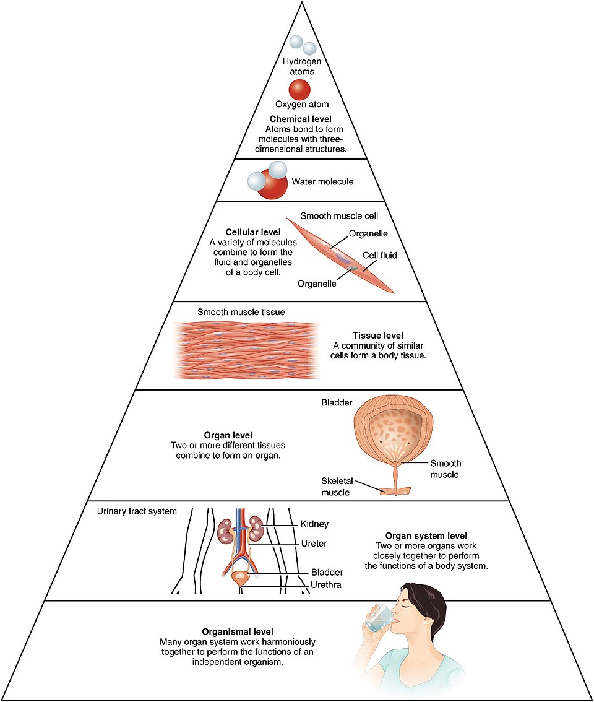
Two questions, always asked together
Everything in this book grows out of two words. Anatomy asks what is it and where is it — the shape, the parts, the position of a structure. Physiology asks how does it work — the function, the process, the job that structure performs. The two are inseparable, because in the body structure always fits function. The wall of an air sac in the lung is thin as tissue paper precisely so that oxygen can cross it in a fraction of a second; the wall of the heart's main pumping chamber is thick and muscular precisely because it must launch blood to the whole body. Change the structure and you change what the tissue can do — a rule you will see over and over.
Small parts build bigger parts
The body is organized like a set of nesting dolls, each level built from the one below it. There are six levels, and it is worth being able to recite them in order:
| Level | What it is | Example |
|---|---|---|
| 1. Chemical | Atoms bond into molecules | Hydrogen + oxygen → a water molecule; amino acids → a protein |
| 2. Cellular | Molecules assemble into the smallest living unit | A muscle cell, a neuron, a red blood cell |
| 3. Tissue | Similar cells working together on one task | Cardiac muscle tissue; nervous tissue |
| 4. Organ | Two or more tissue types forming a structure with a job | The heart, the stomach, the skin |
| 5. Organ system | Organs cooperating on a large function | The cardiovascular system (heart + vessels + blood) |
| 6. Organism | All systems together = one living person | You |
Read the ladder in either direction and it tells a story. Going up, tiny parts combine into ever-larger, more capable structures until they add up to a living human. Going down, any disease can be traced to a lower level: a heart attack is an organ problem that begins with cells starved of oxygen because a molecule (cholesterol) built up in a vessel wall. Learning to move up and down this ladder is one of the most useful habits in all of A&P.
Zoom in and out through all six levels in the interactive below.
- Anatomy = structure and position; physiology = function and process; structure always fits function.
- The six levels, low to high: chemical → cellular → tissue → organ → organ system → organism.
- The cell is the smallest living unit and the dividing line between chemistry and life.
- Disease can be traced down the ladder to the tissue, cell, or molecule where it began.
Section 2The organ systems
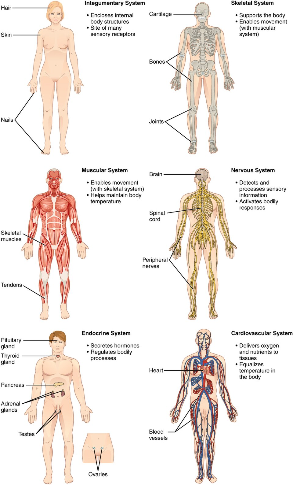
Eleven teams, one goal
Keeping a human alive is too big a job for any one organ, so the work is divided among eleven organ systems. They are not really separate — they overlap and depend on one another constantly — but grouping them by their main function makes the body learnable. A helpful way to hold them is to sort them by the kind of job they do: covering and support, control and communication, moving substances, and continuing the species.
| System | Main job | Signature organs |
|---|---|---|
| Integumentary | Covers and protects; temperature, sensation, vitamin D | Skin, hair, nails |
| Skeletal | Support, protection, movement levers, blood-cell formation, mineral storage | Bones, cartilage, joints |
| Muscular | Movement, posture, heat | Skeletal muscles |
| Nervous | Fast control and communication | Brain, spinal cord, nerves |
| Endocrine | Slow, hormonal control | Thyroid, pancreas, adrenal, pituitary |
| Cardiovascular | Transports blood, O₂, nutrients, wastes | Heart, blood vessels, blood |
| Lymphatic / Immune | Fluid return and defense against pathogens | Lymph nodes, spleen, thymus, vessels |
| Respiratory | Gas exchange — O₂ in, CO₂ out | Lungs, airways |
| Digestive | Breaks down food, absorbs nutrients, removes waste | Stomach, intestines, liver, pancreas |
| Urinary | Filters blood, balances water/salts/pH, makes urine | Kidneys, ureters, bladder |
| Reproductive | Produces offspring and sex hormones | Ovaries/uterus; testes |
No system works alone
The magic is in the cooperation. Take one breath and follow it: the respiratory system pulls in oxygen, but it is the cardiovascular system that carries that oxygen to the tissues, the muscular system (the diaphragm) that did the pulling, the nervous system that set the breathing rate, and the skeletal system (the rib cage) that gave the lungs a frame to expand inside. When you meet a disease later in the course, ask which systems it touches — the answer is almost never just one.
Tap each system in the interactive to watch its organs light up on the body.
- There are eleven organ systems; know each system's main job and a signature organ.
- Systems constantly cooperate — a single act like breathing draws on five or more at once.
- Some organs serve two systems (the pancreas is digestive and endocrine).
Section 3Homeostasis & feedback
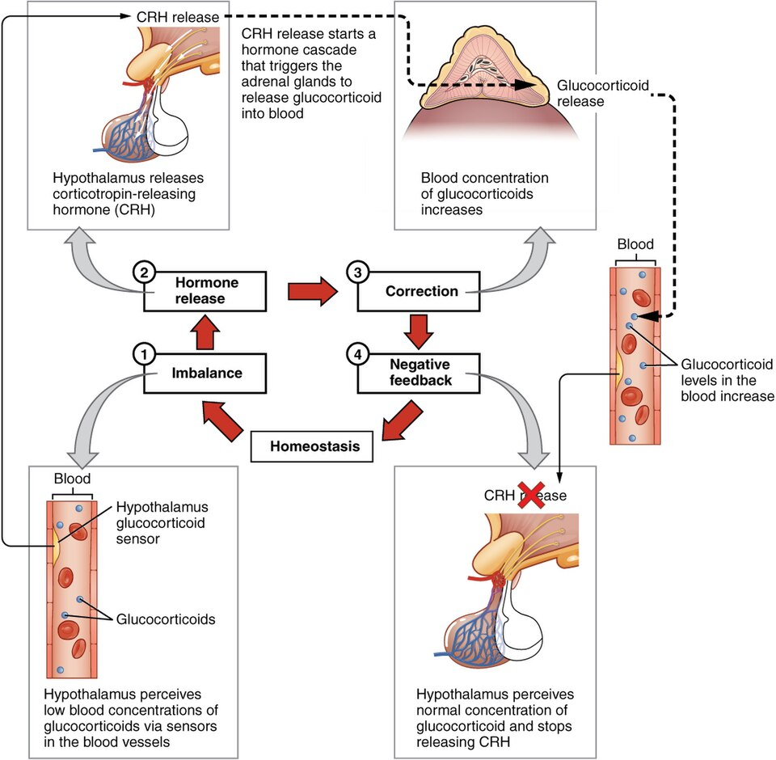
The single big idea of physiology
If you remember one word from this whole course, make it homeostasis — the maintenance of a stable internal environment despite a changing outside world. Your body temperature hovers near 37 °C whether you are in a snowstorm or a sauna; your blood glucose, blood pH, and fluid volume all stay penned inside narrow ranges. They do not stay perfectly still — they wobble gently around a set point, like a tightrope walker making constant tiny corrections. That dynamic balance is health. Push a value too far outside its range and cells stop working; push it further and the person dies. Nearly every disease in the rest of this book is, at heart, a failure of homeostasis.
The negative feedback loop: three parts
The body keeps values steady mainly through negative feedback, and every negative feedback loop has the same three components. Learn them once and you can read any loop in the body:
- A receptor (a sensor) detects the change and reports it.
- A control center (usually the brain or an endocrine gland) compares the reading to the set point and decides on a response.
- An effector (a muscle or gland) carries out the response, which pushes the value back toward normal.
It is called negative feedback because the response opposes (negates) the original change — if the value went up, the loop brings it down, and vice versa. The classic example is body temperature. Step into the cold: temperature receptors in your skin fire; the control center (the hypothalamus) reads "too cold"; and it drives effectors — blood vessels constrict to keep heat in, and muscles shiver to make heat. Temperature climbs back to the set point, and the loop quiets down. A home thermostat works exactly the same way: sense, compare, correct.
Positive feedback: the rare amplifier
Occasionally the body wants the opposite — a signal that amplifies itself until an event is finished. This is positive feedback, and it is rare precisely because it is explosive. In childbirth, the baby's head stretches the cervix, which triggers oxytocin, which strengthens contractions, which stretches the cervix more — a snowballing cycle that builds until delivery ends it. Blood clotting works the same way: the first platelets to stick release chemicals that recruit more platelets, which recruit more, sealing the wound fast. Positive feedback always needs a built-in stop (birth, or a finished clot); without one it would run away.
| Feature | Negative feedback | Positive feedback |
|---|---|---|
| Effect on the change | Opposes / reverses it | Amplifies / continues it |
| Result | Returns to set point (stability) | Drives toward a completion event |
| Frequency | The rule — most loops | The exception — a few |
| Examples | Temperature, glucose, blood pressure, pH | Childbirth, blood clotting, lactation |
Knock a value off its set point in the interactive and watch a negative feedback loop pull it home.
- Homeostasis is a stable internal environment held near a set point; losing it is the root of most disease.
- A negative feedback loop has three parts — receptor → control center → effector — and its response opposes the change to restore normal.
- Positive feedback amplifies a change until a completion event stops it: childbirth, clotting, milk let-down.
Section 4The language of position
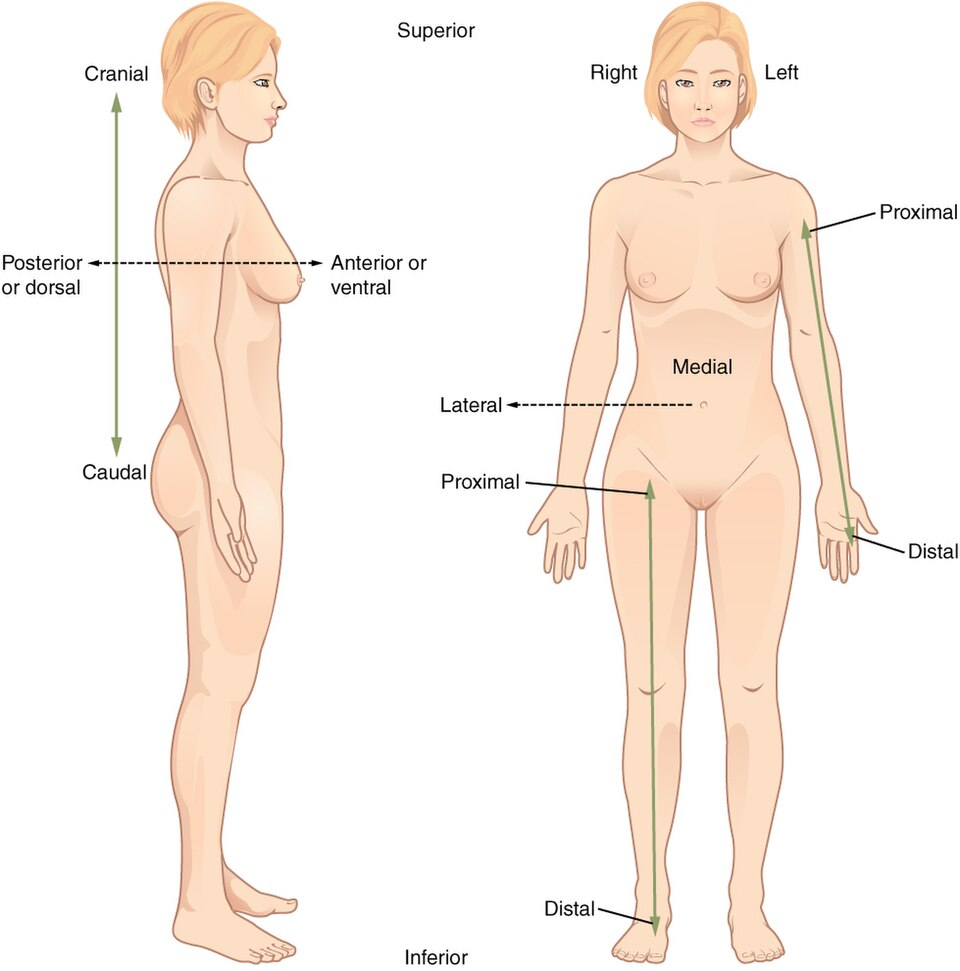
Start from the anatomical position
To describe where things are without confusion, everyone agrees to start from the same pose: the anatomical position. The body stands upright, facing forward, feet slightly apart, arms at the sides with the palms turned forward. Every directional term is defined from this pose, so a structure's description never changes even if the real patient is lying down or upside down. One more rule that trips up students: "right" and "left" always mean the patient's own right and left, not yours as you look at them.
The directional pairs
Directional terms come in opposing pairs, which makes them easy to learn two at a time:
| Term | Meaning | Example |
|---|---|---|
| Superior / Inferior | Above / below (toward head / toward feet) | The heart is superior to the stomach |
| Anterior / Posterior | Front / back (ventral / dorsal) | The sternum is anterior to the heart |
| Medial / Lateral | Toward the midline / away from it | The nose is medial to the eyes |
| Proximal / Distal | Nearer to / farther from the trunk (limbs) | The elbow is proximal to the wrist |
| Superficial / Deep | Toward the surface / away from it | The skin is superficial to the muscle |
Two of these pairs deserve extra care. Proximal and distal are used mainly for the limbs and always measured from where the limb attaches to the trunk — so the shoulder is proximal, the fingertips distal. Medial and lateral are measured from the body's imaginary midline, so structures near the center are medial and structures out toward the sides are lateral.
See each pair drawn on a body in anatomical position below.
- All terms are defined from the anatomical position (upright, facing forward, palms forward).
- Right and left always mean the patient's right and left.
- Learn the pairs: superior/inferior, anterior/posterior, medial/lateral, proximal/distal, superficial/deep — and use them relatively ("X is [term] to Y").
Section 5Planes & sections
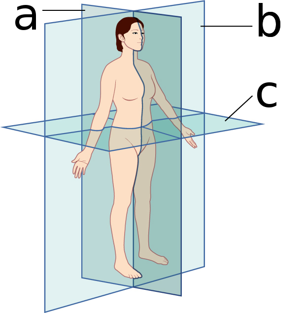
Three ways to slice
To look inside the body — on a cadaver table or on a CT scan — we imagine cutting it along flat surfaces called planes. There are three, and they are perpendicular to one another:
- The sagittal plane divides the body into left and right. A cut exactly down the midline is a midsagittal section; an off-center one is parasagittal.
- The frontal (coronal) plane divides the body into front and back (anterior and posterior).
- The transverse (horizontal) plane divides the body into top and bottom (superior and inferior) — the "slice" view you see on a CT.
Why does this matter to a nurse or clinician? Because medical images are always taken in one of these planes, and reading a scan means knowing which slice you are looking at. A transverse CT of the abdomen shows organs in cross-section; a sagittal MRI of the spine shows the vertebrae stacked front-to-back. Naming the plane is the first step in orienting yourself to any image.
Watch each plane sweep through the body in the interactive below.
- Sagittal = left/right; frontal (coronal) = front/back; transverse = top/bottom.
- A midsagittal cut makes equal mirror halves; other sagittal cuts (parasagittal) do not.
- Medical images (CT, MRI) are read by first naming their plane.
Section 6Cavities & regions
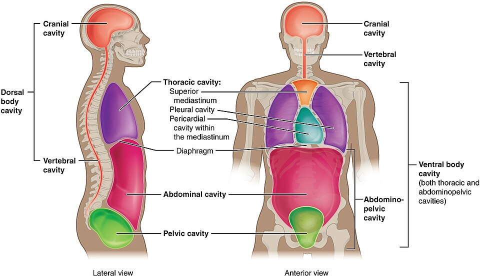
Where the organs live
The organs are not loose inside you — they are housed in enclosed spaces called body cavities that protect them and let them move. There are two main groups. The dorsal (posterior) cavity runs along the back and holds the nervous system: the cranial cavity (the brain) and the vertebral cavity (the spinal cord). The larger ventral (anterior) cavity holds most other organs and is split by the diaphragm into the thoracic cavity above (heart and lungs) and the abdominopelvic cavity below (digestive organs, then the pelvic organs).
Serous membranes: the slippery linings
Organs in the ventral cavity are wrapped in thin, double-layered serous membranes that secrete a slick fluid so organs can glide without friction. Each has a two-part name: the pleura around the lungs, the pericardium around the heart, and the peritoneum around the abdominal organs. When one of these membranes becomes inflamed, you get the "-itis" diseases — pleuritis, pericarditis, peritonitis — and the friction or fluid buildup causes real trouble.
Mapping the abdomen: regions and quadrants
Because so much can go wrong in the belly, clinicians divide the abdominopelvic surface into a grid to describe exactly where a pain or a mass is. The simple version uses four quadrants (right and left, upper and lower — RUQ, LUQ, RLQ, LLQ); the detailed version uses nine regions (a tic-tac-toe grid: the central umbilical region, the epigastric above it, the hypogastric below, and flanking regions on each side). Saying "RLQ pain" instantly narrows the suspects — the appendix lives there.
Explore the cavities, membranes, and the region/quadrant grids in the interactive.
- The dorsal cavity (cranial + vertebral) holds the CNS; the ventral cavity splits at the diaphragm into thoracic and abdominopelvic.
- Serous membranes — pleura, pericardium, peritoneum — reduce friction; their inflammation gives the "-itis" diseases.
- The abdomen maps into 4 quadrants or 9 regions; location narrows the diagnosis.
The chapter in one breath
- Anatomy is structure, physiology is function, and structure always fits function.
- The body is built in six nested levels: chemical → cellular → tissue → organ → organ system → organism, with the cell as the smallest living unit.
- Eleven organ systems share the work of survival and constantly cooperate; know each one's main job.
- Homeostasis is the stable internal environment that defines health; most disease is a failure of it.
- Negative feedback (receptor → control center → effector) opposes change to restore a set point; positive feedback amplifies change to complete an event (childbirth, clotting).
- Anatomical language starts from the anatomical position; directional terms are used in relative pairs, and right/left mean the patient's.
- Three planes (sagittal, frontal, transverse) slice the body; organs sit in dorsal and ventral cavities lined by serous membranes; the abdomen maps into quadrants and regions.
ReferenceWords worth knowing
A quick reference for the terms in this chapter — skim it now, or circle back whenever a word trips you up.
- Anatomical position
- The standard reference pose — standing upright, facing forward, arms at the sides with palms forward — from which all directional terms are defined.
- Anatomy
- The study of the body's structures and their physical relationships (what a part is and where it lies).
- Anterior (ventral)
- Toward the front of the body.
- Control center
- The part of a feedback loop (often the brain or an endocrine gland) that compares a sensed value to the set point and directs a response.
- Distal
- Farther from the point where a limb attaches to the trunk (the fingers are distal to the elbow).
- Effector
- The muscle or gland in a feedback loop that carries out the corrective response.
- Frontal (coronal) plane
- A vertical plane dividing the body into anterior (front) and posterior (back) portions.
- Homeostasis
- The maintenance of a relatively stable internal environment despite external change, kept near a set point by feedback.
- Medial
- Toward the midline of the body.
- Negative feedback
- A control loop whose response opposes and reverses the original change, restoring the value to its set point; the body's main homeostatic mechanism.
- Organ
- A structure made of two or more tissue types that performs a specific function (for example, the heart or stomach).
- Physiology
- The study of how the body's structures function and the processes that keep it alive.
- Positive feedback
- A control loop whose response amplifies the original change until a completion event stops it (childbirth, blood clotting).
- Proximal
- Nearer to the point where a limb attaches to the trunk (the elbow is proximal to the wrist).
- Sagittal plane
- A vertical plane dividing the body into left and right portions; a midline cut is midsagittal.
- Serous membrane
- A thin, double-layered membrane (pleura, pericardium, peritoneum) that lines a ventral cavity and secretes fluid to reduce friction around organs.
- Set point
- The target value a homeostatic variable is regulated around (for example, ~37 °C for body temperature).
- Superior
- Toward the head or the upper part of the body.
- Transverse (horizontal) plane
- A plane dividing the body into superior and inferior portions; produces a cross-sectional view.
Check yourself
The Chemical Level of Organization
Every heartbeat, every thought, every drop of sweat begins as chemistry. Long before a cell can divide or a nerve can fire, atoms must bond, reactions must run, and water must do its quiet, essential work. This chapter takes you down to the chemical level — the foundation the whole rest of the book is built on. You will meet the atom and the handful of elements that make up almost all of you, learn the three bonds that hold molecules together, watch reactions rearrange matter and see how enzymes speed them up, discover why water is the perfect medium for life, learn to read pH and the buffers that guard your blood, and finish with the four great families of molecules that build your body. Get comfortable here — everything upstairs depends on this floor.
By the end of this chapter you can
- Describe the structure of an atom — protons, neutrons, and electrons — and explain how the atomic number defines an element.
- Name the major elements that make up most of the human body and distinguish them from trace elements and isotopes.
- Compare ionic, covalent (polar and nonpolar), and hydrogen bonds, and explain the octet rule that drives bonding.
- Classify chemical reactions as synthesis, decomposition, or exchange, and explain activation energy and how enzymes lower it.
- Explain how water's polarity makes it the body's solvent, temperature buffer, and lubricant.
- Interpret the pH scale, distinguish acids from bases, and describe how buffers hold blood near 7.4.
- Identify the four organic macromolecule families — carbohydrates, lipids, proteins, nucleic acids — plus ATP, and give a job for each.
- Contrast dehydration synthesis with hydrolysis as the way polymers are built and broken.
Section 1Atoms & the elements
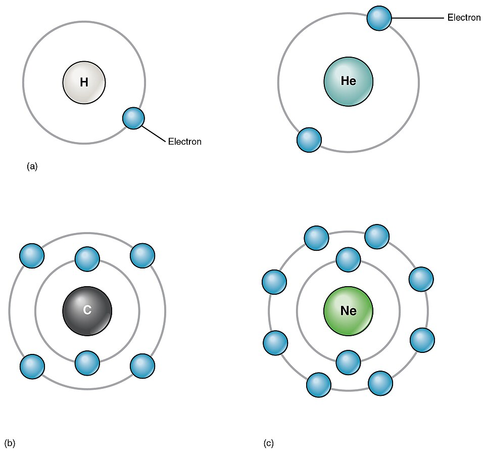
Matter, elements, and the atom
Anything that takes up space and has mass is matter — your bones, your blood, the air in your lungs. All matter is built from elements, pure substances that cannot be broken down into anything simpler by ordinary chemistry. There are 118 known elements, but life is surprisingly economical: only about two dozen appear in the body, and just six — oxygen, carbon, hydrogen, nitrogen, calcium, and phosphorus — account for roughly 99% of your mass. The smallest particle of an element that still behaves like that element is the atom. Split an atom apart and you no longer have the element; you have its raw ingredients.
| Element | Symbol | ~% of body mass | A job it does |
|---|---|---|---|
| Oxygen | O | 65% | Part of water; final electron acceptor in respiration |
| Carbon | C | 18% | The backbone of every organic molecule |
| Hydrogen | H | 10% | Part of water; sets pH as the H⁺ ion |
| Nitrogen | N | 3% | In every protein and nucleic acid |
| Calcium | Ca | 1.5% | Bone mineral; muscle and nerve signaling |
| Phosphorus | P | 1% | Bone; the energy bonds of ATP and DNA |
Inside the atom: three particles
An atom has a dense center, the nucleus, surrounded by a cloud of moving electrons. Only three subatomic particles matter for this course. Protons carry a positive charge and sit in the nucleus. Neutrons carry no charge and share the nucleus with the protons, adding mass but no charge. Electrons carry a negative charge and are almost weightless, whirling around the nucleus in layered shells (energy levels). Because protons and electrons carry equal and opposite charges, a neutral atom has exactly as many electrons as protons, and the whole thing balances out to no net charge.
| Particle | Charge | Location | Relative mass |
|---|---|---|---|
| Proton | +1 | Nucleus | 1 (heavy) |
| Neutron | 0 | Nucleus | 1 (heavy) |
| Electron | −1 | Shells around the nucleus | ~1/1800 (negligible) |
Atomic number, isotopes, and the outer shell
One number is the atom's fingerprint: the atomic number, the count of protons in the nucleus. Change it and you change the element itself — 1 proton is always hydrogen, 6 is always carbon, 8 is always oxygen. The mass number adds protons and neutrons together. Atoms of the same element that carry different numbers of neutrons are called isotopes: carbon-12 and carbon-14 are both carbon (6 protons each), but carbon-14 has two extra neutrons and is radioactive, which is exactly why radioactive isotopes are so useful in medical imaging and dating. What drives an atom's chemistry, though, is not its nucleus but its outermost electrons — the valence shell. Atoms are “happiest” (most stable) when that outer shell is full, which for most biological atoms means eight electrons — the octet rule. An atom with a full outer shell is inert; an atom short a few electrons is reactive and ready to bond.
Pick an element and watch its atom assemble — nucleus in the center, electrons filling their shells — in the interactive below.
- An atom has a nucleus of positive protons and neutral neutrons, orbited by negative electrons in shells.
- The atomic number (proton count) defines the element; a neutral atom has equal protons and electrons.
- Isotopes are the same element with different neutron counts; some are radioactive and medically useful.
- The valence (outer) shell drives chemistry — atoms bond to reach a stable, full shell (the octet rule).
Section 2Chemical bonds
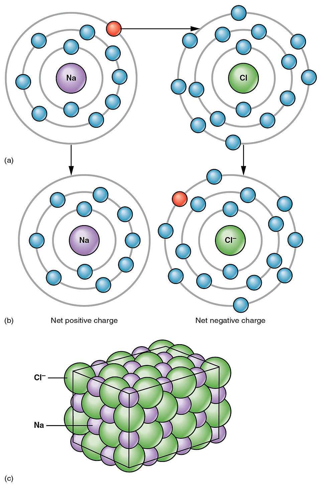
Why atoms bond at all
Atoms bond for one reason: to reach a stable, full outer shell. An atom with a lonely, half-empty valence shell will do almost anything to fill it — give electrons away, take them, or share them — and each of those strategies produces a different kind of bond. The noble gases (helium, neon, argon) already have full shells, so they drift through the world refusing to react. Everything else is looking for a partner. Understanding the three main bonds — ionic, covalent, and hydrogen — lets you predict how nearly every molecule in the body behaves.
Ionic bonds: give and take
Sometimes the cleanest way to fill a shell is to hand an electron over completely. When one atom donates an electron and another accepts it, both walk away charged: the donor becomes a positive cation, the acceptor a negative anion. Opposite charges attract, and that electrostatic pull is the ionic bond. Table salt is the classic case: sodium hands its lone outer electron to chlorine, becoming Na⁺, while chlorine becomes Cl⁻, and the two cling together as NaCl. In water, ionic compounds pull apart into their separate ions — these dissolved, charged particles are your electrolytes (Na⁺, K⁺, Ca⁺⁺, Cl⁻), and they run nerve signals, muscle contraction, and fluid balance.
Covalent bonds: sharing — polar and nonpolar
More often, two atoms simply share a pair of electrons so that both count it toward a full shell — a covalent bond, the strongest and most common bond in the body. Carbon builds all of life on covalent bonds. But sharing is not always fair. When both atoms pull equally, the shared electrons sit in the middle and the bond is nonpolar (as in O₂ or the carbon–hydrogen bonds of fats). When one atom pulls harder, it hogs the electrons and the bond becomes polar, leaving one end slightly negative and the other slightly positive. Water is the great polar molecule: oxygen pulls the shared electrons away from its two hydrogens, so oxygen carries a partial negative charge and the hydrogens a partial positive — a lopsidedness that, as you will see, makes life possible.
Hydrogen bonds: weak but mighty
A hydrogen bond is not a bond within a molecule but a gentle attraction between molecules (or between distant parts of one big molecule). It forms when the slightly positive hydrogen of one polar molecule is drawn to the slightly negative oxygen or nitrogen of another. Any single hydrogen bond is feeble — a fraction of the strength of a covalent bond — but in the millions they become mighty. Hydrogen bonds hold liquid water together, zip the two strands of DNA into a double helix, and fold proteins into their working shapes. They are strong enough to give structure yet weak enough to break and re-form, which is exactly what living molecules need.
| Bond | How it forms | Strength | Example |
|---|---|---|---|
| Ionic | One atom donates an electron to another; opposite charges attract | Strong (weak once dissolved in water) | Na⁺Cl⁻ (table salt) |
| Covalent (nonpolar) | Electrons shared equally | Strongest | O₂; C–H bonds in fats |
| Covalent (polar) | Electrons shared unequally — partial charges | Strong | Water (H₂O) |
| Hydrogen | Attraction between partial + and partial − on polar molecules | Weak (strong in numbers) | Between water molecules; DNA strands |
Flip between ionic, covalent, and hydrogen bonds and watch how each one forms in the interactive.
- Atoms bond to fill their valence shell; a full shell is stable and unreactive.
- Ionic bonds transfer electrons, making charged ions (electrolytes) that separate in water.
- Covalent bonds share electrons — equally (nonpolar) or unequally (polar); they are the body's strongest bonds.
- Hydrogen bonds are weak individual attractions between polar molecules that add up to hold water, DNA, and proteins together.
Section 3Chemical reactions & enzymes
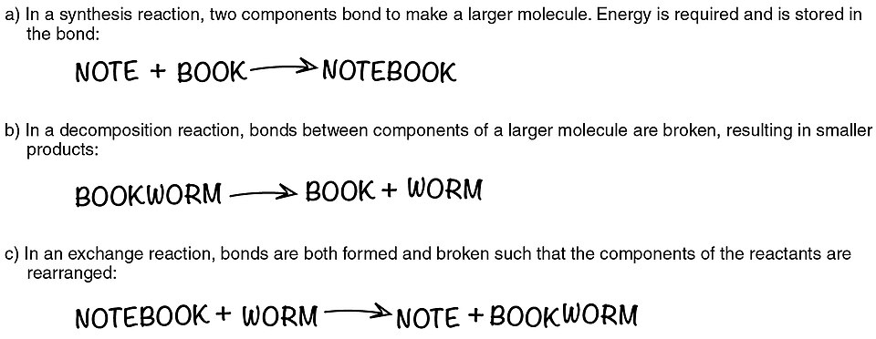
Reactants, products, and three ways to rearrange atoms
A chemical reaction is simply the making or breaking of bonds — atoms let go of old partners and grab new ones. The starting materials are the reactants; what you end up with are the products. No atoms are created or destroyed; they are only rearranged. Almost every reaction in the body fits one of three patterns. Synthesis reactions join smaller parts into a larger molecule (A + B → AB) — the building, or anabolic, reactions. Decomposition reactions break a large molecule into smaller pieces (AB → A + B) — the demolishing, or catabolic, reactions, like digesting a meal. Exchange reactions do both at once, swapping partners (AB + CD → AC + BD). Many reactions are also reversible, running either direction depending on conditions.
| Type | Pattern | What it does | Body example |
|---|---|---|---|
| Synthesis (anabolic) | A + B → AB | Builds larger molecules | Amino acids joined into a protein |
| Decomposition (catabolic) | AB → A + B | Breaks molecules apart | Digesting starch into glucose |
| Exchange | AB + CD → AC + BD | Swaps partners | Buffers trading H⁺ in the blood |
Energy: the hill every reaction must climb
Chemical bonds are little reservoirs of energy, so rearranging them always involves an energy change. Reactions that release energy (usually as heat) are exergonic — these power the body, like breaking down glucose. Reactions that absorb energy are endergonic — building big molecules costs energy. But here is the catch: even a reaction that releases energy overall must first be nudged over an initial hump called the activation energy — the energy needed to get the reactants unstable enough to react at all. Think of a boulder resting in a small dip near the top of a hill: it will roll down and release a lot of energy, but only after something lifts it over the lip first. That lip is activation energy, and at body temperature most reactions would sit stuck behind it for hours or years.
Enzymes: shrinking the hill
The body cannot wait hours, and it cannot simply crank up the heat — so it uses enzymes. An enzyme is a biological catalyst (nearly always a protein) that lowers the activation energy of a reaction, letting it run thousands or millions of times faster at a safe 37 °C. Crucially, an enzyme is not consumed — it does its job and is freed to do it again. Each enzyme is exquisitely specific, with an active site shaped to fit one particular substrate like a key in a lock (or, more accurately, a glove that molds around the hand). Because enzymes are proteins, anything that unfolds a protein — a high fever, the wrong pH — can cripple them, which is one reason your body guards its temperature and pH so fiercely.
Watch a reaction run over its energy hill, then switch on an enzyme and see the hill shrink in the interactive below.
- Reactions rearrange atoms from reactants into products as synthesis, decomposition, or exchange.
- Exergonic reactions release energy; endergonic reactions absorb it; every reaction must first clear its activation energy.
- Enzymes are protein catalysts that lower activation energy, are reused, and are highly specific to their substrate.
- Enzymes depend on their shape, so heat and pH extremes can disable them.
Section 4Water, the solvent of life

Polarity: the source of all water's tricks
You are roughly 60% water, and that is no accident — nearly every remarkable thing water does traces back to a single feature: it is polar. Recall from Section 2 that oxygen hogs the shared electrons in each O–H bond, so a water molecule (H₂O) carries a slightly negative pole at the oxygen and slightly positive poles at the two hydrogens. Because opposite partial charges attract, every water molecule clings by hydrogen bonds to the water molecules around it. That constant, shifting web of hydrogen bonds is the hidden machinery behind water's role as a solvent, a temperature buffer, and a lubricant.
The universal solvent
Water is called the universal solvent because its charged poles surround and pull apart other charged or polar substances, scattering them evenly into solution. The dissolving liquid is the solvent, the dissolved substance the solute. Molecules that mix into water — salts, sugars, amino acids — are hydrophilic (“water-loving”), while nonpolar molecules like fats are hydrophobic (“water-fearing”) and refuse to dissolve. This split does real anatomical work: it is exactly why cell membranes, made of hydrophobic lipids, form watertight barriers in your watery body. And because so much of the body's chemistry happens in solution, water is the medium in which nutrients travel, wastes dissolve, and reactions occur — blood plasma is, at heart, water carrying dissolved cargo.
Heat, cushioning, and chemistry
Water's hydrogen bonds also give it a very high heat capacity: it takes a lot of energy to raise water's temperature, so your water-rich body resists sudden swings in temperature and stays near 37 °C. Better still, evaporating water carries away enormous heat, which is why sweating cools you so effectively on a hot day. The same cohesive stickiness lets water form protective, cushioning films — the slippery fluid in serous membranes, the synovial fluid in joints, the mucus lining your airways all rely on it. Finally, water is not just a bystander to chemistry; it is a participant. The body builds big molecules by removing water (dehydration synthesis) and breaks them down by adding water (hydrolysis) — the two reactions you will meet again in Section 6.
| Property | Why (from polarity) | What it does for you |
|---|---|---|
| Solvent | Charged poles pull solutes apart | Transports nutrients, wastes, and ions in blood |
| High heat capacity | Hydrogen bonds absorb heat | Buffers body temperature near 37 °C |
| Evaporative cooling | Breaking H-bonds carries off heat | Sweating cools the body |
| Cohesion / lubrication | Molecules stick to one another | Slippery films in joints, membranes, airways |
| Reactant | Can be added or removed in reactions | Builds and breaks macromolecules |
Explore what water's lopsided charge buys you — dissolving, sticking, and buffering heat — in the interactive.
- Water is polar, so its molecules hydrogen-bond to one another — the source of all its special properties.
- As the universal solvent, water dissolves hydrophilic solutes but not hydrophobic ones, a split that shapes membranes.
- High heat capacity and evaporative cooling let water stabilize body temperature and enable sweating.
- Water is a reactant — removed in dehydration synthesis, added in hydrolysis.
Section 5pH, acids, bases & buffers

What pH actually measures
pH is a measure of how many free hydrogen ions (H⁺) are floating loose in a fluid. The more H⁺, the more acidic the fluid; the fewer, the more basic (alkaline). The scale runs from 0 to 14, with 7 as neutral (pure water). Below 7 is acidic, above 7 is basic. The one twist students must respect is that the scale is logarithmic: each whole step is a tenfold change in H⁺. A fluid at pH 4 is not slightly more acidic than pH 5 — it holds ten times more hydrogen ions. That is why a drift of even a few tenths of a pH unit in the blood is a genuine emergency.
Acids, bases, and the number that matters most
An acid is a substance that releases H⁺ into solution, driving pH down — stomach acid sits near pH 2. A base accepts H⁺ (or releases OH⁻), driving pH up — household bleach and pancreatic secretions are basic. The number that matters most in all of physiology is the pH of blood, which must stay locked in the razor-thin range of 7.35 to 7.45 (about 7.4). Slip below 7.35 and you are in acidosis; rise above 7.45 and you are in alkalosis. Push past roughly 6.8 or 7.8 and proteins denature, enzymes fail, and the situation becomes life-threatening. Compared with the wild pH swings of the world outside, the body keeps its blood almost eerily steady.
| Fluid | Approx. pH | Acidic / basic |
|---|---|---|
| Stomach acid | ~2 | Strongly acidic |
| Urine | ~6 | Slightly acidic |
| Pure water | 7 | Neutral |
| Blood | 7.35–7.45 | Slightly basic |
| Pancreatic juice | ~8 | Basic |
Buffers: holding the line at 7.4
How does blood hold its pH so steady while acids pour in from every meal and every muscle? The answer is buffers — chemical partnerships that soak up excess H⁺ when a fluid turns too acidic and release H⁺ when it turns too basic. The body's front-line buffer is the bicarbonate system: carbonic acid (H₂CO₃) and bicarbonate ion (HCO₃⁻) sit in equilibrium, trading hydrogen ions back and forth to blunt any swing. Buffers do not make acid disappear; they cushion the blow long enough for the lungs (which blow off CO₂) and kidneys (which excrete H⁺) to restore true balance. It is homeostasis at the molecular level — and a preview of the acid–base chapters ahead.
Push the pH up and down and watch buffers fight to pull it back toward neutral in the interactive.
- pH measures free H⁺: below 7 is acidic, above 7 is basic, and the scale is logarithmic (each unit = 10×).
- Acids release H⁺; bases accept it; blood must stay in the narrow range 7.35–7.45.
- Straying gives acidosis (too low) or alkalosis (too high), both dangerous.
- Buffers — chiefly the bicarbonate system — absorb or release H⁺ to hold pH steady.
Section 6The molecules of life

Organic molecules and the carbon backbone
Turn from the small inorganic molecules — water, salts, gases — to the big organic ones, and you meet the true building blocks of the body. Organic molecules are, by definition, built on a skeleton of carbon. Carbon is the perfect construction atom because it can form four covalent bonds at once, letting it chain into long backbones, branch, and close into rings. The largest of these — macromolecules — are usually polymers: long chains snapped together from small repeating units called monomers. The body assembles a polymer by dehydration synthesis (removing a water molecule to bond two monomers) and takes it apart by hydrolysis (adding water to split the bond). Nearly everything you are made of belongs to just four families — plus one special molecule that powers the whole enterprise.
The four families
Carbohydrates are sugars and their chains — monomers called monosaccharides (glucose) link into polysaccharides (glycogen, starch). They are the body's quick, preferred fuel. Lipids are the oily, water-fearing molecules: triglycerides store energy and insulate, phospholipids build every cell membrane, and steroids like cholesterol become hormones. Their hydrophobic nature is exactly what makes membranes work. Proteins are the body's workhorses, built from twenty kinds of amino acids strung together and then folded into precise three-dimensional shapes — and because shape determines function, a protein that unfolds (denatures) from heat or wrong pH stops working, like an egg white turning solid in a hot pan. Proteins serve as enzymes, structural fibers, transporters, and messengers. Nucleic acids — DNA and RNA — are chains of nucleotides that store and carry the genetic instructions for building every protein you own.
| Family | Monomer / unit | Example | Main job |
|---|---|---|---|
| Carbohydrate | Monosaccharide (glucose) | Glycogen, starch | Quick energy; short-term fuel storage |
| Lipid | Fatty acids + glycerol | Triglyceride, phospholipid, cholesterol | Energy storage, insulation, membranes, hormones |
| Protein | Amino acid (20 kinds) | Enzymes, keratin, hemoglobin | Structure, catalysis, transport, signaling |
| Nucleic acid | Nucleotide | DNA, RNA | Store and express genetic information |
ATP: the cell's energy currency
One small molecule deserves its own spotlight: adenosine triphosphate, or ATP. It is the universal energy currency every cell spends. ATP holds three phosphate groups on a tail, and the bond to the last phosphate is a coiled spring of energy. When the cell needs power — to contract a muscle, pump an ion, or build a molecule — it snaps off that last phosphate (ATP → ADP + phosphate) and the released energy drives the work. The cell then recharges ADP back into ATP using energy from food. You are, in a very real sense, rebuilding your body weight in ATP every day, spending and remaking it billions of times a second.
Pick a macromolecule family and watch it snap together from its monomers in the interactive below.
- Organic molecules are built on carbon, which forms four bonds; big ones are polymers of repeating monomers.
- Polymers form by dehydration synthesis (removing water) and break by hydrolysis (adding water).
- The four families: carbohydrates (fuel), lipids (membranes, storage, hormones), proteins (workhorses whose shape is their function), and nucleic acids (genetic information).
- ATP is the cell's energy currency, releasing energy when its last phosphate is removed.
The chapter in one breath
- All matter is built from elements, and the smallest unit of an element is the atom — a nucleus of protons and neutrons orbited by electrons; the atomic number (protons) defines the element.
- Six elements — O, C, H, N, Ca, P — make up about 99% of the body; atoms bond to fill their outer shell (the octet rule).
- Three bonds hold molecules together: ionic (transfer electrons → ions), covalent (share electrons, polar or nonpolar), and weak hydrogen bonds.
- Reactions rearrange atoms by synthesis, decomposition, or exchange; each must clear an activation energy hill that enzymes lower.
- Water is polar, making it the body's solvent, temperature buffer, and lubricant, and a reactant in building and breaking molecules.
- pH tracks free H⁺ on a logarithmic scale; blood is held at 7.35–7.45 by buffers such as bicarbonate.
- Life is built from four organic families — carbohydrates, lipids, proteins, nucleic acids — plus ATP, assembled by dehydration synthesis and broken by hydrolysis.
ReferenceWords worth knowing
A quick reference for the terms in this chapter — skim it now, or circle back whenever a word trips you up.
- Acid
- A substance that releases hydrogen ions (H⁺) into solution, lowering pH below 7.
- Activation energy
- The initial energy hump that reactants must overcome before a reaction can proceed; enzymes lower it.
- Atom
- The smallest unit of an element that retains the element's properties; a nucleus of protons and neutrons orbited by electrons.
- Atomic number
- The number of protons in an atom's nucleus, which defines the element.
- ATP (adenosine triphosphate)
- The cell's energy currency; it releases usable energy when its terminal phosphate is removed to form ADP.
- Base
- A substance that accepts hydrogen ions (or releases OH⁻), raising pH above 7.
- Buffer
- A chemical system that resists changes in pH by absorbing or releasing H⁺, such as the bicarbonate buffer of blood.
- Carbohydrate
- An organic family of sugars and their polymers (glucose, glycogen) used mainly for quick energy.
- Covalent bond
- A bond in which atoms share electrons; equal sharing is nonpolar, unequal sharing is polar.
- Dehydration synthesis
- Building a polymer by removing a water molecule to link two monomers.
- Electron
- A negatively charged, nearly massless particle that orbits the nucleus in shells and drives chemical bonding.
- Element
- A pure substance that cannot be broken down chemically; the body is built mostly from six of them.
- Enzyme
- A biological catalyst (usually a protein) that lowers a reaction's activation energy without being consumed.
- Hydrogen bond
- A weak attraction between the partial-positive hydrogen of one polar molecule and a partial-negative atom of another.
- Hydrolysis
- Breaking a polymer apart by adding a water molecule across the bond.
- Ionic bond
- A bond formed when one atom donates an electron to another, creating oppositely charged ions that attract.
- Isotope
- An atom of an element with the usual number of protons but a different number of neutrons.
- Lipid
- A hydrophobic organic family including triglycerides, phospholipids, and steroids; used for storage, membranes, and hormones.
- Nucleic acid
- A polymer of nucleotides (DNA or RNA) that stores and expresses genetic information.
- pH
- A logarithmic measure of free hydrogen-ion concentration; 7 is neutral, lower is acidic, higher is basic.
- Polar molecule
- A molecule with an uneven charge distribution, such as water, where one end is slightly negative and the other slightly positive.
- Protein
- A polymer of amino acids folded into a specific shape; its shape determines its function as an enzyme, structure, transporter, or messenger.
Check yourself
The Cellular Level of Organization
If the last chapter zoomed out to the whole body, this one zooms all the way in — to the single smallest thing that can still be called alive. The cell is where physiology actually happens: where oxygen is burned for energy, where genes are read into proteins, where the decision to grow or divide is made. In this chapter you will meet the membrane that wraps every cell and chooses what crosses it, tour the tiny organelles that split the work inside, follow a gene as it becomes a working protein, and watch one cell become two. Master the cell and the rest of the body starts to make sense — because every tissue, organ, and system is just cells, cooperating.
By the end of this chapter you can
- Describe the fluid mosaic model and explain the jobs of the phospholipid bilayer, membrane proteins, cholesterol, and the sugar coat.
- Distinguish passive from active transport, and place diffusion, facilitated diffusion, osmosis, the Na⁺/K⁺ pump, and bulk transport in the right column.
- Name the major organelles and state the specific function of each.
- Explain how the nucleus stores DNA and how that DNA is packaged into chromatin and chromosomes.
- Trace protein synthesis from gene to protein through transcription and translation.
- Order the phases of the cell cycle and describe what happens in each stage of mitosis.
- Predict what happens to a cell in isotonic, hypotonic, and hypertonic solutions and connect it to the choice of an IV fluid.
Section 1The cell membrane
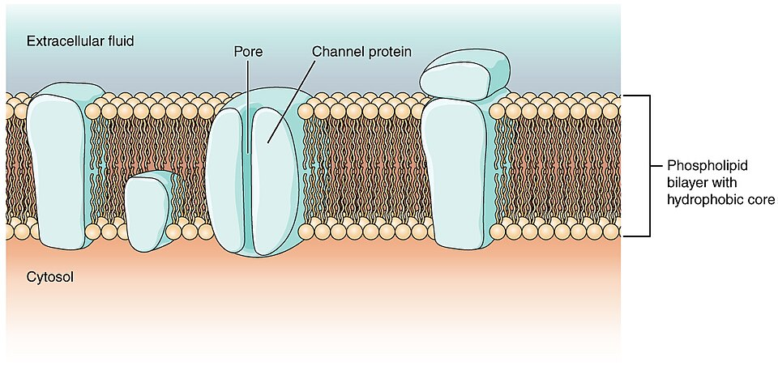
A wall that thinks
Every cell in your body is wrapped in a plasma membrane — a boundary so thin it is invisible under a normal light microscope, yet smart enough to decide what enters and what leaves. Without it a cell would simply dissolve into its surroundings. The membrane does three big jobs at once: it separates the cell's inside from the outside, it controls traffic across that border (it is selectively permeable, letting some things through and blocking others), and it communicates, carrying receptors and ID tags that let the cell sense and be recognized. Everything else in this chapter depends on this one structure holding the line.
The fluid mosaic model
We picture the membrane using the fluid mosaic model, and both words matter. Mosaic means it is a patchwork of many different pieces — lipids, proteins, and sugars set side by side like tiles. Fluid means those pieces are not glued down; they drift and jiggle sideways within the sheet, so the membrane behaves more like a film of oil than a rigid wall. The foundation of the whole structure is the phospholipid bilayer: two layers of phospholipid molecules arranged tail-to-tail. Each phospholipid is amphipathic — it has a hydrophilic ("water-loving") phosphate head and two hydrophobic ("water-fearing") fatty-acid tails. Drop these molecules in water and they self-assemble automatically: the heads face out toward the watery fluid on both sides, and the oily tails hide in the middle, away from water. That greasy core is the secret to the membrane's pickiness — small, fat-soluble molecules slip through it easily, while ions and water-loving molecules are turned away and need a protein doorway.
Studded through this lipid sheet are the membrane proteins, and they do most of the interesting work. Integral (transmembrane) proteins pass all the way through the bilayer and form the channels, carriers, and pumps that move substances across. Peripheral proteins cling to one surface and often act as enzymes or anchors. Other proteins serve as receptors that bind hormones and signals, or as identity markers that label the cell as "self." Threaded among the lipids are molecules of cholesterol, which act as a fluidity buffer — keeping the membrane from becoming too stiff when it is cold or too runny when it is warm. Finally, short sugar chains attached to proteins and lipids form the glycocalyx, a fuzzy sugar coat on the cell's outer face that handles recognition, adhesion, and self-vs-nonself identity.
| Component | What it is | Main job |
|---|---|---|
| Phospholipid bilayer | Two layers of amphipathic phospholipids, tails inward | The basic barrier; blocks water-soluble molecules, passes small fat-soluble ones |
| Integral proteins | Proteins spanning the whole membrane | Channels, carriers, and pumps for transport; receptors |
| Peripheral proteins | Proteins attached to one surface | Enzymes, structural anchors, cell-shape support |
| Cholesterol | Lipid molecules wedged between phospholipids | Stabilizes fluidity across temperature changes |
| Glycocalyx | Sugar chains on glycoproteins and glycolipids | Cell recognition, adhesion, self-identity markers |
Tap each piece of the membrane below to meet it up close.
- The plasma membrane separates, controls traffic (selectively permeable), and communicates.
- The fluid mosaic model: a fluid phospholipid bilayer (hydrophilic heads out, hydrophobic tails in) tiled with proteins, cholesterol, and sugars.
- Small fat-soluble molecules cross the oily core freely; ions and water-loving molecules need protein channels or carriers.
- Cholesterol stabilizes fluidity; the glycocalyx handles cell recognition and self-identity.
Section 2Moving things across
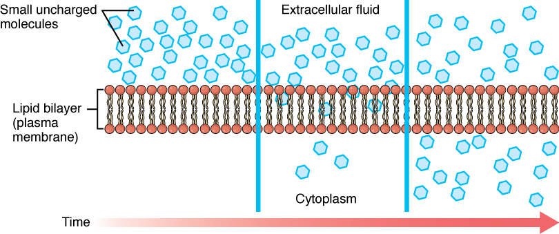
The one question to always ask: does it cost energy?
A cell must constantly bring in nutrients, push out wastes, and hold the right balance of salts and water. Every method it uses to move a substance across the membrane falls into one of two camps, and the dividing line is energy. In passive transport, substances move down their concentration gradient — from where they are crowded to where they are sparse — and this costs the cell no ATP, because it is simply going with the natural flow. In active transport, the cell moves substances up a gradient, against the flow, from low concentration to high — and that always requires an input of energy, usually ATP. Before you memorize a list of transport names, just ask: is it drifting downhill for free (passive) or being pushed uphill at a cost (active)?
Passive transport — drifting downhill
The simplest form is simple diffusion: molecules are always in random motion, so over time they spread out from crowded to less-crowded areas until they are evenly mixed. Small, nonpolar molecules such as oxygen and carbon dioxide diffuse straight through the lipid core — which is exactly how O₂ enters and CO₂ leaves every cell. When a molecule is too big or too charged to cross the lipids on its own, it uses facilitated diffusion: it still moves downhill for free, but through a protein channel or carrier that gives it a passage. Glucose entering a cell is the classic example. A special, vital case of passive transport is osmosis — the diffusion of water across a selectively permeable membrane — which is important enough to earn its own section at the end of this chapter.
Active transport — pushing uphill
Sometimes a cell needs a substance to be more concentrated on one side than the other, which means moving it against its gradient — and that requires energy. In primary active transport, a pump burns ATP directly. The most famous is the sodium–potassium pump (Na⁺/K⁺ pump), which pushes 3 Na⁺ out of the cell and 2 K⁺ in for every ATP it spends. This pump runs in every cell you own and is the foundation of the electrical charge that lets nerves fire and muscles contract. In secondary active transport, the cell rides the gradient built by a primary pump, coupling the downhill rush of one ion to drag another substance uphill alongside it. Finally, for cargo far too large for any channel — whole droplets or particles — the cell uses bulk transport, wrapping material in a piece of membrane: endocytosis brings it in (including phagocytosis, "cell eating," and pinocytosis, "cell drinking"), and exocytosis ships it out.
| Method | Energy? | Direction & example |
|---|---|---|
| Simple diffusion | No (passive) | Down gradient, straight through lipids — O₂, CO₂ |
| Facilitated diffusion | No (passive) | Down gradient, through a protein — glucose, ions |
| Osmosis | No (passive) | Water moves toward the saltier side |
| Primary active transport | Yes — ATP directly | Up gradient by a pump — Na⁺/K⁺ pump (3 out, 2 in) |
| Secondary active transport | Yes — ion gradient | Rides another ion's gradient — glucose–Na⁺ cotransport in the gut |
| Bulk transport | Yes (active) | Membrane-wrapped cargo — endocytosis (in), exocytosis (out) |
Pick a transport method below and watch the molecules cross.
- Passive transport moves substances down their gradient for free; active transport moves them up a gradient at a cost in energy.
- Passive types: simple diffusion, facilitated diffusion (through a protein), and osmosis (water).
- The Na⁺/K⁺ pump (3 out, 2 in per ATP) is primary active transport and underlies nerve and muscle electricity.
- Bulk transport handles the biggest cargo: endocytosis in, exocytosis out.
Section 3Inside the cell: the organelles

A factory with departments
Look inside the membrane and you find not an empty bag but a busy, organized workshop. Suspended in a gel-like fluid called the cytosol are the organelles — "little organs," each a specialized department with its own job. Dividing the labor this way lets the cell run many chemical processes at once without them interfering, much as walls separate the departments of a factory. Some organelles are wrapped in their own membranes (a design that keeps their contents and reactions sealed off), while a few, like ribosomes, are not. Learning the cell means learning who does what.
Control and manufacturing
The largest organelle is usually the nucleus, the cell's control center. It is bounded by a double membrane called the nuclear envelope, dotted with pores that let messages pass, and it holds the cell's DNA — the master instructions for building every protein. Between divisions this DNA is spread out as a loose tangle called chromatin; when the cell is about to divide it condenses into visible chromosomes. Inside the nucleus sits a dense spot, the nucleolus, where ribosomes are assembled. Ribosomes themselves are the protein-building machines; some float free in the cytosol, and some stud the rough endoplasmic reticulum (rough ER), a folded membrane network that manufactures and packages proteins destined for export or the membrane. Next door, the smooth ER (no ribosomes) makes lipids, handles detoxification, and stores calcium. Proteins and lipids then travel to the Golgi apparatus, the cell's shipping-and-receiving department, which modifies, sorts, and packages them into vesicles addressed to their destinations.
Power, cleanup, and shape
All of this work needs energy, and that comes from the mitochondria — the "powerhouses" of the cell, where nutrients and oxygen are converted into ATP, the cell's usable energy currency. Cells that work hard, like muscle and liver cells, are packed with them. Cleanup falls to two organelles: lysosomes, membrane sacs full of digestive enzymes that break down worn-out parts, bacteria, and debris, and peroxisomes, which neutralize toxic byproducts. Holding the whole cell together is the cytoskeleton, a scaffold of protein filaments that gives the cell its shape, anchors organelles, and drives movement; the centrosome (with its pair of centrioles) organizes this scaffold and, crucially, builds the fibers that pull chromosomes apart during division.
| Organelle | Function | Memory hook |
|---|---|---|
| Nucleus | Stores DNA; directs the cell | The control room / library |
| Nucleolus | Assembles ribosomes | Ribosome factory inside the nucleus |
| Ribosome | Builds proteins from mRNA | The 3-D printer |
| Rough ER | Makes and packages proteins (has ribosomes) | Protein assembly line |
| Smooth ER | Makes lipids, detoxifies, stores Ca²⁺ | Lipid + detox lab |
| Golgi apparatus | Modifies, sorts, ships proteins in vesicles | The post office |
| Mitochondrion | Makes ATP from nutrients + O₂ | The powerhouse |
| Lysosome | Digests debris and worn-out parts | The recycling / demolition crew |
| Cytoskeleton | Shape, support, transport, movement | The internal scaffold |
Tap an organelle to light it up, or hit Tour to walk the whole factory floor.
- Organelles are specialized departments suspended in the cytosol; membranes keep their reactions separate.
- The nucleus stores DNA (as chromatin, condensing into chromosomes); the nucleolus builds ribosomes.
- Protein pathway: ribosomes → rough ER → Golgi → vesicles; smooth ER makes lipids and stores calcium.
- Mitochondria make ATP; lysosomes digest debris; the cytoskeleton gives shape and moves cargo.
Section 4From gene to protein

The instructions and the problem they must solve
Your DNA is a recipe book, and each gene is a single recipe for one protein. But there is a logistical problem: the DNA is locked inside the nucleus, while proteins are built by ribosomes out in the cytoplasm. The master book can never leave the library. The solution is to make a disposable working copy of just the one recipe you need and carry that copy out to the workshop. This is the heart of protein synthesis, and it happens in two moves — transcription (copy the gene) and translation (read the copy and build the protein). This flow of information, from DNA to RNA to protein, is so central it is called the central dogma of biology.
Transcription: copying the gene
Transcription takes place inside the nucleus. An enzyme called RNA polymerase unzips the DNA at the target gene and reads one strand, building a matching strand of messenger RNA (mRNA). RNA is similar to DNA but single-stranded and built from slightly different parts — notably it uses the base uracil (U) everywhere DNA would use thymine. The pairing rule is faithful: DNA's C pairs with G, and DNA's A specifies U in the RNA. The finished mRNA is a portable transcript of the gene — the working copy — and it slips out through a nuclear pore into the cytoplasm to find a ribosome.
Translation: reading the copy
Translation happens at a ribosome. Here the mRNA is read three bases at a time; each triplet is a codon, and each codon specifies one amino acid — the building block of proteins. Delivering those amino acids is the job of transfer RNA (tRNA): each tRNA carries a specific amino acid and displays a three-base anticodon that matches one codon. The ribosome moves along the mRNA codon by codon, tRNAs dock in order, and the ribosome links their amino acids into a growing chain. When a "stop" codon is reached, the finished chain is released, folds into its working shape, and becomes a protein. The whole path — DNA → mRNA → protein — converts a stored instruction into a physical molecule that does a job.
| Step | Where | What happens |
|---|---|---|
| Transcription | Nucleus | RNA polymerase copies a gene from DNA into mRNA |
| mRNA leaves | Nuclear pore | The working copy travels to the cytoplasm |
| Translation | Ribosome | Codons are read three bases at a time; tRNA anticodons deliver matching amino acids |
| Product | Cytoplasm / ER | Amino acids link into a chain that folds into a working protein |
Step through the whole journey from gene to protein below.
- A gene is the recipe for one protein; the central dogma is DNA → RNA → protein.
- Transcription (in the nucleus) copies a gene into mRNA; RNA uses uracil in place of thymine.
- Translation (at a ribosome) reads mRNA in three-base codons; tRNA anticodons deliver the matching amino acids.
- A single base change can alter one amino acid and break the protein (sickle cell).
Section 5The cell cycle & mitosis

Living, then dividing
Your body makes billions of new cells every day — to grow, to heal a wound, to replace skin and blood cells that wear out. Every one of those new cells comes from an existing cell that grew and split in two. The orderly sequence a cell follows to do this is the cell cycle, and it has two very unequal parts. The long stretch, interphase, is the cell's ordinary working life: it grows, does its job, and quietly prepares to divide. The short, dramatic finale, mitosis, is the actual splitting of the nucleus. Most of a cell's life is spent in interphase; mitosis is over quickly.
Interphase: grow, copy, prepare
Interphase is divided into three stages. In G₁ (first gap) the cell grows, makes proteins, and carries out its normal functions. In S phase (synthesis) the cell copies its entire DNA, so that each future daughter cell will get a complete set — this is the single most important preparation for division. In G₂ (second gap) the cell finishes growing, builds the organelles it will need, and double-checks the copied DNA for errors. Only after passing these preparations does the cell commit to dividing. Guarding the transitions are checkpoints — quality-control stops where the cell verifies that everything is in order before proceeding.
Mitosis: splitting the nucleus, then the cell
Mitosis divides the duplicated DNA evenly into two nuclei, and it unfolds in four stages you can remember as PMAT. In prophase, the copied chromatin condenses into visible chromosomes and the spindle fibers begin to form. In metaphase, the chromosomes line up single file across the middle of the cell. In anaphase, the spindle fibers pull the two copies of each chromosome apart toward opposite ends. In telophase, two new nuclear envelopes form around the two separated sets. Mitosis divides the nucleus; a separate step, cytokinesis, pinches the cytoplasm in two — and the result is two genetically identical daughter cells, each ready to begin interphase of its own.
| Phase | Part of cycle | What happens |
|---|---|---|
| G₁ | Interphase | Cell grows and does its normal work |
| S | Interphase | DNA is copied in full |
| G₂ | Interphase | Final growth; DNA is checked for errors |
| Prophase | Mitosis | Chromatin condenses into chromosomes; spindle forms |
| Metaphase | Mitosis | Chromosomes line up across the middle |
| Anaphase | Mitosis | Chromosome copies are pulled to opposite poles |
| Telophase | Mitosis | Two new nuclei form; cytokinesis splits the cell |
Step through interphase and the four phases of mitosis below.
- The cell cycle = long interphase (G₁ → S → G₂) + short mitosis; DNA is copied in S phase.
- Mitosis in order is PMAT: prophase, metaphase, anaphase, telophase; cytokinesis then splits the cytoplasm.
- The result is two genetically identical daughter cells.
- Checkpoints (guarded by genes like p53) block damaged cells from dividing; their failure leads to cancer.
Section 6Osmosis & tonicity
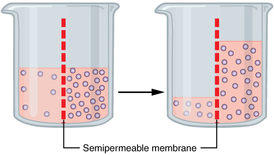
Water chases salt
We saved the most clinically important form of transport for last. Osmosis is the movement of water across a selectively permeable membrane, and it follows one simple rule: water moves toward the side with more dissolved particles (more solute, "saltier"). The membrane blocks the solute from moving to even things out, so water moves instead — flowing toward the saltier compartment until the concentrations balance. Because a cell's membrane lets water pass freely but holds many solutes in place, the amount of solute outside the cell decides which way water flows across it, and therefore whether the cell gains or loses water.
Tonicity: three solutions, three fates
Tonicity describes how a solution affects a cell's water balance, comparing the solute outside the cell to the solute inside. There are three possibilities. An isotonic solution has the same solute concentration as the cell's interior, so water moves in and out equally and the cell stays the same — its normal, healthy state. A hypotonic solution is more dilute than the cell (less solute outside), so water rushes in; the cell swells, and if enough water enters it can burst, an event called lysis (in red blood cells, hemolysis). A hypertonic solution is saltier than the cell (more solute outside), so water is pulled out; the cell shrivels, a shrinking called crenation. The trick to keeping these straight is that water always follows the solute — find the saltier side and water heads there.
| Solution | Outside vs. cell | Water moves | Cell result |
|---|---|---|---|
| Isotonic | Equal solute | In = out (no net change) | Stays normal |
| Hypotonic | Less solute outside (dilute) | Into the cell | Swells, may burst (lysis) |
| Hypertonic | More solute outside (salty) | Out of the cell | Shrivels (crenation) |
Drop a cell into each solution below and watch its fate.
- Osmosis is water moving across a membrane toward the side with more solute.
- Isotonic → no net change; hypotonic → water in, cell swells/bursts (lysis); hypertonic → water out, cell shrivels (crenation).
- Water always follows the solute — find the saltier side.
- IV fluids apply this directly: 0.9% normal saline is isotonic; never infuse pure water.
The chapter in one breath
- Every cell is wrapped in a selectively permeable plasma membrane, described by the fluid mosaic model — a fluid phospholipid bilayer tiled with proteins, cholesterol, and sugars.
- Substances cross by passive transport (down a gradient, free: diffusion, facilitated diffusion, osmosis) or active transport (up a gradient, costs energy: the Na⁺/K⁺ pump, bulk transport).
- Inside, organelles split the labor: the nucleus stores DNA, ribosomes → ER → Golgi build and ship proteins, mitochondria make ATP, and lysosomes clean up.
- Protein synthesis flows DNA → RNA → protein: transcription copies a gene into mRNA in the nucleus; translation reads its codons at a ribosome to build the protein.
- The cell cycle is long interphase (G₁/S/G₂, with DNA copied in S) plus short mitosis (PMAT) and cytokinesis, yielding two identical daughter cells; broken checkpoints lead to cancer.
- Osmosis moves water toward the saltier side; tonicity decides a cell's fate — isotonic (normal), hypotonic (swells/bursts), hypertonic (shrivels) — which is exactly why IV fluids are chosen with care.
ReferenceWords worth knowing
A quick reference for the terms in this chapter — skim it now, or circle back whenever a word trips you up.
- Active transport
- Movement of a substance up its concentration gradient (low to high), which requires an input of energy such as ATP.
- Codon
- A sequence of three mRNA bases that specifies one amino acid during translation.
- Crenation
- The shriveling of a cell that loses water in a hypertonic solution.
- Cytokinesis
- The division of the cytoplasm that follows mitosis, physically splitting one cell into two.
- Cytoskeleton
- The internal network of protein filaments that gives a cell shape and support and moves its contents.
- Diffusion
- The passive spread of molecules from an area of high concentration to one of low concentration until evenly mixed.
- Fluid mosaic model
- The description of the plasma membrane as a fluid phospholipid bilayer studded with a mosaic of proteins, cholesterol, and carbohydrates.
- Golgi apparatus
- The organelle that modifies, sorts, and packages proteins and lipids into vesicles for delivery.
- Hypertonic
- A solution with a higher solute concentration than the cell, causing water to leave and the cell to shrivel.
- Hypotonic
- A solution with a lower solute concentration than the cell, causing water to enter and the cell to swell or burst.
- Interphase
- The long portion of the cell cycle (G₁, S, G₂) during which a cell grows, copies its DNA, and prepares to divide.
- Isotonic
- A solution with the same solute concentration as the cell, so there is no net movement of water and the cell keeps its normal shape.
- Lysosome
- A membrane-bound sac of digestive enzymes that breaks down debris, worn-out organelles, and ingested material.
- Mitochondrion
- The organelle that generates ATP from nutrients and oxygen; the cell's powerhouse.
- Mitosis
- Division of the nucleus into two genetically identical nuclei, proceeding through prophase, metaphase, anaphase, and telophase.
- Nucleus
- The membrane-bound control center that stores the cell's DNA and directs its activities.
- Osmosis
- The diffusion of water across a selectively permeable membrane toward the side with the higher solute concentration.
- Passive transport
- Movement of a substance down its concentration gradient, requiring no energy from the cell.
- Phospholipid bilayer
- The double layer of amphipathic phospholipids — hydrophilic heads out, hydrophobic tails in — that forms the core of the membrane.
- Sodium–potassium pump
- A primary active transport protein that pushes 3 Na⁺ out and 2 K⁺ in per ATP, maintaining the cell's ion gradients.
- Transcription
- The copying of a gene from DNA into messenger RNA inside the nucleus.
- Translation
- The reading of mRNA codons at a ribosome to assemble amino acids into a protein.
Check yourself
The Tissue Level of Organization
In the last chapter we zoomed in on the single cell; now we take one step back up the ladder. Cells rarely work alone — they gather into tissues, teams of similar cells that share a job and, together, do something no lone cell could. The remarkable part is how few kinds there are: your entire body, every organ in it, is stitched together from just four primary tissues. This chapter introduces all four — how each looks under the microscope, where it lives, and what it does — and ends with the story every tissue eventually has to tell: how it heals when it is hurt.
By the end of this chapter you can
- Define tissue and name the four primary tissue types, giving the general job of each.
- List the shared features of epithelial tissue and classify any epithelium by its layering and cell shape.
- Describe the common blueprint of all connective tissue — cells scattered in an extracellular matrix of fibers and ground substance — and identify its major subtypes.
- Distinguish the three muscle tissues by striations, voluntary vs. involuntary control, and cell shape.
- Diagram a neuron, label its parts, and trace how nervous tissue carries a signal in one direction.
- Outline the four stages of tissue repair and contrast regeneration with fibrosis (scarring).
- Explain how the four tissues combine to build organs and body membranes.
Section 1The four tissue types
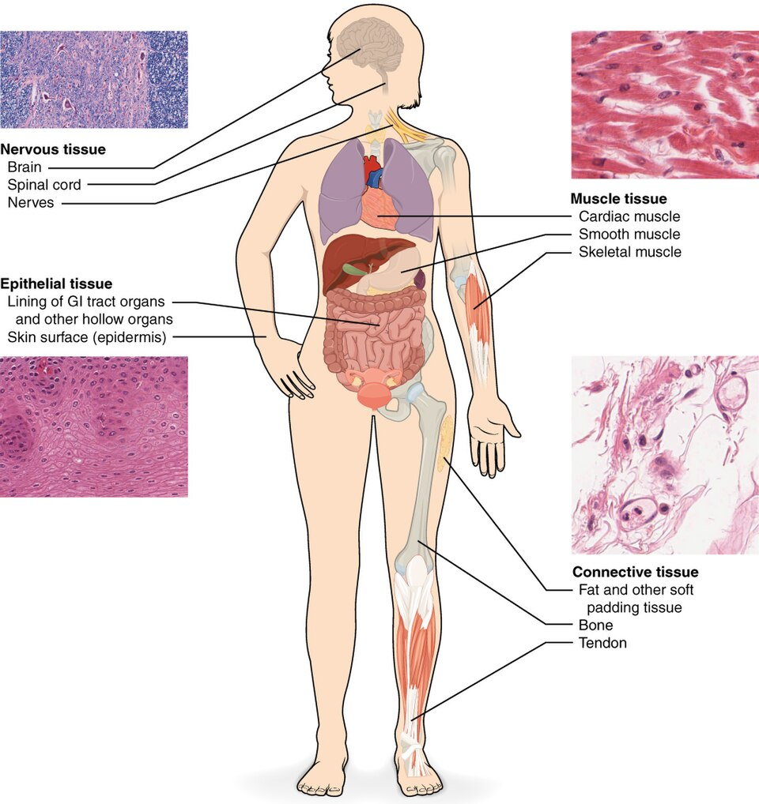
A society of cells
A tissue is a group of similar cells that work together to carry out a shared function. That is the whole definition, but the word "together" is doing a lot of work. The cells of a tissue are not just neighbors who happen to look alike — they are coordinated, held in place by junctions or by the material they secrete around themselves, and specialized for one kind of job. The branch of biology that studies tissues under the microscope is histology, and it is essentially anatomy at very high magnification: instead of asking what an organ looks like to the naked eye, we ask what it is made of.
Four families do all the work
What makes the whole subject learnable is that no matter how complicated an organ appears, it is assembled from only four primary tissue types. Learn these four and you have the vocabulary to describe any structure in the body. Each family answers a different fundamental need — a body must cover and line its surfaces, bind and support its parts, move, and communicate.
| Tissue | What it does | Where you find it |
|---|---|---|
| Epithelial | Covers surfaces, lines cavities, forms glands; protects, absorbs, secretes | Skin surface, gut lining, kidney tubules, gland cells |
| Connective | Binds, supports, protects, stores, and transports; the body's packing material | Bone, fat, tendon, cartilage, blood |
| Muscle | Contracts to generate movement and force; also makes heat | Skeletal muscles, heart wall, walls of hollow organs |
| Nervous | Senses, processes, and rapidly transmits electrical signals | Brain, spinal cord, peripheral nerves |
Notice how different the four are in how much room the cells give one another. Epithelial cells are packed together so tightly there is almost no space between them — that is what makes a good barrier. Connective tissue does the opposite: its cells are few and far apart, floating in a sea of non-living material they secrete. That single contrast — crowded cells versus scattered cells in a matrix — is one of the fastest ways to tell the first two tissues apart on a slide.
Meet all four tissues side by side in the interactive below.
- A tissue is a group of similar cells performing a shared function; studying them is histology.
- The body has four primary tissues: epithelial (cover/line), connective (bind/support), muscle (move), and nervous (communicate).
- Epithelial cells are tightly packed; connective cells are scattered in a matrix — a quick way to tell them apart.
Section 2Naming an epithelium
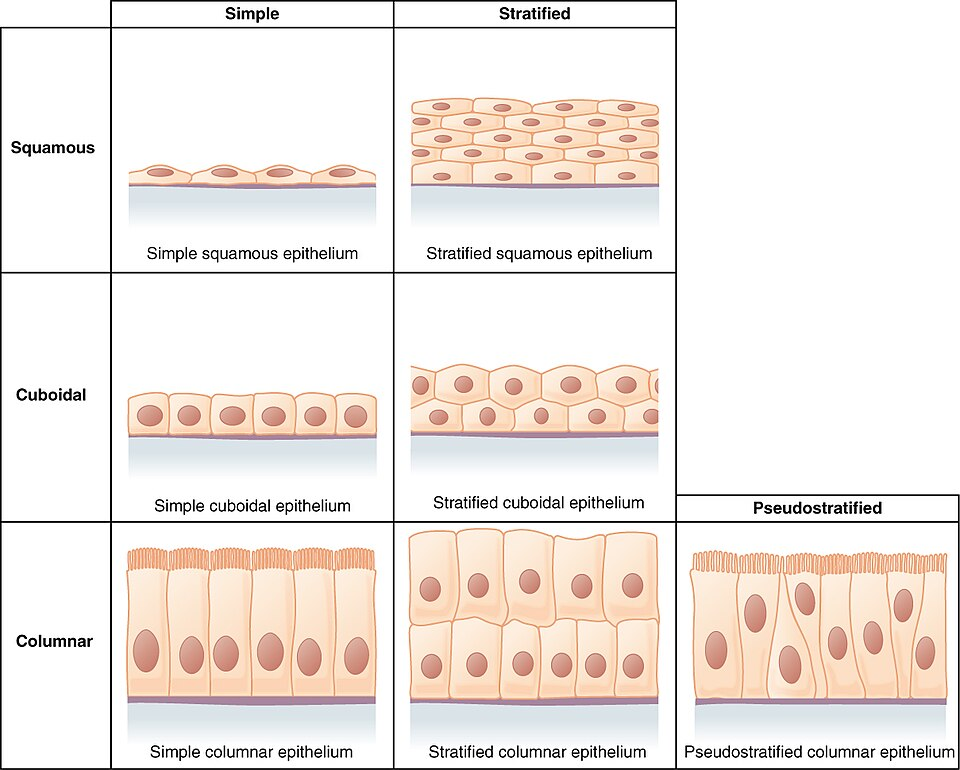
What every epithelium has in common
Epithelial tissue covers every free surface of the body and lines every cavity, tube, and duct — the outer skin, the inside of your gut, the airways, the blood vessels. Because it stands at every boundary, it shares a set of features built for that role. Its cells are tightly packed with very little material between them, so almost nothing crosses without going through a cell. Every epithelium has polarity: an apical surface that faces the open space (often decorated with microvilli or cilia) and a basal surface anchored to a thin basement membrane that glues it to the connective tissue below. Epithelium is avascular — it has no blood vessels of its own and must be fed by diffusion from the tissue underneath — yet it is richly supplied with nerves, and it regenerates quickly, replacing cells lost to the constant wear of being a surface.
The two-word naming rule
Here is the payoff of this section: every epithelium is named by the same simple formula, so once you learn the rule you can name a tissue you have never seen. The name has two parts — first the number of layers, then the shape of the cells at the surface.
- Layers. One layer of cells is simple; two or more stacked layers is stratified.
- Shape. Flat, scale-like cells are squamous; cube-shaped cells are cuboidal; tall, column-shaped cells are columnar.
Snap the two halves together and you have the name: a single flat layer is simple squamous; many stacked flat layers make stratified squamous; one row of tall cells is simple columnar. The structure even predicts the job. Thin simple epithelia are ideal where things must cross quickly — simple squamous lines the air sacs of the lung and the walls of capillaries because oxygen and nutrients slip across it in an instant. Thick stratified epithelia are built for protection — stratified squamous forms the surface of your skin and the lining of the mouth and esophagus, layers you can afford to lose and rebuild.
| Epithelium | Structure | Best-known job and location |
|---|---|---|
| Simple squamous | One layer of flat cells | Rapid diffusion — lung air sacs, capillary and vessel lining (endothelium) |
| Simple cuboidal | One layer of cube cells | Secretion and absorption — kidney tubules, gland ducts |
| Simple columnar | One layer of tall cells | Absorption and secretion — lining of the stomach and intestines |
| Stratified squamous | Many stacked flat layers | Protection against abrasion — skin surface, mouth, esophagus, vagina |
| Pseudostratified columnar | One layer that looks layered | Ciliated lining of the airways that sweeps mucus upward |
| Transitional | Stretchy, shape-changing layers | Bladder and ureters — stretches as they fill |
Two entries in that table are the famous exceptions. Pseudostratified columnar epithelium is really a single layer — every cell touches the basement membrane — but because the nuclei sit at different heights it looks stacked, hence "pseudo" (false) stratified. Transitional epithelium is the shape-shifter of the urinary tract: its cells slide over one another and flatten as the bladder fills, then bunch back up as it empties.
Build an epithelium's name box by box and watch it appear in the interactive.
- Epithelia are tightly packed, polar (apical vs. basal), sit on a basement membrane, are avascular, and regenerate fast.
- Name any epithelium as layers (simple = one, stratified = many) + cell shape (squamous, cuboidal, columnar).
- Simple epithelia favor absorption/secretion/diffusion; stratified epithelia favor protection; pseudostratified and transitional are the special cases.
Section 3Connective tissue
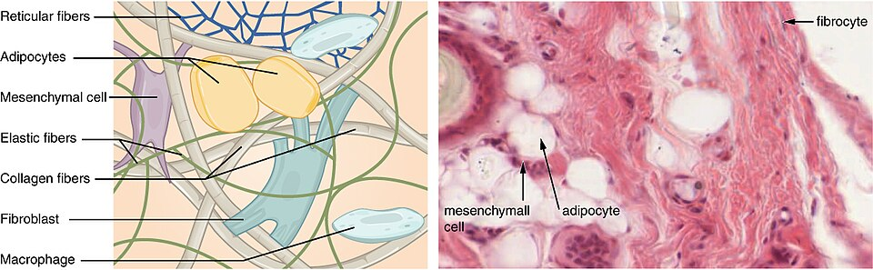
One recipe, endless variety
Connective tissue is the most abundant and the most diverse tissue in the body, and at first it can seem like a grab-bag: bone, fat, tendon, cartilage, and even blood all belong to it. What ties them together is a single shared blueprint. Unlike epithelium, where the cells are everything, connective tissue is mostly extracellular matrix — a non-living material the cells secrete and then sit inside. Its cells are relatively few and widely scattered; the character of the tissue comes almost entirely from the matrix around them. This is the key insight of the whole section: change the matrix and you change the tissue. Make the matrix soft and fatty and you get adipose (fat); make it a firm rubbery gel and you get cartilage; harden it with calcium salts and you get bone; make it liquid and you get blood.
The matrix: fibers and ground substance
The extracellular matrix always has two ingredients. First are the protein fibers, of which there are three kinds: strong, rope-like collagen fibers that resist pulling; stretchy elastic fibers that snap back into shape; and fine, mesh-like reticular fibers that form supporting scaffolds. Second is the ground substance, the material that fills the space between the fibers and cells — anywhere from watery to gel-like to rock-solid, depending on the tissue. The cells themselves usually come in two flavors named by a simple convention: a cell whose name ends in -blast is the young, active builder that secretes matrix (a fibroblast, osteoblast, or chondroblast), while one ending in -cyte is the mature cell that maintains it (a fibrocyte, osteocyte, or chondrocyte).
| Connective tissue | Matrix | Job and location |
|---|---|---|
| Loose (areolar) | Soft, gel-like, loosely woven fibers | All-purpose packing and cushioning; underlies epithelia everywhere |
| Adipose (fat) | Cells so full of fat that matrix is minimal | Energy storage, insulation, padding around organs |
| Dense regular | Tightly packed parallel collagen | Strong pull in one direction — tendons and ligaments |
| Cartilage | Firm, rubbery gel | Flexible support — nose, ears, joint surfaces, discs |
| Bone (osseous) | Collagen hardened with calcium salts | Rigid support and protection; mineral storage |
| Blood | Liquid matrix (plasma) | Transport of cells, gases, nutrients, and wastes |
Reading that table top to bottom, you can watch a single idea flex through every possible stiffness — from a soft cushion, to a padded fat pad, to a tough cable, to a rubbery shock absorber, to solid mineral, all the way to a flowing liquid. Same recipe, radically different results, tuned entirely by what the cells put into the matrix.
Rebuild the matrix in the interactive and watch one tissue turn into the next.
- All connective tissue follows one recipe: scattered cells in an extracellular matrix of fibers + ground substance.
- Three fiber types — collagen (strength), elastic (stretch), reticular (scaffold); -blast cells build the matrix and -cyte cells maintain it.
- Changing the matrix yields the whole family: loose, adipose, dense, cartilage, bone, and blood.
Section 4Muscle tissue

Cells built to shorten
Muscle tissue has one talent that no other tissue has: it can contract, actively shortening to pull on something. Its cells are packed with two protein filaments — actin and myosin — that slide past one another to shorten the cell, and everything about a muscle cell's shape serves that pull. When these filaments line up in orderly, repeating rows, they catch the light in alternating bands and the tissue looks striated (striped); when they are arranged less regularly, the tissue looks smooth. Contraction not only moves the body but also generates much of your body heat — which is why shivering warms you up.
The three muscle tissues
There are exactly three muscle tissues, and you can tell them apart with three questions: Is it striped? Can you control it consciously? What shape are its cells? Skeletal muscle is the meat that moves your bones — it is striated, voluntary (under conscious control), and made of long, cylindrical, multinucleated fibers. Cardiac muscle is found only in the wall of the heart — it is striated but involuntary, and its short, branching cells are joined end-to-end by intercalated discs that let the whole heart contract as one coordinated unit. Smooth muscle lines the walls of hollow organs like the gut, blood vessels, and bladder — it is non-striated, involuntary, and built of small, tapered, spindle-shaped cells that squeeze those organs slowly and tirelessly.
| Feature | Skeletal | Cardiac | Smooth |
|---|---|---|---|
| Striations | Striated | Striated | Non-striated |
| Control | Voluntary | Involuntary | Involuntary |
| Cell shape | Long cylinders | Short, branched | Tapered spindles |
| Nuclei per cell | Many | One (or two) | One |
| Location | Attached to bones | Heart wall only | Walls of hollow organs |
A useful mental shortcut: the two striated muscles (skeletal and cardiac) are the fast, powerful ones, while the one smooth muscle is the slow, steady one. And only one of the three — skeletal — answers to your will. The heart and the gut run themselves.
Watch each of the three muscles contract in the interactive below.
- Muscle tissue contracts using sliding actin and myosin filaments; orderly filaments make it look striated.
- Skeletal = striated, voluntary, long multinucleated fibers; cardiac = striated, involuntary, branched with intercalated discs; smooth = non-striated, involuntary, spindle cells.
- Tell them apart with three questions: striped? voluntary? cell shape?
Section 5Nervous tissue
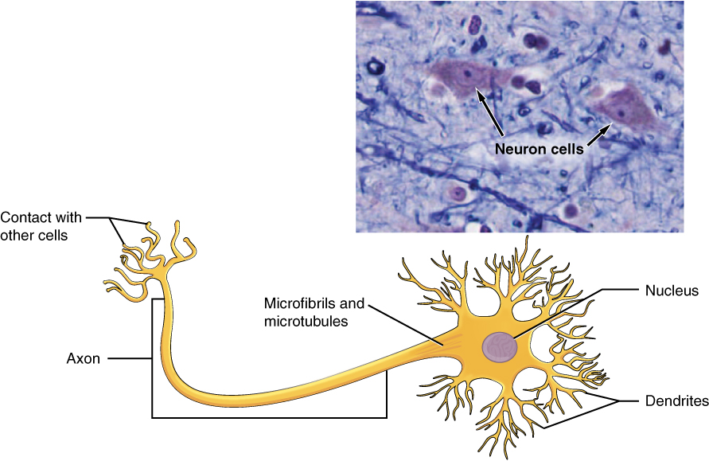
The neuron: a cell shaped like a message
Nervous tissue senses changes, makes decisions, and sends electrical signals faster than any other tissue in the body. Its star cell is the neuron, and the neuron's strange shape is really a map of how a signal flows through it — in one end, out the other. Signals arrive at the bushy dendrites, short branching extensions that receive input from other cells. They funnel into the cell body (or soma), which holds the nucleus and does the cell's housekeeping. If the incoming signal is strong enough, the neuron fires an electrical pulse that races away down the axon, a single long fiber that carries the message toward the next cell. Many axons are wrapped in a fatty myelin sheath that acts like insulation on a wire, letting the signal jump along much faster. The traffic is strictly one-way: dendrite → cell body → axon, every time.
| Part | What it is | Its job in the signal |
|---|---|---|
| Dendrites | Short, branching extensions | Receive incoming signals from other cells |
| Cell body (soma) | Contains nucleus and organelles | Integrates the input; keeps the cell alive |
| Axon | Single long fiber | Sends the electrical pulse toward the next cell |
| Myelin sheath | Fatty insulating wrap on the axon | Speeds the signal along the axon |
| Axon terminals | Branched tips of the axon | Pass the signal to the next cell at a synapse |
Neuroglia: the support crew
Neurons get the glory, but they are outnumbered several times over by neuroglia (or glial cells) — the support cells of nervous tissue. Glia do not carry the signal themselves; instead they nourish neurons, insulate their axons with myelin, hold the tissue together, and defend it against invaders. Two properties define what nervous tissue as a whole can do: excitability, the ability to respond to a stimulus by generating an electrical signal, and conductivity, the ability to carry that signal from one place to another. Together they let this tissue act as the body's high-speed communication network.
Tap a part of the neuron and watch a signal fire in the interactive.
- The neuron carries a one-way signal: dendrites receive → cell body integrates → axon transmits.
- The fatty myelin sheath insulates the axon and speeds the signal; neuroglia support and protect neurons.
- Nervous tissue is defined by excitability and conductivity; mature neurons rarely divide, so CNS damage often heals poorly.
Section 6Tissue repair
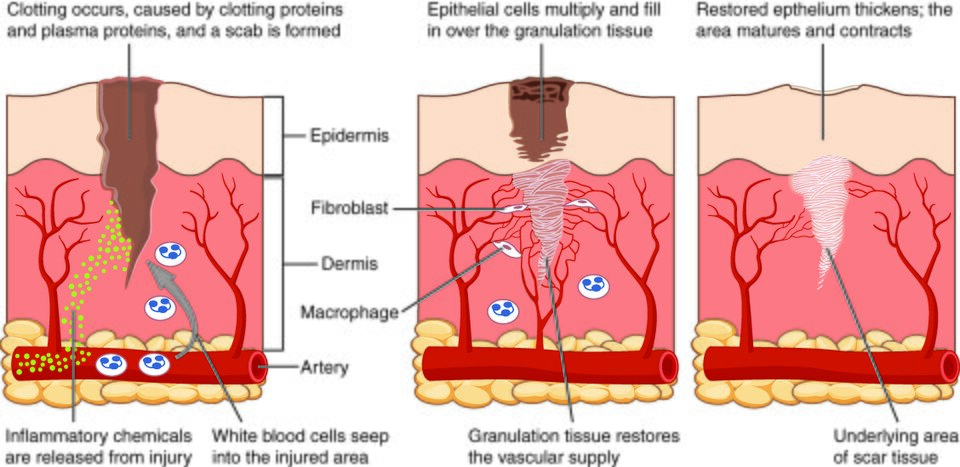
Two ways to fix a wound
When a tissue is injured, the body can mend it in one of two ways. The better outcome is regeneration — the damaged cells are replaced with new cells of the very same type, and the tissue is restored to normal, as if the injury never happened. The fallback is fibrosis, in which the gap is filled with dense fibrous scar tissue instead of the original cell type. Scar tissue plugs the hole and restores strength, but it does not do the original job — scar in the heart cannot beat, and scar in the skin has no hair or sweat glands. Which path a tissue takes depends largely on how well its cells can divide: fast-dividing tissues like skin and gut regenerate beautifully, while tissues whose cells barely divide — cardiac muscle, neurons — tend to scar.
The healing playbook
Whatever the tissue, the body runs the same four-step repair program in order. Think of it as a construction project on an emergency timeline: first stop the flooding, then clear the site, then rebuild the frame, then finish the surfaces.
| Stage | What happens | Purpose |
|---|---|---|
| 1. Hemostasis | Blood clots seal the broken vessels; a scab forms | Stop the bleeding |
| 2. Inflammation | Vessels widen; immune cells arrive to clear debris and germs | Clean up the wound |
| 3. Proliferation | New capillaries and collagen build pink granulation tissue; epithelium migrates across | Rebuild the tissue |
| 4. Remodeling | Collagen is reorganized and strengthened; the scar matures and shrinks | Restore strength over weeks to months |
The visible signs of the second stage — redness, heat, swelling, and pain — are the classic marks of inflammation, and although they feel like the problem, they are actually the body doing its job. The widened, leaky vessels that cause the redness and swelling are what deliver the clotting factors, infection-fighters, and clean-up crews the wound needs. Inflammation is not the injury; it is the repair beginning.
Step through a healing wound from clot to scar in the interactive below.
- Healing happens by regeneration (same cells restored) or fibrosis (scar tissue fills the gap); which one depends on how well the cells divide.
- The repair sequence is always hemostasis → inflammation → proliferation → remodeling.
- Inflammation (redness, heat, swelling, pain) is the repair process at work, not the injury itself.
The chapter in one breath
- A tissue is a group of similar cells sharing a job; the whole body is built from just four of them.
- Epithelial tissue covers and lines; it is tightly packed, polar, avascular, and named by layers (simple/stratified) + cell shape (squamous/cuboidal/columnar).
- Connective tissue binds and supports; its cells sit scattered in an extracellular matrix of fibers and ground substance — change the matrix and you get fat, cartilage, bone, or blood.
- Muscle tissue contracts: skeletal (striated, voluntary), cardiac (striated, involuntary, intercalated discs), and smooth (non-striated, involuntary).
- Nervous tissue communicates; the neuron carries a one-way signal from dendrites → cell body → axon, supported by neuroglia.
- Injured tissue heals by regeneration or fibrosis, always through hemostasis → inflammation → proliferation → remodeling.
- How well a tissue repairs comes down mostly to its blood supply and how readily its cells divide.
ReferenceWords worth knowing
A quick reference for the terms in this chapter — skim it now, or circle back whenever a word trips you up.
- Apical surface
- The free, exposed surface of an epithelial cell that faces the open space, cavity, or lumen; often bears microvilli or cilia.
- Areolar tissue
- The most common loose connective tissue — a soft, all-purpose packing material that underlies epithelia and cushions organs.
- Axon
- The single long fiber of a neuron that carries the electrical signal away from the cell body toward the next cell.
- Basement membrane
- A thin layer that anchors the basal surface of an epithelium to the connective tissue beneath it.
- Cardiac muscle
- Striated, involuntary muscle found only in the heart wall; its branched cells are joined by intercalated discs so the heart contracts as one.
- Collagen fiber
- The strong, rope-like protein fiber of connective tissue that resists pulling forces.
- Connective tissue
- The diverse tissue that binds, supports, protects, and transports; made of scattered cells in an extracellular matrix.
- Dendrite
- A short, branching extension of a neuron that receives incoming signals from other cells.
- Epithelial tissue
- Tightly packed tissue that covers body surfaces, lines cavities and tubes, and forms glands.
- Extracellular matrix
- The non-living material — fibers plus ground substance — that connective tissue cells secrete and sit within.
- Fibrosis
- Repair by the deposition of fibrous scar tissue in place of the original cell type; restores strength but not full function.
- Ground substance
- The material of the extracellular matrix that fills the space between cells and fibers; ranges from watery to gel-like to solid.
- Histology
- The microscopic study of tissues — anatomy at high magnification.
- Muscle tissue
- Tissue specialized to contract using actin and myosin filaments, generating movement, force, and heat.
- Nervous tissue
- Tissue specialized to sense, process, and rapidly transmit electrical signals; composed of neurons and neuroglia.
- Neuroglia
- The support cells of nervous tissue that nourish, insulate, hold together, and protect neurons.
- Neuron
- The signal-carrying cell of nervous tissue, with dendrites, a cell body, and an axon.
- Regeneration
- Repair in which damaged cells are replaced by new cells of the same type, restoring normal structure and function.
- Simple epithelium
- An epithelium one cell layer thick, suited to diffusion, absorption, and secretion.
- Squamous
- Describing flat, scale-like epithelial cells, ideal where substances must cross quickly.
- Stratified epithelium
- An epithelium of two or more stacked cell layers, built to protect against abrasion.
- Tissue
- A group of similar cells that work together to perform a shared function.
Check yourself
The Integumentary System
Spread flat, your skin would cover about two square meters and weigh more than any other organ you own — and yet we rarely think of it as an organ at all. This chapter changes that. You will build the skin from the top down, layer by layer, then follow a single cell on its month-long journey from a living factory floor to a dead flake on the surface. You will learn where skin color comes from, meet the hair, nails, and glands that grow out of the skin, and see the five quiet jobs your covering does every second. We finish where the clinic begins — with burns and skin cancer, the two ways this remarkable barrier fails.
By the end of this chapter you can
- Name the two true layers of the skin — the epidermis and dermis — and the hypodermis beneath, and describe the tissue and job of each.
- List the five epidermal strata in order and trace a keratinocyte's keratinization journey from birth to shedding.
- Explain how melanocytes and melanin produce skin color and shield cell DNA from ultraviolet light.
- Describe the structure of hair, nails, and the sebaceous and sweat glands, and state what each contributes.
- Summarize the skin's five functions: protection, thermoregulation, sensation, vitamin D synthesis, and excretion.
- Classify burns by depth, estimate burned area with the rule of nines, and distinguish the three skin cancers.
- Apply the ABCDE warning signs to tell a harmless mole from a possible melanoma.
Section 1Layers of the skin
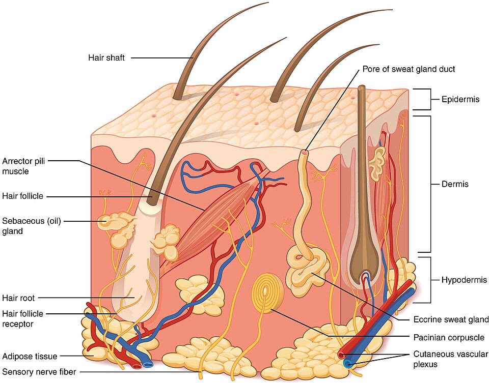
An organ you can see
The integumentary system is the skin plus everything that grows out of it — hair, nails, and glands. The word integument simply means "a covering," and that is the plainest way to think of the skin: it is the wrapper that separates the wet, carefully controlled world inside you from the dry, dangerous world outside. But calling it a wrapper undersells it. The skin is a true organ, built of every tissue type, and it is the largest organ in the body by both weight and surface area. Everything in this chapter hangs on one anatomical fact: the skin is made of two layers stacked on a third supporting layer that, strictly speaking, is not skin at all.
Two layers of skin, one layer beneath
Read the skin from the surface down and you pass through three named layers. The top two are the skin proper; the third anchors it to the body.
| Layer | Tissue | What lives there / what it does |
|---|---|---|
| Epidermis | Keratinized stratified squamous epithelium | The tough, waterproof outer sheet; no blood vessels — it is fed by diffusion from below |
| Dermis | Dense irregular connective tissue | The living core — blood vessels, nerves, hair follicles, glands, and the collagen that gives skin its strength |
| Hypodermis (subcutaneous) | Areolar and adipose tissue | Not part of the skin; anchors skin to muscle and bone, insulates, and stores energy |
The epidermis is pure epithelium and, importantly, is avascular — it contains no blood vessels of its own. Its living cells survive on oxygen and nutrients that seep up from the dermis below, which is why the outer epidermis, cut off from that supply, is entirely dead. The dermis is where the action is: a dense feltwork of collagen and elastic fibers packed with the blood vessels, sensory nerves, hair follicles, and glands that make skin do its jobs. It has two sublayers — a thin, bumpy papillary layer on top (its dermal papillae create your fingerprints) and a thick reticular layer below that carries most of the collagen. Beneath the dermis, the hypodermis (also called the subcutaneous layer or superficial fascia) is mostly fat; it pads and insulates the body and tethers the skin loosely to the structures underneath.
Thick skin and thin skin
Not all skin is the same thickness. Thick skin covers the palms of the hands and the soles of the feet — the surfaces that take the most abrasion — and it carries all five epidermal layers, including an extra clear one. Thin skin covers the rest of the body; it is more delicate, has only four epidermal layers, and is the only skin that grows hair. The names refer to the epidermis, not to total skin thickness, which is a common point of confusion.
- The integumentary system = skin + hair, nails, and glands; the skin is the body's largest organ.
- The skin has two true layers: the epithelial epidermis (avascular) over the connective-tissue dermis (vascular, holds the structures).
- The hypodermis beneath is fat and areolar tissue — not skin — and anchors and insulates.
- Thick skin (palms, soles) has five epidermal strata; thin skin has four and bears hair.
Section 2The five epidermal strata

A conveyor belt of cells
The epidermis is a factory that never stops. Its main cell, the keratinocyte, is born at the very bottom, gets pushed steadily upward as new cells form beneath it, fills with a tough protein called keratin, dies along the way, and finally flakes off the top. The whole trip takes about four weeks — roughly 25 to 45 days — which means the outermost surface of you is completely replaced every month or so. This slow upward march is called keratinization, and it is the single most important process in the epidermis.
The five layers, bottom to top
In thick skin the keratinocyte passes through five named strata on its way up. Learn them in order from the deepest (where cells are born) to the surface (where they are shed):
| Stratum (deep → superficial) | Nickname | What happens here |
|---|---|---|
| Stratum basale | The nursery | A single row of dividing stem cells; new keratinocytes are born here by mitosis. Also home to melanocytes and touch-sensing Merkel cells. |
| Stratum spinosum | The spiny layer | Several rows of keratinocytes held together by strong desmosomes (which give a spiny look). Immune dendritic cells patrol here. |
| Stratum granulosum | The dying layer | Cells fill with granules of keratin and a waterproofing lipid; nuclei break down and the cells begin to die. |
| Stratum lucidum | The clear layer | A thin, translucent band of dead cells — found only in thick skin (palms and soles). |
| Stratum corneum | The horny layer | 15–30 layers of flat, dead, fully keratinized cells — the tough, waterproof barrier you actually touch. |
A memory hook helps: reading from the base up, Basale, Spinosum, Granulosum, Lucidum, Corneum — "Bad Students Get Lousy Classes." The bottom two strata (basale and spinosum) are living and are sometimes grouped as the stratum germinativum, the growth zone. From the granulosum up, the cells are dying or dead. By the time a cell reaches the stratum corneum it is nothing but a flattened bag of keratin, glued to its neighbors and coated in lipid — and that dead, waterproof crust is exactly what makes the skin such an effective barrier. We shed roughly a million of these cells every day.
- Keratinocytes are born in the stratum basale, pushed upward, and shed from the surface in about a month — the process of keratinization.
- Order deep to superficial: basale → spinosum → granulosum → lucidum → corneum ("Bad Students Get Lousy Classes").
- The stratum lucidum appears only in thick skin; the stratum corneum is the dead, keratinized barrier you touch.
Section 3Skin color & melanin
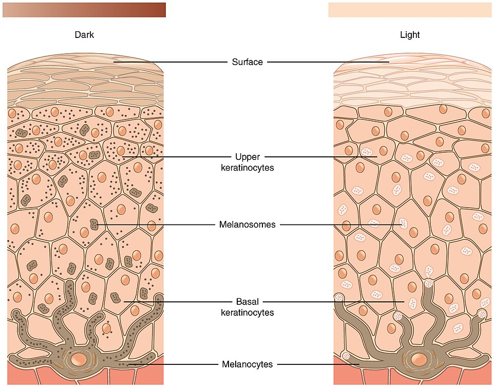
Three pigments, one dominant player
The color of skin comes from three pigments blended together. Melanin is the main one — a brown-to-black (or red-to-yellow) pigment made in the epidermis. Carotene is a yellow-orange pigment that comes from the diet and collects in the stratum corneum and the fatty hypodermis. And hemoglobin, the red pigment of blood, shows through where the epidermis is thin, giving lighter skin its pink flush. Of the three, melanin is by far the most important, and it is the one that varies most from person to person.
Melanocytes hand off their pigment
Melanin is made by a specialized cell called the melanocyte, which sits down in the stratum basale. Here is the surprising part: melanocytes do not keep their pigment. They package melanin into little sacs called melanosomes and hand them off to the surrounding keratinocytes. Once inside a keratinocyte, the melanin migrates to the sunny side of the cell and forms a little cap over the top of the nucleus — like a tiny umbrella held over the cell's DNA. There it absorbs incoming ultraviolet (UV) radiation before it can reach and damage the genetic material. This is the whole point of skin pigment: melanin is sunscreen your cells make for themselves.
When pigment goes wrong — and reading skin color in the clinic
Two inherited conditions show what happens at the extremes. In albinism, melanocytes are present but cannot make melanin, so the skin, hair, and eyes have little or no pigment and burn easily. In vitiligo, the immune system destroys melanocytes in patches, leaving pale blotches of skin. Beyond pigment disorders, skin color is one of the fastest bedside signs of illness, because it reflects what is happening in the blood underneath.
| Color change | Appearance | What it usually means |
|---|---|---|
| Cyanosis | Bluish skin, lips, and nail beds | Poorly oxygenated blood (low O₂) |
| Pallor | Pale, blanched skin | Low blood flow or anemia (shock, fear, cold) |
| Erythema | Redness | Increased blood flow — fever, inflammation, embarrassment, sunburn |
| Jaundice | Yellow skin and sclerae | Bilirubin buildup — usually a liver problem |
| Bronzing | Golden-bronze tone | Adrenal insufficiency (Addison disease) |
- Skin color blends three pigments: melanin (main), carotene, and blood hemoglobin.
- Melanocytes in the stratum basale make melanin and hand it to keratinocytes, where it caps the nucleus and absorbs UV to protect DNA.
- Everyone has similar melanocyte numbers; color differences come from melanin amount and type. A tan is a UV defense response.
- Skin color reads the blood: cyanosis, pallor, erythema, jaundice, bronzing each signal a specific problem.
Section 4Hair, nails & glands

Hair: keratin threads with a living root
Every accessory structure of the skin is born from the epidermis but tucked down into the dermis, where the blood supply is. Hair is a flexible strand of dead, hard keratin. The part you see above the skin is the shaft; the part below is the root, sheathed in a tube called the hair follicle. At the very bottom the follicle swells into a bulb, and inside it a knot of connective tissue called the papilla delivers the blood vessels that feed growth. Just above the papilla, the matrix is the only living, dividing part of a hair — which is why a haircut doesn't hurt but a plucked hair does. Attached to each follicle is a tiny arrector pili muscle; when it contracts (from cold or fear) it pulls the hair upright and dimples the skin into "goosebumps."
Nails: a window over the fingertip
A nail is a plate of hard keratin that protects the tip of each finger and toe and gives us a tool for scratching and grasping. The visible nail body sits on the nail bed; the whitish crescent at its base, the lunula, marks the underlying nail matrix, which is where the nail actually grows. The cuticle (eponychium) is the fold of skin that seals the base against dirt and microbes. Nails are a genuinely useful clinical window: they turn blue with poor oxygenation, become curved and clubbed in chronic heart or lung disease, and spoon inward in iron-deficiency anemia.
Glands: oil and sweat
The skin holds two great families of glands. Sebaceous (oil) glands usually empty into a hair follicle and secrete an oily mixture called sebum that lubricates the hair and skin and slows bacterial growth. When a follicle clogs with sebum and dead cells, the result is acne. Sweat (sudoriferous) glands come in two types worth separating carefully:
| Gland | Where / what it secretes | Job |
|---|---|---|
| Sebaceous (oil) | Into hair follicles; oily sebum | Lubricates skin and hair; mildly antibacterial |
| Eccrine (merocrine) sweat | All over the body, onto the surface; watery sweat | Cools the body by evaporation — the main thermoregulation gland |
| Apocrine sweat | Armpits and groin, into hair follicles; thicker, protein-rich sweat | Activates at puberty; feeds skin bacteria that cause body odor |
| Ceruminous & mammary | Ear canal / breast | Modified sweat glands: earwax and milk |
- Hair is dead keratin; it grows only from the living matrix at the base, fed by the papilla, and stands up when the arrector pili contracts.
- Nails are keratin plates that grow from the nail matrix under the lunula; their color and shape reveal systemic disease.
- Sebaceous glands make oily sebum; eccrine sweat glands cool the body, while apocrine glands (armpit, groin) cause body odor after bacteria act on their sweat.
Section 5What the skin does
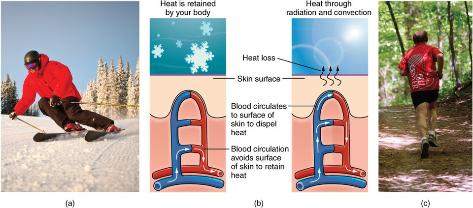
One organ, five jobs
It is tempting to think the skin just covers you, but covering is only the first of five real jobs it performs every moment. Hold onto all five — they come up again and again in later chapters.
| Function | How the skin does it |
|---|---|
| 1. Protection | A physical barrier (keratin, tight cells), a chemical one (the acidic "acid mantle" of sweat and sebum), and a biological one (immune dendritic cells that catch invaders) |
| 2. Thermoregulation | To cool: sweat evaporates and dermal blood vessels dilate to dump heat. To warm: vessels constrict to keep heat in |
| 3. Sensation | Packed with receptors for touch, pressure, vibration, temperature, and pain — the body's largest sense organ |
| 4. Vitamin D synthesis | UV light converts a cholesterol relative in the skin into vitamin D₃, needed to absorb dietary calcium |
| 5. Excretion & storage | Sweat sheds small amounts of water, salts, and wastes; the dermis stores a blood reservoir (up to ~5% of blood volume) |
The barrier you rebuild every month
Protection is the headline act. The dead, keratin-packed stratum corneum keeps water in (you would dehydrate in hours without it) and keeps microbes, chemicals, and UV out. Sweat and sebum coat the surface in a slightly acidic film — the acid mantle — that discourages bacteria and fungi, while dendritic immune cells woven through the epidermis grab any invader that slips past. Because the whole barrier is rebuilt roughly every month, minor damage heals almost invisibly.
Temperature, sensation, and a vitamin the skin makes
The skin is also your master thermostat. When you overheat, eccrine glands pour out sweat that carries heat away as it evaporates, and dermal blood vessels widen to radiate heat from the surface — which is why you flush pink when hot. When you are cold, those same vessels clamp down to trap warmth in the core. Meanwhile the dermis is crowded with sensory receptors that make the skin the largest sense organ you own, feeding the nervous system a constant stream of touch, pressure, temperature, and pain. And in a job no other organ shares, the skin manufactures vitamin D: ultraviolet light strikes a cholesterol-like molecule in the epidermis and starts its conversion into vitamin D₃, without which you cannot absorb the calcium your bones and nerves depend on.
- The skin's five jobs: protection, thermoregulation, sensation, vitamin D synthesis, and excretion/storage.
- Protection is physical (keratin), chemical (the acidic acid mantle), and biological (immune dendritic cells).
- Cooling uses sweat + vessel dilation; warming uses vessel constriction. Vitamin D₃ is made in skin using UV and is needed to absorb calcium.
Section 6Burns & skin cancer
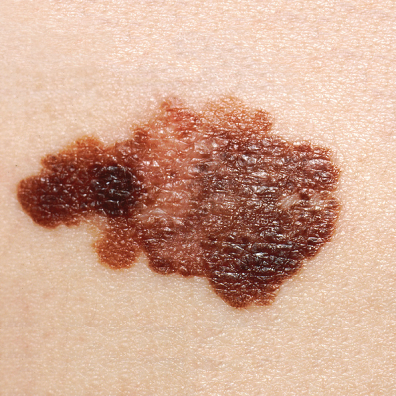
Burns: it's all about depth
A burn destroys skin with heat, electricity, chemicals, or radiation, and its severity is judged first by how deep it goes. Because the skin's barrier, water control, and temperature regulation all live in these layers, the deeper the burn, the more dangerous it becomes — not because it hurts more, but sometimes because it stops hurting at all.
| Burn (depth) | Layers destroyed | Look & feel |
|---|---|---|
| First-degree (superficial) | Epidermis only | Red, dry, painful, no blisters — a typical sunburn; heals in days |
| Second-degree (partial thickness) | Epidermis + part of dermis | Blisters, red, very painful; heals but may scar |
| Third-degree (full thickness) | Entire epidermis + dermis | White, brown, or charred and leathery; often painless because nerves are destroyed; needs skin grafting |
The two great dangers of a serious burn are fluid loss and infection: once the barrier is gone, water pours out and microbes pour in, and the body can no longer hold its temperature. To gauge how much skin is involved, clinicians use the rule of nines, which divides the adult body surface into regions worth about 9% each (or multiples of nine) — each arm 9%, each leg 18%, the front of the trunk 18%, and so on. A burn is generally considered critical when it covers more than 25% of the body, or involves the hands, face, or feet, or is third-degree over more than a few percent.
Skin cancer: three kinds, one that kills
Chronic UV exposure is the leading cause of skin cancer, which is the most common cancer of all. There are three main types, and telling them apart matters enormously because they range from a nuisance to a killer. Notice that each one arises from a cell you already met earlier in this chapter.
| Cancer | Cell of origin | Behavior |
|---|---|---|
| Basal cell carcinoma | Cells of the stratum basale | Most common, least dangerous; rarely spreads; usually cured by removal |
| Squamous cell carcinoma | Keratinocytes of the stratum spinosum | Less common; can spread if ignored, but usually curable if caught early |
| Melanoma | Melanocytes | Least common but most deadly; spreads (metastasizes) early and fast — catching it early saves lives |
The dangerous one is melanoma, a cancer of the pigment-making melanocytes. It often begins in or near a mole, and because it metastasizes early, spotting it early is everything. The ABCDE rule is the tool used to screen a suspicious mole: Asymmetry (one half unlike the other), Border (ragged or blurred edges), Color (uneven, several shades), Diameter (larger than about 6 mm, the size of a pencil eraser), and Evolving (any change in size, shape, or color over time). Any mole that checks these boxes deserves a professional look.
- Burns are graded by depth: first-degree (epidermis), second-degree (into dermis, blisters), third-degree (full thickness, often painless, needs grafts).
- Serious burns kill through fluid loss and infection; the rule of nines estimates the percent of body surface burned.
- Three skin cancers: basal cell (common, mild), squamous cell (can spread), and melanoma (rare but deadly). Screen moles with ABCDE.
The chapter in one breath
- The integumentary system is the skin plus hair, nails, and glands — the body's largest organ.
- Skin has two true layers: the avascular epithelial epidermis over the vascular connective-tissue dermis, resting on the fatty hypodermis.
- Keratinocytes ride an upward conveyor through five strata — basale → spinosum → granulosum → lucidum → corneum — filling with keratin, dying, and shedding in about a month.
- Melanocytes make melanin and pass it to keratinocytes, where it caps the nucleus and absorbs UV to protect DNA; color differences reflect melanin amount, not melanocyte number.
- Hair and nails are keratin structures grown from living matrices; sebaceous glands make oil, eccrine glands cool, and apocrine glands cause body odor.
- The skin performs five jobs: protection, thermoregulation, sensation, vitamin D synthesis, and excretion/storage.
- Burns are graded by depth (first- to third-degree) and area (rule of nines); the three skin cancers are basal cell, squamous cell, and the deadly melanoma, screened with ABCDE.
ReferenceWords worth knowing
A quick reference for the terms in this chapter — skim it now, or circle back whenever a word trips you up.
- Apocrine sweat gland
- A sweat gland in the armpit and groin that empties into a hair follicle and secretes a thick, protein-rich sweat; active from puberty and responsible for body odor after bacteria break it down.
- Arrector pili
- A tiny smooth muscle attached to a hair follicle that pulls the hair upright and produces "goosebumps" when it contracts.
- Basal cell carcinoma
- The most common and least dangerous skin cancer, arising from cells of the stratum basale; rarely metastasizes.
- Carotene
- A yellow-orange pigment from the diet that accumulates in the stratum corneum and hypodermis and contributes to skin color.
- Dermis
- The deep, living layer of skin made of dense irregular connective tissue; holds blood vessels, nerves, hair follicles, and glands.
- Eccrine (merocrine) sweat gland
- The most numerous sweat gland, opening directly onto the skin surface all over the body; its watery secretion cools the body by evaporation.
- Epidermis
- The superficial layer of skin, a keratinized stratified squamous epithelium with no blood vessels of its own.
- Hair follicle
- The tube of epidermal and dermal tissue that surrounds the hair root and from which a hair grows.
- Hypodermis (subcutaneous layer)
- The fatty, areolar layer beneath the skin (not part of the skin proper) that anchors it, insulates, and stores energy.
- Integument
- A covering; the integumentary system is the skin together with hair, nails, and glands.
- Keratin
- A tough, water-resistant fibrous protein that fills epidermal cells, hair, and nails and gives them strength and waterproofing.
- Keratinocyte
- The main cell of the epidermis; it is born in the stratum basale, fills with keratin as it is pushed upward, dies, and is shed.
- Melanin
- The brown-to-black (or red-to-yellow) pigment that gives skin most of its color and absorbs ultraviolet light to protect DNA.
- Melanocyte
- The pigment-producing cell in the stratum basale that makes melanin and transfers it to nearby keratinocytes.
- Melanoma
- The least common but most dangerous skin cancer, arising from melanocytes; it metastasizes early and is screened with the ABCDE rule.
- Rule of nines
- A method for estimating the percent of total body surface area affected by a burn, dividing the adult body into regions of about 9% or multiples of nine.
- Sebaceous gland
- An oil gland, usually emptying into a hair follicle, that secretes sebum to lubricate skin and hair and inhibit bacteria.
- Sebum
- The oily secretion of sebaceous glands; when a follicle clogs with sebum and dead cells, acne results.
- Squamous cell carcinoma
- A skin cancer arising from keratinocytes of the stratum spinosum; can metastasize if not treated, but usually curable if caught early.
- Stratum basale
- The deepest epidermal layer, a single row of dividing stem cells that also contains melanocytes and Merkel cells.
- Stratum corneum
- The outermost epidermal layer, 15–30 rows of dead, keratin-filled cells forming the tough, waterproof barrier.
- Vitamin D
- A vitamin the skin begins to make when ultraviolet light strikes a cholesterol relative in the epidermis; needed to absorb dietary calcium.
Check yourself
Bone Tissue & the Skeletal System
It is easy to picture the skeleton as a dry rack of scaffolding — the part of us that outlasts everything else. That picture is wrong in the most important way: bone is living tissue, laced with blood vessels and nerves, rebuilt every day of your life, and quietly running jobs that have nothing to do with holding you up. In this chapter you will meet the skeleton as an organ system — how it is built, what its cells do, how it keeps your blood calcium in a razor-thin range, and how it heals itself when it breaks. Learn bone as a tissue that is alive, and the rest of the skeletal course falls into place.
By the end of this chapter you can
- List the major functions of the skeletal system and split the skeleton into its axial and appendicular divisions.
- Classify bones by shape — long, short, flat, irregular, and sesamoid — and give an example of each.
- Name the gross parts of a long bone and describe the difference between compact and spongy bone.
- Identify the four bone cells and explain how remodeling balances bone deposition against resorption.
- Describe the organic and inorganic components of the bone matrix and what each contributes.
- Diagram how parathyroid hormone and calcitonin hold blood calcium near its set point.
- Recognize common fracture patterns and place the four stages of bone repair in order.
Section 1What the skeleton is for
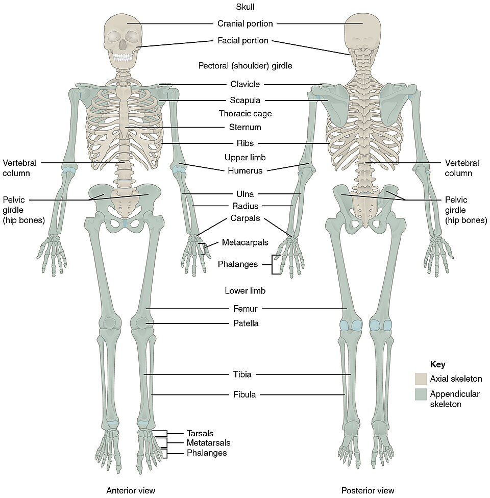
A frame that is also a factory
Every bone is an organ — it contains several tissue types (bone tissue, cartilage, dense connective tissue, blood, nervous tissue) working together, and it is very much alive. Snap a fresh bone and it bleeds; leave a broken one alone and it heals. The whole set of bones, cartilages, and joints makes up the skeletal system, and that system does far more than give you a shape. It works as a support beam, a suit of armor, a system of levers, a mineral bank, and a blood-cell factory — often all at the same moment.
The jobs bones do
It is worth memorizing the skeleton's core functions as a short list, because almost everything else in the chapter is one of these jobs seen up close. Bone stores fat and minerals, builds blood, moves you, protects you, and holds you upright.
| Function | How the skeleton delivers it |
|---|---|
| Support | A rigid framework that holds the body up and gives soft organs and muscles a place to attach |
| Protection | Hard cases shield vital organs — the skull guards the brain, the vertebrae the spinal cord, the rib cage the heart and lungs |
| Movement | Bones act as levers that muscles pull on; where two bones meet at a joint, motion happens |
| Mineral & fat storage | Bone is a reservoir for calcium and phosphate, released or stored on demand; yellow marrow stores energy as fat |
| Blood-cell formation | Hematopoiesis — red marrow inside certain bones makes red cells, white cells, and platelets |
Axial and appendicular: two halves of one set
An adult skeleton has 206 bones, and they split into two named divisions. The axial skeleton (about 80 bones) runs down the body's central axis — the skull, the vertebral column, and the thoracic cage — and its main job is protection and support. The appendicular skeleton (about 126 bones) is everything that hangs off that axis: the arms and legs plus the two girdles (pectoral and pelvic) that anchor the limbs to the trunk. Its main job is movement. In the reference figure, the axial bones are tinted one color and the appendicular bones another — a useful way to keep the two straight.
Tap each of the skeleton's jobs in the interactive to see what carries it out.
- A bone is a living organ; the skeletal system is bones, cartilages, and joints together.
- Core jobs: support, protection, movement, mineral/fat storage, and blood-cell formation (hematopoiesis).
- The axial skeleton (~80 bones) protects and supports; the appendicular skeleton (~126 bones) enables movement; 206 bones total in an adult.
- About 99% of the body's calcium is stored in bone.
Section 2Classifying bones by shape
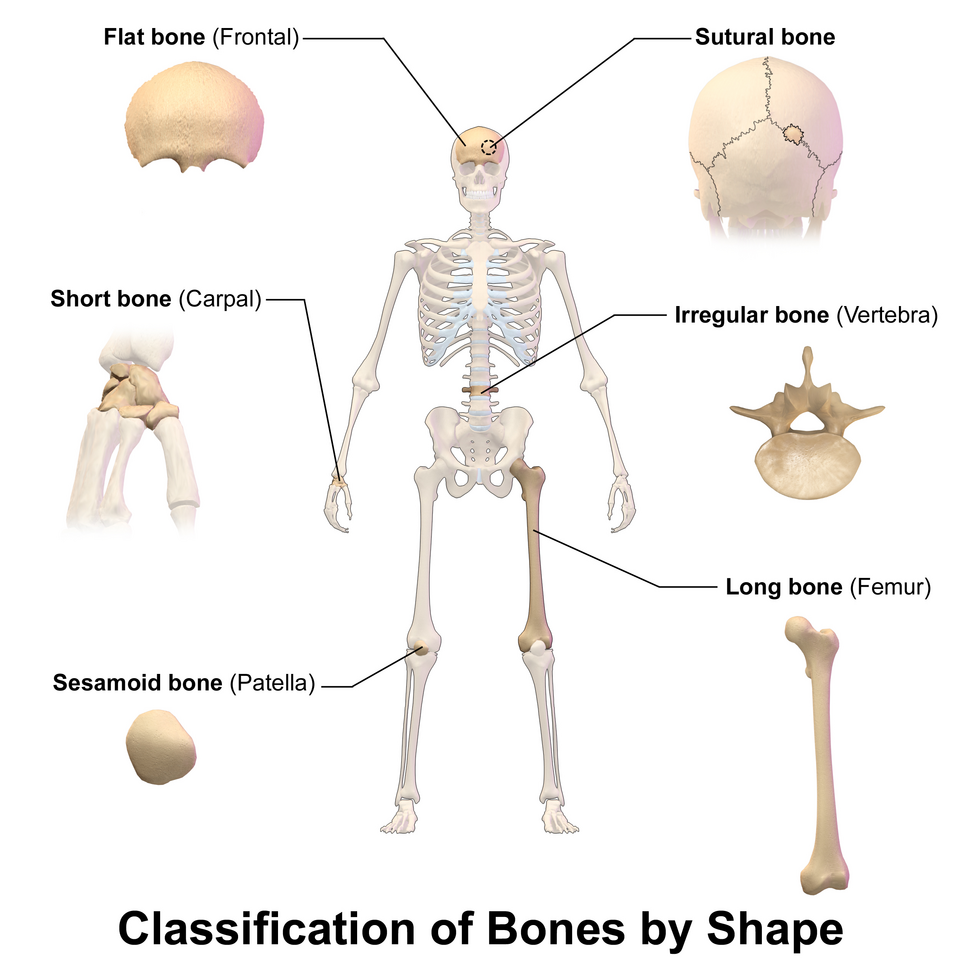
Shape follows the job
Bones come in a handful of recognizable shapes, and — just as with the rest of the body — the shape is a clue to the function. A bone built for leverage looks nothing like a bone built to shield a soft organ. Sorting the skeleton into five shape classes gives you a quick vocabulary for describing any bone you meet.
The five shapes
| Class | Shape & role | Examples |
|---|---|---|
| Long bone | Longer than wide, with a shaft and two ends; act as levers for movement | Femur, humerus, phalanges (fingers & toes) |
| Short bone | Roughly cube-shaped; provide stability with limited motion | Carpals (wrist), tarsals (ankle) |
| Flat bone | Thin, often curved plates; protect organs and give broad muscle attachment | Skull bones, sternum, ribs, scapula |
| Irregular bone | Complex shapes that fit no other class; varied protective and support roles | Vertebrae, hip bones, many facial bones |
| Sesamoid bone | Small bones embedded inside a tendon; protect the tendon and improve its pull | Patella (kneecap) |
Notice that the phalanges of your fingers count as long bones even though they are tiny — the label is about proportion (longer than wide, with a shaft) and about function (leverage), not about absolute size. The reference figure also shows a sutural (Wormian) bone, a small extra bone that can appear within the seams of the skull; think of it as a special case of a flat bone rather than a sixth class.
Tap each shape in the interactive to see the bone and where it lives in the body.
- Five shape classes: long, short, flat, irregular, sesamoid.
- Long bones are levers; short bones give stable support; flat bones protect; irregular bones are specialized; sesamoids sit inside tendons.
- The patella is the largest sesamoid; the phalanges are small long bones.
Section 3Inside a long bone
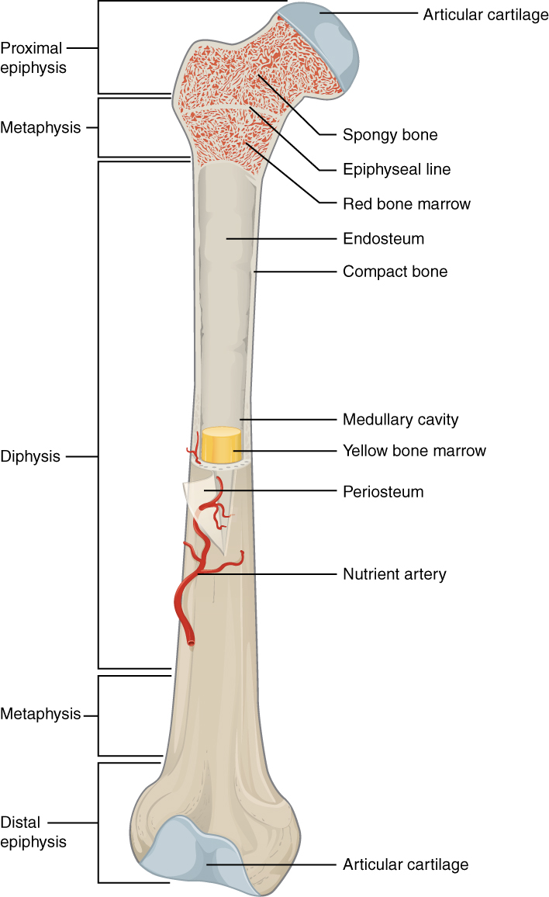
The shaft and the ends
A long bone such as the femur has a clean architecture once you learn its parts. The long central tube is the diaphysis, or shaft. Its wall is a cylinder of dense compact bone, and its hollow center — the medullary cavity — is filled in adults with fatty yellow marrow. Each rounded end is an epiphysis, filled with lightweight spongy (trabecular) bone whose spaces hold red marrow, the site of blood-cell formation. Where the joint surface meets another bone, the epiphysis is capped with slick articular cartilage that cushions the joint and lets it glide. Between the shaft and each end lies the metaphysis, which in a growing child contains the epiphyseal (growth) plate — a disc of cartilage where the bone lengthens. When growth finishes, that plate ossifies into a thin epiphyseal line.
The living wrappers
Two thin membranes keep bone alive and connected. The periosteum is a tough sheath covering the outer surface everywhere except the joint caps; it carries the blood vessels and nerves, anchors tendons and ligaments, and holds bone-forming cells for growth and repair. Lining the inner surfaces — the medullary cavity and the spaces of spongy bone — is the delicate endosteum, also stocked with bone cells. A nutrient artery pierces the shaft through a small opening to supply the bone from within.
Zoom in: the osteon
Under the microscope, compact bone is not a solid block but a bundle of tiny weight-bearing pillars called osteons (Haversian systems). Each osteon is a set of concentric rings of bone matrix, the lamellae, wrapped around a central canal that carries a blood vessel and nerve. Trapped in small pockets called lacunae between the rings are the mature bone cells, the osteocytes, and they stay connected to one another and to the central vessel through hair-thin channels called canaliculi. This canal-and-channel plumbing is how a hard, mineralized tissue keeps its buried cells fed and alive.
| Part | What it is / holds |
|---|---|
| Diaphysis | The shaft; a tube of compact bone around the medullary cavity |
| Epiphysis | An expanded end filled with spongy bone and red marrow |
| Metaphysis | The region between shaft and end; site of the growth plate/line |
| Medullary cavity | The hollow center of the shaft; holds yellow (fatty) marrow in adults |
| Articular cartilage | Smooth cartilage capping the joint surface of each epiphysis |
| Periosteum | Outer membrane; vessels, nerves, attachment, bone-forming cells |
| Endosteum | Inner lining of the marrow cavity and spongy spaces |
Tap each labeled part in the interactive to find it on the bone and learn its role.
- The diaphysis (shaft) is compact bone around a marrow-filled medullary cavity; the epiphyses (ends) are spongy bone with red marrow.
- The metaphysis holds the epiphyseal plate (growth) that becomes the epiphyseal line when growth stops.
- The periosteum wraps the outside; the endosteum lines the inside.
- Compact bone is built of osteons — lamellae around a central canal, with osteocytes in lacunae linked by canaliculi.
Section 4Bone cells & remodeling
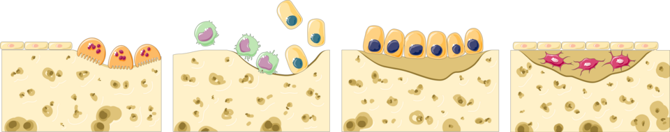
What bone is made of
Bone tissue is a masterpiece of engineering because it combines two opposite qualities. Its organic part — mostly collagen fibers — gives bone flexibility and tensile strength, so it bends a little under load instead of snapping. Its inorganic part — mineral salts of calcium and phosphate that crystallize as hydroxyapatite — gives bone its hardness and compressive strength. Take the mineral away and bone becomes rubbery; take the collagen away and it becomes brittle as chalk. Healthy bone needs both, in balance.
Four cells, one crew
Four cell types build and maintain that matrix, and the easiest way to remember them is by their jobs. Stem-like osteogenic (osteoprogenitor) cells divide to produce the builders. Osteoblasts lay down new bone matrix — they build. Once an osteoblast walls itself into the matrix it has made, it matures into an osteocyte, the caretaker cell that lives in a lacuna and keeps the tissue healthy. And the demolition crew are the osteoclasts, large multinucleated cells that dissolve old bone and release its minerals back into the blood.
| Cell | Job | Memory hook |
|---|---|---|
| Osteogenic cell | Stem cell that divides into osteoblasts | The source |
| Osteoblast | Builds new bone matrix | “b” for build |
| Osteocyte | Mature cell; maintains bone, senses stress | Retired builder, walled in |
| Osteoclast | Breaks down bone; frees calcium | “c” for consume/carve |
The tug-of-war called remodeling
Bone is never finished. Throughout life, osteoclasts dissolve old bone while osteoblasts lay down fresh bone right behind them — a continuous cycle called remodeling that replaces roughly 10% of the skeleton every year. When the two crews stay balanced, bone mass holds steady. Two things tune the balance. First, mechanical stress: bone thickens where it is loaded and thins where it is not — the principle known as Wolff's law, which is why weight-bearing exercise strengthens the skeleton and why bones weaken during bed rest or spaceflight. Second, hormones, especially the calcium-regulating pair you will meet next. When resorption outpaces formation for years — as often happens after menopause — the result is osteoporosis, porous bone that fractures easily.
Watch the crews trade places in the interactive, and meet the four cells one at a time.
- Bone matrix = collagen (flexibility) + hydroxyapatite mineral (hardness); it needs both.
- Four cells: osteogenic (source), osteoblast (build), osteocyte (maintain), osteoclast (break down).
- Remodeling balances resorption and deposition, replacing ~10% of bone yearly; it responds to load (Wolff's law) and hormones.
- Chronic imbalance toward resorption gives osteoporosis.
Section 5Calcium homeostasis
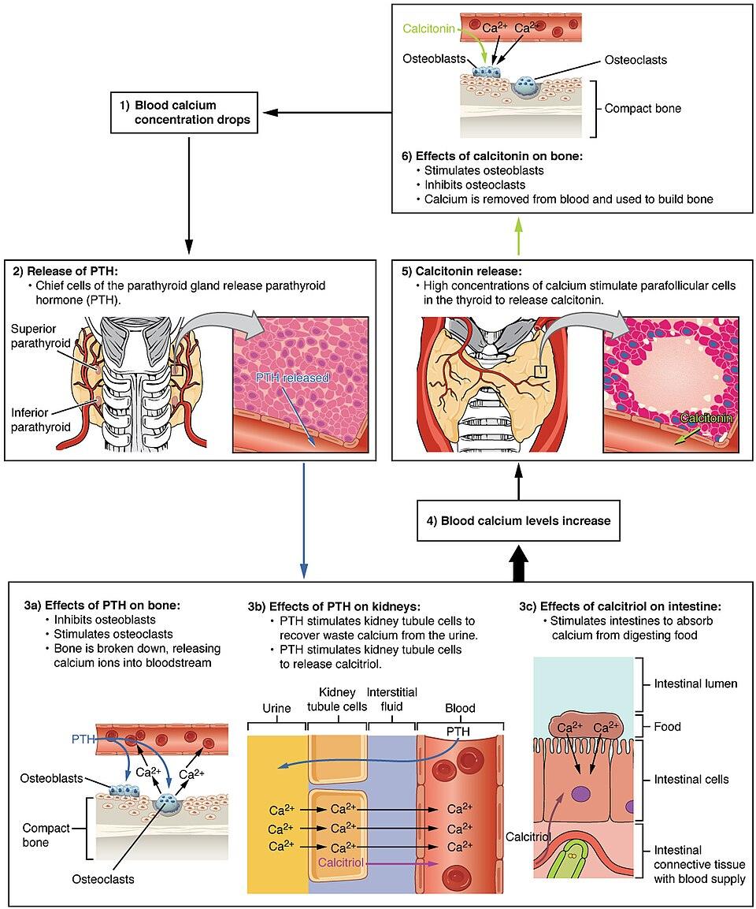
Why calcium is worth guarding
Blood calcium (Ca²⁺) must stay in a tight window, roughly 9–10 mg/dL, because so much depends on it: calcium triggers muscle contraction, lets nerves fire, is required for blood clotting, and acts as a messenger inside cells. Drift too low and nerves become jumpy, causing muscle spasms and cramps (tetany); drift too high and nerves and muscles go sluggish. This is a textbook example of the homeostasis idea from Chapter 1 — a value held near a set point by feedback — and the skeleton is the reservoir the body draws on to defend it.
PTH raises calcium
When blood calcium falls, the parathyroid glands (four small glands on the back of the thyroid) release parathyroid hormone (PTH). PTH pushes calcium up through three routes at once. In bone, it stimulates osteoclasts to dissolve matrix and release calcium into the blood. In the kidneys, it tells the tubules to reclaim calcium that would otherwise be lost in urine, and it activates vitamin D into calcitriol. And through calcitriol, it drives the intestines to absorb more calcium from food. Bone, kidney, and gut all pour calcium into the blood, and the level climbs back toward normal.
Calcitonin lowers calcium
When blood calcium runs high, the parafollicular (C) cells of the thyroid gland release calcitonin, which does the opposite of PTH. Calcitonin inhibits osteoclasts and favors osteoblasts, so calcium is pulled out of the blood and deposited back into bone, and the level settles down. The two hormones form a push–pull pair — PTH the accelerator, calcitonin the brake — that keeps blood calcium remarkably steady.
| Feature | Parathyroid hormone (PTH) | Calcitonin |
|---|---|---|
| Released when | Blood calcium is low | Blood calcium is high |
| Source | Parathyroid glands | Thyroid C (parafollicular) cells |
| Effect on calcium | Raises it | Lowers it |
| Bone | Stimulates osteoclasts (breakdown) | Inhibits osteoclasts (favors buildup) |
| Kidney / gut | Reabsorbs Ca; activates vitamin D → more gut absorption | Minor role |
Knock blood calcium off its set point in the interactive and watch the right hormone respond.
- Blood calcium is held near 9–10 mg/dL because it runs nerves, muscle, and clotting.
- PTH (from the parathyroids) raises calcium via bone, kidney, and gut (through calcitriol/vitamin D).
- Calcitonin (from thyroid C cells) lowers calcium by inhibiting osteoclasts.
- The body will withdraw calcium from bone to protect the blood level.
Section 6Fractures & repair

How bones break
A fracture is simply a broken bone, but clinicians name the pattern of the break because the pattern hints at what caused it and how it should be treated. The first and most important distinction is whether the skin stayed intact. A closed (simple) fracture leaves the skin unbroken; an open (compound) fracture breaks through the skin, which is far more serious because it opens a door for infection. Beyond that, breaks are named for their line and severity.
| Type | What it looks like |
|---|---|
| Closed vs open | Skin intact (closed) vs bone piercing the skin (open) — open carries infection risk |
| Transverse | Break runs straight across the shaft |
| Oblique | Break runs at an angle across the bone |
| Spiral | Twisting break that winds around the shaft; suggests a rotational force |
| Comminuted | Bone shatters into three or more fragments |
| Impacted | One broken end is driven into the other |
| Greenstick | Incomplete break; bone bends and cracks on one side (mostly in children) |
How a bone heals: four stages
A broken bone repairs itself in a predictable sequence that can take months to finish. First, torn vessels bleed and clot, forming a fracture hematoma that seals the gap and sets the stage. Next, cells build a soft fibrocartilaginous (soft) callus of collagen and cartilage that splints the ends together. Osteoblasts then replace that soft bridge with a bony (hard) callus of spongy bone, roughly six weeks after the injury. Finally, over months, the bone remodels — osteoclasts and osteoblasts reshape the callus back toward the bone's original form, guided by the same stresses that shape every bone.
| Stage | What happens |
|---|---|
| 1. Fracture hematoma | Bleeding forms a clot that fills and seals the break |
| 2. Soft (fibrocartilaginous) callus | Collagen and cartilage bridge the gap, splinting the ends |
| 3. Hard (bony) callus | Osteoblasts replace the soft callus with spongy bone (~6 weeks) |
| 4. Bone remodeling | The callus is reshaped over months toward the original contour |
To help this happen, a displaced fracture is first reduced — the ends are lined back up, either by manipulation from outside (closed reduction) or by surgery (open reduction) — and then immobilized in a cast or with hardware so the delicate callus is not disturbed while it matures.
Explore each fracture pattern in the interactive, then step through the four stages of repair.
- Closed = skin intact; open (compound) = bone breaks skin and risks infection.
- Patterns include transverse, oblique, spiral, comminuted, impacted, greenstick.
- Healing runs in four stages: hematoma → soft callus → hard callus → remodeling.
- Treatment is reduction (realigning) then immobilization to protect the callus.
The chapter in one breath
- Bone is living tissue, and the skeletal system does five jobs: support, protection, movement, mineral/fat storage, and blood-cell formation.
- The skeleton splits into the axial (~80 bones) and appendicular (~126 bones) divisions, 206 in all.
- Bones are classed by shape as long, short, flat, irregular, or sesamoid, and the shape follows the function.
- A long bone has a diaphysis of compact bone around a marrow cavity and spongy epiphyses; compact bone is built of osteons.
- Four cells — osteogenic, osteoblast, osteocyte, osteoclast — drive remodeling, the lifelong balance of building and dissolving bone.
- The matrix combines collagen (flexibility) with hydroxyapatite mineral (hardness).
- PTH raises and calcitonin lowers blood calcium, keeping it near 9–10 mg/dL — the skeleton is the calcium bank.
- Fractures come in named patterns and heal in four stages: hematoma → soft callus → hard callus → remodeling.
ReferenceWords worth knowing
A quick reference for the terms in this chapter — skim it now, or circle back whenever a word trips you up.
- Appendicular skeleton
- The bones of the limbs plus the pectoral and pelvic girdles that attach them to the axis (~126 bones); specialized for movement.
- Axial skeleton
- The bones along the body's central axis — skull, vertebral column, and thoracic cage (~80 bones); specialized for support and protection.
- Calcitonin
- A hormone from the thyroid's parafollicular (C) cells that lowers blood calcium by inhibiting osteoclasts.
- Calcitriol
- The active form of vitamin D; increases calcium absorption from the intestine and is activated with the help of PTH.
- Callus
- The repair bridge that forms across a fracture — first a soft (fibrocartilaginous) callus, later a hard (bony) callus.
- Compact bone
- Dense, strong bone tissue built of osteons; forms the outer wall of bones and the shaft of long bones.
- Diaphysis
- The tubular shaft of a long bone; compact bone surrounding the medullary cavity.
- Endosteum
- The thin membrane lining the internal surfaces of bone — the medullary cavity and spongy-bone spaces.
- Epiphyseal plate
- The cartilage growth plate in the metaphysis where a long bone lengthens; becomes the epiphyseal line when growth ends.
- Epiphysis
- The expanded end of a long bone, made of spongy bone with red marrow and capped by articular cartilage.
- Hematopoiesis
- The formation of blood cells (red cells, white cells, platelets) in the red marrow of bone.
- Hydroxyapatite
- The crystalline calcium-phosphate mineral of bone matrix that gives bone its hardness.
- Medullary cavity
- The hollow center of a long bone's shaft; stores fatty yellow marrow in adults.
- Osteoblast
- The bone-building cell that secretes new matrix; matures into an osteocyte once surrounded by bone.
- Osteoclast
- The large, multinucleated cell that dissolves bone matrix and releases its minerals into the blood.
- Osteocyte
- A mature bone cell housed in a lacuna that maintains the matrix and senses mechanical stress.
- Osteon
- The structural unit of compact bone — concentric lamellae of matrix around a central (Haversian) canal.
- Parathyroid hormone (PTH)
- The hormone from the parathyroid glands that raises blood calcium via bone, kidney, and intestine.
- Periosteum
- The tough outer membrane of a bone; carries vessels and nerves, anchors tendons, and holds bone-forming cells.
- Remodeling
- The lifelong cycle of bone resorption by osteoclasts balanced against deposition by osteoblasts.
- Sesamoid bone
- A small bone embedded within a tendon (such as the patella) that protects the tendon and improves its leverage.
- Spongy bone
- Lightweight, porous bone tissue of struts (trabeculae) found in the epiphyses; its spaces hold red marrow.
Check yourself
The Axial Skeleton
Down the center of your body runs a bony core that holds you upright, guards your most delicate organs, and gives every muscle something to pull against. This is the axial skeleton — the skull, the spine, and the rib cage — eighty bones arranged along the body's long axis. In this chapter we will take that core apart piece by piece: we will name the bones of the skull, stack the twenty-six vertebrae of the backbone, dissect a single vertebra to learn the plan they all share, build the cage that shields the heart and lungs, and trace the graceful S-curve that lets the spine carry your weight without buckling. By the end, an X-ray of the chest or a diagram of the skull will read like a map you already know.
By the end of this chapter you can
- Divide the skeleton into its axial and appendicular parts and list what belongs to each.
- Name the eight cranial and fourteen facial bones and identify the skull's major sutures.
- List the five regions of the vertebral column with the number of bones in each.
- Label the parts of a typical vertebra and explain what the body, arch, and processes each do.
- Classify the ribs as true, false, or floating and name the three parts of the sternum.
- Distinguish primary from secondary spinal curves and recognize kyphosis, lordosis, and scoliosis.
- Connect each axial structure to the organ or function it protects or supports.
Section 1Axial vs appendicular

Two skeletons in one
The adult body has 206 bones, and anatomists sort every one of them into two families. The axial skeleton forms the central axis of the body — the vertical line running from the top of the skull, down the spine, out through the ribs. It has 80 bones, and its job is protection and support: it houses the brain, the spinal cord, the heart, and the lungs, and it gives the trunk its rigid core. The appendicular skeleton is everything hung off that axis — the appendages. It has 126 bones: the arms and legs plus the two girdles (shoulder and hip) that anchor them. Its job is movement. A quick way to keep them straight: if a bone sits on the midline or cradles an organ, it is axial; if it lets you reach, walk, or grip, it is appendicular.
What the axial 80 are made of
The eighty axial bones fall into just three groups, and the whole of this chapter is a tour of them. The skull and its associated bones account for twenty-nine, the vertebral column for twenty-six, and the thoracic cage for twenty-five. Notice how neatly these track the organs they defend: the skull around the brain, the vertebrae around the spinal cord, the rib cage around the heart and lungs. The axial skeleton is, in a real sense, the body's suit of armor.
| Region | Bones included | Count |
|---|---|---|
| Skull | 8 cranial + 14 facial bones | 22 |
| Associated skull bones | 6 auditory ossicles + 1 hyoid bone | 7 |
| Vertebral column | 24 vertebrae + sacrum + coccyx | 26 |
| Thoracic cage | 24 ribs (12 pairs) + 1 sternum | 25 |
| Axial total | — | 80 |
Toggle between the two skeletons in the interactive below and watch the axial and appendicular bones light up in turn.
- The skeleton splits into the axial (80 bones, central axis, protection/support) and appendicular (126 bones, limbs and girdles, movement).
- The axial skeleton has three parts: skull, vertebral column, and thoracic cage.
- Axial bones sit on the midline and guard the brain, spinal cord, heart, and lungs; 80 + 126 = 206.
Section 2The skull
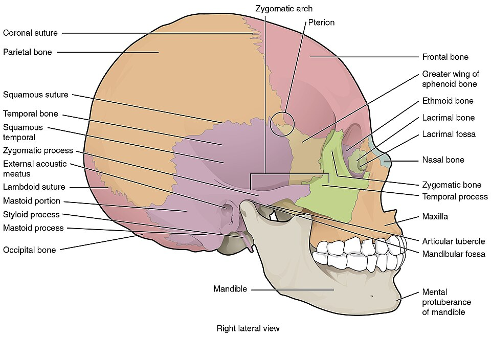
Eight bones cradle the brain
The skull is 22 bones, and the first split is between the part that surrounds the brain and the part that builds the face. The cranium (the braincase) is made of eight cranial bones. Four are single midline bones: the frontal (forehead), the occipital (back and base, pierced by the large foramen magnum where the spinal cord exits), the sphenoid (a bat-shaped keystone bone spanning the floor of the cranium), and the ethmoid (a delicate bone between the eyes forming part of the nasal cavity). The other two come as pairs: the two parietal bones roofing the top and sides, and the two temporal bones housing the ears low on each side. Together they form a rigid vault whose only purpose is to keep the brain safe.
Fourteen bones build the face
The 14 facial bones give the face its shape and frame the openings for sight, smell, and eating. Most are paired: the two maxillae (the upper jaw, fused at the midline), the two zygomatic bones (the cheekbones), the two nasal bones (the bridge of the nose), the two lacrimal bones (tiny bones at the inner eye that channel tears), the two palatine bones (the back of the hard palate), and the two inferior nasal conchae (curled shelves inside the nose). Two are single: the vomer (the lower part of the nasal septum) and the mandible (the lower jaw). The mandible is special — it is the only freely movable bone in the skull, meeting the temporal bone at the temporomandibular joint so you can chew and speak.
| Group | Single bones | Paired bones |
|---|---|---|
| Cranial (8) | Frontal, occipital, sphenoid, ethmoid | Parietal (2), temporal (2) |
| Facial (14) | Mandible, vomer | Maxilla (2), zygomatic (2), nasal (2), lacrimal (2), palatine (2), inferior nasal concha (2) |
Sutures, sinuses, and the infant skull
The cranial bones do not meet in smooth joints; they interlock along jagged, immovable seams called sutures. Four are worth naming: the coronal suture between the frontal and parietal bones, the sagittal suture running front-to-back between the two parietals, the lambdoid suture between the parietals and the occipital, and the squamous suture along the top of each temporal bone. In a newborn these seams have not yet closed; the gaps between them are the soft fontanelles ("soft spots") that let the skull flex during birth and expand as the brain grows. Several cranial and facial bones are also hollowed out by air-filled paranasal sinuses, which lighten the skull and add resonance to the voice.
Tap any bone on the side view in the interactive to find and name it.
- The skull is 22 bones: 8 cranial around the brain and 14 facial shaping the face.
- The single cranial bones are the frontal, occipital, sphenoid, and ethmoid; the parietals and temporals are paired.
- The mandible is the only freely movable skull bone; cranial bones meet at immovable sutures, which are open as fontanelles in infants.
Section 3The vertebral column
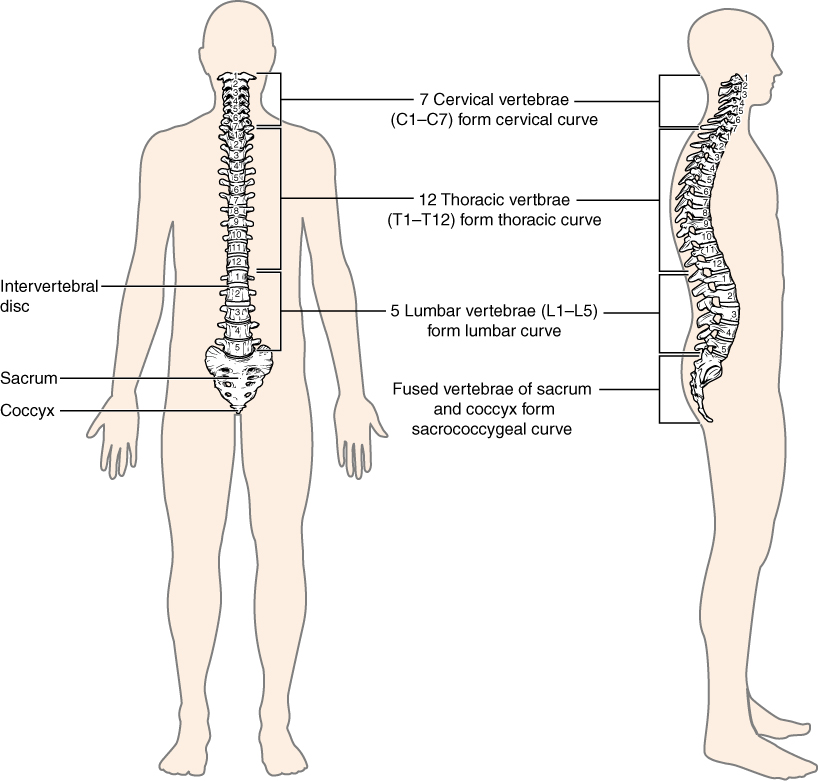
Twenty-six bones, five regions
The vertebral column — the backbone — is a stack of 26 bones that runs from the base of the skull to the pelvis. It does three big jobs at once: it supports the head and trunk, it protects the spinal cord threading down its center, and it stays flexible enough to let you bend and twist. The individual bones are vertebrae, and they are grouped into five regions from top to bottom. A classic mnemonic ties the counts to mealtimes — breakfast at 7, lunch at 12, dinner at 5:
| Region | Bones | Location & note |
|---|---|---|
| Cervical | 7 (C1–C7) | The neck; C1 is the atlas, C2 the axis |
| Thoracic | 12 (T1–T12) | The chest; each bears a pair of ribs |
| Lumbar | 5 (L1–L5) | The lower back; largest, most weight-bearing |
| Sacral | 1 (5 fused) | The sacrum; joins the hip bones |
| Coccygeal | 1 (4 fused) | The coccyx, or tailbone |
Counting the individual pieces, a child actually starts with 33 vertebrae; five of them fuse into the single sacrum and four into the coccyx, so the adult total settles at 26. Notice the pattern: the vertebrae grow steadily larger as you move down the column, because each lower bone must carry the weight of everything above it. The lumbar vertebrae, holding up the entire upper body, are the biggest and blockiest of all.
Discs, the cushions between
Between adjacent vertebrae (from C2 downward) sits an intervertebral disc — a pad with a tough fibrous ring, the anulus fibrosus, wrapped around a soft gel core, the nucleus pulposus. There are 23 of these discs, and they do double duty: they act as shock absorbers that cushion the jolt of every step, and they form slightly movable joints that let the spine flex. When the soft core pushes through a weakened ring — a herniated (“slipped”) disc — it can press on a nearby spinal nerve and send pain shooting down a limb.
Tap each region in the interactive to isolate it and see its vertebrae.
- The column is 26 bones in five regions: 7 cervical, 12 thoracic, 5 lumbar, plus the fused sacrum and coccyx (mnemonic 7–12–5).
- Vertebrae grow larger downward to bear increasing weight; the lumbar vertebrae are the largest.
- Intervertebral discs cushion the spine and allow movement; a herniated disc can compress a spinal nerve.
Section 4A typical vertebra
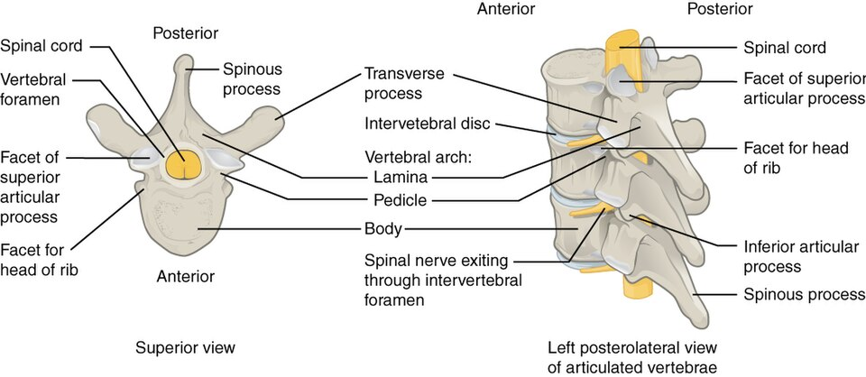
The body: the weight-bearer
Vertebrae look different from region to region, but they all share one blueprint. The front of every vertebra is the body (or centrum) — a thick, roughly cylindrical block of bone that faces anteriorly and does the heavy lifting. Stacked one on top of another with the discs between them, the bodies form the load-bearing pillar that carries the weight of the head and trunk. This is why the bodies get progressively larger toward the lumbar spine: the lower you go, the more weight there is to hold up.
The arch: the shield
Behind the body is the vertebral arch, a bony ring that projects backward. It is built from two pedicles (the short walls that rise from the body) and two laminae (the roof plates that meet in the midline). The body in front and the arch behind enclose the vertebral foramen — the hole through the center of the bone. Stack all the vertebrae and their foramina line up into the continuous vertebral canal, the bony tunnel that shelters the spinal cord along its whole length. The arch, in other words, is the spine's version of the skull's cranium: pure protection.
The processes: the handles
Projecting from the arch are seven bony processes that serve as levers and joints. The single spinous process points straight back — these are the bumps you feel down the middle of your back. The two transverse processes stick out to the sides. Spinous and transverse processes are attachment points where muscles and ligaments grab hold. The remaining four are the paired superior and inferior articular processes, whose smooth facets form movable joints with the vertebrae directly above and below, linking the whole column together.
| Part | Number | Job |
|---|---|---|
| Body (centrum) | 1 | Bears weight; faces anteriorly |
| Pedicles + laminae | 2 + 2 | Form the vertebral arch |
| Vertebral foramen | 1 | Opening that transmits the spinal cord |
| Spinous process | 1 | Posterior; muscle/ligament attachment |
| Transverse processes | 2 | Lateral; muscle/ligament attachment |
| Articular processes | 4 | Form joints with adjacent vertebrae |
Look straight down on a vertebra and tap each part to name it in the interactive.
- Every vertebra has a weight-bearing body in front and a protective arch (pedicles + laminae) behind.
- Body and arch enclose the vertebral foramen; stacked, these form the vertebral canal that houses the spinal cord.
- The spinous and transverse processes anchor muscles; the articular processes form joints with neighboring vertebrae.
Section 5The thoracic cage
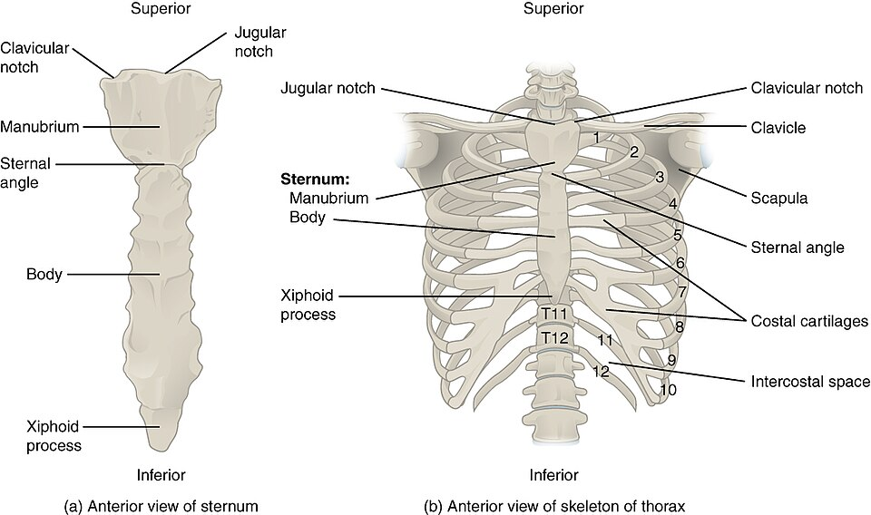
The sternum: the breastplate
The front of the chest is anchored by the sternum, or breastbone, a flat dagger-shaped bone with three parts. The broad manubrium sits on top and joins the collarbones. The long body forms the middle. The small xiphoid process is the pointed cartilage-tipped tail at the bottom. Where the manubrium meets the body there is a slight ridge, the sternal angle (angle of Louis), a landmark you can feel through the skin — it lines up with the second rib, giving clinicians a reliable starting point for counting ribs and placing a stethoscope.
Twelve pairs of ribs: true, false, and floating
Curving back from the sternum to the thoracic spine are 12 pairs of ribs. Every rib attaches to a thoracic vertebra behind, but they differ in how — or whether — they reach the sternum in front, and that is how we classify them. The true ribs (pairs 1–7) attach directly to the sternum, each by its own strip of costal cartilage. The false ribs (pairs 8–12) do not reach the sternum directly. Of these, pairs 8–10 join the costal cartilage of the rib just above them, while the last two — pairs 11 and 12 — have no anterior attachment at all and are called floating ribs, ending freely in the muscle of the back wall.
| Type | Rib pairs | Anterior attachment |
|---|---|---|
| True ribs | 1–7 | Directly to the sternum by their own costal cartilage |
| False ribs | 8–10 | Indirectly — to the costal cartilage of the rib above |
| Floating ribs | 11–12 | None — no sternal attachment |
A cage that breathes
The thoracic cage is not a solid box — it is a flexible basket that moves with every breath. When you inhale, muscles lift and swing the ribs upward and outward, enlarging the chest so the lungs can expand; when you exhale, the ribs drop back down. All the while the cage shields the heart, lungs, and great vessels beneath it, and it gives the muscles of breathing and of the upper body a framework to pull on. It is protection and machinery in a single structure.
Tap the sternum, the spine, and each rib group in the interactive to see how the cage fits together.
- The sternum has three parts — manubrium, body, xiphoid process; the sternal angle marks the second rib.
- Ribs are true (1–7, direct to sternum), false (8–10, indirect via the rib above), or floating (11–12, no anterior attachment).
- The cage protects the heart and lungs and expands with each breath.
Section 6Spinal curvatures
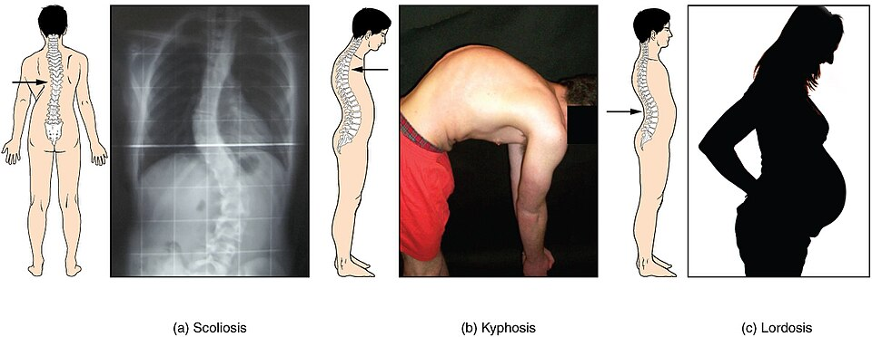
Four curves, two born and two learned
Seen from the side, a healthy spine is not straight — it makes a gentle S-shape of four curves that balance your weight over your hips and spring like a shock absorber with every step. Two of them are primary curves, present at birth and shaped like the curled-up posture of a fetus: the thoracic curve (chest) and the sacral curve (pelvis), both concave toward the front. The other two are secondary curves that develop after birth as a baby learns to hold up its head and then to walk: the cervical curve appears when an infant begins lifting its head, and the lumbar curve appears when the toddler stands and walks. Together the four curves let the column carry a heavy head and trunk without toppling.
| Curve | Type | Appears |
|---|---|---|
| Cervical | Secondary | When an infant lifts its head |
| Thoracic | Primary | Present at birth |
| Lumbar | Secondary | When a toddler stands and walks |
| Sacral | Primary | Present at birth |
When curves go wrong
The curves are healthy in moderation, but when one becomes exaggerated or turns the wrong way it gets a clinical name. Kyphosis is an excessive thoracic curve — a rounded, hunched upper back, sometimes called “hunchback,” common with osteoporosis in older adults. Lordosis is an excessive lumbar curve — an exaggerated inward sway of the lower back, or “swayback.” Scoliosis is different from both: an abnormal sideways (lateral) curve of the spine, so that from behind the column bends into a C or S. Scoliosis is the one screened for in schoolchildren, because catching it early — while the skeleton is still growing — gives the best chance to correct it.
Compare the normal S-curve with kyphosis, lordosis, and scoliosis side by side in the interactive.
- The spine has four curves: primary (thoracic, sacral, present at birth) and secondary (cervical, lumbar, learned with head-lifting and walking).
- Kyphosis = excessive thoracic curve; lordosis = excessive lumbar curve — both front-to-back exaggerations.
- Scoliosis is an abnormal lateral curve, screened for during childhood growth.
The chapter in one breath
- The skeleton divides into the axial (80 bones — skull, spine, thoracic cage; protection and support) and the appendicular (126 bones — limbs and girdles; movement).
- The skull is 22 bones: 8 cranial around the brain and 14 facial, with the mandible the only movable one and bones joined by immovable sutures.
- The vertebral column is 26 bones in five regions — 7 cervical, 12 thoracic, 5 lumbar, plus fused sacrum and coccyx — cushioned by intervertebral discs.
- Every vertebra has a weight-bearing body, a protective arch enclosing the vertebral foramen, and processes for muscles and joints.
- The thoracic cage is the three-part sternum plus 12 rib pairs — true, false, and floating — guarding the heart and lungs and moving with each breath.
- The spine's four curves (primary thoracic/sacral, secondary cervical/lumbar) form a shock-absorbing S; exaggerations are kyphosis, lordosis, and the lateral scoliosis.
- Throughout, the axial skeleton's shape follows one theme: armor for the body's most vital organs.
ReferenceWords worth knowing
A quick reference for the terms in this chapter — skim it now, or circle back whenever a word trips you up.
- Appendicular skeleton
- The 126 bones of the limbs and the two girdles (shoulder and hip) that attach them; specialized for movement.
- Atlas (C1)
- The first cervical vertebra, which supports the skull and allows the head to nod “yes.”
- Axial skeleton
- The 80 bones along the body's central axis — skull, vertebral column, and thoracic cage — that protect and support.
- Axis (C2)
- The second cervical vertebra, whose upward peg lets the head rotate to say “no.”
- Coccyx
- The small tailbone at the base of the spine, formed by four fused vertebrae.
- Costal cartilage
- The strip of cartilage connecting a rib to the sternum, directly or by way of the rib above.
- Cranial bones
- The eight skull bones (frontal, occipital, sphenoid, ethmoid, and paired parietals and temporals) that enclose the brain.
- Facial bones
- The fourteen skull bones that shape the face and frame the eyes, nose, and mouth.
- Floating ribs
- Rib pairs 11 and 12, which attach only to the vertebrae behind and have no anterior connection.
- Fontanelle
- A soft membranous gap between the cranial bones of an infant, allowing the skull to flex and the brain to grow.
- Foramen magnum
- The large opening in the occipital bone through which the spinal cord joins the brain.
- Intervertebral disc
- A fibrocartilage pad between adjacent vertebral bodies that absorbs shock and permits movement.
- Kyphosis
- An excessive posterior (front-to-back) curvature of the thoracic spine, producing a hunched upper back.
- Lordosis
- An excessive anterior curvature of the lumbar spine, producing an exaggerated swayback.
- Mandible
- The lower jaw — the only freely movable bone of the skull.
- Manubrium
- The broad upper part of the sternum that articulates with the clavicles and the first ribs.
- Sacrum
- The triangular bone of five fused vertebrae that joins the vertebral column to the hip bones.
- Scoliosis
- An abnormal lateral (side-to-side) curvature of the spine.
- Sternal angle
- The palpable ridge where the manubrium meets the sternal body, aligned with the second rib.
- Suture
- An immovable interlocking joint between two cranial bones.
- Vertebral foramen
- The central opening of a vertebra, formed by the body and arch, through which the spinal cord passes.
- Xiphoid process
- The small pointed inferior tip of the sternum, an important landmark for CPR.
Check yourself
The Appendicular Skeleton
If the axial skeleton is the body's central mast, the appendicular skeleton is everything that hangs off it and lets you act on the world — the arms that reach and grip, the legs that carry and spring, and the two bony girdles that bolt those limbs to the trunk. It is a set of 126 bones, and almost every one of them is a lever built for movement. In this chapter we work outward from each girdle to the fingertips and toes, and you will meet a recurring theme: the shoulder is engineered for freedom, the hip for strength, and the whole design is a series of trade-offs between the two. Learn the bones in this order and the hand and foot — 27 and 26 bones each — stop being a jumble and become a logical map.
By the end of this chapter you can
- Define the appendicular skeleton and list its four divisions, accounting for all 126 bones.
- Name the two bones of the pectoral girdle and explain why the upper limb's only bony link to the axial skeleton is the sternoclavicular joint.
- Identify the bones of the upper limb — humerus, radius, ulna — and place the radius on the thumb side in anatomical position.
- Sort the 27 bones of the hand and wrist into carpals, metacarpals, and phalanges, and name the eight carpals.
- Describe how three bones fuse to form each hip bone and contrast the pelvic girdle's stability with the pectoral girdle's mobility.
- Compare the male and female pelvis and explain the adaptations for childbirth.
- Identify the bones of the lower limb and distinguish the weight-bearing tibia from the non-weight-bearing fibula.
- Sort the 26 bones of the foot and ankle into tarsals, metatarsals, and phalanges, and explain how the foot's arches absorb shock.
Section 1The pectoral girdle
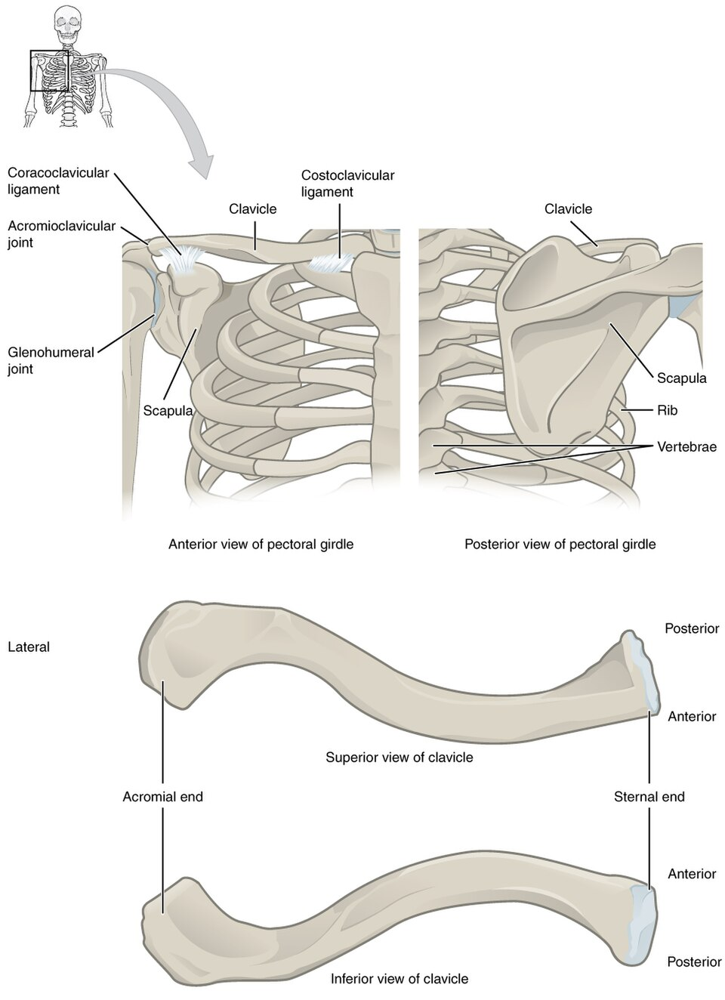
Two bones, one clever compromise
The pectoral girdle — the shoulder girdle — is the frame that connects each upper limb to the trunk, and it is built from only two bones on each side: the clavicle (collarbone) in front and the scapula (shoulder blade) behind. What is striking is how little the whole arm is bolted to the rest of the skeleton. The entire upper limb hangs from the axial skeleton at a single small joint — the sternoclavicular joint, where the medial end of the clavicle meets the manubrium of the sternum. The scapula, by contrast, is not directly joined to the ribs or spine at all; it floats on the back of the rib cage, held in place only by muscles. That loose arrangement is a deliberate compromise: the shoulder trades away stability to buy an enormous range of motion. You can circle your arm through nearly a full sphere — and the price is that the shoulder is one of the most easily dislocated joints in the body.
The clavicle: a slender strut
The clavicle is an S-shaped bone that acts as a brace, holding the shoulder out and away from the chest so the arm can swing freely. Its rounded sternal (medial) end articulates with the sternum; its flattened acromial (lateral) end meets the acromion of the scapula at the acromioclavicular (AC) joint. Because it is thin and sits right under the skin with nothing to cushion it, the clavicle is the most frequently fractured bone in the body — usually snapping in its middle third when someone falls onto an outstretched arm or the point of the shoulder.
The scapula: a triangle of landmarks
The scapula is a flat, triangular bone loaded with muscle-attachment features. Running across its back is the spine, which ends laterally in the acromion — the bony tip of your shoulder that you can feel. Curving forward like a finger is the coracoid process, an anchor for muscles and ligaments. Most important is the glenoid cavity (glenoid fossa), the shallow socket on the scapula's lateral angle that receives the head of the humerus to form the shoulder joint. That shallowness is the key to the whole design: a shallow socket lets the humerus swing widely, but it also lets the head slip out too easily.
| Bone / feature | What it is | Why it matters |
|---|---|---|
| Clavicle | S-shaped collarbone, front of girdle | Braces the shoulder outward; most commonly fractured bone |
| Scapula | Triangular shoulder blade, behind | Held only by muscles; carries the socket for the arm |
| Glenoid cavity | Shallow socket on the scapula | Receives the humeral head — shallow = mobile but unstable |
| Acromion | Lateral tip of the scapular spine | Forms the point of the shoulder; joins the clavicle |
| Sternoclavicular joint | Clavicle meets sternum | The only bony joint linking the upper limb to the axial skeleton |
Explore both bones and the landmarks that ride on them in the interactive below.
- The pectoral girdle is just two bones — the clavicle and scapula — on each side.
- The upper limb's only bony attachment to the axial skeleton is the sternoclavicular joint; the scapula floats on muscle.
- The glenoid cavity is shallow, trading stability for a huge range of motion.
- The clavicle is the body's most commonly fractured bone.
Section 2Bones of the upper limb
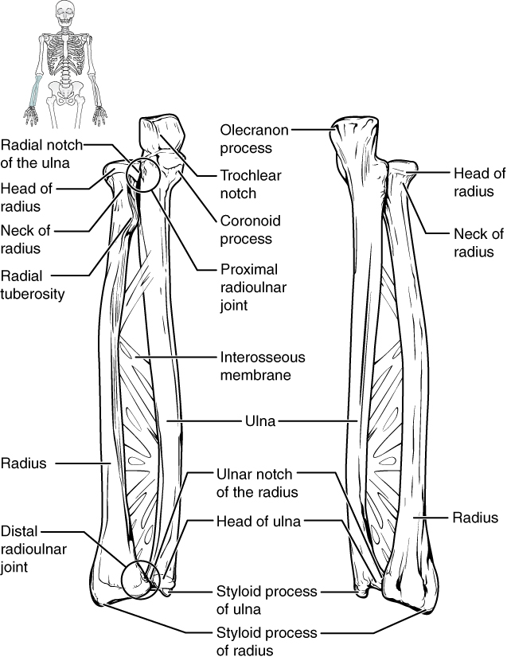
Three long bones between shoulder and wrist
Each upper limb contains 30 bones, but the three big long bones do the heavy structural work. The upper arm (the brachium) holds a single bone, the humerus. The forearm (the antebrachium) holds two bones side by side, the radius and the ulna. Learning which is which is easy if you anchor it to the anatomical position — palms facing forward: the radius is on the thumb (lateral) side, and the ulna is on the little-finger (medial) side. A phrase that sticks: the radius rotates around the ulna, and the radius is on the same side as the thumb.
The humerus and the elbow
The humerus is the long bone of the arm. Its rounded head fits into the glenoid cavity up at the shoulder. Just below the head is the surgical neck, a frequent fracture site that sits dangerously close to the axillary nerve. Down the shaft is the deltoid tuberosity, where the deltoid muscle attaches. At the elbow end, two rounded surfaces do the articulating: the capitulum meets the radius, and the pulley-shaped trochlea grips the ulna. Flanking them are the medial and lateral epicondyles — the medial one overlies the ulnar nerve, which is why a knock there sends a jolt down your arm (your "funny bone").
Radius and ulna: a rotating pair
The two forearm bones are joined along their length by a fibrous interosseous membrane and connect to each other at small joints top and bottom. This lets the forearm perform a beautiful trick: supination (palm up) and pronation (palm down). In pronation the radius pivots and crosses over the ulna. At the elbow, the ulna is the dominant partner — its olecranon forms the bony point of the elbow, and its trochlear notch wraps around the humeral trochlea like a wrench on a bolt. At the wrist, the radius takes over — it is the forearm bone that does most of the articulating with the carpal bones. Both bones end in a pointed styloid process.
| Bone | Location | Key role |
|---|---|---|
| Humerus | Upper arm (brachium) | Head fits the glenoid; distal end forms the elbow |
| Radius | Forearm, thumb (lateral) side | Rotates in pronation/supination; forms the wrist |
| Ulna | Forearm, pinky (medial) side | Olecranon forms the elbow point; stabilizes the forearm |
Tap each of the three bones and rotate the forearm from supination to pronation in the interactive.
- The upper limb has three long bones: the humerus (arm) and the radius and ulna (forearm).
- In anatomical position the radius is lateral (thumb side), the ulna is medial (pinky side).
- The ulna dominates the elbow (olecranon); the radius dominates the wrist and does the rotating.
Section 3The hand & wrist
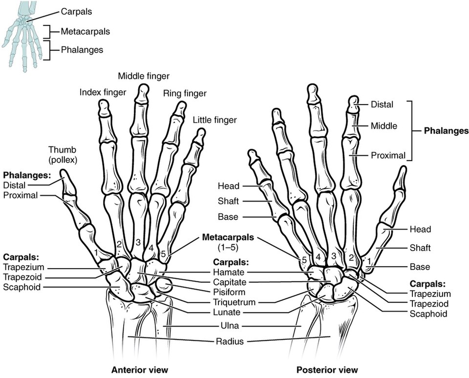
Twenty-seven bones in three groups
The hand is the most dexterous structure in the body, and its dexterity comes from packing 27 bones — and all the joints between them — into a small space. They sort neatly into three groups working from the wrist outward: 8 carpals in the wrist, 5 metacarpals in the palm, and 14 phalanges in the fingers. Get those three numbers (8, 5, 14) and their order and you have the whole hand.
The carpals: eight little stones
The carpals are eight small bones arranged in two rows of four, bound tightly by ligaments so the wrist bends as a unit. From the thumb side across the proximal row, then the distal row, they are: scaphoid, lunate, triquetrum, pisiform, then trapezium, trapezoid, capitate, hamate. A classic mnemonic keeps the order: "Sally Left The Party To Take Cathy Home." The scaphoid deserves special attention — it is the most commonly fractured carpal, usually from a fall on an outstretched hand, and because its blood supply enters from one end, a fracture can starve part of the bone and cause it to die.
Metacarpals and phalanges
The metacarpals are the five bones of the palm, numbered 1 to 5 starting at the thumb. Their rounded distal heads are your knuckles. The thumb's metacarpal meets the trapezium at a saddle joint — the special joint that lets the thumb swing across the palm to touch the other fingers, the opposable grip that makes the human hand so capable. The phalanges are the finger bones: each finger has three (proximal, middle, distal), but the thumb (pollex) has only two. That is 14 per hand. (A single one is a phalanx.)
| Group | Count | Where / notes |
|---|---|---|
| Carpals | 8 | Wrist; two rows of four (scaphoid is the one most often broken) |
| Metacarpals | 5 | Palm; numbered 1–5 from the thumb; heads = knuckles |
| Phalanges | 14 | Fingers have 3 each; the thumb has only 2 |
Tap each of the three groups — wrist, palm, and fingers — in the interactive below.
- The hand has 27 bones: 8 carpals + 5 metacarpals + 14 phalanges.
- The eight carpals run scaphoid, lunate, triquetrum, pisiform, trapezium, trapezoid, capitate, hamate.
- Each finger has 3 phalanges; the thumb has 2, and its saddle joint gives opposition.
Section 4The pelvic girdle
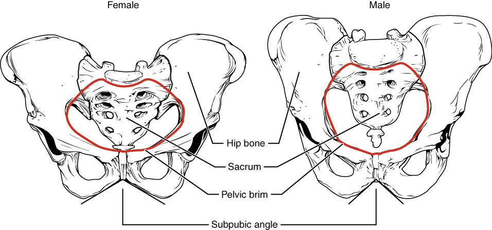
Built for strength, not freedom
Where the shoulder was engineered for mobility, the pelvic girdle is engineered for the opposite — strength and weight-bearing. It has to transmit the entire weight of the upper body down into the legs and absorb the pounding of every step. So instead of a bone floating on muscle, the pelvic girdle attaches firmly to the axial skeleton at the strong, nearly immovable sacroiliac joints. The girdle itself is the pair of hip bones (also called coxal bones or os coxae); together with the sacrum and coccyx they form the bony pelvis.
Three bones fused into one
Each hip bone begins life as three separate bones that fuse during adolescence into a single unit, meeting at a deep, cup-shaped socket called the acetabulum. The ilium is the large, fan-shaped upper part — its rim, the iliac crest, is the "hip" you rest your hands on. The ischium is the posterior-inferior part, and its rough ischial tuberosity is what you sit on. The pubis is the anterior part; the two pubic bones meet in front at the pubic symphysis, a joint of fibrocartilage. Notice the contrast with the shoulder: the acetabulum is a deep socket that grips the head of the femur firmly, so the hip almost never dislocates — the mirror image of the shallow, mobile glenoid.
Male and female pelvis: shaped by childbirth
The pelvis is the one part of the skeleton that differs clearly between the sexes, because the female pelvis is adapted to let a baby pass through. Compared with the male, the female pelvis is wider and shallower, with a larger, more rounded pelvic inlet, and a broader subpubic angle (the angle of the pubic arch) that is greater than 90°. The male pelvis is narrower and heavier, with a heart-shaped inlet and a subpubic angle less than 90°. These differences are reliable enough that anatomists and forensic scientists use the pelvis to determine sex from a skeleton.
| Feature | Female pelvis | Male pelvis |
|---|---|---|
| Overall shape | Wider, shallower, lighter | Narrower, deeper, heavier |
| Pelvic inlet | Rounded, oval, larger | Heart-shaped, smaller |
| Subpubic angle | Wide — greater than 90° | Narrow — less than 90° |
| Purpose of the difference | Roomy birth canal for childbirth | — |
Tap the ilium, ischium, and pubis, then toggle between the male and female pelvis in the interactive.
- The pelvic girdle is two hip bones, each a fusion of ilium + ischium + pubis meeting at the acetabulum.
- It attaches firmly to the axial skeleton at the sacroiliac joints — built for weight-bearing, not mobility.
- The female pelvis is wider with a subpubic angle greater than 90°, adapted for childbirth.
Section 5Bones of the lower limb
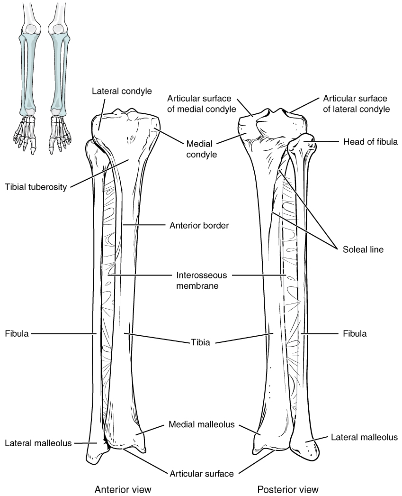
The strongest bones in the body
The lower limb carries your entire body weight and drives every step, so its bones are the largest and strongest you own. Like the arm, each limb has 30 bones, and four of them are the big structural players. The thigh holds a single bone, the femur. The knee is guarded by the patella (kneecap). The lower leg holds two bones, the tibia and fibula — the counterparts to the forearm's radius and ulna, but with a crucial difference we will get to.
Femur and patella
The femur is the longest, heaviest, and strongest bone in the body. Its ball-shaped head sits deep in the acetabulum; below the head, the angled neck is the classic site of a "hip fracture" in older adults with thin bone. Bumps called the greater and lesser trochanters anchor powerful hip muscles, and a ridge on the back, the linea aspera, gives more muscle attachment. At the knee, the femur's rounded condyles roll on the top of the tibia. The patella is the body's largest sesamoid bone — a bone that forms inside a tendon. Sitting in the quadriceps tendon, it acts like a pulley that improves the leverage of the thigh muscles when you straighten the knee, and it shields the joint from a direct blow.
Tibia and fibula: one carries, one steadies
Here is the difference from the forearm. In the leg the two bones do not share the load. The tibia (shinbone) is the thick, medial bone, and it bears essentially all the weight — its broad top (the tibial plateau) supports the femur, and its lower end forms the medial malleolus, the inner ankle bump. The fibula is the slender, lateral bone. It carries almost no weight; its jobs are to stabilize the ankle and give muscles a place to attach. Its lower end forms the lateral malleolus, the outer ankle bump. Notably, the fibula does not even reach the knee — only the tibia meets the femur there.
| Bone | Location | Role |
|---|---|---|
| Femur | Thigh | Longest, strongest bone; head fits the acetabulum |
| Patella | Front of knee | Largest sesamoid bone; improves quadriceps leverage |
| Tibia | Leg, medial | Weight-bearing shinbone; forms the medial malleolus |
| Fibula | Leg, lateral | Non-weight-bearing; stabilizes ankle, forms lateral malleolus |
Tap each of the four bones and find the two malleoli at the ankle in the interactive.
- The lower limb's four big bones are the femur, patella, tibia, and fibula.
- The femur is the body's longest and strongest bone; the patella is its largest sesamoid bone.
- The tibia (medial) bears the weight and forms the knee; the fibula (lateral) only stabilizes the ankle.
Section 6The foot & ankle
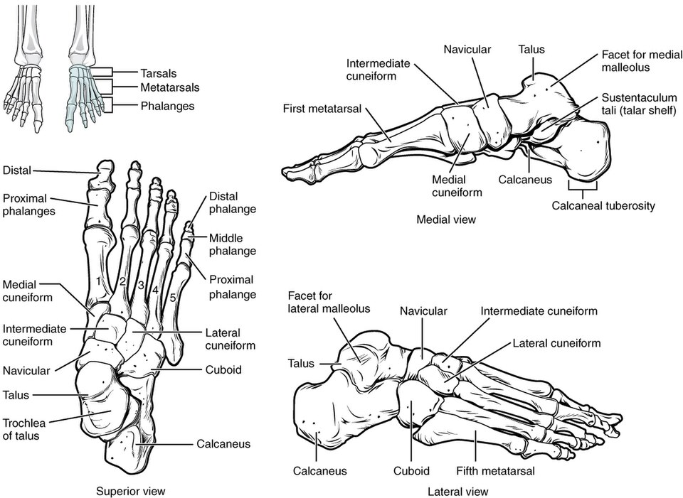
Twenty-six bones, built to bear weight
The foot echoes the hand — three groups of bones — but it is tuned for a completely different job: instead of grasping, it must bear weight and spring you forward. It holds 26 bones: 7 tarsals in the ankle and heel, 5 metatarsals in the sole, and 14 phalanges in the toes. It is the same three-group plan as the hand, with slightly different counts to remember (7, 5, 14).
The tarsals and the weight it takes
The tarsals are seven bones forming the ankle and back of the foot. Two of them do the serious work. The talus sits at the top and is the bone the tibia and fibula grip — it receives the body's weight from the leg and passes it down. The calcaneus (heel bone) is the largest tarsal; it forms the heel and takes the weight when your foot strikes the ground. The other five — the navicular, the cuboid, and three cuneiforms — bridge the ankle to the sole. The metatarsals (numbered 1–5 from the big toe) form the sole and the ball of the foot, and the phalanges are the toe bones: three in each toe, but only two in the big toe (the hallux) — exactly the pattern of the hand.
The arches: the foot's suspension
What truly separates the foot from the hand is its arches. The tarsals and metatarsals are held by ligaments and tendons into three curves — a medial longitudinal arch (the high one on the inside), a lateral longitudinal arch, and a transverse arch across the foot. These arches turn the foot into a natural spring and shock absorber: they flatten slightly to soak up the impact of each step, then recoil to push you off. When the arches drop, the result is flat feet (pes planus), which can lead to foot and leg fatigue because the shock absorber is gone.
| Group | Count | Where / notes |
|---|---|---|
| Tarsals | 7 | Ankle & heel; talus takes weight from the leg, calcaneus is the heel |
| Metatarsals | 5 | Sole; numbered 1–5 from the big toe; heads = ball of the foot |
| Phalanges | 14 | Toes have 3 each; the big toe (hallux) has 2 |
Tap each of the three groups — ankle, sole, and toes — and see the arches in the interactive below.
- The foot has 26 bones: 7 tarsals + 5 metatarsals + 14 phalanges.
- The talus receives weight from the leg; the calcaneus is the heel and largest tarsal.
- Three arches make the foot a shock absorber and spring; their collapse is flat feet.
The chapter in one breath
- The appendicular skeleton is 126 bones — the two limb girdles plus the arms and legs that hang from them.
- The pectoral girdle (clavicle + scapula) links the arm to the trunk by a single bony joint (sternoclavicular), buying mobility at the cost of stability.
- The upper limb has three long bones — humerus, plus radius (thumb side) and ulna (pinky side); the ulna rules the elbow, the radius rules the wrist.
- The hand is 27 bones: 8 carpals, 5 metacarpals, 14 phalanges, with an opposable thumb for dexterity.
- The pelvic girdle is two hip bones (ilium + ischium + pubis fused at the acetabulum), built for strength and weight-bearing; the female pelvis is adapted for childbirth.
- The lower limb has the body's strongest bones — femur, patella, and the weight-bearing tibia with the stabilizing fibula.
- The foot is 26 bones (7 tarsals, 5 metatarsals, 14 phalanges) whose arches make it a spring and shock absorber.
- Throughout, the design is a trade-off: the shoulder chooses freedom, the hip chooses strength.
ReferenceWords worth knowing
A quick reference for the terms in this chapter — skim it now, or circle back whenever a word trips you up.
- Acetabulum
- The deep, cup-shaped socket on the hip bone that receives the head of the femur to form the hip joint.
- Appendicular skeleton
- The 126 bones of the limbs and the two girdles (pectoral and pelvic) that attach the limbs to the axial skeleton.
- Calcaneus
- The heel bone; the largest tarsal, which bears weight when the foot strikes the ground.
- Carpals
- The eight small bones of the wrist, arranged in two rows of four.
- Clavicle
- The S-shaped collarbone that braces the shoulder; the most commonly fractured bone in the body.
- Femur
- The thigh bone; the longest, heaviest, and strongest bone in the body.
- Fibula
- The slender lateral bone of the leg; non-weight-bearing, it stabilizes the ankle and forms the lateral malleolus.
- Glenoid cavity
- The shallow socket of the scapula that receives the head of the humerus at the shoulder joint.
- Hip bone (os coxae)
- The coxal bone; each one is a fusion of the ilium, ischium, and pubis, and the pair forms the pelvic girdle.
- Humerus
- The single long bone of the upper arm, running from the shoulder to the elbow.
- Metacarpals
- The five bones of the palm, numbered 1 to 5 from the thumb; their heads form the knuckles.
- Metatarsals
- The five bones of the sole of the foot, numbered 1 to 5 from the big toe.
- Patella
- The kneecap; the largest sesamoid bone, formed within the quadriceps tendon to improve leverage.
- Pectoral girdle
- The shoulder girdle — clavicle and scapula — that attaches each upper limb to the axial skeleton.
- Pelvic girdle
- The two hip bones that attach the lower limbs to the axial skeleton and bear the body's weight.
- Phalanges
- The bones of the fingers and toes; three per digit except the thumb and big toe, which have two (singular: phalanx).
- Radius
- The lateral (thumb-side) bone of the forearm; it rotates in pronation and forms most of the wrist joint.
- Scapula
- The triangular shoulder blade, held to the trunk only by muscles and carrying the glenoid cavity.
- Talus
- The tarsal bone that the tibia and fibula grip; it receives the body's weight from the leg.
- Tarsals
- The seven bones of the ankle and posterior foot, including the talus and calcaneus.
- Tibia
- The medial shinbone; the weight-bearing bone of the leg that forms the knee and the medial malleolus.
- Ulna
- The medial (pinky-side) bone of the forearm; its olecranon forms the point of the elbow.
Check yourself
Joints
Bones give the body its frame, but a frame that could not bend would be a statue. Wherever two bones meet, there is a joint — and joints are where movement is born. In this chapter you will learn the two ways anatomists sort every joint in the body, meet the six shapes of the freely-moving synovial joints, take apart the fluid-filled capsule that lets them glide, and put a name to every motion your body can make. Along the way you will see the single theme that governs all of them: a constant, unavoidable trade-off between how much a joint moves and how stable it stays.
By the end of this chapter you can
- Classify any joint two ways — structurally (fibrous, cartilaginous, synovial) and functionally (synarthrosis, amphiarthrosis, diarthrosis) — and explain how the two schemes line up.
- State the mobility–stability trade-off and predict it from a joint's structure.
- Name the six types of synovial joint, describe the movement each allows, and give a body example of each.
- Label the parts of a synovial joint and explain the three jobs of synovial fluid.
- Perform and name the body movements in their opposite pairs, including the special movements of the forearm, foot, and thumb.
- Distinguish the subtypes of fibrous (suture, syndesmosis, gomphosis) and cartilaginous (synchondrosis, symphysis) joints.
- Describe the structure and signature weakness of the shoulder, hip, knee, and elbow.
- Connect common injuries — sprains, dislocations, torn menisci, arthritis — to the joint structures that fail.
Section 1Two ways to classify a joint

What is a joint, and why do we sort them twice?
A joint (or articulation) is simply any place where two bones — or a bone and cartilage, or a tooth and bone — come together. That is a huge and varied group: the immovable seams of the skull are joints, and so is the wildly mobile shoulder. To make sense of that range, anatomists describe every joint in two independent ways at once, and you should get in the habit of giving both.
The first scheme is structural — it asks what material binds the bones together, and is there a fluid-filled space between them? By that test there are exactly three kinds: fibrous joints, held by dense connective tissue with no cavity; cartilaginous joints, held by cartilage with no cavity; and synovial joints, which have a fluid-filled cavity between the bones. The second scheme is functional — it asks the simpler question how much does it move? A synarthrosis is immovable, an amphiarthrosis is slightly movable, and a diarthrosis is freely movable.
Movement versus stability: the great trade-off
These two schemes are not random — they track each other, because the material that holds a joint together decides how much it can move. Bind two bones with tough fibers and you get a rock-solid but nearly motionless union (fibrous, usually a synarthrosis). Cushion them with cartilage and you get a little give (cartilaginous, usually an amphiarthrosis). Put a slippery fluid-filled gap between them and they can swing freely — but now nothing but ligaments and muscles holds them in place (synovial, always a diarthrosis).
That is the single most important idea in the whole chapter: mobility and stability pull against each other. Every joint in your body sits somewhere on that spectrum, and its design is a compromise chosen for the job it does. The skull needs to protect the brain, so it trades away all movement for maximum stability. The shoulder needs to throw and reach, so it trades away stability for a huge range of motion — which is exactly why it is the joint people dislocate most.
| Functional class | Movement | Usual structure | Example |
|---|---|---|---|
| Synarthrosis | Immovable | Fibrous (some cartilaginous) | Skull sutures; a tooth in its socket |
| Amphiarthrosis | Slightly movable | Cartilaginous (some fibrous) | Pubic symphysis; intervertebral discs |
| Diarthrosis | Freely movable | Synovial | Shoulder, hip, knee, elbow, fingers |
Tap through the classification tree in the interactive and watch how much each joint actually moves.
- Every joint is described twice: structurally (fibrous / cartilaginous / synovial) and functionally (synarthrosis / amphiarthrosis / diarthrosis).
- Structure = the binding material and whether there is a cavity; function = how much it moves.
- The schemes track each other because material dictates motion: fibrous → immovable, cartilaginous → slightly movable, synovial → freely movable.
- The master theme is the mobility–stability trade-off: more movement always costs stability.
Section 2The six synovial joints

Same blueprint, six shapes
All synovial joints share the same fluid-filled design (that is the next section), but the shape of the two bone ends that meet determines how the joint can move. There are six shapes, and each allows a characteristic set of motions. The tidy way to keep them straight is by their axes of movement — the number of directions in which the bones can swing.
A nonaxial joint slides but does not swing. A uniaxial joint moves in one plane, like a door on a hinge. A biaxial joint moves in two planes, and a multiaxial joint moves in all directions and can spin as well. As you go down that list, mobility climbs — and, true to the chapter's theme, stability falls.
| Type | Axes / movement | Where you have one |
|---|---|---|
| Plane (gliding) | Nonaxial — flat surfaces slide back and forth | Intercarpal joints of the wrist; between vertebral facets |
| Hinge | Uniaxial — flexion and extension only | Elbow, knee, joints of the fingers |
| Pivot | Uniaxial — rotation around a single long axis | Atlas–axis (shaking “no”); radius at the elbow |
| Condyloid (ellipsoid) | Biaxial — flexion/extension + abduction/adduction | Knuckles (metacarpophalangeal); wrist |
| Saddle | Biaxial, with a wider range than condyloid | Base of the thumb (first carpometacarpal) |
| Ball-and-socket | Multiaxial — movement in every plane plus rotation | Shoulder and hip |
Reading the shape tells you the move
Once you can picture the shape, the motion follows automatically. A hinge is a convex end sitting in a concave trough, so it can only rock one way — the elbow cannot swing side to side any more than a door can. A ball-and-socket is a rounded head buried in a cup, free to swing in any direction and to spin, which is why the shoulder and hip are the two most mobile joints you own. The saddle joint at the base of your thumb, where each bone is shaped like a rider on a saddle, is what gives humans a truly opposable thumb — the anatomy behind every grip.
Tap each of the six shapes in the interactive to see the motion it allows and where you have one.
- All six synovial types share one design; the shape of the bone ends sets the movement.
- By axes: plane (nonaxial) → hinge and pivot (uniaxial) → condyloid and saddle (biaxial) → ball-and-socket (multiaxial).
- Ball-and-socket (shoulder, hip) is the most mobile; plane joints only glide.
- The saddle joint at the thumb base makes the human grip possible.
Section 3Inside a synovial joint
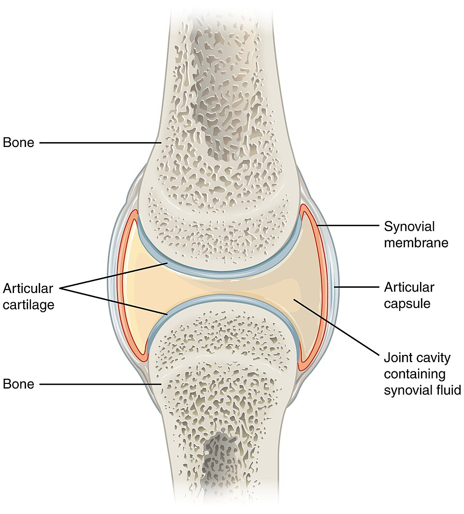
The essential parts
What lets a synovial joint move so freely is a small fluid-filled space, the joint (synovial) cavity, sitting between the two bone ends so they never actually touch. Everything else in the joint exists to protect, feed, and lubricate that gap. Learn these parts and you can label any synovial joint in the body.
Each bone end is capped with a smooth layer of articular cartilage — glassy hyaline cartilage that presents a nearly frictionless surface and cushions the impact of every step. The whole joint is enclosed by a two-layered articular capsule: a tough outer fibrous layer that is continuous with the bones' covering and holds everything together, and a delicate inner synovial membrane that lines the cavity and makes its fluid. That fluid, synovial fluid, fills the cavity like oil in a hinge.
| Structure | What it does |
|---|---|
| Articular cartilage | Hyaline cartilage capping each bone end; a smooth, shock-absorbing surface |
| Joint (synovial) cavity | Fluid-filled space between the bones that allows free movement |
| Articular capsule | Outer fibrous layer for strength; inner synovial membrane that secretes fluid |
| Synovial fluid | Slippery fluid rich in hyaluronic acid — lubricates, feeds cartilage, absorbs shock |
| Ligaments | Bands of dense connective tissue that tie bone to bone and reinforce the capsule |
| Bursae & tendon sheaths | Fluid-filled sacs that cushion where tendons or skin rub over the joint |
Synovial fluid: oil, food, and cushion
Synovial fluid quietly does three jobs at once. First, it lubricates — its hyaluronic acid makes it slick, so the cartilage surfaces glide with less friction than ice on ice. Second, it feeds the cartilage: articular cartilage has no blood supply of its own, so it soaks up oxygen and nutrients from the fluid and dumps waste back into it. Third, it absorbs shock. When you press on a joint, fluid is squeezed out of the compressed cartilage; when you release, it seeps back in — a self-oiling mechanism called weeping lubrication, which is one reason gentle movement is good for aching joints.
Bursae: the joint's shock pads
Around many joints sit small flattened sacs of synovial fluid called bursae, positioned wherever a tendon, ligament, or patch of skin would otherwise chafe against bone. They act like greased cushions. Overuse them — kneeling all day, an overhead throwing motion — and a bursa can become inflamed and painful, the condition called bursitis.
Tap each labeled part in the interactive to see how the capsule, cavity, cartilage, and fluid fit together.
- The defining feature is a fluid-filled joint cavity that keeps the bone ends apart.
- Articular cartilage caps the bones; the articular capsule has a tough fibrous outer layer and a fluid-making synovial membrane inside.
- Synovial fluid does three jobs: lubricate, feed the avascular cartilage, and absorb shock.
- Bursae cushion tendons and skin over the joint; their inflammation is bursitis, and worn cartilage causes osteoarthritis.
Section 4The movements of the body
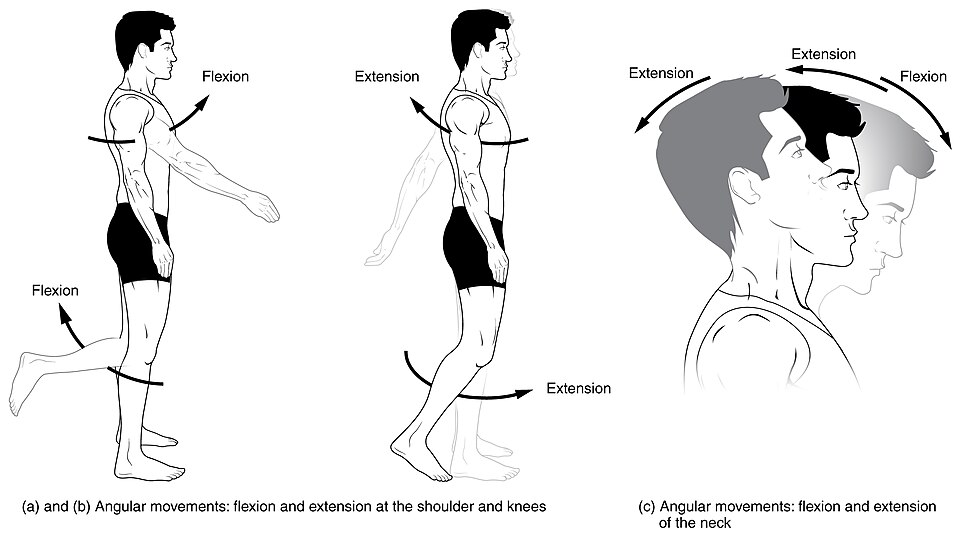
Motions come in opposite pairs
Every movement a synovial joint produces has a precise name, and the beauty of the system is that the names come in opposing pairs — learn one and you have practically learned its partner. All of them are described from the anatomical position, the same upright, palms-forward pose you met in Chapter 1.
The most common pair is flexion and extension. Flexion decreases the angle at a joint (bending the elbow, curling forward at the waist); extension increases it, straightening the joint back out. Push a joint past its straight position and you get hyperextension — tilting the head back to look at the ceiling. The next pair moves limbs toward or away from the body's midline: abduction carries a limb away from the midline, adduction brings it back toward the midline. Trace a full cone with an outstretched arm and you have circumduction, which strings flexion, abduction, extension, and adduction into one circle. Finally, rotation turns a bone around its own long axis — shaking your head “no” rotates the skull on the spine.
| Movement | What happens | Everyday example |
|---|---|---|
| Flexion / Extension | Decrease / increase the joint angle | Bending vs. straightening the elbow |
| Abduction / Adduction | Away from / toward the midline | Raising the arm out to the side and back down |
| Circumduction | Cone-shaped circling of a limb | Windmilling the whole arm |
| Rotation | Turning a bone on its long axis | Shaking the head “no” |
| Supination / Pronation | Palm turned up / palm turned down | Turning a doorknob back and forth |
| Dorsiflexion / Plantar flexion | Toes toward the shin / toes pointing down | Standing on the heels vs. the toes |
| Inversion / Eversion | Sole turned inward / outward | Rolling the ankle in or out |
| Elevation / Depression | Raising / lowering a part | Shrugging and dropping the shoulders |
The special movements
A handful of joints make motions that need their own names. At the forearm, supination turns the palm up (as if carrying soup) and pronation turns it down. At the ankle, lifting the toes toward the shin is dorsiflexion and pointing them down is plantar flexion, while turning the sole inward is inversion and outward is eversion. The jaw and shoulders can protract (move forward) and retract (move back), and elevate and depress. And the thumb performs opposition, crossing the palm to meet the fingertips — the movement that makes the human hand a tool.
Tap each movement in the interactive to watch a body perform it and see its opposite.
- Movements are named in opposite pairs and defined from the anatomical position.
- Flexion/extension change a joint angle; abduction/adduction move a limb away from/toward the midline; rotation spins a bone on its axis; circumduction is the combined cone.
- Special movements include supination/pronation (forearm), dorsiflexion/plantar flexion and inversion/eversion (foot), elevation/depression and protraction/retraction, and opposition of the thumb.
Section 5Fibrous & cartilaginous joints
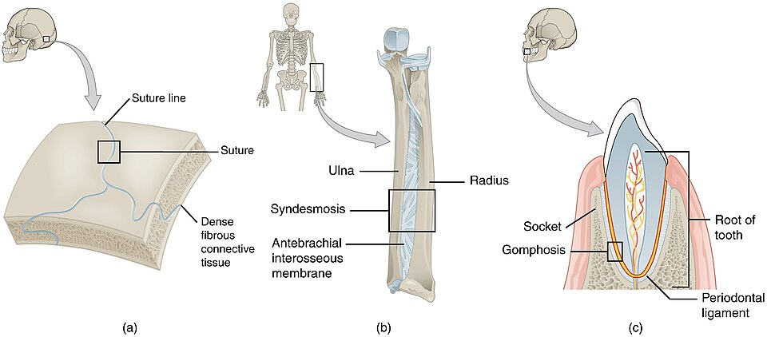
Joints without a cavity
Not every joint is built for motion. The two structural classes that lack a synovial cavity — fibrous and cartilaginous joints — trade movement for the stability the body needs at certain spots. They hold bones together with tissue rather than a fluid gap, and most of them fall on the immovable or barely-movable end of the functional scale.
Fibrous joints: bound by tough fibers
In a fibrous joint, dense fibrous connective tissue stitches the bones directly together. There are three kinds. A suture is the jagged, interlocking seam between the flat bones of the skull, held by a thin layer of fibrous tissue — essentially immovable (a synarthrosis), which is exactly what a case protecting the brain should be. A syndesmosis connects two parallel bones across a broader sheet or cord of fibrous tissue, such as the interosseous membrane between the radius and ulna; it permits a little give (an amphiarthrosis). A gomphosis is the peg-in-socket joint that anchors each tooth in its bony socket, held by the periodontal ligament — also immovable.
Cartilaginous joints: bound by cartilage
In a cartilaginous joint, cartilage does the binding. A synchondrosis uses hyaline cartilage: the classic example is the epiphyseal (growth) plate in a growing long bone, and the joint between the first rib and the sternum — both immovable. A symphysis uses tough, resilient fibrocartilage and allows slight movement (an amphiarthrosis); the pubic symphysis at the front of the pelvis and the intervertebral discs between the vertebrae are the two you must know — the discs let the spine bend a little at each level, which adds up to a flexible back.
| Structural type | Subtype | Binding material | Movement | Example |
|---|---|---|---|---|
| Fibrous | Suture | Thin fibrous tissue | Immovable | Skull seams |
| Syndesmosis | Sheet/cord of fibrous tissue | Slightly movable | Radius–ulna membrane | |
| Gomphosis | Periodontal ligament | Immovable | Tooth in its socket | |
| Cartilaginous | Synchondrosis | Hyaline cartilage | Immovable | Epiphyseal plate; 1st rib to sternum |
| Symphysis | Fibrocartilage | Slightly movable | Pubic symphysis; intervertebral discs |
Tap each fibrous and cartilaginous type in the interactive to see how it trades movement for stability.
- Fibrous and cartilaginous joints have no cavity and favor stability over movement.
- Fibrous subtypes: suture (skull, immovable), syndesmosis (radius–ulna membrane, slightly movable), gomphosis (tooth, immovable).
- Cartilaginous subtypes: synchondrosis (hyaline — growth plate, immovable) and symphysis (fibrocartilage — pubic symphysis and discs, slightly movable).
- A growth plate is a temporary joint that later fuses into a synostosis.
Section 6Four joints that do the work
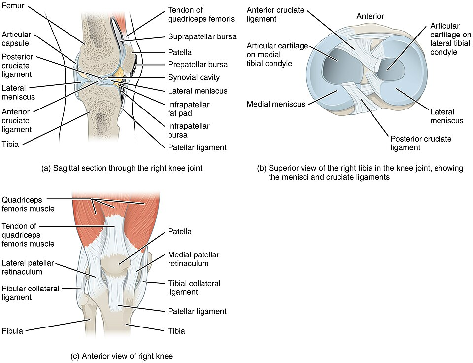
Shoulder and hip: two ball-and-sockets, two philosophies
The shoulder and the hip are both ball-and-socket joints, yet they answer the mobility–stability question in opposite ways. The shoulder (glenohumeral) joint is built for reach: the ball of the humerus sits against a shallow, saucer-like socket, giving it the widest range of any joint in the body. The price is fragility — the socket barely holds the ball, so muscles of the rotator cuff are its main stabilizers, and it is the joint people dislocate most often. The hip joint makes the opposite bargain: the head of the femur is sunk deep into a true cup, the acetabulum, and ringed by thick ligaments. It gives up some range to become one of the body's most stable joints — it has to be, because it carries your whole body weight with every step.
The knee: a hinge that does more than hinge
The knee is the largest and most complex joint in the body. It works mainly as a hinge — flexing and extending the leg — but it also allows a little rotation when bent, which is where trouble starts. Two crescents of fibrocartilage, the menisci, sit on top of the tibia to spread load and cushion the joint, and two crossing ligaments deep inside, the anterior and posterior cruciate ligaments (ACL and PCL), keep the femur and tibia from sliding past each other. A hard twist on a planted foot can tear the ACL and meniscus together — the reason knee injuries end so many athletic seasons.
The elbow: stability by design
The elbow shows what a joint looks like when the body chooses stability. It is a hinge where the humerus and ulna interlock so snugly that the joint moves cleanly in one plane and rarely dislocates. Strong collateral ligaments on each side reinforce it, and a separate pivot at the radius lets the forearm rotate into supination and pronation without loosening the hinge. It is a quiet lesson in the chapter's theme: a joint that gives up range gains a durability the shoulder can only envy.
| Joint | Type | Main stabilizers | Signature injury |
|---|---|---|---|
| Shoulder (glenohumeral) | Ball-and-socket | Rotator-cuff muscles (shallow socket) | Dislocation; rotator-cuff tear |
| Hip | Ball-and-socket | Deep socket + thick ligaments | Fracture (often with age) |
| Knee | Hinge (+ slight rotation) | Cruciate ligaments, menisci, collaterals | ACL / meniscus tear |
| Elbow | Hinge (+ pivot) | Bony interlock + collateral ligaments | Dislocation (uncommon) |
Tap each of the four joints in the interactive to compare how each balances mobility against stability.
- The shoulder maximizes mobility with a shallow socket — and pays for it as the most-dislocated joint, stabilized by the rotator cuff.
- The hip is a deep, ligament-bound ball-and-socket built for stable weight-bearing.
- The knee is a complex hinge stabilized by menisci and cruciate ligaments; twisting injuries tear them.
- The elbow trades range for a snug, durable hinge, with a pivot for forearm rotation.
The chapter in one breath
- A joint is any place two bones meet; every joint is classified structurally (fibrous, cartilaginous, synovial) and functionally (synarthrosis, amphiarthrosis, diarthrosis).
- The two schemes align because material dictates motion, and the master theme is the mobility–stability trade-off: more movement always costs stability.
- Synovial joints are the freely-movable ones and come in six shapes — plane, hinge, pivot, condyloid, saddle, and ball-and-socket — from nonaxial to multiaxial.
- A synovial joint centers on a fluid-filled cavity between cartilage-capped bones inside an articular capsule; synovial fluid lubricates, feeds the avascular cartilage, and absorbs shock.
- Movements are named in opposite pairs — flexion/extension, abduction/adduction, rotation, circumduction — plus special motions like supination/pronation and opposition.
- Fibrous (suture, syndesmosis, gomphosis) and cartilaginous (synchondrosis, symphysis) joints have no cavity and favor stability; some, like the growth plate, later fuse into bone.
- The shoulder, hip, knee, and elbow each strike the mobility–stability balance differently, which predicts how each one gets injured.
ReferenceWords worth knowing
A quick reference for the terms in this chapter — skim it now, or circle back whenever a word trips you up.
- Abduction
- Movement of a limb away from the body's midline (raising the arm out to the side).
- Adduction
- Movement of a limb toward the midline, back to the body.
- Amphiarthrosis
- A functionally slightly-movable joint (for example, the pubic symphysis or an intervertebral disc).
- Articular capsule
- The two-layered sleeve enclosing a synovial joint — a tough fibrous outer layer and a fluid-secreting synovial membrane inside.
- Articular cartilage
- The smooth hyaline cartilage that caps each bone end in a synovial joint, reducing friction and absorbing shock.
- Bursa
- A small fluid-filled sac that cushions where a tendon, ligament, or skin rubs over bone; its inflammation is bursitis.
- Circumduction
- Cone-shaped movement of a limb that combines flexion, abduction, extension, and adduction in sequence.
- Diarthrosis
- A functionally freely-movable joint; all synovial joints are diarthroses.
- Fibrous joint
- A joint in which dense fibrous connective tissue directly binds the bones, with no cavity (suture, syndesmosis, gomphosis).
- Flexion
- A movement that decreases the angle at a joint, such as bending the elbow.
- Gomphosis
- The immovable peg-in-socket fibrous joint anchoring a tooth in its bony socket via the periodontal ligament.
- Ligament
- A band of dense connective tissue that connects bone to bone and reinforces a joint.
- Meniscus
- A crescent of fibrocartilage (as in the knee) that sits between bone ends to spread load and improve fit.
- Suture
- An immovable fibrous joint forming the interlocking seams between the flat bones of the skull.
- Symphysis
- A slightly-movable cartilaginous joint united by fibrocartilage (pubic symphysis, intervertebral discs).
- Synarthrosis
- A functionally immovable joint (for example, a skull suture).
- Synchondrosis
- A cartilaginous joint united by hyaline cartilage, such as the epiphyseal growth plate.
- Syndesmosis
- A fibrous joint in which a sheet or cord of connective tissue links two bones, allowing slight movement (radius–ulna).
- Synovial fluid
- The slippery, hyaluronic-acid–rich fluid filling a joint cavity; it lubricates, nourishes cartilage, and cushions.
- Synovial joint
- A freely-movable joint with a fluid-filled cavity between cartilage-capped bones enclosed in a capsule.
Check yourself
Muscle Tissue
Muscle is the tissue that turns a decision into a movement. Every heartbeat, every blink, every stride, every push of food through your gut is a muscle cell doing the one thing muscle does supremely well — shortening on command. In this chapter we take a single skeletal muscle apart, layer by layer, until we reach the microscopic engine that actually pulls: the sarcomere. Then we watch that engine run — how a nerve signal crosses into the muscle, how calcium throws the switch, how filaments slide past one another, and how the body dials the force up from a delicate flicker to an all-out heave. By the end you will understand contraction not as magic but as a beautifully ordered chain of events you can follow from thought to motion.
By the end of this chapter you can
- Compare the three types of muscle tissue — skeletal, cardiac, and smooth — by structure, control, and location.
- Trace the connective-tissue wrappings of a skeletal muscle from epimysium down to a single fiber, and name the parts inside that fiber.
- Diagram a sarcomere and identify its bands, zones, and lines, and explain why skeletal muscle looks striped.
- Explain the sliding filament theory and the steps of the cross-bridge cycle, including the roles of ATP and calcium.
- Describe the neuromuscular junction and follow a signal from motor neuron to muscle action potential.
- Define a motor unit and explain how recruitment and summation grade muscle tension from a twitch to tetanus.
- Distinguish the three skeletal muscle fiber types and match each to the kind of work it does best.
Section 1How a muscle is built
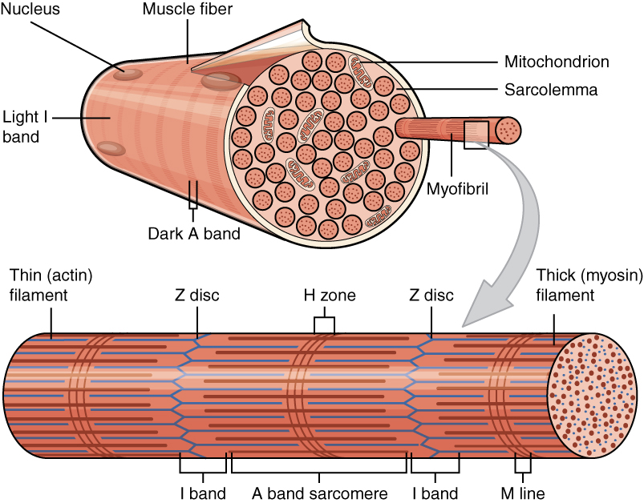
Three kinds of muscle tissue
Before we open up one muscle, it helps to know that the body builds muscle in three different flavors, each tuned to a different job. Skeletal muscle attaches to bones and moves the body; it is under voluntary control, and under the microscope its cells are long, striped (striated), and packed with many nuclei. Cardiac muscle is found only in the heart wall; it is striated too, but it is involuntary, its cells are branched with usually a single nucleus, and they are joined end-to-end by intercalated discs that let the whole heart contract as one. Smooth muscle lines the walls of hollow organs — blood vessels, gut, bladder, airways — where it squeezes slowly and tirelessly; it is involuntary, has no stripes, and its cells are tapered with one central nucleus. This chapter concentrates on skeletal muscle, because it shows every principle most clearly, but keep the other two in mind — the contraction machinery is largely shared.
| Feature | Skeletal | Cardiac | Smooth |
|---|---|---|---|
| Location | Attached to bones | Heart wall only | Walls of hollow organs & vessels |
| Striations | Striated | Striated | Not striated |
| Control | Voluntary | Involuntary | Involuntary |
| Cell shape | Long cylinder, many nuclei | Branched, usually 1 nucleus | Tapered spindle, 1 nucleus |
| Special feature | Motor-neuron controlled | Intercalated discs; self-rhythmic | Slow, sustained, self-triggering |
Bundles inside bundles
A whole skeletal muscle — your biceps, say — is not one solid block but a nested set of bundles, each wrapped in its own sheet of connective tissue. Working from the outside in: the entire muscle is sheathed in the epimysium; inside that, fibers are gathered into bundles called fascicles, each wrapped by perimysium; and inside each fascicle, every individual muscle cell (a muscle fiber) is wrapped in a delicate endomysium. These three sheaths are continuous with one another and, at the ends of the muscle, they merge and extend beyond it as a tendon (a cord) or an aponeurosis (a flat sheet) that anchors the muscle to bone. This arrangement is not just tidy packaging: the connective tissue carries the blood vessels and nerves in to each fiber, and it transmits the pull of every cell to the tendon so the whole muscle moves as one.
Inside a single fiber
Zoom into one muscle fiber and you find a cell built for pulling. Its plasma membrane is called the sarcolemma, and its cytoplasm the sarcoplasm (the prefix sarco- means “flesh”). The sarcolemma dives deep into the cell as tunnels called transverse (T) tubules, which carry the electrical signal into the fiber’s core. Wrapped around the working machinery is a specialized smooth endoplasmic reticulum, the sarcoplasmic reticulum (SR), which stores and releases the calcium that triggers contraction. Filling most of the cell are hundreds of long threads called myofibrils, and each myofibril is a chain of the contractile units — the sarcomeres — made of myofilaments of the proteins actin and myosin. Because a muscle fiber forms during development by many cells fusing together, it holds many nuclei pushed to the edge just under the sarcolemma, and a reserve of satellite cells sits nearby to repair damage.
Follow all of this in the interactive: start at the whole muscle and zoom, wrapping by wrapping, down to the sarcomere.
- Three muscle types: skeletal (voluntary, striated, bones), cardiac (involuntary, striated, heart), smooth (involuntary, unstriated, hollow organs).
- A skeletal muscle nests bundles inside bundles: epimysium → fascicle (perimysium) → fiber (endomysium), all continuous with the tendon.
- Inside a fiber: sarcolemma, T-tubules, sarcoplasmic reticulum, myofibrils of actin and myosin, and many nuclei at the edge.
Section 2The sarcomere
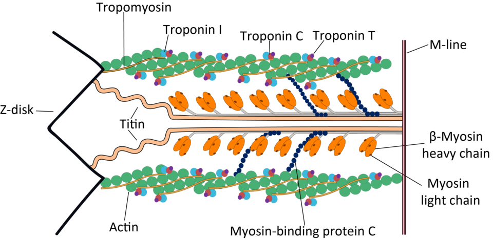
Stripes with a purpose
The stripes that give skeletal and cardiac muscle their name are not decoration — they are the visible signature of astonishingly ordered machinery. Inside every myofibril, the contractile proteins are lined up in identical repeating segments, and each segment is a sarcomere, the functional unit of contraction. One sarcomere runs from one Z-disc to the next Z-disc. When millions of these little units all shorten at once, in register, the whole muscle shortens — and it is their alternating dense and light regions, stacked side by side across the fiber, that our eyes read as striations.
The bands, zones, and lines
A sarcomere is built from two kinds of filament. The thick filaments are made of myosin, each with a hinged head that sticks out; the thin filaments are made of actin. Where the two overlap, the sarcomere looks dark; where only one is present, it looks lighter. Learning the map of bands is worth the effort, because in the next section you will watch these regions change size as the muscle contracts.
| Region | What it contains | Appearance |
|---|---|---|
| A band | The full length of the thick filaments (with overlap at its edges) | Dark; does not change length in contraction |
| I band | Thin filaments only, spanning two adjacent sarcomeres | Light; narrows during contraction |
| H zone | Thick filaments only, center of the A band (no overlap) | Lighter center; narrows during contraction |
| Z-disc (Z-line) | Anchors the thin filaments; the border of the sarcomere | Dark line; Z-discs are pulled together |
| M-line | Anchors the thick filaments at the sarcomere’s center | Fine central line |
Thick, thin, and the switch proteins
The thin filament is more than plain actin. Wrapped along it lies a ropelike protein, tropomyosin, that in a resting muscle physically covers the spots where myosin would attach — the myosin-binding sites. Holding tropomyosin in place is a three-part protein complex, troponin, one piece of which (troponin C) is a calcium receptor. This is the molecular switch: when calcium binds troponin, the whole complex shifts, tropomyosin slides aside, and the binding sites open. Two more proteins keep the sarcomere honest: giant, springy titin runs from Z-disc to M-line, keeping the thick filament centered and giving muscle its passive recoil, and nebulin runs alongside the thin filament, setting its length. Structure, once again, is built exactly for the job.
Tap each part in the interactive to see how the filaments build the stripes.
- The sarcomere (Z-disc to Z-disc) is the functional unit of contraction; ordered sarcomeres create the visible striations.
- Thick filaments are myosin (with heads); thin filaments are actin, guarded by tropomyosin and the calcium-sensing troponin.
- The A band stays constant while the I band and H zone narrow during contraction — the tell-tale of sliding filaments.
Section 3The sliding filament theory
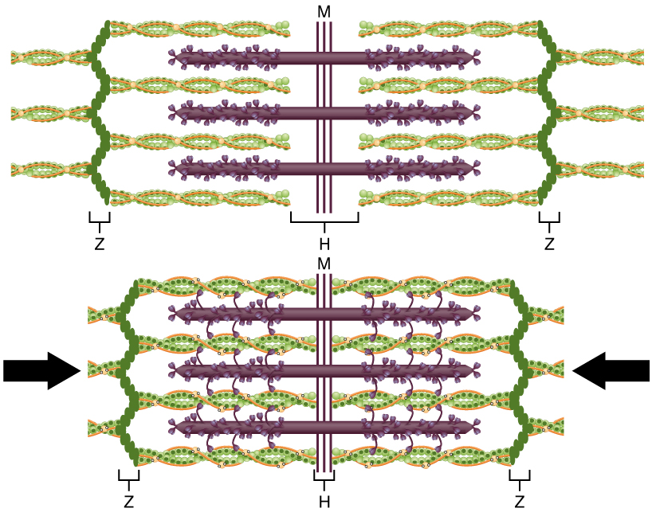
Sliding, not shrinking
Here is the single most important idea in this chapter, and it surprises almost everyone the first time: the filaments do not get shorter. When a muscle contracts, the thick and thin filaments slide past one another, increasing their overlap and dragging the Z-discs closer together. Each filament keeps its exact length; the sarcomere is what shortens. That is why, in the reference figure, the A band (the length of the thick filament) never changes, while the I band and H zone shrink and the Z-discs march inward. Multiply that tiny slide across millions of sarcomeres in series and the whole muscle noticeably shortens and pulls on its tendon.
The cross-bridge cycle
The sliding is powered by the myosin heads, which act as tiny oars. Each head reaches out, grabs actin to form a cross-bridge, and swivels — a power stroke — that ratchets the thin filament a few nanometers toward the center. Then it lets go, re-cocks, and grabs again, farther along. The cycle repeats many times per second, and it runs on ATP:
| Step | What happens | Role of ATP / Ca²⁺ |
|---|---|---|
| 1. Cross-bridge forms | The energized myosin head binds an exposed site on actin | Requires Ca²⁺ to have opened the site |
| 2. Power stroke | The head pivots, sliding the thin filament inward; ADP & P₃ are released | Uses energy stored from a previous ATP |
| 3. Detachment | A fresh ATP binds the myosin head, which releases from actin | ATP binding breaks the cross-bridge |
| 4. Re-cocking | ATP is split to ADP + P₃, re-energizing and re-setting the head | ATP hydrolysis re-cocks the head |
Notice the twin jobs of ATP: it is needed to release the head (step 3) and to re-cock it (step 4). This has a memorable consequence — in death, when ATP production stops, myosin heads bind actin and can no longer let go, and the body stiffens into rigor mortis.
Calcium throws the switch: excitation–contraction coupling
Cross-bridges can only form if the binding sites are uncovered, and that is calcium’s job. The link between an electrical signal and a mechanical pull is called excitation–contraction coupling. A muscle action potential races along the sarcolemma and dives down the T-tubules into the fiber. That voltage change tells the sarcoplasmic reticulum to dump its stored Ca²⁺ into the sarcoplasm. Calcium binds troponin, troponin tugs tropomyosin off the actin, the binding sites open, and cross-bridging — and sliding — begins. Relaxation is just the reverse: when the signal stops, a pump called SERCA hauls Ca²⁺ back into the SR, tropomyosin re-covers the sites, cross-bridges can no longer form, and the muscle goes slack. No calcium, no contraction.
Watch the Z-lines pull together while the filaments hold their length in the interactive.
- In the sliding filament theory, filaments keep their length; the sarcomere shortens as thick and thin filaments overlap more.
- The cross-bridge cycle — bind, power stroke, detach, re-cock — runs on ATP, which is needed to release and to re-energize the myosin head.
- Excitation–contraction coupling: an action potential → T-tubules → SR releases Ca²⁺ → troponin/tropomyosin uncover binding sites; SERCA reclaims calcium to relax.
Section 4The neuromuscular junction
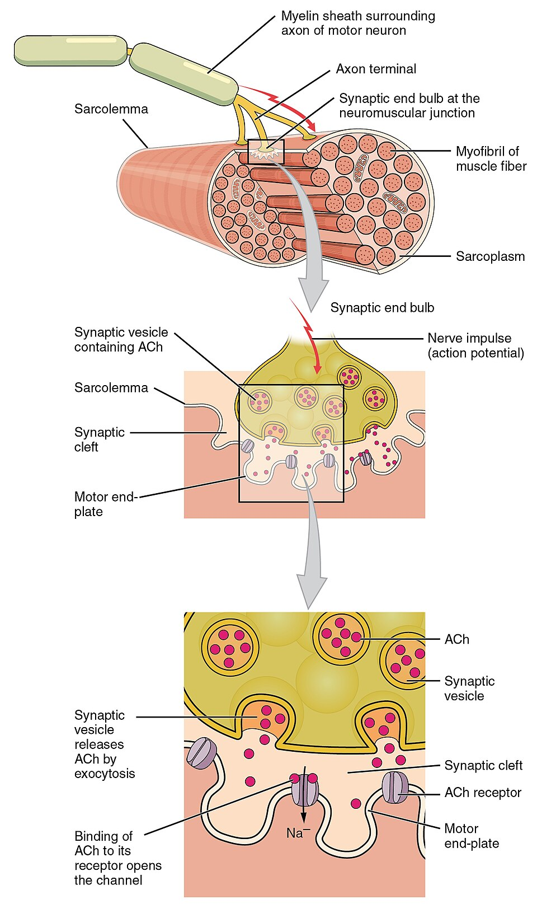
From nerve to muscle
A skeletal muscle fiber will not contract on its own — it waits for the command of a nerve. That command is delivered at a specialized synapse called the neuromuscular junction (NMJ). A motor neuron reaches out from the spinal cord, and its axon terminal comes to rest just above a folded patch of sarcolemma called the motor end plate. The two never touch; a tiny gap, the synaptic cleft, separates them. To bridge that gap, the neuron uses a chemical messenger — the neurotransmitter acetylcholine (ACh).
The handoff, step by step
The transfer of the signal from nerve to muscle is one of the most reliable events in physiology — a single nerve impulse essentially always triggers a muscle impulse. Follow the chain:
| Step | Event |
|---|---|
| 1 | A nerve action potential arrives at the axon terminal. |
| 2 | Voltage-gated Ca²⁺ channels open; calcium rushes into the terminal. |
| 3 | Calcium triggers vesicles to release acetylcholine into the synaptic cleft. |
| 4 | ACh crosses the cleft and binds nicotinic receptors on the motor end plate. |
| 5 | Receptor channels open; Na⁺ floods in, creating an end-plate potential. |
| 6 | The depolarization sets off a muscle action potential that spreads along the sarcolemma and down the T-tubules — and contraction follows. |
Notice how this dovetails with the last section: step 6 is exactly the muscle action potential that starts excitation–contraction coupling. The NMJ is the doorway; the sliding filament is the room it opens onto.
Switching the signal off — and where it breaks
A signal that never ended would leave the muscle locked in contraction, so the cleft contains an enzyme, acetylcholinesterase (AChE), that chops ACh apart within milliseconds. This tidy on/off system is also where many drugs and diseases act, which makes the NMJ one of the highest-yield spots in clinical medicine. In myasthenia gravis, the immune system destroys ACh receptors, so muscles fatigue and weaken. Curare (an arrow poison) blocks the receptors, causing paralysis. Organophosphate pesticides and nerve agents inhibit AChE, so ACh piles up and muscles seize. Botulinum toxin (Botox) blocks ACh release, relaxing muscle — useful for spasms and wrinkles.
Step through the chemical handoff yourself in the interactive.
- The neuromuscular junction is the synapse where a motor neuron signals a muscle fiber using acetylcholine across the synaptic cleft.
- ACh binds nicotinic receptors on the motor end plate, letting Na⁺ in to trigger a muscle action potential; acetylcholinesterase then ends the signal.
- NMJ disorders map to the transmitter: blocking ACh → weakness (myasthenia gravis, curare, botulinum); prolonging ACh → spasm (AChE inhibitors, nerve agents).
Section 5Motor units & muscle tension
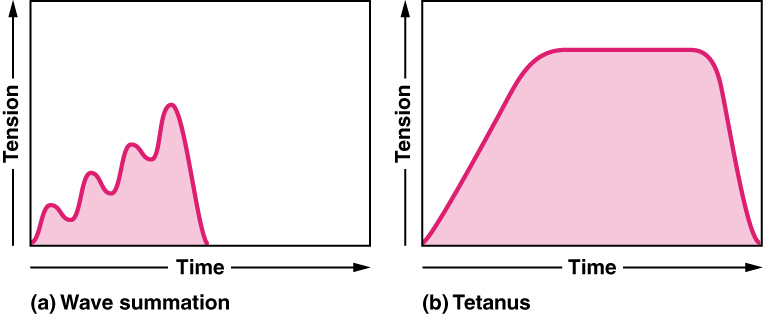
The motor unit
A single motor neuron rarely commands just one muscle fiber. Instead it branches and connects to a group of fibers, and the neuron together with all the fibers it controls is a motor unit. When that neuron fires, every fiber in its unit contracts at once — they are an all-or-nothing team. The size of the unit sets how finely a muscle can be controlled. Muscles that need delicacy, like those moving the eye or the fingers, have small motor units (a neuron to only a handful of fibers). Muscles built for power, like the quadriceps or the calf, have large motor units (a neuron to hundreds of fibers). Small units mean fine control; large units mean strong, coarse force.
Twitch, summation, tetanus
One brief stimulus produces a single, quick contraction-and-relaxation called a twitch, which has three phases: a latent period (the hidden delay while calcium is released), a contraction phase, and a relaxation phase. A twitch is a flick, not a useful pull. To get smooth, strong movement, the nervous system fires the motor neuron again before the fiber fully relaxes, so the second contraction stacks on top of the first. This stacking is wave (temporal) summation. Fire faster still and the individual twitches blur into a partly smoothed unfused (incomplete) tetanus, and faster yet into a steady, maximal, perfectly smooth fused (complete) tetanus. Nearly all normal movements use tetanus, not single twitches.
| Response | Stimulus pattern | Result |
|---|---|---|
| Twitch | One stimulus | A single brief contraction and full relaxation |
| Wave summation | A second stimulus before relaxation ends | The second contraction adds to the first — more tension |
| Unfused tetanus | Rapid, repeated stimuli | Strong, sustained pull with slight wobbles |
| Fused tetanus | Very high-frequency stimuli | Maximal, perfectly smooth, sustained contraction |
Two dials for force: recruitment and rate
The body grades how hard a muscle pulls using two controls at once. The first is recruitment — switching on more motor units. Under the size principle, small, weak, fatigue-resistant units are recruited first, and larger, more powerful ones are added only as more force is needed, so movements start smooth and controllable. The second dial is rate coding — firing each active unit faster to climb the summation-to-tetanus ladder above. Together, recruitment and rate let you lift a feather or a barbell with the same muscle. Even at rest, a few units are always active in rotation, keeping muscles firm and ready — this steady low-level tension is muscle tone.
Pick a stimulation pattern in the interactive and watch tension climb from twitch to tetanus.
- A motor unit is one motor neuron plus all the fibers it controls; small units give fine control, large units give power.
- Tension builds from a twitch through wave summation to tetanus as stimulation frequency rises; real movement uses tetanus.
- Force is graded by recruitment (adding units, smallest first — the size principle) and rate coding (firing faster); resting activity is muscle tone.
Section 6The three fiber types
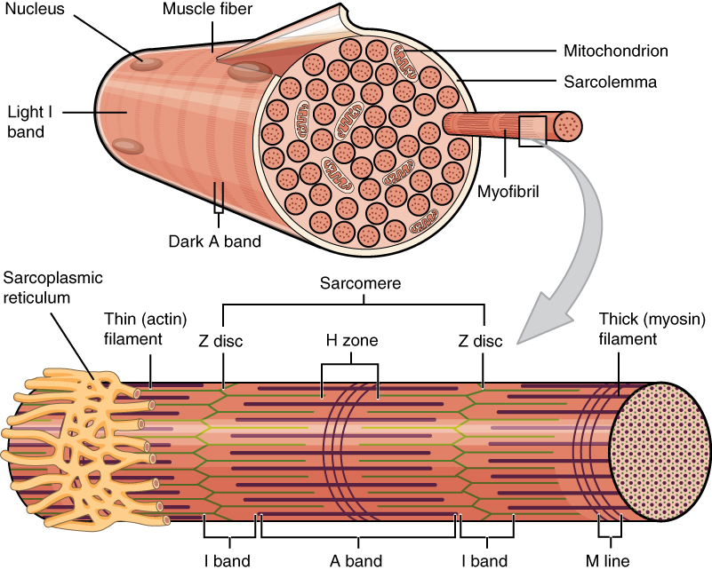
Speed versus stamina
Not every skeletal muscle fiber is the same. They come in three types that trade speed against endurance, because no single design can be both maximally fast and maximally tireless. Slow oxidative (Type I) fibers contract slowly and generate modest force, but they resist fatigue for hours — the endurance specialists. Fast glycolytic (Type IIx) fibers contract quickly and powerfully but tire within minutes — the sprint-and-lift specialists. In between sit fast oxidative (Type IIa) fibers, which are fast and reasonably fatigue-resistant — a versatile middle ground.
Aerobic versus anaerobic engines
The difference comes down to how each fiber makes its ATP. Oxidative fibers run on aerobic respiration: they are packed with mitochondria, richly supplied with capillaries, and loaded with myoglobin — an oxygen-binding pigment that makes them look red. That red, oxygen-fed machinery is slow but sustainable. Glycolytic fibers rely on anaerobic glycolysis: they have few mitochondria, little myoglobin (so they look pale), and large glycogen stores for quick bursts. They deliver explosive power but flood with lactate and fatigue fast.
| Property | Slow oxidative (I) | Fast oxidative (IIa) | Fast glycolytic (IIx) |
|---|---|---|---|
| Contraction speed | Slow | Fast | Fast |
| Fatigue resistance | High | Moderate | Low |
| Main ATP source | Aerobic (oxidative) | Both | Anaerobic (glycolytic) |
| Mitochondria / capillaries | Many | Many | Few |
| Myoglobin / color | High / red | High / red-pink | Low / white |
| Best for | Posture, endurance | Walking, sustained effort | Sprinting, lifting |
Everybody is a mixture — and a nod to the other two muscles
Almost every real muscle contains all three fiber types, blended in a ratio set partly by your genes and partly by how you train. Endurance training coaxes fibers toward the oxidative, fatigue-resistant end; strength and sprint training push toward larger, more powerful fibers. It is why a marathoner’s calves and a sprinter’s thighs are built for different feats. And remember the two muscle types we set aside at the start: cardiac muscle behaves like a permanently endurance-tuned, self-rhythmic tissue joined by intercalated discs so the heart never truly rests, while smooth muscle has no sarcomeres at all and can hold tension for long stretches with very little energy — a “latch” state perfect for keeping a blood vessel or a sphincter squeezed shut all day.
Tap each fiber type in the interactive to compare speed, color, and stamina.
- Three fiber types trade speed for stamina: slow oxidative (I) = endurance; fast glycolytic (IIx) = power; fast oxidative (IIa) = in between.
- Oxidative fibers are red (many mitochondria, myoglobin, capillaries) and aerobic; glycolytic fibers are pale, anaerobic, powerful, and quick to fatigue.
- Most muscles are a mix shaped by genetics and training; cardiac and smooth muscle are separate designs tuned for tireless work.
The chapter in one breath
- Muscle comes in three types — skeletal (voluntary, striated), cardiac (involuntary, striated, self-rhythmic), and smooth (involuntary, unstriated) — sharing the same basic contraction machinery.
- A skeletal muscle is bundles within bundles wrapped in epimysium, perimysium, and endomysium, all continuous with the tendon; inside each fiber are the sarcolemma, T-tubules, sarcoplasmic reticulum, and myofibrils.
- The sarcomere (Z-disc to Z-disc) is the functional unit; overlapping thick (myosin) and thin (actin) filaments create the striations, guarded by tropomyosin and troponin.
- In the sliding filament theory, filaments keep their length while the sarcomere shortens; the cross-bridge cycle runs on ATP, and Ca²⁺ released by the SR uncovers the binding sites.
- The neuromuscular junction hands the signal from nerve to muscle using acetylcholine, then clears it with acetylcholinesterase; toxins here cause weakness or spasm.
- A motor unit is one neuron and its fibers; tension is graded from a twitch to tetanus by recruitment and rate coding.
- Three fiber types trade speed for endurance, and most muscles blend all three in a ratio shaped by genes and training.
ReferenceWords worth knowing
A quick reference for the terms in this chapter — skim it now, or circle back whenever a word trips you up.
- A band
- The dark region of a sarcomere spanning the full length of the thick filaments; it does not change length during contraction.
- Acetylcholine (ACh)
- The neurotransmitter released by a motor neuron at the neuromuscular junction to trigger a muscle action potential.
- Actin
- The protein of the thin filament, carrying the myosin-binding sites that cross-bridges attach to.
- Cross-bridge
- The connection formed when a myosin head binds an exposed site on actin; its cycle of binding, power stroke, and release drives filament sliding.
- Endomysium
- The delicate connective-tissue sheath wrapping each individual muscle fiber.
- Epimysium
- The connective-tissue sheath surrounding an entire skeletal muscle.
- Excitation–contraction coupling
- The sequence linking a muscle action potential to contraction: the signal travels down T-tubules and triggers Ca²⁺ release from the sarcoplasmic reticulum.
- Fascicle
- A bundle of muscle fibers wrapped by perimysium.
- Motor unit
- A single motor neuron together with all the muscle fibers it innervates; they contract as one.
- Myofibril
- A long, threadlike organelle inside a muscle fiber made of a chain of sarcomeres.
- Myosin
- The protein of the thick filament, whose hinged heads form cross-bridges and perform the power stroke.
- Neuromuscular junction
- The synapse between a motor neuron and a skeletal muscle fiber where acetylcholine passes the signal.
- Recruitment
- Increasing muscle force by activating more motor units, smallest and most fatigue-resistant first (the size principle).
- Sarcolemma
- The plasma membrane of a muscle fiber; its inward tunnels are the T-tubules.
- Sarcomere
- The functional contractile unit of striated muscle, running from one Z-disc to the next.
- Sarcoplasmic reticulum (SR)
- The specialized smooth ER of a muscle fiber that stores and releases the Ca²⁺ that triggers contraction.
- Sliding filament theory
- The model that muscle shortens because thick and thin filaments slide past one another, not because the filaments themselves shorten.
- Tetanus
- A smooth, sustained, maximal contraction produced when stimuli arrive too fast for the fiber to relax between them.
- Tropomyosin
- The thin-filament protein that covers the myosin-binding sites at rest and slides aside when calcium binds troponin.
- Troponin
- The thin-filament protein complex that binds Ca²⁺ and moves tropomyosin to expose the binding sites.
- Twitch
- A single brief contraction and relaxation of a muscle fiber in response to one stimulus, with latent, contraction, and relaxation phases.
Check yourself
The Muscular System
Every voluntary thing you do — a smile, a step, a breath, a signature — is a muscle pulling on a bone or on your skin. In the last chapters you met the microscopic machinery inside a muscle fiber; now we zoom out to the whole body and ask a different set of questions. How do more than 600 skeletal muscles cooperate to produce smooth, controlled movement when each one can only pull? Why do their names read like Latin riddles — and how can you crack those riddles to know a muscle you have never memorized? This chapter is a guided tour of the body's muscles, region by region, from the tiny muscles that shape a facial expression to the powerhouses that launch you off the ground.
By the end of this chapter you can
- Explain why skeletal muscles can only pull, and how that forces them to work in opposing pairs across a joint.
- Define a muscle's origin and insertion, and assign the roles of agonist, antagonist, synergist, and fixator in a given movement.
- Describe how bones and joints act as levers, and explain the speed-versus-force trade-off of a third-class lever.
- Use the six naming clues to predict a muscle's location, shape, size, fiber direction, number of heads, or action from its name alone.
- Distinguish the muscles of facial expression from the muscles of mastication, and name the cranial nerve that drives each group.
- Identify the major muscles of the trunk — the breathing muscles, the abdominal wall, and the deep back — and state what each does.
- Name the principal muscles that move the shoulder, arm, and forearm, including the rotator cuff and the classic flexor/extensor pairs.
- Name the principal muscles that move the hip, knee, and ankle, including the quadriceps, hamstrings, and calf.
Section 1How muscles work together
A muscle can only pull
Here is the single fact that everything in this section is built on: a muscle can only pull, never push. When a muscle contracts, its fibers shorten and draw its two ends toward each other — that is the only trick it has. It cannot lengthen itself to shove a bone away. So how does your forearm both bend up and straighten back down? The answer is that muscles are almost never soloists. They are arranged in opposing teams on either side of a joint, and to reverse a movement the body simply relaxes one team and contracts the other.
To describe that pull precisely, we name a muscle's two ends. The origin is the attachment on the bone that stays relatively still — usually the more proximal, heavier bone. The insertion is the attachment on the bone that actually moves — usually the more distal one. Between them is the thick, contractile middle called the belly. When the muscle shortens, the insertion is dragged toward the origin. Muscles attach to bone through tough, cord-like tendons, or through broad, flat sheets called aponeuroses.
Four roles in every movement
Because muscles cooperate, any single motion is really a small committee at work, and each member has a job. Learn these four roles and you can analyze any movement in the body:
| Role | What it does | Example (bending the elbow) |
|---|---|---|
| Agonist (prime mover) | The main muscle producing the movement | Biceps brachii flexes the elbow |
| Antagonist | Opposes the agonist; relaxes and stretches as it acts | Triceps brachii relaxes to allow flexion |
| Synergist | Assists the agonist or steadies the joint | Brachialis helps the biceps flex |
| Fixator | Stabilizes the origin so the pull is efficient | Shoulder muscles hold the scapula still |
Notice that the same muscle switches roles depending on the movement. When you bend your elbow, the biceps is the agonist and the triceps is the antagonist; when you straighten it, they swap jobs entirely. There is no such thing as a “flexor muscle” in the abstract — a muscle is a flexor or an extensor only for a particular joint in a particular motion.
Bones are levers, joints are fulcrums
Muscles do not move bones by brute force alone; they work through levers. A lever is a rigid bar that pivots on a fixed point, and the body is full of them: the bone is the bar, the joint is the pivot (the fulcrum), the muscle's pull is the effort, and the weight being moved is the load. The way these three points are arranged decides whether a joint favors power or speed and range.
Most joints in the body are third-class levers, where the effort is applied between the fulcrum and the load — exactly the setup at your elbow, where the biceps inserts just past the joint while the load sits far out at the hand. This arrangement is mechanically “inefficient” for lifting heavy weight, but it buys something more useful: a small, quick muscle shortening produces a large, fast sweep of the hand. Your body traded raw force for speed and reach, which is why you can hurl a ball but strain to curl a heavy dumbbell.
Bend and straighten the elbow in the interactive and watch the biceps and triceps trade the agonist and antagonist roles.
- A muscle can only pull; opposing muscles across a joint reverse each other's actions.
- The origin is the fixed (usually proximal) attachment; the insertion is the moving (usually distal) one; the insertion is drawn toward the origin.
- Every movement uses an agonist, antagonist, synergist, and fixator, and muscles swap these roles depending on the motion.
- Bones act as levers; most body joints are third-class levers that favor speed and range over force.
Section 2How muscles are named
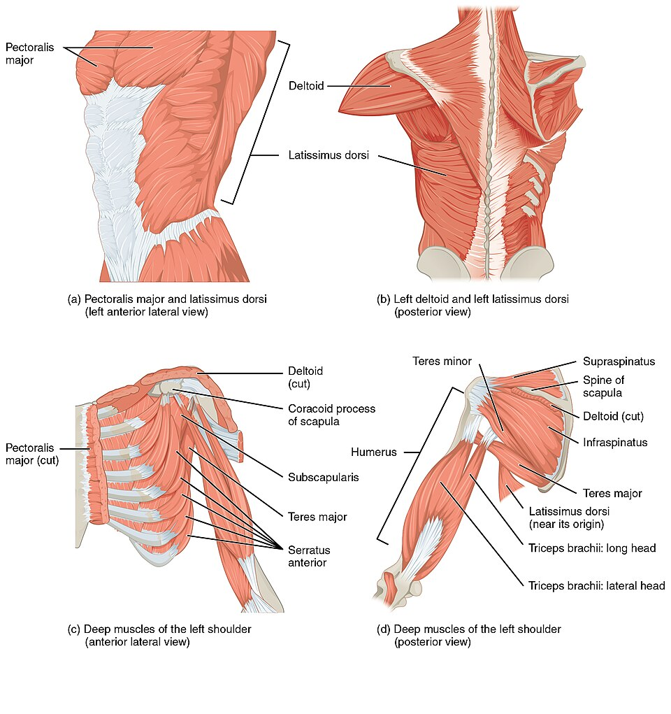
Names are descriptions in disguise
The first time you see words like flexor carpi radialis longus, muscle names feel like a wall of Latin memorization. They are not. Anatomists named muscles the way sailors named knots — by describing them. Almost every muscle name is a compact description of where the muscle is, what it looks like, how big it is, which way its fibers run, how many heads it has, or what it does. Once you know the vocabulary, a name you have never seen becomes a set of instructions for finding and understanding the muscle.
The six clues
There are six kinds of information a name can carry, and many muscles pack several clues into one name:
| Clue | Tells you | Example words & muscles |
|---|---|---|
| Location | The body region or nearby bone | temporalis (temporal bone), tibialis anterior (front of tibia) |
| Shape | The muscle's outline | deltoid (triangle), trapezius (trapezoid), rhomboid |
| Size | Relative size or length | maximus/minimus, longus/brevis, major/minor |
| Fiber direction | How the fibers run relative to the midline | rectus (straight), transversus (across), oblique (angled) |
| Number of heads | How many origins the muscle has | biceps (two), triceps (three), quadriceps (four) |
| Action | The movement it produces | flexor, extensor, adductor, levator, masseter (chewer) |
Watch the clues stack. Extensor digitorum longus unpacks to “the long muscle that extends the digits” — action, then body part, then size. Rectus femoris is “the straight muscle of the femur.” Even a monster like flexor carpi radialis is just “the muscle that flexes the wrist (carpus) along the radial side.” You do not have to memorize it as one blob; you read it like a sentence.
Tap each of the six clues in the interactive to see how a name reveals a muscle.
- Muscle names are descriptions, not arbitrary labels — decode them and you can reason about muscles you never memorized.
- The six clues: location, shape, size, fiber direction, number of heads, and action.
- Many names combine several clues; read them left to right like a sentence.
Section 3Muscles of the head and neck
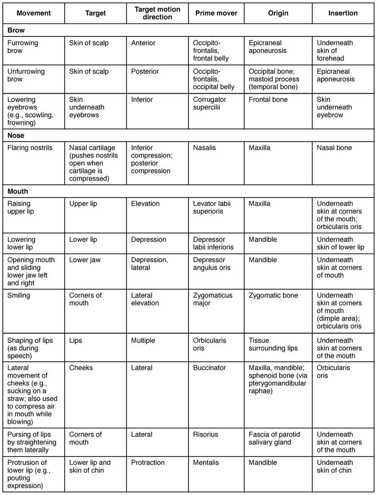
The muscles that make a face
The muscles of facial expression are unlike almost any others in the body, because most of them do not move a bone at all — they insert into the skin. When they contract, they tug the skin of the face into the countless expressions that carry human emotion: a smile, a frown, a raised eyebrow, a wink. This whole group is driven by a single nerve, the facial nerve (cranial nerve VII). Key players include the orbicularis oris, the ring around the mouth that purses your lips to whistle or kiss; the orbicularis oculi, the ring around the eye that closes it to blink and squint; the buccinator in the cheek, which flattens the cheek to blow out a candle and holds food against the teeth while you chew; the zygomaticus, which pulls the corner of the mouth up to smile; and the occipitofrontalis, which raises the eyebrows and wrinkles the forehead.
The muscles that chew
The second job up here is mastication — chewing. Unlike the facial muscles, the muscles of mastication do move a bone: they close and grind the mandible (lower jaw) at the temporomandibular joint. This group answers to a different nerve, the trigeminal nerve (cranial nerve V). The masseter runs from the cheekbone to the angle of the jaw and is, for its size, one of the strongest muscles in the body — you can feel it bulge when you clench your teeth. The fan-shaped temporalis spreads over the side of the skull and helps close and retract the jaw, while the deep pterygoid muscles produce the side-to-side grinding motion.
| Group | Job | Inserts on | Nerve | Members |
|---|---|---|---|---|
| Facial expression | Move the skin of the face | Skin | Facial (CN VII) | Orbicularis oris & oculi, buccinator, zygomaticus, occipitofrontalis |
| Mastication | Move the mandible to chew | Mandible (bone) | Trigeminal (CN V) | Masseter, temporalis, pterygoids |
| Neck | Move and support the head | Skull & girdle | Accessory / cervical | Sternocleidomastoid, trapezius |
Down in the neck, two large muscles move the head itself. The paired sternocleidomastoid muscles flex the neck when they work together and rotate the head to the opposite side when one works alone. The broad trapezius extends the head and stabilizes the shoulder girdle behind it.
Tap each muscle in the interactive to light it up and see whether it makes an expression or chews.
- Muscles of facial expression insert into skin and are driven by the facial nerve (CN VII).
- Muscles of mastication move the mandible to chew and are driven by the trigeminal nerve (CN V); the masseter is the strongest for its size.
- The sternocleidomastoid flexes the neck and rotates the head to the opposite side.
Section 4Muscles of the trunk
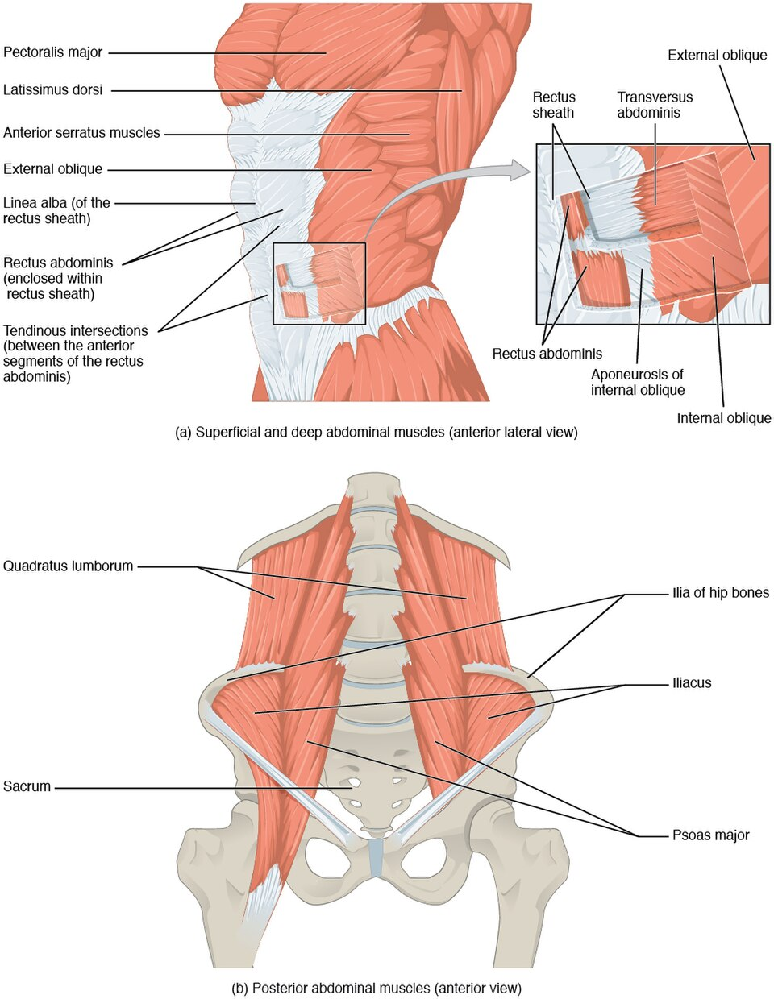
The muscles that breathe
The trunk muscles do the body's quiet, essential work — and none is more essential than breathing. The diaphragm is the primary muscle of respiration: a broad dome of muscle that seals off the bottom of the chest. When it contracts it flattens, enlarging the thoracic cavity, dropping the pressure inside, and pulling air into the lungs. Relax it and the dome springs back up, pushing air out. Helping it are the external intercostals, the muscles between the ribs that lift the rib cage during inhalation; the internal intercostals pull the ribs down for forceful exhalation, such as when you cough or blow out a candle.
The abdominal wall and the back
The front and sides of the belly are wrapped by four flat muscles layered like plywood, with their fibers running in different directions for strength. The rectus abdominis — the “six-pack” — runs straight up the midline and flexes the vertebral column (the motion of a sit-up). Over the sides run the external oblique, the internal oblique, and, deepest of all, the transversus abdominis, whose fibers wrap horizontally like a corset. Together this wall compresses the abdomen, bends and twists the trunk, protects the soft organs behind it, and boosts the pressure needed for coughing, childbirth, and moving the bowels.
Along the back, the erector spinae — a set of three muscle columns running the length of the spine — do the opposite of the abdominals: they extend the vertebral column to straighten you up from a bend and hold you upright against gravity all day long.
| Region | Muscles | Main action |
|---|---|---|
| Breathing | Diaphragm, external & internal intercostals | Change chest volume to move air in and out |
| Abdominal wall | Rectus abdominis, external & internal obliques, transversus abdominis | Flex/rotate trunk, compress and protect abdomen |
| Deep back | Erector spinae group | Extend the spine and maintain upright posture |
| Pelvic floor | Levator ani and companions | Support pelvic organs; control continence |
Tap each trunk muscle in the interactive to see whether it breathes, bends, or protects.
- The diaphragm is the primary breathing muscle; contracting it flattens the dome and pulls air in.
- Four layered abdominal muscles — rectus abdominis plus the two obliques and transversus abdominis — flex and rotate the trunk and protect the viscera.
- The erector spinae extends the spine and holds posture; the diaphragm runs on the phrenic nerve (C3–C5).
Section 5Muscles of the upper limb
Anchoring and moving the shoulder
The upper limb is built for reach and dexterity, and it starts at the shoulder — the most mobile, and therefore least stable, joint in the body. Several large muscles anchor the shoulder blade and swing the arm. The trapezius and serratus anterior hold and rotate the scapula so it can serve as a moving base. The fan-shaped pectoralis major on the chest pulls the arm forward and across the body, while the broad latissimus dorsi on the back pulls it down and behind — the muscle of a swimmer's stroke. Capping the shoulder is the deltoid, the triangular muscle that abducts the arm, lifting it out to the side.
Wrapped deep around the joint itself is the rotator cuff, a set of four small muscles — supraspinatus, infraspinatus, teres minor, and subscapularis (the “SITS” group). They do not generate big movements; their job is to hold the ball of the humerus snugly in its shallow socket while the larger muscles move the arm.
The arm and forearm
The arm proper (shoulder to elbow) hosts the classic agonist/antagonist pair. On the front, the biceps brachii flexes the elbow and turns the palm up (supination), aided beneath it by the brachialis. On the back, the triceps brachii — the only major muscle there — extends the elbow to straighten the arm. Cross the elbow into the forearm and you find two opposing compartments: a group of flexors on the palm side that curl the wrist and fingers, and a group of extensors on the back side that straighten them. Their long tendons run down into the hand, which is why so much of the power for gripping actually comes from muscle bellies up in the forearm.
| Muscle | Location | Main action |
|---|---|---|
| Deltoid | Cap of the shoulder | Abducts the arm |
| Pectoralis major | Anterior chest | Flexes and adducts the arm |
| Latissimus dorsi | Broad of the back | Extends and adducts the arm |
| Rotator cuff (SITS) | Deep around the shoulder | Stabilizes the humeral head |
| Biceps brachii | Anterior arm | Flexes elbow, supinates forearm |
| Triceps brachii | Posterior arm | Extends the elbow |
Tap each muscle in the interactive to find the shoulder, arm, and forearm movers and their pairs.
- The deltoid abducts the arm; pectoralis major and latissimus dorsi pull it forward and back.
- The rotator cuff (SITS) stabilizes the loose shoulder joint; the supraspinatus tears most often.
- At the elbow, biceps brachii flexes and supinates while triceps brachii extends; forearm flexors and extensors move the wrist and fingers by long tendons.
Section 6Muscles of the lower limb
The hip and the buttock
The lower limb carries the whole weight of the body and drives every step, so it holds the largest, strongest muscles you own. At the hip, the gluteus maximus — the bulk of the buttock and the single largest muscle in the body — powerfully extends the hip to drive you up from a squat, up stairs, and into a run. Beneath and to the side sit the gluteus medius and gluteus minimus, which abduct the thigh and, crucially, steady the pelvis every time you stand on one leg to take a step. On the front, the deep iliopsoas is the chief hip flexor, lifting the thigh toward the chest.
The thigh and the leg
The thigh is organized into opposing groups. On the front, the quadriceps femoris — four muscles (rectus femoris and the three vastus muscles) sharing one tendon over the kneecap — extend the knee to straighten the leg for a kick or a step. On the back, the three hamstrings (biceps femoris, semitendinosus, semimembranosus) do the reverse: they flex the knee and help extend the hip. On the inner thigh, the adductors squeeze the legs together.
Below the knee, the calf provides the push-off. The two-headed gastrocnemius and the deeper soleus join into the Achilles (calcaneal) tendon and plantarflex the ankle — they point the toes and lift the heel, launching you into every step and jump. Opposing them on the shin, the tibialis anterior dorsiflexes the ankle, pulling the toes up to clear the ground as your foot swings forward.
| Muscle / group | Location | Main action |
|---|---|---|
| Gluteus maximus | Buttock | Extends the hip (running, stairs) |
| Gluteus medius & minimus | Lateral hip | Abduct thigh; stabilize pelvis when walking |
| Iliopsoas | Deep anterior hip | Flexes the hip |
| Quadriceps femoris | Anterior thigh | Extends the knee |
| Hamstrings | Posterior thigh | Flex the knee, extend the hip |
| Gastrocnemius & soleus | Calf | Plantarflex the ankle (push off) |
| Tibialis anterior | Anterior leg (shin) | Dorsiflexes the ankle |
Tap each muscle in the interactive to trace the movers of the hip, knee, and ankle.
- The gluteus maximus extends the hip; the gluteus medius/minimus abduct the thigh and stabilize the pelvis in walking.
- The quadriceps extend the knee and the hamstrings flex it — a front/back antagonist pair; the iliopsoas flexes the hip.
- The gastrocnemius and soleus plantarflex the ankle through the Achilles tendon; the tibialis anterior dorsiflexes it.
The chapter in one breath
- A skeletal muscle can only pull, so muscles work in opposing pairs across joints, drawing the insertion toward the fixed origin.
- Every movement has an agonist, antagonist, synergist, and fixator, and bones act as levers — most of them third-class levers built for speed and range.
- Muscle names are descriptions coded from six clues: location, shape, size, fiber direction, number of heads, and action.
- The head carries muscles of facial expression (insert into skin, CN VII) and muscles of mastication (move the mandible, CN V).
- The trunk holds the diaphragm and intercostals for breathing, the four-layer abdominal wall, and the erector spinae for posture.
- The upper limb is moved by the deltoid, pectoralis major, latissimus dorsi, the stabilizing rotator cuff (SITS), and the biceps/triceps pair.
- The lower limb's powerhouses are the glutes, the quadriceps and hamstrings, and the calf muscles that plantarflex through the Achilles tendon.
ReferenceWords worth knowing
A quick reference for the terms in this chapter — skim it now, or circle back whenever a word trips you up.
- Abduction
- Movement of a limb away from the midline of the body (the deltoid abducts the arm).
- Adduction
- Movement of a limb toward the midline of the body (the thigh adductors squeeze the legs together).
- Agonist (prime mover)
- The muscle chiefly responsible for producing a particular movement.
- Antagonist
- The muscle that opposes an agonist, relaxing and lengthening while the agonist contracts.
- Aponeurosis
- A broad, flat sheet of connective tissue that attaches a muscle to bone or to another muscle.
- Belly
- The thick, contractile middle portion of a muscle between its origin and insertion.
- Diaphragm
- The dome-shaped primary muscle of breathing that separates the thoracic and abdominal cavities; powered by the phrenic nerve.
- Erector spinae
- The group of deep back muscles that extend the vertebral column and maintain upright posture.
- Fixator
- A muscle that stabilizes the origin (or a nearby joint) so a prime mover can act efficiently.
- Insertion
- The attachment of a muscle on the bone that moves — usually the more distal bone.
- Intercostal muscles
- The muscles between the ribs; externals lift the rib cage to inhale, internals pull it down for forced exhalation.
- Lever
- A rigid bar (a bone) that pivots on a fulcrum (a joint) to move a load; most body levers are third-class.
- Masseter
- A powerful muscle of mastication running from the cheekbone to the angle of the jaw; closes the mandible.
- Mastication
- Chewing — the grinding of food produced by muscles that move the mandible, supplied by the trigeminal nerve (CN V).
- Muscles of facial expression
- Muscles that insert into the skin of the face to create expressions; supplied by the facial nerve (CN VII).
- Origin
- The attachment of a muscle on the bone that stays relatively fixed — usually the more proximal bone.
- Quadriceps femoris
- The four-headed anterior thigh muscle group that extends the knee.
- Rotator cuff
- Four muscles (supraspinatus, infraspinatus, teres minor, subscapularis — “SITS”) that stabilize the shoulder joint.
- Sternocleidomastoid
- A neck muscle connecting the sternum, clavicle, and mastoid process; flexes the neck and rotates the head.
- Synergist
- A muscle that assists an agonist or stabilizes a joint during a movement.
- Tendon
- A tough, cord-like band of dense connective tissue that attaches a muscle to a bone.
Check yourself
The Nervous System & Nervous Tissue
Every thought you have ever had, every muscle you have ever moved, and every sensation you have ever felt was carried by a wave of electricity racing along a living wire. This chapter is the story of that wire — the neuron — and the tissue it lives in. We will map how the whole nervous system is organized, meet the loyal support cells that keep neurons alive, and then get to the heart of the matter: how a neuron builds an electrical charge, fires an action potential, sends it flying down a myelinated axon, and hands the message to the next cell across a microscopic gap. Master these ideas and the rest of neuroscience — the brain, the spinal cord, reflexes, the senses — becomes a set of variations on one theme.
By the end of this chapter you can
- Divide the nervous system into its central and peripheral parts and into its sensory, motor, somatic, and autonomic pathways.
- State the nervous system's three core jobs — sensory input, integration, and motor output — and give an example of each.
- Name the parts of a neuron and the six neuroglia, and say what each glial cell does and where it lives.
- Explain how the resting membrane potential of about −70 mV is created and maintained.
- Walk through the phases of an action potential and explain why it is all-or-nothing and one-way.
- Contrast continuous and saltatory conduction and list the two factors that set conduction speed.
- Describe the steps of chemical synaptic transmission and tell an excitatory signal from an inhibitory one.
- Connect each mechanism to a real clinical picture — multiple sclerosis, local anesthetics, nerve gas, and more.
Section 1How the nervous system is organized

One control center, wires everywhere
The nervous system is the body's fast communication network, and anatomists split it two different ways — by where the parts are and by which direction the traffic flows. By location there are just two divisions. The central nervous system (CNS) is the brain and spinal cord — the headquarters where information is processed and decisions are made. The peripheral nervous system (PNS) is everything else: the nerves and ganglia that fan out from the CNS to reach every corner of the body. Think of the CNS as the computer and the PNS as the cables running to every sensor and every motor.
Three jobs: sense, decide, act
No matter how complicated a nervous pathway looks, it is always doing one of three things. First comes sensory input — receptors detect a change, inside the body or out, and send that news toward the CNS. Second is integration — the CNS processes and interprets the incoming signals and decides what, if anything, to do. Third is motor output — a command travels away from the CNS to an effector (a muscle or a gland) that carries out the response. Touch a hot stove and all three fire in a heartbeat: skin receptors sense heat (input), the spinal cord decides "pull back" (integration), and arm muscles yank the hand away (output).
The words for these directions are worth memorizing because they appear on every diagram. Neurons carrying signals toward the CNS are afferent (sensory); neurons carrying commands away from the CNS are efferent (motor). The efferent side splits again by target. The somatic nervous system carries voluntary commands to skeletal muscle — the movements you choose. The autonomic nervous system (ANS) runs the automatic housekeeping, sending signals to cardiac muscle, smooth muscle, and glands without your conscious say-so. And the ANS itself has two arms that usually oppose each other: the sympathetic division (the "fight-or-flight" accelerator) and the parasympathetic division (the "rest-and-digest" brake).
| Division | What it includes | Direction / job |
|---|---|---|
| Central (CNS) | Brain and spinal cord | Integration — processes input, issues commands |
| Peripheral (PNS) | Nerves and ganglia | Carries signals to and from the CNS |
| Sensory (afferent) | Sensory neurons | Toward the CNS — input |
| Motor (efferent) | Motor neurons | Away from the CNS — output |
| Somatic | Motor neurons to skeletal muscle | Voluntary movement |
| Autonomic (ANS) | Motor neurons to cardiac/smooth muscle & glands | Involuntary control |
| Sympathetic | Thoracolumbar outflow | Fight-or-flight (accelerate) |
| Parasympathetic | Craniosacral outflow | Rest-and-digest (calm) |
Tap through each division — central and peripheral, sensory and motor, somatic and autonomic — in the interactive below.
- By location: the CNS is the brain and spinal cord; the PNS is the nerves and ganglia.
- By function: afferent (sensory) signals arrive at the CNS; efferent (motor) signals exit toward effectors.
- The motor side divides into somatic (voluntary, skeletal muscle) and autonomic (involuntary), and the autonomic into sympathetic and parasympathetic.
- Every nervous act reduces to three steps: sensory input → integration → motor output.
Section 2Neurons and their support crew
The neuron: a cell built to signal
Before we meet the support cells, meet the star. A neuron is an excitable cell shaped for one purpose — to receive a signal at one end and pass it along from the other. Three parts do the work. The dendrites are branching antennae that receive incoming signals. The cell body (or soma) holds the nucleus and does the cell's living and housekeeping; it is also where incoming signals are added up. The axon is a single long fiber that carries the outgoing signal away, often wrapped in a fatty myelin sheath and ending in axon terminals that hand the message to the next cell. Neurons are also amitotic — most cannot divide to replace themselves — which is exactly why damage to the brain and spinal cord is so hard to repair.
The support crew: six kinds of glia
For every neuron there are roughly as many, or more, neuroglia (or glial cells) — the crew that feeds, insulates, cleans, and protects. Glia do not fire action potentials, but without them neurons would starve, short-circuit, and drown in debris. There are six types: four live in the CNS and two in the PNS.
| Glial cell | Where | Job |
|---|---|---|
| Astrocyte | CNS | Most abundant; anchors neurons to blood supply, controls the chemical environment, helps form the blood–brain barrier |
| Oligodendrocyte | CNS | Wraps CNS axons in myelin (one cell myelinates many axons) |
| Microglia | CNS | The brain's immune cells — engulf pathogens and dead cells |
| Ependymal cell | CNS | Line the brain's cavities; circulate cerebrospinal fluid |
| Satellite cell | PNS | Surround and support neuron cell bodies in ganglia |
| Schwann cell | PNS | Wraps PNS axons in myelin (one cell myelinates one segment) |
Two cells make myelin — keep them straight
The two myelinating cells cause endless confusion, so pin them down now. In the CNS, an oligodendrocyte reaches out several arms and myelinates many different axons at once. In the PNS, a Schwann cell wraps itself around a single segment of one axon like a jelly roll. Both make the same fatty insulation, but the difference matters clinically: diseases that attack CNS myelin (multiple sclerosis) and those that attack PNS myelin (Guillain–Barré syndrome) are entirely separate conditions with different courses.
Tap each of the six glial cells to see where it sits and what it does.
- A neuron has three parts: dendrites (receive), cell body/soma (integrate and live), and axon (transmit).
- The six glia: CNS — astrocyte, oligodendrocyte, microglia, ependymal; PNS — satellite, Schwann.
- Oligodendrocytes myelinate many CNS axons; Schwann cells each myelinate one PNS segment.
- Microglia are the CNS's immune cells; astrocytes are the most abundant glia and help form the blood–brain barrier.
Section 3The resting membrane potential
A charged battery, waiting
A neuron at rest is not doing nothing — it is armed. Across its membrane sits a tiny voltage called the resting membrane potential, about −70 mV, meaning the inside of the cell is 70 millivolts negative compared with the outside. A membrane that holds this separation of charge is said to be polarized, like a charged battery ready to be tapped. Everything a neuron does — every signal — is a brief, controlled discharge of that stored charge. So the first question of all neurophysiology is simply: how does the cell build the charge in the first place?
Why the inside is negative
The answer is unequal ion distribution. The cell carefully keeps different ions at different concentrations inside versus outside. Sodium (Na⁺) is piled up outside the cell; potassium (K⁺) is concentrated inside. In addition, the inside is stuffed with large negatively charged proteins and phosphates that are simply too big to leave. Now add the membrane's channels. At rest the membrane is far leakier to potassium than to sodium — there are many more open leak channels for K⁺. So potassium trickles out down its gradient, carrying positive charge with it and leaving the inside more negative. That potassium leak, working against the trapped internal anions, is the main reason the resting voltage lands near −70 mV.
| Ion | Concentrated where | Role at rest |
|---|---|---|
| Sodium (Na⁺) | Outside the cell | Poised to rush in; membrane mostly closed to it at rest |
| Potassium (K⁺) | Inside the cell | Leaks out through many open channels — sets the resting voltage |
| Chloride (Cl⁻) | Outside the cell | Contributes to the negative interior |
| Large anions (proteins) | Trapped inside | Cannot cross — hold negative charge in |
The pump that never sleeps
Leaks would eventually run the gradients down — sodium would trickle in, potassium would drift out, and the battery would go flat. To prevent that, the membrane runs the sodium–potassium pump (Na⁺/K⁺ ATPase) around the clock. Burning ATP for fuel, it pumps 3 Na⁺ out for every 2 K⁺ in, restoring both gradients continuously. Because it moves three positives out for every two brought in, the pump also removes a little net positive charge, nudging the interior slightly more negative. This pump is so essential that it consumes a large share of the body's resting energy budget — a big reason the brain is such a hungry organ.
Explore the ion gradients, the leak channels, and the tireless pump in the interactive below.
- The resting membrane potential is about −70 mV, inside negative — the membrane is polarized.
- It arises from unequal ion distribution: Na⁺ high outside, K⁺ high inside, large anions trapped inside.
- Potassium leaking out through open channels is the main setter of the resting voltage.
- The Na⁺/K⁺ pump (3 out, 2 in, using ATP) maintains the gradients and adds a small negative bias.
Section 4The action potential
All or nothing
An action potential is the neuron's signal — a brief, dramatic reversal of the membrane voltage that shoots down the axon. It does not happen unless the membrane is pushed from its resting −70 mV up to a critical threshold of about −55 mV. Below threshold, nothing fires. Reach threshold and a full-sized spike goes off every time — the same height whether the stimulus was barely enough or enormous. This is the famous all-or-nothing law: a neuron cannot fire a partial action potential any more than a gun can fire a partial bullet. Strength is coded not by bigger spikes but by how often the neuron fires.
The upstroke: sodium floods in
The whole event is run by voltage-gated channels — ion gates that open in response to voltage. When threshold is reached, voltage-gated Na⁺ channels snap open and sodium, which was piled up outside and pulled inward by both its concentration gradient and the negative interior, floods in. Each entering positive charge makes the inside less negative, which opens still more sodium gates — a fast, self-amplifying rush called depolarization that drives the voltage from −55 all the way up to about +30 mV. For an instant, the inside of the cell is actually positive.
The downstroke and the reset
The spike ends as fast as it began. At the peak the Na⁺ channels inactivate (they auto-close), and now the slower voltage-gated K⁺ channels finish opening. Potassium rushes out, carrying positive charge away and dropping the voltage back down — this is repolarization. The potassium gates are sluggish to close, so a little too much K⁺ leaves and the membrane briefly dips below rest to about −80 mV, a hyperpolarization or undershoot. Finally the leak channels and the Na⁺/K⁺ pump restore the tidy −70 mV. During the recovery there is a refractory period when the axon either cannot fire at all (absolute) or needs an unusually strong stimulus (relative).
| Phase | What the channels do | Voltage |
|---|---|---|
| Resting | Only leak channels open | −70 mV |
| Threshold | Enough Na⁺ gates begin to open | −55 mV |
| Depolarization | Voltage-gated Na⁺ channels open; Na⁺ rushes in | rising to +30 mV |
| Repolarization | Na⁺ channels inactivate; K⁺ channels open, K⁺ exits | falling back down |
| Hyperpolarization | K⁺ channels close slowly — slight overshoot | ~−80 mV |
| Return to rest | Leak channels + Na⁺/K⁺ pump restore balance | −70 mV |
Hit "Stimulate" and follow the voltage through every phase in the interactive below.
- An action potential fires only if the membrane reaches threshold (~−55 mV), and then it is all-or-nothing.
- Depolarization = voltage-gated Na⁺ channels open, Na⁺ floods in, voltage climbs to ~+30 mV.
- Repolarization = Na⁺ channels inactivate and K⁺ channels open, K⁺ exits, voltage falls; a brief hyperpolarization follows.
- The refractory period keeps the signal moving one way and limits firing rate; stimulus strength is coded by frequency.
Section 5Saltatory conduction & speed

Crawling versus leaping
Once an action potential is born, it has to travel the length of the axon, and there are two ways to do that. On a bare, unmyelinated axon the spike regenerates itself at every adjacent patch of membrane, marching along step by step — continuous conduction. It works, but it is slow. On a myelinated axon the fatty sheath insulates long stretches so the current cannot leak out there; the action potential can only regenerate at the bare gaps between myelin segments. So the signal appears to jump from gap to gap, skipping the insulated lengths in between. This leaping is saltatory conduction, from the Latin saltare, "to leap," and it is dramatically faster.
Nodes of Ranvier
The bare gaps have a name worth knowing: the nodes of Ranvier. These little exposed rings are packed with voltage-gated sodium channels, so the action potential is regenerated fresh and full-strength at each node. Between the nodes, the insulated segment (the internode) carries the current quickly and passively, with no channels to slow it down. The result is that the impulse effectively hops from node to node — regenerate, glide, regenerate, glide — covering far more ground per unit time than a continuous crawl.
What sets conduction speed
Two features determine how fast a fiber conducts. The first is myelination: a myelinated axon massively outpaces an unmyelinated one of the same size. The second is axon diameter: fatter axons conduct faster because they offer less resistance to current, the same way a wide pipe moves water faster than a narrow one. The body uses both dials deliberately — the large, heavily myelinated fibers that carry reflexes and limb-position sense can conduct at speeds over 100 meters per second, while the thin, unmyelinated fibers that carry dull, aching pain crawl along at barely one. (Sharp, localized pain travels on thinner myelinated fibers — faster than the dull, unmyelinated kind, but far short of that top speed.)
| Factor | Faster conduction | Slower conduction |
|---|---|---|
| Myelin | Myelinated (saltatory) | Unmyelinated (continuous) |
| Axon diameter | Large diameter | Small diameter |
| Typical role | Reflexes, sharp/localized pain, position | Dull aching pain, temperature, autonomic |
Race a myelinated signal against an unmyelinated one and watch it leap the nodes in the interactive below.
- Continuous conduction regenerates the spike at every patch (slow, unmyelinated); saltatory conduction leaps between gaps (fast, myelinated).
- The bare gaps are the nodes of Ranvier, packed with Na⁺ channels; the insulated internodes carry current passively.
- Speed rises with myelination and with axon diameter.
- Demyelinating disease (MS in the CNS, Guillain–Barré in the PNS) slows or blocks conduction.
Section 6The synapse: passing the message on
Neurons don't quite touch
When an action potential reaches the end of an axon, it faces a problem: the next cell is not connected to it. There is a microscopic gap in between called the synaptic cleft, and the junction as a whole is the synapse. The neuron sending the message is presynaptic; the cell receiving it is postsynaptic. Because the electrical signal cannot jump the gap on its own, most synapses convert it into a chemical messenger — a neurotransmitter — that drifts across and re-creates the signal on the far side. Electrical, then chemical, then electrical again.
Six steps across the gap
Chemical transmission always follows the same choreography. (1) The action potential arrives at the presynaptic axon terminal. (2) Its voltage opens voltage-gated calcium (Ca²⁺) channels, and calcium flows into the terminal. (3) Calcium triggers tiny sacs called synaptic vesicles to fuse with the membrane and dump their contents. (4) Neurotransmitter is released by exocytosis and diffuses across the cleft. (5) It binds receptors on the postsynaptic membrane, opening ion channels that create a small graded potential. (6) The neurotransmitter is quickly cleared — broken down by enzymes, taken back up (reuptake), or diffused away — so the signal is crisp and brief.
Excitatory or inhibitory?
What the postsynaptic cell does next depends entirely on which neurotransmitter and receptor are involved. An excitatory signal depolarizes the postsynaptic membrane, nudging it toward threshold — an excitatory postsynaptic potential (EPSP). An inhibitory signal hyperpolarizes it, pushing it away from threshold — an inhibitory postsynaptic potential (IPSP). A single neuron receives thousands of these at once and sums them; only if the excitation outweighs the inhibition enough to reach threshold does it fire. The synapse, in other words, is where the nervous system actually makes decisions.
| Neurotransmitter | Typical effect | Where / note |
|---|---|---|
| Acetylcholine (ACh) | Excites skeletal muscle | Neuromuscular junction; broken down by acetylcholinesterase |
| Glutamate | Excitatory | The main excitatory transmitter of the CNS |
| GABA | Inhibitory | The main inhibitory transmitter of the CNS |
| Glycine | Inhibitory | Common in the spinal cord |
| Norepinephrine | Excites or inhibits | Sympathetic (fight-or-flight), mood, arousal |
| Dopamine | Modulatory | Reward, movement; disrupted in Parkinson disease |
Step through the electrical-to-chemical-to-electrical handoff in the interactive below.
- Neurons meet at a synapse across the synaptic cleft; the sender is presynaptic, the receiver postsynaptic.
- Transmission: AP arrives → Ca²⁺ enters → vesicles fuse → neurotransmitter released → binds receptors → cleared.
- An EPSP pushes the postsynaptic cell toward threshold; an IPSP pushes it away; the cell sums them to decide whether to fire.
- Key transmitters: ACh (muscle), glutamate (main excitatory), GABA (main inhibitory); the synapse is where most drugs act.
The chapter in one breath
- The nervous system splits into the CNS (brain and spinal cord) and PNS (nerves and ganglia), and its work is always sensory input → integration → motor output.
- Motor pathways divide into somatic (voluntary) and autonomic (involuntary, split into sympathetic and parasympathetic); afferent arrives, efferent exits.
- A neuron (dendrites, soma, axon) is supported by six neuroglia — astrocyte, oligodendrocyte, microglia, ependymal (CNS) and satellite, Schwann (PNS).
- At rest the membrane is polarized to ~−70 mV, set by K⁺ leaking out and trapped internal anions, and maintained by the Na⁺/K⁺ pump.
- Reaching threshold (~−55 mV) fires an all-or-nothing action potential: Na⁺ in (depolarize) then K⁺ out (repolarize), with a refractory period.
- Myelin lets the impulse leap node to node — saltatory conduction — and speed rises with myelination and diameter.
- At the synapse, the signal crosses as a neurotransmitter; the postsynaptic cell sums EPSPs and IPSPs to decide whether to fire.
ReferenceWords worth knowing
A quick reference for the terms in this chapter — skim it now, or circle back whenever a word trips you up.
- Action potential
- A brief, all-or-nothing reversal of membrane voltage that travels down an axon; the neuron's electrical signal.
- Afferent (sensory) neuron
- A neuron that carries signals toward the central nervous system (afferent arrives).
- All-or-nothing
- The principle that a neuron either fires a full-sized action potential or none at all; stimulus strength is coded by firing frequency.
- Astrocyte
- The most abundant CNS glial cell; anchors neurons to blood vessels, regulates the chemical environment, and helps form the blood–brain barrier.
- Autonomic nervous system
- The involuntary motor division controlling cardiac muscle, smooth muscle, and glands; split into sympathetic and parasympathetic arms.
- Axon
- The single long fiber of a neuron that carries the action potential away from the cell body.
- Depolarization
- A shift of the membrane voltage toward positive (less negative), driven mainly by Na⁺ entering the cell.
- Efferent (motor) neuron
- A neuron that carries commands away from the central nervous system to an effector (efferent exits).
- Myelin sheath
- Fatty insulation wrapped around an axon (by oligodendrocytes in the CNS, Schwann cells in the PNS) that speeds conduction.
- Neuroglia
- The support cells of nervous tissue that feed, insulate, clean, and protect neurons; six types across the CNS and PNS.
- Neuron
- The excitable signaling cell of the nervous system, with dendrites (receive), a cell body (integrate), and an axon (transmit).
- Neurotransmitter
- A chemical messenger released across a synapse to relay a signal to the next cell.
- Node of Ranvier
- A bare gap between myelin segments, rich in Na⁺ channels, where an action potential is regenerated during saltatory conduction.
- Refractory period
- The brief interval after a spike when a region of membrane cannot fire again (absolute) or needs a stronger stimulus (relative), forcing one-way conduction.
- Repolarization
- The return of membrane voltage toward its negative resting value, driven mainly by K⁺ leaving the cell.
- Resting membrane potential
- The voltage (~−70 mV, inside negative) across a resting neuron's membrane, set by ion gradients and K⁺ leak.
- Saltatory conduction
- Fast impulse transmission along a myelinated axon in which the signal leaps from node to node.
- Schwann cell
- The PNS glial cell that wraps a single axon segment in myelin.
- Sodium–potassium pump
- An ATP-powered membrane transporter that moves 3 Na⁺ out and 2 K⁺ in, maintaining the ion gradients.
- Synapse
- The junction where one neuron communicates with another cell across the synaptic cleft.
- Threshold
- The membrane voltage (~−55 mV) that must be reached to trigger an action potential.
Check yourself
Anatomy of the Nervous System
Tucked inside the vault of your skull sits the most complicated object we know of in the universe — about three pounds of tissue that lets you read this sentence, remember your childhood, and pull your hand off a hot stove before you even feel the burn. This chapter is a guided tour of that hardware. We will walk the wrinkled surface of the cerebrum, drop down through its inner regions to the life-support brainstem, float in the cerebrospinal fluid that cushions it all, peel back the three protective meninges, follow the spinal cord down its bony canal, and finish by counting off the twelve cranial nerves that leave the brain directly. By the end you will be able to hold a whole brain in your mind's eye and name what you are looking at.
By the end of this chapter you can
- Identify the four lobes of the cerebrum, name the skull bone each lies under, and match each lobe to its main jobs.
- Locate the primary motor and primary somatosensory cortices and the central sulcus that separates them.
- Divide the brain into its four major regions — cerebrum, diencephalon, brainstem, and cerebellum — and state what each does.
- Trace the flow of cerebrospinal fluid through the four ventricles and out into the subarachnoid space, and explain its three functions.
- Name the three meninges in order, describe the spaces between them, and connect each to a clinical emergency.
- Read a cross-section of the spinal cord — gray horns, white columns, dorsal and ventral roots — and explain the one-way traffic rule.
- List the twelve cranial nerves in order, classify each as sensory, motor, or mixed, and give its main function.
Section 1The cerebral lobes

A wrinkled sheet of gray matter
The part of the brain you picture when you hear the word — that pale, deeply folded dome — is the cerebrum, the largest region and the seat of everything we call thought. Its outer shell, only a few millimeters thick, is the cerebral cortex: a sheet of gray matter packed with billions of neuron cell bodies. Underneath the cortex lies white matter, the myelinated axons that wire one region to another. The famous wrinkles are not decoration. Each ridge is a gyrus and each groove a sulcus (a deep one is a fissure), and folding the sheet this way lets an enormous area of cortex fit inside a skull — roughly two-thirds of it is hidden down in the sulci. More cortex means more processing power, which is why the brains of intelligent animals are so heavily folded.
Four lobes, four skull bones
The cortex of each cerebral hemisphere is divided into four lobes, and nature made them easy to name: each lobe is called after the skull bone lying directly over it. Two landmark grooves mark the borders. The central sulcus runs down across the top of the brain and separates the frontal lobe in front from the parietal lobe behind it. The deep lateral sulcus (Sylvian fissure) runs along the side and marks off the temporal lobe below. At the very back sits the occipital lobe. A fifth region, the insula, is buried deep inside the lateral sulcus and is often counted as a hidden fifth lobe.
The two hemispheres are not identical twins working in lockstep — they show lateralization, a division of labor in which one side tends to lead on certain tasks (language usually on the left, spatial and musical processing often on the right). They stay in constant conversation through a thick bridge of white matter called the corpus callosum, which carries hundreds of millions of axons from one hemisphere to the other.
Who does what
Each lobe has its own specialties, and a handful of cortical areas are worth memorizing because damage to them produces classic, testable deficits. The strip of cortex just in front of the central sulcus — the precentral gyrus — is the primary motor cortex, which issues the commands for voluntary movement. The strip just behind the central sulcus — the postcentral gyrus — is the primary somatosensory cortex, which receives touch, pressure, and temperature from the whole body. In each of these strips the body is mapped out upside-down and out of proportion, with huge territory given to the hands and face.
| Lobe | Sits under | Main jobs |
|---|---|---|
| Frontal | Frontal bone | Voluntary movement (primary motor cortex), planning, judgment, personality, and speech production (Broca’s area) |
| Parietal | Parietal bone | Touch, pressure, pain, and temperature (primary somatosensory cortex); spatial awareness |
| Temporal | Temporal bone | Hearing, smell, memory, and language comprehension (Wernicke’s area) |
| Occipital | Occipital bone | Vision — the primary visual cortex |
Tap through the lobes and watch each one light up in the interactive below.
- The cerebral cortex is a folded sheet of gray matter; gyri (ridges) and sulci (grooves) pack more surface into the skull.
- Four lobes — frontal, parietal, temporal, occipital — each named for the overlying skull bone.
- The central sulcus separates the motor cortex (precentral, in front) from the somatosensory cortex (postcentral, behind).
- The corpus callosum connects the two hemispheres, which show lateralization of function.
Section 2The major brain regions

Slice it down the middle
The lobes are only the outer story. To see how the whole brain is built, imagine cutting it exactly down the midline — a midsagittal section — and looking at the cut face. Four major regions appear, stacked from the thinking machinery on top to the life-support wiring below: the cerebrum, the diencephalon, the brainstem, and the cerebellum. As a rough rule, the higher a structure sits, the more “human” and deliberate its job; the lower it sits, the more ancient and automatic. You can lose a good deal of cerebrum and still live, but a tiny stroke in the brainstem can be fatal.
The diencephalon: the brain’s relay and thermostat
Buried beneath the cerebrum, wrapped around the third ventricle, is the diencephalon, a small but critical hub with two stars. The thalamus is the grand central station of the brain: nearly every sensory signal on its way to the cortex — sight, sound, touch, taste — stops here first to be sorted and forwarded. (Smell is the one sense that skips it.) Below and in front sits the hypothalamus, a structure the size of an almond that runs an astonishing amount of homeostasis: body temperature, hunger and thirst, the sleep–wake cycle, and the whole hormonal output of the pituitary gland dangling beneath it. The hypothalamus is where the nervous system and the endocrine system shake hands.
The brainstem and the cerebellum
The brainstem connects the brain to the spinal cord and, region for region, is the most vital tissue you own. From top to bottom it is the midbrain, the pons, and the medulla oblongata. The medulla contains the reflex centers that set your heart rate, blood pressure, and breathing rhythm — jobs you never think about but cannot live without. Every one of the twelve cranial nerves except the first two attaches to the brainstem. Behind the brainstem, tucked under the occipital lobe, is the cerebellum (“little brain”), a densely folded structure that fine-tunes movement, coordinates balance, and keeps your motions smooth. It does not start a movement; it edits one, which is why cerebellar damage makes a person clumsy and unsteady rather than paralyzed.
| Region | Key parts | Main job |
|---|---|---|
| Cerebrum | Two hemispheres, cortex, corpus callosum | Thought, sensation, voluntary movement, memory, language |
| Diencephalon | Thalamus, hypothalamus, epithalamus | Sensory relay (thalamus); homeostasis and hormones (hypothalamus) |
| Brainstem | Midbrain, pons, medulla oblongata | Vital reflexes (heartbeat, breathing), cranial-nerve hub, brain–cord highway |
| Cerebellum | Two hemispheres, folia, vermis | Coordination, balance, smooth and precise movement |
Cut the brain down the middle and tap each region in the interactive below.
- Four major regions: cerebrum, diencephalon, brainstem, cerebellum — higher means more deliberate, lower means more automatic.
- The thalamus relays almost all sensory input to the cortex; the hypothalamus runs homeostasis and the pituitary.
- The brainstem (midbrain, pons, medulla) controls vital reflexes and anchors most cranial nerves.
- The cerebellum coordinates and smooths movement and balance — it edits motion, it does not command it.
Section 3Ventricles & cerebrospinal fluid
A brain that floats
The brain is not packed solid. Running through its core is a set of connected hollow chambers, the ventricles, and the whole organ is bathed inside and out in a clear liquid called cerebrospinal fluid, or CSF. There are four ventricles: a pair of large, C-shaped lateral ventricles (one in each cerebral hemisphere), a slit-like third ventricle in the middle of the diencephalon, and a diamond-shaped fourth ventricle between the brainstem and the cerebellum. CSF is produced by the choroid plexus, a lacework of capillaries lining the ventricles that filters plasma from the blood at a rate of about 500 mL a day, keeping the total volume around 150 mL by constantly draining and replacing it several times over.
Following the flow
CSF is not a stagnant pool; it circulates on a one-way path from the top of the ventricles down and out around the brain and cord. Trace it once and it sticks: fluid made in the lateral ventricles passes through the interventricular foramina into the third ventricle, then down the narrow cerebral aqueduct into the fourth ventricle. From there it escapes through three small openings into the subarachnoid space that surrounds the entire brain and spinal cord, giving the whole central nervous system a liquid cushion. Finally, it is reabsorbed into the blood through cauliflower-like arachnoid granulations that poke up into the large veins draining the brain, completing the loop back into the circulation.
| Step | Structure | What happens |
|---|---|---|
| 1 | Choroid plexus (lateral ventricles) | CSF is made from filtered blood plasma |
| 2 | Interventricular foramina | Fluid passes into the third ventricle |
| 3 | Cerebral aqueduct | Fluid descends to the fourth ventricle |
| 4 | Apertures → subarachnoid space | Fluid bathes the brain and spinal cord |
| 5 | Arachnoid granulations | Fluid is reabsorbed into venous blood |
Why the fluid matters
CSF does three jobs. First, buoyancy: the brain effectively floats, so that an organ weighing about 1,400 g presses down with an effective weight of only around 50 g — without this, the brain would crush its own base under its weight. Second, protection: the liquid layer absorbs shocks, letting the brain bob rather than slam against the skull during a jolt. Third, chemical stability: CSF carries nutrients in and washes wastes out, and it helps maintain the precise ionic environment neurons need to fire.
Watch the fluid circulate and tap each chamber in the interactive below.
- Four ventricles — two lateral, the third, and the fourth — are hollow chambers filled with CSF.
- CSF is made by the choroid plexus and flows lateral → third → fourth ventricle → subarachnoid space → venous blood.
- CSF provides buoyancy, shock protection, and chemical stability for the brain and cord.
- Blocked circulation causes hydrocephalus — swollen ventricles and rising pressure.
Section 4The meninges

Three coats around the cord
The brain and spinal cord are far too precious to leave bare against bone, so they are wrapped in three connective-tissue membranes called the meninges. From the outside in, they are the dura mater, the arachnoid mater, and the pia mater — a sequence worth memorizing in order, because the spaces between them are where the important clinical drama happens. The Latin names describe them: dura mater means “tough mother,” and pia mater means “tender mother.”
From tough to tender
The dura mater is the outermost layer: thick, leathery, and strong. Around the brain it has two sublayers, and where they separate they form the dural venous sinuses that drain blood from the brain, and inward folds like the falx cerebri that dip between the hemispheres to hold the brain steady. Beneath the dura lies the arachnoid mater, a delicate, web-like layer — its name comes from the Greek for spider, because fine threads called arachnoid trabeculae span the gap beneath it. That gap, the subarachnoid space, is filled with the CSF from the last section. Finally, the pia mater is a microscopically thin, richly vascular film that clings to every gyrus and sulcus of the brain like shrink-wrap, following the surface into its every fold.
| Layer | Character | Space / feature |
|---|---|---|
| Dura mater | Tough, leathery outer coat | Forms dural venous sinuses; epidural space lies outside it |
| Arachnoid mater | Thin, web-like middle layer | Subdural space above, subarachnoid space (CSF) below |
| Pia mater | Delicate, vascular inner film | Adheres directly to the brain and cord surface |
Peel back the layers one at a time in the interactive below.
- Three meninges, outside in: dura mater (tough), arachnoid mater (web-like), pia mater (delicate).
- The subarachnoid space, beneath the arachnoid, holds circulating CSF.
- The pia mater follows every fold of the brain; the dura forms venous sinuses and stabilizing folds like the falx cerebri.
- The spaces define the bleeds: epidural (arterial, lens-shaped) vs subdural (venous, crescent-shaped); infection of the meninges is meningitis.
Section 5The spinal cord
A cable and a switchboard
The spinal cord is the great communication cable of the body, running from the base of the brainstem down through the protective canal of the vertebral column to about the level of the first or second lumbar vertebra (L1–L2). Below that point it frays into a spray of nerve roots called the cauda equina (“horse’s tail”). The cord does two things at once: it carries traffic up and down between the body and the brain, and it acts as its own local switchboard, handling reflexes without waiting for the brain to weigh in.
Reading a slice
Cut the cord across and the anatomy is beautifully organized. In the center is a butterfly- or H-shaped region of gray matter — neuron cell bodies — surrounded by white matter, the myelinated tracts. This is the reverse of the brain, where gray is on the outside. The gray matter has wings called horns: the dorsal (posterior) horns handle incoming sensory information, the ventral (anterior) horns send out motor commands, and small lateral horns in the trunk region house autonomic neurons. A tiny central canal runs down the middle, filled with CSF.
One-way traffic at the roots
Where each spinal nerve joins the cord it splits into two roots, and they obey a strict traffic rule. The dorsal root carries sensory signals into the cord, and it bears a visible bulge, the dorsal root ganglion, where the sensory neuron cell bodies sit. The ventral root carries motor signals out to muscles and glands. Just beyond the cord the two roots merge into a single mixed spinal nerve — and there are 31 pairs of them. The white matter between is organized into columns of ascending (sensory) and descending (motor) tracts, the express lanes carrying information the length of the cord.
| Structure | Type | Function |
|---|---|---|
| Dorsal (posterior) horn | Gray matter | Receives sensory input |
| Ventral (anterior) horn | Gray matter | Sends motor output to muscles |
| Dorsal root (with ganglion) | Sensory | Carries sensation into the cord |
| Ventral root | Motor | Carries commands out of the cord |
| White columns / tracts | White matter | Ascending (sensory) and descending (motor) highways |
Slice the cord and tap each part in the interactive below.
- The cord runs to about L1–L2, then continues as the nerve roots of the cauda equina; 31 pairs of spinal nerves branch off.
- In cross-section, central gray matter (horns) is surrounded by white matter (tracts) — the opposite arrangement to the brain.
- Dorsal horns/roots = sensory in; ventral horns/roots = motor out (the Bell–Magendie rule).
- The dorsal root ganglion holds sensory cell bodies; a lumbar puncture is done below the cord for safety.
Section 6The cranial nerves

Twelve nerves straight from the brain
Most nerves branch off the spinal cord, but a special set of twelve pairs emerges directly from the brain itself: the cranial nerves. They are numbered with Roman numerals I through XII, from front to back, in the order their roots appear along the underside of the brain. The first two — olfactory and optic — grow out of the cerebrum and diencephalon; the remaining ten sprout from the brainstem. Together they handle the special senses of the head, move the eyes and face and tongue, and — in the case of one wandering nerve — reach all the way down into the chest and abdomen.
Sensory, motor, or both
Each cranial nerve is classified by the kind of traffic it carries. Some are purely sensory (they bring information in), some are purely motor (they send commands out), and some are mixed, doing both. A time-honored mnemonic captures the pattern — “Some Say Marry Money, But My Brother Says Big Brains Matter Most” — where the first letter of each word (S, S, M, M, B, M, B, S, B, B, M, M) tells you whether nerve I through XII is Sensory, Motor, or Both. For the names themselves, generations of students have used “On Old Olympus’ Towering Tops, A Finn And German Viewed Some Hops.”
| # | Name | Type | Main function |
|---|---|---|---|
| I | Olfactory | Sensory | Smell |
| II | Optic | Sensory | Vision |
| III | Oculomotor | Motor | Most eye movements; pupil constriction; raises the eyelid |
| IV | Trochlear | Motor | Moves the eye (superior oblique muscle) |
| V | Trigeminal | Both | Facial sensation; chewing muscles |
| VI | Abducens | Motor | Moves the eye laterally (lateral rectus) |
| VII | Facial | Both | Facial expression; taste (front tongue); tears and saliva |
| VIII | Vestibulocochlear | Sensory | Hearing and balance |
| IX | Glossopharyngeal | Both | Taste (back tongue); swallowing; saliva |
| X | Vagus | Both | Parasympathetic control of heart, lungs, and gut |
| XI | Accessory | Motor | Moves the neck and shoulders (sternocleidomastoid, trapezius) |
| XII | Hypoglossal | Motor | Moves the tongue |
The wandering nerve
One cranial nerve deserves a special note. The vagus nerve (X) is the odd one out: while every other cranial nerve stays in the head and neck, the vagus — its name literally means “wanderer” — travels down into the thorax and abdomen. It is the great parasympathetic highway, slowing the heart, driving digestion, and monitoring the internal organs. When you hear about the “rest-and-digest” response, you are hearing about the vagus at work.
Number off each nerve and tap it in the interactive below.
- Twelve pairs of cranial nerves, numbered I–XII front to back; all but the first two arise from the brainstem.
- Each is sensory, motor, or mixed — the mnemonic “Some Say Marry Money…” gives the pattern.
- Several move the eye (III, IV, VI); others carry special senses (I smell, II vision, VIII hearing/balance).
- The vagus (X) is the only cranial nerve to leave the head and neck, carrying most parasympathetic output to the organs.
The chapter in one breath
- The cerebrum is a folded sheet of cortical gray matter split into four lobes — frontal, parietal, temporal, occipital — each under its namesake skull bone.
- The central sulcus divides the motor cortex (front) from the somatosensory cortex (back); the corpus callosum links the hemispheres.
- Four brain regions stack from thinking to survival: cerebrum → diencephalon → brainstem → cerebellum, with the medulla running vital reflexes.
- Cerebrospinal fluid made by the choroid plexus flows through four ventricles into the subarachnoid space, giving the brain buoyancy, protection, and chemical stability.
- Three meninges — dura, arachnoid, pia — wrap the CNS; the spaces between them define epidural, subdural, and subarachnoid bleeds.
- The spinal cord holds central gray horns inside white tracts; sensation enters the dorsal root, motor leaves the ventral root.
- Twelve cranial nerves (I–XII) serve the head and neck — each sensory, motor, or mixed — and the vagus alone reaches the chest and abdomen.
ReferenceWords worth knowing
A quick reference for the terms in this chapter — skim it now, or circle back whenever a word trips you up.
- Arachnoid mater
- The web-like middle meningeal layer; beneath it, the subarachnoid space holds circulating cerebrospinal fluid.
- Brainstem
- The stalk connecting brain to spinal cord — midbrain, pons, and medulla oblongata — housing vital reflex centers and most cranial nerves.
- Central sulcus
- The groove separating the frontal lobe (and its motor cortex) from the parietal lobe (and its somatosensory cortex).
- Cerebellum
- The “little brain” behind the brainstem that coordinates balance and smooths voluntary movement.
- Cerebral cortex
- The thin outer sheet of gray matter covering the cerebrum, where higher thought, sensation, and voluntary movement are processed.
- Cerebrospinal fluid (CSF)
- The clear liquid made by the choroid plexus that fills the ventricles and subarachnoid space, cushioning and nourishing the CNS.
- Choroid plexus
- The capillary network lining the ventricles that filters blood plasma to produce cerebrospinal fluid.
- Corpus callosum
- The thick band of white matter carrying axons between the two cerebral hemispheres.
- Cranial nerves
- The twelve pairs of nerves (I–XII) emerging directly from the brain to serve the head, neck, and (via the vagus) the internal organs.
- Diencephalon
- The central brain region containing the thalamus and hypothalamus, wrapped around the third ventricle.
- Dorsal root ganglion
- The swelling on a spinal nerve’s dorsal root that houses the cell bodies of sensory neurons.
- Dura mater
- The tough, leathery outermost meningeal layer; it forms the dural venous sinuses and folds like the falx cerebri.
- Gyrus
- A raised ridge on the surface of the cerebral cortex (plural, gyri).
- Hypothalamus
- The diencephalon structure that regulates temperature, hunger, thirst, sleep, and hormone release, linking the nervous and endocrine systems.
- Medulla oblongata
- The lowest part of the brainstem, containing the reflex centers for heart rate, blood pressure, and breathing.
- Meninges
- The three connective-tissue membranes — dura, arachnoid, and pia mater — that wrap the brain and spinal cord.
- Pia mater
- The delicate, vascular innermost meningeal layer that clings directly to the surface of the brain and cord.
- Sulcus
- A shallow groove between the ridges of the cerebral cortex (plural, sulci); a deep one is a fissure.
- Thalamus
- The paired diencephalon relay station that sorts and forwards nearly all sensory input on its way to the cortex.
- Vagus nerve
- Cranial nerve X, the only cranial nerve to extend beyond the head and neck, carrying most parasympathetic output to the heart, lungs, and gut.
- Ventricles
- The four interconnected fluid-filled chambers within the brain — two lateral, third, and fourth — that make and circulate CSF.
Check yourself
The Somatic Nervous System
The somatic nervous system is the part of you that deals with the outside world — it carries sensation in and sends voluntary commands to your skeletal muscles out. This chapter follows that two-way traffic from beginning to end. We start where every sensation is born: at the receptors in your skin, then move up through the great special senses — the eye and its visual pathway, the ear that hears and balances you, and the chemical senses of taste and smell. Finally we close the loop with the fastest circuit in the body, the reflex arc, where a signal comes in and a muscle answers before your brain has even been told. By the end you will be able to trace a stimulus from the world all the way to a response.
By the end of this chapter you can
- Distinguish general from special senses and classify sensory receptors by the stimulus they detect (mechano-, thermo-, noci-, chemo-, photoreceptors).
- Name the cutaneous receptors for light touch, deep pressure, temperature, and pain, and explain sensory adaptation.
- Identify the three tunics of the eye and trace the path of light to the retina, explaining refraction and accommodation.
- Follow the visual pathway from photoreceptor through the optic chiasm to the visual cortex, and predict the field defect from a given lesion.
- Describe the outer, middle, and inner ear and explain how the organ of Corti turns a sound wave into a nerve signal.
- Explain how taste and smell detect chemicals, and why smell is uniquely tied to memory and emotion.
- List the five parts of a reflex arc and contrast a monosynaptic stretch reflex with a polysynaptic withdrawal reflex.
Section 1How sensation begins: the receptors

Two families of senses
Every experience of the world begins with a sensory receptor — a specialized nerve ending that converts some form of energy into an electrical signal the nervous system can read. That conversion is called transduction, and it is the first step in all sensation. We sort the senses into two families. The general senses — touch, pressure, vibration, temperature, pain, and the body’s own position sense (proprioception) — are spread all over the body in the skin, muscles, joints, and organs. The special senses — vision, hearing, balance, taste, and smell — are concentrated in complex organs in the head, and they fill the rest of this chapter.
Receptors are named for what they detect
The simplest way to organize the dozens of receptor types is by the kind of stimulus each one responds to. Learn these five categories and you can place almost any receptor in the body:
| Receptor type | Responds to | Example |
|---|---|---|
| Mechanoreceptor | Physical deformation — touch, pressure, stretch, vibration, sound | Tactile corpuscles; hair cells of the ear |
| Thermoreceptor | Temperature and changes in it | Warm and cold free nerve endings in skin |
| Nociceptor | Tissue damage — the pain receptors | Free nerve endings that signal cuts, burns, inflammation |
| Chemoreceptor | Chemicals dissolved or airborne | Taste and smell receptors; blood O₂/CO₂ sensors |
| Photoreceptor | Light | Rods and cones of the retina |
The touch receptors of the skin
The skin alone holds a remarkable variety of endings, each tuned to a slightly different feeling. Free nerve endings are the simplest — bare fibers that report pain, temperature, and crude touch. Tactile (Merkel) discs sit just under the surface and read fine texture and edges. Tactile (Meissner’s) corpuscles — the egg-shaped structure in the reference figure — nestle in the dermal papillae of hairless skin such as the fingertips and lips, where they sense light touch and delicate, low-frequency vibration. Deeper down, the large, onion-layered lamellated (Pacinian) corpuscles answer to deep pressure and buzzing, high-frequency vibration, while bulbous (Ruffini) corpuscles register skin stretch and steady pressure.
Notice how density decides sensitivity. Your fingertips are crowded with receptors, each with a tiny receptive field, so you can feel two close points as separate — that is why you read Braille with a fingertip, not an elbow. Another key property is adaptation: many receptors are phasic (fast-adapting), firing hard when a stimulus starts or stops but going quiet if it holds steady. That is why you stop noticing the shirt on your back seconds after you put it on.
Find and identify each of the skin’s receptors in the interactive below.
- Transduction converts a stimulus into a nerve signal; general senses are body-wide, special senses live in head organs.
- Receptors are classed by stimulus: mechano-, thermo-, noci-, chemo-, and photoreceptors.
- Skin touch runs from free nerve endings and Merkel discs to Meissner’s (light touch), Pacinian (deep pressure/vibration), and Ruffini (stretch) corpuscles.
- Phasic receptors adapt to a steady stimulus; nociceptors (pain) barely adapt at all.
Section 2The eye: catching the light

Three layers wrapped around a ball of fluid
The eyeball is built from three concentric coats, or tunics. The tough outer fibrous tunic is the white sclera that gives the eye its shape, continuous in front with the clear, curved cornea — the eye’s main window and its strongest light-bender. Beneath it, the vascular tunic carries the blood supply: the dark choroid nourishes the retina and soaks up stray light, the ciliary body makes fluid and adjusts the lens, and the colored iris opens and closes the pupil to control how much light gets in. Innermost is the neural tunic, the retina, where light finally becomes a nerve signal.
| Tunic | Structures | Job |
|---|---|---|
| Fibrous (outer) | Sclera; cornea | Protects and shapes the eye; the cornea does most of the focusing |
| Vascular (middle) | Choroid; ciliary body; iris | Supplies blood, makes aqueous humor, controls the lens and pupil |
| Neural (inner) | Retina (rods, cones, and relay neurons) | Transduces light into action potentials |
The path of a light ray
Follow one ray from the world to the retina: it passes through the cornea → aqueous humor → pupil → lens → vitreous humor → retina. Two fluids fill the eye and keep it firm. The watery aqueous humor fills the anterior cavity in front of the lens, feeds the avascular cornea and lens, and constantly drains out through the scleral venous sinus (canal of Schlemm). Behind the lens, the jelly-like vitreous humor fills the large posterior cavity. Refraction — the bending of light — is done mostly by the cornea, with the lens making the fine adjustments.
Accommodation and the sharpest spot
To focus on something near, the eye performs accommodation: the ciliary muscle contracts, which slackens the suspensory ligaments and lets the elastic lens bulge into a rounder, more powerful shape. For distant objects the ciliary muscle relaxes, the ligaments pull tight, and the lens flattens. The image lands on the retina, where a small pit called the fovea centralis is packed almost entirely with cones and gives the sharpest, most detailed color vision. Where the optic nerve leaves the eye there are no photoreceptors at all — the optic disc, your natural blind spot. The retina holds two receptor types: rods, which are exquisitely sensitive in dim light but see no color, and cones, which need bright light and give us color and detail.
Explore every structure of the eyeball in the cross-section below.
- Three tunics: fibrous (sclera + cornea), vascular (choroid, ciliary body, iris), and neural (retina).
- Light travels cornea → aqueous humor → pupil → lens → vitreous → retina; the cornea refracts most, the lens fine-tunes.
- Accommodation: ciliary muscle contracts → lens rounds up for near vision.
- The fovea (all cones) gives sharpest vision; the optic disc is the blind spot; rods serve dim light, cones serve color.
Section 3The visual pathway: from retina to cortex

The route to the back of the brain
Once the retina has made a signal, it must reach the part of the brain that can interpret it — the visual cortex in the occipital lobe, at the very back of the head. The journey runs: retinal ganglion cell axons → optic nerve (CN II) → optic chiasm → optic tract → lateral geniculate nucleus of the thalamus → optic radiations → primary visual cortex. The single most important stop is the optic chiasm, the X-shaped crossing just under the brain where the fibers from the nasal (inner) half of each retina cross to the opposite side while the temporal (outer) fibers stay put.
Why each brain half sees the opposite world
That partial crossover has a clean consequence: the left half of your visual field is processed by the right hemisphere, and the right half by the left hemisphere. It sounds backwards until you remember the lens flips every image, so the left half of the world lands on the nasal retina of the left eye and the temporal retina of the right eye — and both of those fiber groups converge on the right brain. This crossing is not a quirk — it is what lets the brain fuse the two eyes’ slightly different views into one three-dimensional picture. From the cortex the signal splits again into a dorsal “where/how” stream toward the parietal lobe and a ventral “what” stream toward the temporal lobe, exactly as the reference figure shows.
Lesions map to the pathway
Because the anatomy is so orderly, damage at each point produces a predictable loss of vision — a favorite of every neurology exam:
| Lesion site | Visual field result |
|---|---|
| Optic nerve (one side) | Total blindness in that one eye |
| Optic chiasm (center) | Loss of both outer (temporal) fields — bitemporal hemianopia |
| Optic tract or beyond (one side) | Loss of the opposite half-field in both eyes — homonymous hemianopia |
Step through the whole journey, from photoreceptor to cortex, in the interactive.
- Pathway: retina → optic nerve → optic chiasm → optic tract → thalamus (LGN) → visual cortex in the occipital lobe.
- At the chiasm, nasal fibers cross so each hemisphere handles the opposite half of the visual field.
- Cortex feeds a dorsal “where” stream (parietal) and a ventral “what” stream (temporal).
- Lesion location predicts the defect — chiasm damage gives bitemporal hemianopia.
Section 4The ear: hearing and balance

Three parts passing a wave inward
The ear does two jobs at once — it hears, and it keeps you balanced — and it is built in three parts. The outer ear (the auricle and the external acoustic meatus) funnels sound to the tympanic membrane, or eardrum, and makes it vibrate. The air-filled middle ear holds the three smallest bones in the body, the ossicles — malleus, incus, and stapes — which lever the vibration across and press it onto the oval window; the auditory (Eustachian) tube connects here to the throat to equalize pressure. The fluid-filled inner ear, buried in the temporal bone, contains the spiral cochlea for hearing plus the vestibule and semicircular canals for balance.
| Region | Key structures | Job |
|---|---|---|
| Outer ear | Auricle, ear canal, tympanic membrane | Collects sound and vibrates the eardrum |
| Middle ear | Malleus, incus, stapes; auditory tube | Amplifies and transmits vibration to the oval window |
| Inner ear | Cochlea; vestibule & semicircular canals | Turns vibration into hearing; senses head position and motion |
How the cochlea turns motion into sound
Inside the coiled cochlea sit three fluid channels. When the stapes rocks the oval window, it sends a pressure wave through the perilymph, and that wave sets the basilar membrane shivering. Riding on the basilar membrane is the organ of Corti (the spiral organ), studded with hair cells whose tiny stereocilia brush against the overhanging tectorial membrane. When the cilia bend, ion channels pop open, the hair cell depolarizes, and it fires the cochlear nerve (part of cranial nerve VIII). The round window bulges to relieve the pressure so the wave can flow.
Pitch is coded by place. The basilar membrane is narrow and stiff at the base of the cochlea, where it responds to high-frequency sounds, and wide and floppy at the apex, where it responds to low-frequency sounds. So which hair cells fire tells the brain what note it is hearing — a beautiful example of anatomy doing computation. Meanwhile the neighboring vestibule senses gravity and straight-line acceleration and the semicircular canals sense rotation, giving you your sense of balance through the same eighth nerve.
Send a sound wave inward through all three parts of the ear in the interactive.
- Three parts: outer (collects sound), middle (ossicles amplify), inner (cochlea + balance organs).
- The organ of Corti on the basilar membrane holds hair cells that transduce vibration into the cochlear nerve (CN VIII) signal.
- Pitch is mapped by place on the basilar membrane — base for high tones, apex for low.
- The vestibule and semicircular canals provide balance; hair-cell (sensorineural) loss is permanent.
Section 5Taste and smell: the chemical senses

Tasting the dissolved, smelling the airborne
Taste and smell are both chemoreceptors — they detect molecules rather than energy. The difference is only the medium: taste (gustation) reads chemicals dissolved in your saliva, while smell (olfaction) reads chemicals floating in the air. Taste happens in taste buds, which sit mostly on the bumps of the tongue called papillae — the mushroom-shaped fungiform, the ridged foliate, and the large circumvallate papillae at the back. (The pointed filiform papillae have no taste buds; they only grip food and sense texture.) Each bud is a cluster of gustatory cells whose taste hairs poke up through a taste pore to sample the fluid, backed by basal cells that are constantly replacing worn-out taste cells every week or two.
| Basic taste | Signals | Trigger |
|---|---|---|
| Sweet | Sugars, energy | Glucose and other carbohydrates |
| Sour | Acids, unripe or spoiled food | Hydrogen ions (H⁺) |
| Salty | Minerals, electrolytes | Sodium ions (Na⁺) |
| Bitter | Potential toxins | Alkaloids and many poisons |
| Umami | Protein, savoriness | Glutamate (as in broth or aged cheese) |
Smell: a neuron with its feet in the air
High in the roof of the nasal cavity sits the olfactory epithelium, whose receptor cells are true neurons with cilia bathed in mucus. With only about 400 receptor types the nose still distinguishes thousands of odors, because each smell activates its own combination of receptors — a chemical fingerprint the brain learns to read. The axons of these neurons thread up through the tiny holes of the cribriform plate of the ethmoid bone to reach the olfactory bulb. Here is what makes smell strange and special: unlike every other sense, smell signals go straight to the olfactory and limbic areas of the brain without first stopping in the thalamus. And unusually for the nervous system, olfactory neurons regenerate throughout life.
Switch between the two chemical senses and explore their receptors in the interactive.
- Both are chemoreceptors: taste reads dissolved molecules, smell reads airborne ones.
- Taste buds on the papillae hold gustatory cells that detect five basic tastes — sweet, sour, salty, bitter, umami.
- Olfactory neurons reach the brain through the cribriform plate and are among the few neurons that regenerate.
- Smell alone skips the thalamus and wires straight to the limbic system, tying it to memory and emotion.
Section 6The reflex arc: sensation answered

The fastest circuit in the body
We began this chapter with sensation coming in; we end it with a response going out. A reflex is a rapid, automatic, and predictable reaction to a stimulus — and its defining feature is that it does not wait for conscious thought. The signal runs a short hardwired loop called the reflex arc, often turning around in the spinal cord and firing a muscle before your brain has even registered what happened. That speed is protective: you jerk your hand off a hot stove long before you feel the burn.
The five parts of every reflex arc
No matter how simple or complex, every reflex arc is built from the same five components in the same order. Learn them once and you can diagram any reflex in the body:
| Step | Component | What it does |
|---|---|---|
| 1 | Receptor | Detects the stimulus (e.g., a muscle spindle senses stretch) |
| 2 | Sensory (afferent) neuron | Carries the signal into the CNS |
| 3 | Integration center | One or more synapses in the spinal cord or brainstem |
| 4 | Motor (efferent) neuron | Carries the command back out |
| 5 | Effector | The muscle or gland that responds |
Knee-jerk simple, withdrawal complex
The classic stretch (patellar) reflex — the knee-jerk the doctor taps — is the simplest kind, a monosynaptic arc with just one synapse between the sensory and motor neurons. Tapping the tendon stretches the muscle; the muscle spindle fires; the sensory neuron synapses directly onto a motor neuron in the cord; and the quadriceps contracts, kicking the leg out. At the same instant, an interneuron inhibits the opposing hamstring muscle so it relaxes out of the way — a trick called reciprocal inhibition, visible in the reference figure. Other reflexes are polysynaptic, threading through interneurons: the withdrawal reflex that yanks your foot off a tack, paired with a crossed-extensor reflex that stiffens the other leg so you do not fall.
Trigger the knee-jerk and follow the signal through all five parts of the arc.
- A reflex is a fast, involuntary response that turns around in the cord or brainstem, not the conscious brain.
- Every arc has five parts: receptor → sensory neuron → integration center → motor neuron → effector.
- The stretch reflex is monosynaptic; withdrawal reflexes are polysynaptic and add interneurons.
- Reciprocal inhibition relaxes the antagonist; testing reflexes checks the whole arc and helps localize a lesion.
The chapter in one breath
- The somatic nervous system carries sensation in and voluntary commands to skeletal muscle out; all sensation begins when a receptor transduces a stimulus into a nerve signal.
- Receptors are classed by stimulus (mechano-, thermo-, noci-, chemo-, photoreceptor); the skin’s touch endings run from free nerve endings to Meissner’s, Pacinian, and Ruffini corpuscles, and most adapt while pain does not.
- The eye’s three tunics focus light through the cornea and lens onto the retina; accommodation rounds the lens for near vision, and rods serve dim light while cones and the fovea serve color and detail.
- The visual pathway crosses at the optic chiasm so each hemisphere sees the opposite field; lesion location predicts the field defect (chiasm → bitemporal hemianopia).
- The ear’s outer, middle, and inner regions pass a wave to the organ of Corti, where hair cells fire the cochlear nerve; the vestibule and semicircular canals handle balance.
- Taste and smell are chemical senses; taste buds detect five basic tastes, and smell wires directly to the limbic system, bypassing the thalamus.
- A reflex arc answers a stimulus in five steps (receptor → sensory neuron → integration center → motor neuron → effector); the stretch reflex is the monosynaptic model, and reflex testing localizes lesions.
ReferenceWords worth knowing
A quick reference for the terms in this chapter — skim it now, or circle back whenever a word trips you up.
- Accommodation
- The eye’s adjustment for near vision, in which the ciliary muscle contracts and the lens rounds up to bend light more strongly.
- Adaptation (sensory)
- The decline in a receptor’s firing when a stimulus is held steady; phasic (fast-adapting) receptors adapt quickly, tonic ones barely at all.
- Basilar membrane
- The membrane in the cochlea that supports the organ of Corti and vibrates in different places for different sound frequencies.
- Chemoreceptor
- A receptor that detects chemicals, such as the taste and smell receptors or the body’s blood-gas sensors.
- Cochlea
- The coiled, fluid-filled organ of the inner ear that transduces sound waves into nerve signals.
- Cone
- A retinal photoreceptor that operates in bright light and provides color and sharp detail; concentrated at the fovea.
- Fovea centralis
- A tiny pit in the retina packed with cones that produces the sharpest, most detailed vision.
- General senses
- The body-wide senses — touch, pressure, vibration, temperature, pain, and proprioception — served by receptors in skin, muscle, and organs.
- Gustation
- The sense of taste, produced by chemoreceptors in the taste buds detecting dissolved molecules.
- Mechanoreceptor
- A receptor that responds to physical deformation such as touch, pressure, stretch, vibration, or sound.
- Nociceptor
- A pain receptor (a free nerve ending) that signals actual or potential tissue damage and adapts very little.
- Olfaction
- The sense of smell, produced by regenerating receptor neurons in the nasal roof that detect airborne molecules.
- Optic chiasm
- The X-shaped crossing beneath the brain where the nasal retinal fibers cross to the opposite side, sending each visual field to the opposite hemisphere.
- Organ of Corti
- The spiral organ resting on the basilar membrane whose hair cells transduce vibration into the cochlear nerve signal.
- Photoreceptor
- A light-detecting receptor of the retina; the rods and cones.
- Reflex arc
- The five-part neural pathway (receptor, sensory neuron, integration center, motor neuron, effector) that carries out an automatic reflex.
- Refraction
- The bending of light as it passes through the cornea and lens so that it focuses on the retina.
- Retina
- The eye’s inner neural tunic, containing the photoreceptors and the relay neurons that begin the visual pathway.
- Rod
- A retinal photoreceptor that is highly sensitive in dim light but detects no color; most numerous in the periphery.
- Special senses
- The senses housed in complex organs of the head: vision, hearing, balance, taste, and smell.
- Stretch (patellar) reflex
- The monosynaptic knee-jerk reflex in which stretching a muscle triggers its own contraction with a single synapse.
- Taste bud
- A cluster of gustatory receptor cells, mostly on the tongue’s papillae, that detects the five basic tastes through a taste pore.
Check yourself
The Autonomic Nervous System
Right now, without a single deliberate thought, your heart is beating, your gut is churning breakfast, your pupils are adjusting to the light, and your blood pressure is being nudged up and down a dozen times a minute. All of that quiet housekeeping belongs to the autonomic nervous system — the part of you that runs the organs while your conscious mind is busy elsewhere. In this chapter you will meet its two divisions, the sympathetic "fight or flight" system and the parasympathetic "rest and digest" system, and see how they pull most organs in opposite directions to keep the body tuned. You will learn the two-neuron wiring that makes autonomic pathways different from every other motor route, the two chemicals that carry every autonomic message, and the elegant reflex that stops you from fainting each time you stand up.
By the end of this chapter you can
- Define the autonomic nervous system and explain how it differs from the somatic (voluntary) motor system.
- Contrast the sympathetic and parasympathetic divisions by their overall job, their outflow from the CNS, and their effects on target organs.
- Describe the two-neuron autonomic pathway and locate the ganglia of each division.
- Explain dual innervation and autonomic tone, and predict the net effect when one division dominates.
- Trace the whole-body fight-or-flight response organ by organ and describe the parasympathetic return to calm.
- Match the autonomic neurotransmitters (acetylcholine, norepinephrine) to their receptors and predict the effect at each target.
- Diagram the baroreceptor reflex as a negative feedback loop that defends blood pressure.
Section 1Two divisions, opposite jobs
A motor system for the organs you never think about
The nervous system has two motor outputs. The somatic system carries your voluntary commands to skeletal muscle — the decision to lift a cup. The autonomic nervous system (ANS) does everything else: it is the involuntary, visceral motor system that controls smooth muscle, cardiac muscle, and glands. It sets your heart rate, the width of your pupils and airways, the pace of your digestion, the tone of your blood vessels, and the activity of your sweat and salivary glands — all automatically, below the level of awareness. You feel its work only indirectly, as a pounding heart before a test or a dry mouth when you are nervous.
Two divisions that pull opposite ways
The ANS is built from two divisions that usually act as opponents. The sympathetic division is the body's accelerator — the "fight or flight" system that ramps you up to meet a threat. The parasympathetic division is the brake — the "rest and digest" system that runs the body during calm, restful conditions and handles the unglamorous business of digestion, waste elimination, and energy storage. Most organs receive a nerve supply from both divisions, an arrangement called dual innervation, and the two supplies push the organ in opposite directions. The heart is the clearest example: sympathetic input speeds it up, parasympathetic input slows it down, and your actual heart rate at any moment is the running balance between the two.
Where each division leaves the central nervous system
The two divisions even exit the CNS from different places, which is the easiest way to tell them apart. Sympathetic fibers all emerge from the thoracolumbar region — the lateral horns of spinal segments T1 through L2 — so the sympathetic division is often called the thoracolumbar outflow. Parasympathetic fibers emerge from the two ends of the CNS: from the brainstem in four cranial nerves (III, VII, IX, and the far-reaching vagus, X) and from the sacral spinal cord (segments S2–S4). That top-and-bottom pattern gives the parasympathetic division its nickname, the craniosacral outflow.
| Target organ | Sympathetic ("fight or flight") | Parasympathetic ("rest and digest") |
|---|---|---|
| Heart | Faster rate, stronger beat | Slower rate |
| Pupil | Dilates (widens) | Constricts (narrows) |
| Airways (bronchi) | Dilate — more air | Constrict |
| Digestive tract | Slows; blood diverted away | Speeds up; secretions flow |
| Salivary glands | Scant, thick saliva (dry mouth) | Copious, watery saliva |
| Urinary bladder | Relaxes (holds urine) | Contracts (empties) |
| Liver | Releases glucose to the blood | Stores glucose |
Tap any organ in the interactive to line up its two opposing nerve supplies side by side.
- The autonomic nervous system is the involuntary motor system for smooth muscle, cardiac muscle, and glands.
- Its two divisions are opponents: sympathetic = fight or flight (accelerator); parasympathetic = rest and digest (brake).
- Sympathetic outflow is thoracolumbar (T1–L2); parasympathetic outflow is craniosacral (CN III, VII, IX, X and S2–S4).
- Most organs have dual innervation and are steered by shifting the balance of ongoing autonomic tone.
Section 2The two-neuron pathway
Two neurons in a relay, not one
Here is the single structural fact that defines the whole autonomic system: it takes two neurons to carry a signal from the CNS to a visceral target, and they meet at a relay station called a ganglion. The first neuron, the preganglionic neuron, has its cell body inside the CNS; its axon runs out to a ganglion and synapses there. The second neuron, the postganglionic neuron, has its cell body in the ganglion and sends its axon the rest of the way to the organ. Compare this to the somatic system, where a single motor neuron reaches all the way from the spinal cord to the muscle with no relay in between. That extra synapse in the ganglion is where the two divisions do their most distinctive wiring.
Sympathetic wiring: short first, long second, and it spreads
In the sympathetic division, the ganglia sit close to the spinal cord. Most form the sympathetic chain ganglia (the paravertebral ganglia) — a beaded double column running alongside the vertebral column that you can see flanking the cord in the figure. A few others, the prevertebral (collateral) ganglia such as the celiac and mesenteric ganglia, sit out in front of the aorta and are reached by the splanchnic nerves. Because the relay is near the cord, sympathetic preganglionic fibers are short and postganglionic fibers are long. Crucially, each preganglionic fiber synapses on many postganglionic neurons — a fan-out called divergence — which is exactly why a sympathetic response is not local but sweeps the whole body at once.
Parasympathetic wiring: long first, short second, and it stays local
The parasympathetic division reverses the geometry. Its ganglia sit in or right beside the target organ (terminal or intramural ganglia), so preganglionic fibers are long and postganglionic fibers are very short. There is little divergence, so a parasympathetic signal produces a discrete, localized effect on one organ rather than a body-wide surge — you can slow the heart without also cramping the gut. This precision fits the calm, one-thing-at-a-time character of rest and digest.
| Feature | Sympathetic | Parasympathetic |
|---|---|---|
| CNS outflow | Thoracolumbar (T1–L2) | Craniosacral (brainstem + S2–S4) |
| Ganglion location | Near the spinal cord (chain & prevertebral) | Near or in the target organ |
| Preganglionic fiber | Short | Long |
| Postganglionic fiber | Long | Short |
| Divergence | High → widespread response | Low → localized response |
Switch between the two divisions in the interactive to watch the ganglion move from beside the cord to beside the organ.
- Every autonomic route uses two neurons — preganglionic and postganglionic — relaying at a ganglion.
- Sympathetic: ganglia near the cord (chain & prevertebral), short pre / long post fibers, high divergence → body-wide response.
- Parasympathetic: ganglia at the organ, long pre / short post fibers, low divergence → localized response.
- The adrenal medulla is a modified sympathetic ganglion that releases epinephrine as a hormone.
Section 3Fight or flight, rest and digest
One switch, and the whole body answers
Because sympathetic fibers diverge so widely and the adrenal medulla adds a hormonal boost, the sympathetic division works as a coordinated, all-at-once package. Imagine the moment you step off a curb and a car horn blares. Before you can think, your heart pounds, your breathing deepens, your eyes go wide, your palms sweat, and your stomach seems to drop. That is the fight-or-flight response — the sympathetic division reprioritizing the entire body toward one goal: sudden, intense physical exertion to escape or confront a threat. Every change is purposeful, and each one shifts resources away from long-term maintenance and toward immediate muscle power.
The sympathetic surge, organ by organ
Follow the surge through the body and every effect earns its place. The heart beats faster and harder to move oxygen quickly. The airways widen so more air reaches the lungs. The pupils dilate to take in more of the scene. The liver pours stored glucose into the blood to fuel muscle. Blood vessels constrict in the gut and skin but dilate in skeletal muscle, shunting the blood where it is needed. Digestion and urination pause — no time for either. Sweat glands switch on to pre-cool the body for exertion. It is a beautifully logical package: everything that helps you run or fight is turned up, and everything that can wait is turned down.
| Fight-or-flight change | Why it helps survival |
|---|---|
| Heart rate and force rise | Delivers oxygen and fuel to muscle faster |
| Bronchioles dilate | More airflow, more oxygen uptake |
| Pupils dilate | Sharper, wider vision of the threat |
| Liver releases glucose | Ready fuel for a burst of effort |
| Blood shifts to skeletal muscle | Power where it is needed, not the gut |
| Digestion and urination halt | Saves energy for the emergency |
| Sweating increases | Cools the body before heavy exertion |
Rest and digest: paying the debt back
When the threat is gone, the parasympathetic division takes the body back to baseline and then to the quiet work the emergency interrupted. The heart slows, the airways and pupils return to normal, blood flows back to the gut, and digestion, absorption, and elimination resume. This is the state you spend most of your life in — the body building and storing rather than spending. The two divisions are not enemies so much as a well-matched pair: the sympathetic system is the sprint, the parasympathetic system is the recovery, and health depends on being able to swing smoothly between them.
Flip the switch in the interactive to trip the sympathetic surge, then let the parasympathetic division bring the body back down.
- The fight-or-flight response is a coordinated, body-wide sympathetic package aimed at intense physical effort.
- It raises heart rate, airflow, pupil size, and blood glucose and shifts blood to muscle, while pausing digestion and urination.
- The parasympathetic division restores baseline and resumes rest-and-digest housekeeping.
- Circulating epinephrine outlasts the nerve signals, which is why arousal fades slowly after a scare.
Section 4The chemistry: acetylcholine and norepinephrine
Only two chemicals do all the talking
For a system that controls so much, the ANS speaks a remarkably small vocabulary: nearly every autonomic message is carried by just two neurotransmitters. A neuron that releases acetylcholine (ACh) is called cholinergic; one that releases norepinephrine (NE) is called adrenergic. Where in the pathway each chemical is used follows a simple pattern. All preganglionic neurons of both divisions are cholinergic — they release ACh in the ganglion. The postganglionic neurons then split: parasympathetic postganglionic fibers release ACh onto the organ, while sympathetic postganglionic fibers release NE. (Two tidy exceptions: sympathetic fibers to sweat glands use ACh, and the adrenal medulla releases epinephrine into the blood.)
The receptor decides the effect, not the chemical
Here is the idea students most need to grasp: the same neurotransmitter can excite one organ and inhibit another, because the outcome depends on the receptor the chemical lands on. Cholinergic receptors come in two flavors — nicotinic receptors (found in all autonomic ganglia and at the skeletal neuromuscular junction) and muscarinic receptors (on the organs that parasympathetic fibers control). Adrenergic receptors also come in families — alpha and beta subtypes. Norepinephrine acting on alpha-1 receptors constricts blood vessels; the very same NE (and epinephrine) acting on beta-2 receptors relaxes the airways. One molecule, opposite effects — the target cell's receptor writes the instruction.
| Fiber | Neurotransmitter | Receptor on target |
|---|---|---|
| Preganglionic (both divisions) | Acetylcholine | Nicotinic |
| Parasympathetic postganglionic | Acetylcholine | Muscarinic |
| Sympathetic postganglionic (most) | Norepinephrine | Adrenergic (α or β) |
| Sympathetic to sweat glands | Acetylcholine | Muscarinic |
| Adrenal medulla → blood | Epinephrine (hormone) | Adrenergic (α or β) |
A loose spray, not a tight synapse
Notice in the figure that the postganglionic axon does not end in a single neat terminal. Instead it is studded with beads called varicosities that release neurotransmitter in a diffuse spray over a wide patch of smooth muscle. This is why one autonomic fiber can influence a broad sheet of tissue at once — ideal for setting the tone of an entire vessel wall or gut segment rather than commanding a single cell.
Tap each receptor in the interactive to see how the same two chemicals produce different effects.
- All preganglionic fibers and all parasympathetic postganglionic fibers release acetylcholine (cholinergic); most sympathetic postganglionic fibers release norepinephrine (adrenergic).
- The receptor — nicotinic vs muscarinic, alpha vs beta — determines whether a target is excited or inhibited.
- Postganglionic axons release transmitter from varicosities, spraying a whole patch of tissue.
- Receptor subtypes are the reason autonomic drugs (beta-blockers, albuterol, atropine) can be so targeted.
Section 5The baroreceptor reflex
The body's fastest blood-pressure guard
The autonomic system does more than react to emergencies — it runs continuous, silent reflexes that keep vital numbers steady. The most important of these is the baroreceptor reflex, the second-by-second guardian of blood pressure. It is a textbook negative feedback loop, and once you see its three parts you will recognize the same machinery you met in Chapter 1: a sensor, a control center, and effectors.
Sense, compare, correct
The sensors are baroreceptors — stretch receptors packed into the walls of the carotid sinus (where blood heads to the brain) and the aortic arch. When blood pressure rises, these vessel walls stretch more and the receptors fire faster; when pressure falls, they fire less. Their reports travel along cranial nerves IX (glossopharyngeal) and X (vagus) to the cardiovascular center in the medulla of the brainstem — the control center that compares the signal to the desired pressure. The medulla then adjusts its two autonomic effectors: it dials parasympathetic (vagal) and sympathetic output up or down to change heart rate, contractility, and vessel diameter. Because the response always opposes the disturbance, pressure is pushed back toward its set point.
| Blood pressure | Baroreceptor firing | Autonomic response | Result |
|---|---|---|---|
| Rises too high | Increases | Parasympathetic up, sympathetic down | Heart slows, vessels dilate → BP falls |
| Falls too low | Decreases | Sympathetic up, parasympathetic down | Heart speeds, vessels constrict → BP rises |
Standing up without fainting
You depend on this reflex every time you stand. When you rise, gravity pools blood in your legs and pressure at the head momentarily drops. Baroreceptors instantly sense the fall, the medulla ramps up sympathetic drive, your heart quickens and your vessels tighten, and pressure is restored before the brain is ever short-changed — all in a single heartbeat or two. When this reflex is sluggish (from aging, dehydration, or certain drugs), the correction lags and you feel lightheaded on standing, a condition called orthostatic hypotension.
Knock the pressure off-target in the interactive and watch the reflex pull it home.
- The baroreceptor reflex is a negative feedback loop that stabilizes blood pressure moment to moment.
- Baroreceptors in the carotid sinus and aortic arch sense stretch and report via CN IX and X to the medulla.
- The medulla corrects pressure by shifting the sympathetic/parasympathetic balance to heart rate, force, and vessel diameter.
- A slow reflex causes orthostatic hypotension — lightheadedness on standing.
Section 6Somatic versus autonomic
Two ways the brain moves the body
It is worth putting the autonomic system side by side with its sibling, the somatic motor system, because the contrast makes both clearer. The somatic system carries voluntary commands to skeletal muscle. It uses a single motor neuron from the CNS straight to the muscle, that neuron releases acetylcholine onto nicotinic receptors, and its effect is always the same: excitation — a somatic motor neuron can only tell a muscle to contract, never to relax. To stop a movement, the CNS simply stops firing.
Where the autonomic system differs
The autonomic system differs on nearly every count. It is involuntary; it targets smooth muscle, cardiac muscle, and glands; it uses a two-neuron chain relaying at a ganglion; it uses ACh or NE depending on the fiber; and it can be either excitatory or inhibitory at the target — the parasympathetic vagus can actively slow the heart, something no somatic neuron can do to a muscle. That ability to both stimulate and inhibit, division by division, is what lets the ANS fine-tune organs in both directions.
| Feature | Somatic | Autonomic |
|---|---|---|
| Control | Voluntary | Involuntary |
| Effector (target) | Skeletal muscle | Smooth & cardiac muscle, glands |
| Neurons to target | One | Two (relay at a ganglion) |
| Neurotransmitter | Acetylcholine only | Acetylcholine or norepinephrine |
| Effect on target | Always excitatory | Excitatory or inhibitory |
A third player: the gut's own brain
The figure also names a quieter third division, the enteric nervous system (ENS) — a vast web of neurons embedded in the wall of the digestive tract. So numerous that it is nicknamed the "second brain," the ENS can run local digestive reflexes on its own, coordinating the muscle contractions and secretions of the gut even when its links to the CNS are cut. The autonomic divisions still modulate it — parasympathetic input revs digestion, sympathetic input suppresses it — but the day-to-day churning of your intestines is largely self-governed.
Switch between the somatic and autonomic pathways in the interactive to compare their wiring and behavior.
- The somatic system is voluntary, uses one neuron to skeletal muscle, releases only ACh, and is always excitatory.
- The autonomic system is involuntary, uses a two-neuron chain to smooth/cardiac muscle and glands, uses ACh or NE, and can excite or inhibit.
- The enteric nervous system is a self-governing "second brain" in the gut wall, modulated but not commanded by the ANS.
The chapter in one breath
- The autonomic nervous system is the involuntary motor system that runs smooth muscle, cardiac muscle, and glands.
- Its two divisions oppose each other: sympathetic (fight or flight, thoracolumbar) and parasympathetic (rest and digest, craniosacral), with most organs under dual innervation and steered by shifting tone.
- Every autonomic route is a two-neuron chain relaying at a ganglion — sympathetic ganglia sit near the cord and diverge widely; parasympathetic ganglia sit at the organ and stay local.
- The fight-or-flight response is a coordinated, body-wide sympathetic surge; the parasympathetic division restores calm, aided by the slow clearance of adrenal epinephrine.
- Just two neurotransmitters — acetylcholine and norepinephrine — run the system, and the receptor decides whether a target is excited or inhibited.
- The baroreceptor reflex is a negative feedback loop that defends blood pressure by balancing sympathetic and parasympathetic output through the medulla.
- Compared with the somatic system (voluntary, one neuron, ACh, always excitatory), the autonomic system is involuntary, two-neuron, and can both excite and inhibit; the enteric system runs the gut semi-independently.
ReferenceWords worth knowing
A quick reference for the terms in this chapter — skim it now, or circle back whenever a word trips you up.
- Acetylcholine (ACh)
- The neurotransmitter released by all autonomic preganglionic fibers and by parasympathetic postganglionic fibers; neurons that use it are called cholinergic.
- Adrenal medulla
- The inner core of the adrenal gland; a modified sympathetic ganglion that releases epinephrine into the blood, giving fight or flight a hormonal, longer-lasting phase.
- Adrenergic
- Describing a neuron or receptor that uses norepinephrine (or epinephrine); adrenergic receptors are grouped into alpha and beta subtypes.
- Autonomic nervous system
- The involuntary motor division of the nervous system that controls smooth muscle, cardiac muscle, and glands.
- Autonomic tone
- The steady background firing of both divisions, so an organ is regulated by shifting the balance between them rather than switching one on from off.
- Baroreceptor
- A stretch receptor in the carotid sinus and aortic arch that senses blood pressure by how much the vessel wall is stretched.
- Baroreceptor reflex
- The negative feedback loop that stabilizes blood pressure by adjusting sympathetic and parasympathetic output to the heart and vessels.
- Cholinergic
- Describing a neuron or receptor that uses acetylcholine; cholinergic receptors are either nicotinic or muscarinic.
- Craniosacral outflow
- The origin of parasympathetic fibers from the brainstem (cranial nerves III, VII, IX, X) and sacral spinal cord (S2–S4).
- Dual innervation
- The supply of a single organ by both the sympathetic and parasympathetic divisions, which act on it in opposite directions.
- Enteric nervous system
- The extensive network of neurons in the wall of the digestive tract that can run local gut reflexes independently of the brain and spinal cord.
- Fight-or-flight response
- The coordinated, body-wide sympathetic reaction that prepares the body for intense physical exertion in the face of a threat.
- Ganglion (autonomic)
- The relay station outside the CNS where a preganglionic neuron synapses on a postganglionic neuron.
- Muscarinic receptor
- A cholinergic receptor on the target organs of parasympathetic (and sweat-gland) fibers; its effect can be excitatory or inhibitory depending on the organ.
- Nicotinic receptor
- A cholinergic receptor found in all autonomic ganglia and at the skeletal neuromuscular junction; always excitatory.
- Norepinephrine (NE)
- The neurotransmitter released by most sympathetic postganglionic fibers; it acts on adrenergic receptors.
- Parasympathetic division
- The "rest and digest" division of the ANS; craniosacral in origin, it conserves energy and runs digestion and elimination.
- Postganglionic neuron
- The second neuron of an autonomic pathway, with its cell body in the ganglion and its axon running to the effector organ.
- Preganglionic neuron
- The first neuron of an autonomic pathway, with its cell body in the CNS and its axon running to the ganglion.
- Sympathetic chain ganglia
- The paired columns of paravertebral ganglia alongside the vertebral column that house most sympathetic postganglionic cell bodies.
- Sympathetic division
- The "fight or flight" division of the ANS; thoracolumbar in origin, it mobilizes the body for exertion.
- Thoracolumbar outflow
- The origin of sympathetic fibers from the lateral horns of spinal segments T1 through L2.
Check yourself
The Neurological Exam
A skilled clinician can find the exact spot where the nervous system has broken — a single nerve, a strip of spinal cord, one side of the brain — using nothing but a pin, a tuning fork, a flashlight, and a set of well-chosen questions. That is the quiet magic of the neurological exam: it turns the outside of a patient into a window on the inside. In this chapter you will walk through its five parts in the same order a clinician does, from the thinking cortex down to the walking feet. Along the way you will learn the single habit that makes it all work — localization, reasoning from a finding back to the piece of the nervous system that produced it.
By the end of this chapter you can
- Explain the purpose of the neurological exam — to localize a lesion at the bedside — and name its five main parts in order.
- Perform the mental status exam and match the major language areas (Broca’s and Wernicke’s) to the specific aphasia that a lesion in each produces.
- List the twelve cranial nerves and describe the quick bedside maneuver that tests each one.
- Use dermatome landmarks to localize a sensory level, and separate the two ascending sensory pathways — the spinothalamic tract and the dorsal columns.
- Grade muscle strength on the 0–5 scale and distinguish upper from lower motor neuron weakness.
- Carry out the cerebellar coordination tests and interpret dysmetria, ataxia, and a positive Romberg sign.
- Reason from any single finding back to the region of the nervous system responsible for it.
Section 1The exam, part by part

An exam that localizes
Every other exam in medicine asks what is wrong. The neurological exam adds a second, sharper question: where. Because the nervous system is wired in an orderly, mapped-out way — this region for language, that nerve for the tongue, this strip of skin for one spinal segment — a careful examiner can take a scattering of findings and point to a single place. That skill is called localization, and it is the whole game. A weak right arm plus slurred speech plus a drooping right face localizes to the left side of the brain; a numb band around the belly localizes to a particular level of the spinal cord. The exam is, in a sense, a scanner made of questions — and long before any MRI existed, this is how neurologists found the lesion.
The five parts, from top to bottom
The exam is easiest to remember as a journey down the nervous system, from the highest thinking to the simplest walking. Each part probes a different level, so a deficit in one part tells you roughly where to look.
| Part | What it tests | Localizes to |
|---|---|---|
| 1. Mental status | Consciousness, orientation, memory, language | The cerebral cortex |
| 2. Cranial nerves | Vision, eye movement, face, hearing, tongue — the twelve nerves | The brainstem and the nerves themselves |
| 3. Sensory | Touch, pain, temperature, vibration, position | A spinal nerve, the cord, or a sensory pathway |
| 4. Motor | Strength, tone, muscle bulk (and reflexes) | The motor pathway — upper vs lower motor neuron |
| 5. Coordination & gait | Smoothness, balance, walking | The cerebellum |
Notice how neatly the parts stack. Mental status and language live in the cortex at the top; the cranial nerves emerge from the brainstem in the middle; sensory and motor testing read the long tracts of the spinal cord and the peripheral nerves; and coordination checks the cerebellum tucked at the back. Reflexes are usually folded into the motor exam. Run the parts in order and you have sampled the nervous system from crown to sole.
Tap through the five parts in the interactive and watch each one light up the region it localizes.
- The neuro exam exists to localize a lesion at the bedside, reasoning from a finding back to a region.
- Its five parts — mental status, cranial nerves, sensory, motor, coordination & gait — sample the nervous system top to bottom.
- Each part maps to a level: cortex, brainstem, cord/nerves, motor pathway, and cerebellum.
Section 2Mental status & language

Reading the cortex
The mental status exam checks the highest-order work of the brain — the cerebral cortex. It samples consciousness (is the patient alert?), orientation (do they know person, place, and time?), attention, memory, and, most revealing of all, language. You do not need a formal test to start: a two-minute conversation already tells you whether someone is confused, whether they can find their words, and whether they follow what you say. When something is off, the pattern of the deficit points to a specific patch of cortex, because different jobs live in different places.
The two language areas — and the aphasias
Language is famously lateralized — in nearly everyone it lives in the left hemisphere — and it is split between two areas with two different jobs. Broca’s area, in the frontal lobe just ahead of the motor strip, produces speech: it builds words and grammar. Wernicke’s area, in the temporal lobe near the hearing cortex, comprehends language: it attaches meaning to words. Damage each, and you get a strikingly different aphasia — a loss of language — that tells you exactly which area failed.
| Area | Its job | If damaged |
|---|---|---|
| Broca’s area | Produces speech (words, grammar) | Broca’s (expressive) aphasia — slow, effortful, telegraphic speech; comprehension is intact, and the patient knows it is wrong and is frustrated |
| Wernicke’s area | Comprehends language (meaning) | Wernicke’s (receptive) aphasia — fluent but meaningless “word salad”; comprehension is lost, and the patient often does not realize anything is wrong |
| Prefrontal cortex | Executive function — judgment, planning, personality, impulse control | Disinhibition, poor judgment, personality change (the classic Phineas Gage story) |
| Hippocampus | Forms new long-term memories | Anterograde amnesia — cannot form new memories, though old ones survive |
A quick way to hold the contrast: Broca’s is Broken speech — the words come out laboriously, but the mind behind them is clear and aware. Wernicke’s is Wordy nonsense — the speech flows easily and fluently, but the meaning is gone, both coming in and going out. Testing is simple: to check production, ask the patient to name objects and repeat a phrase; to check comprehension, give a command they must understand (“point to the ceiling, then the door”). To probe short-term memory, name three words and ask for them back a few minutes later — a bedside test of the hippocampus.
Tap each region in the interactive to see the language job it does and the aphasia a lesion there causes.
- The mental status exam reads the cortex — consciousness, orientation, memory, and especially language.
- Language is usually left-lateralized: Broca’s produces speech, Wernicke’s comprehends it.
- Broca’s aphasia = effortful speech, intact understanding, frustrated patient; Wernicke’s aphasia = fluent nonsense, lost understanding, unaware patient.
Section 3The cranial nerve exam

Twelve nerves, twelve tests
Twelve pairs of cranial nerves leave the underside of the brain and serve the head and neck — smelling, seeing, moving the eyes, feeling the face, hearing, tasting, swallowing, speaking, and turning the head. Because most of them arise from the brainstem, testing them one by one is a way of surveying the brainstem from top to bottom. The exam has a rhythm to it: each nerve has a single, quick bedside maneuver, and a failure points straight to that nerve or to the part of the brainstem it comes from.
| Nerve | How it is tested |
|---|---|
| I — Olfactory | Identify a familiar smell (coffee, mint), eyes closed, one nostril at a time |
| II — Optic | Visual acuity (eye chart), visual fields, and the pupil’s reaction to light |
| III — Oculomotor | Pupil constriction to light and most eye movements; a blown pupil or drooping lid (ptosis) implicates CN III |
| IV — Trochlear | Look down and in toward the nose; weakness gives vertical double vision on stairs |
| V — Trigeminal | Facial sensation in three zones; clench the jaw to feel the masseter |
| VI — Abducens | Look laterally (outward); failure means the eye cannot turn out |
| VII — Facial | Smile, raise the eyebrows, puff the cheeks; one-sided droop signals a facial-nerve problem (e.g. Bell’s palsy) |
| VIII — Vestibulocochlear | Hearing (whisper or finger-rub) and balance; tuning-fork tests refine it |
| IX — Glossopharyngeal | The gag reflex and taste at the back of the tongue (tested with CN X) |
| X — Vagus | Say “ahh” — the palate and uvula should rise symmetrically; also voice and swallowing |
| XI — Accessory | Shrug the shoulders and turn the head against resistance (trapezius & SCM) |
| XII — Hypoglossal | Stick out the tongue — it deviates toward the weak (damaged) side |
Small signs, precise meaning
The beauty of the cranial nerve exam is how much a tiny asymmetry can tell you. A tongue that pokes out crooked, drifting toward the bad side, localizes to CN XII on that side. A soft palate that lifts unevenly points to CN X. A pupil that will not shrink to light, paired with a droopy lid, whispers CN III — and in the right setting that is an emergency. Generations of students have kept the twelve nerves in order with the old mnemonic “On Old Olympus’ Towering Tops, A Finn And German Viewed Some Hops” — each first letter marking a nerve from I to XII.
Tap any of the twelve nerves in the interactive to see how it is tested and what a failure would mean.
- The twelve cranial nerves serve the head and neck; most arise from the brainstem, so testing them surveys the brainstem.
- Each nerve has a single quick maneuver — smell, eye chart, jaw clench, “ahh,” shoulder shrug, tongue out, and the rest.
- The tongue (XII) and facial droop (VII) deviate toward the damaged side.
Section 4The sensory exam

Skin comes in strips
Each spinal nerve carries sensation from a specific band of skin called a dermatome. Stacked together, the dermatomes tile the whole body like the stripes of a map, and that map is astonishingly useful: if a patient has numbness in a particular strip, you can read the strip backward to the exact spinal level that supplies it. You do not have to memorize all thirty-odd dermatomes — a handful of reliable landmarks anchors the whole scheme, and the rest fall into place between them.
| Level | Landmark |
|---|---|
| C6 | The thumb and lateral forearm |
| C7 | The middle finger (C7 also drives the triceps) |
| C8 | The little finger and medial forearm |
| T4 | The nipple line |
| T10 | The umbilicus (belly button) |
| L1 | The groin / inguinal region |
| L4 | The medial knee and shin (L4 drives the knee-jerk) |
| L5 | The top of the foot and big toe (L5 dorsiflexes the foot) |
| S1 | The little toe and sole (S1 drives the ankle-jerk) |
Two roads to the brain
Sensation is not one channel but two, and the neuro exam tests them separately because they travel by different routes and cross the midline in different places. Pain and temperature ride the spinothalamic tract, which crosses to the opposite side almost immediately, right within the spinal cord. Fine touch, vibration, and position sense (proprioception) ride the dorsal columns, which stay on the same side all the way up and cross only high in the medulla. Because they cross in different spots, a single cord injury can knock out one sense on one side of the body and the other sense on the other side — a striking pattern that instantly tells you the two pathways are involved.
| Pathway | Carries | Crosses | Tested with |
|---|---|---|---|
| Spinothalamic tract | Pain & temperature | At the cord (right away) | Pinprick, warm/cold |
| Dorsal columns | Touch, vibration, position | In the medulla (high up) | Tuning fork, toe-position |
Tap a landmark in the interactive to pinpoint its spinal level, and compare the two ascending pathways.
- A dermatome is the skin strip served by one spinal nerve; numbness in a strip localizes to that spinal level.
- Landmarks to memorize: C6 thumb, C7 middle finger, C8 little finger, T4 nipple, T10 umbilicus, L1 groin, S1 sole.
- Two pathways: spinothalamic (pain/temp, crosses at the cord) and dorsal columns (touch/vibration/position, crosses in the medulla).
Section 5The motor exam

Grading strength, zero to five
The motor exam begins by measuring strength, muscle group by muscle group, against a standard scale that runs from 0 to 5. The scale is anchored at both ends by the pull of gravity: a grade of 3 is the pivot point, because 3 means the limb can just lift against gravity but not against any added resistance. Above that, muscles hold against your push; below it, they cannot even beat gravity. The scale is worth learning precisely, because writing “4/5” in a chart says something exact that another clinician can act on.
| Grade | What it means |
|---|---|
| 5 | Normal power — full strength against full resistance |
| 4 | Moves against gravity and some resistance, but weaker than normal |
| 3 | Moves against gravity only — can lift the limb, but not against resistance |
| 2 | Moves only with gravity removed (side to side) |
| 1 | A flicker or trace of contraction, no joint movement |
| 0 | No contraction at all — complete paralysis |
Where does the weakness come from?
The motor pathway runs in two relays. The upper motor neuron (UMN) travels from the motor cortex down the corticospinal tract to the spinal cord; the lower motor neuron (LMN) runs from the cord out along a peripheral nerve to the muscle. Weakness can come from either relay — and the exam tells them apart by the company the weakness keeps. UMN damage releases the cord below it, so the muscle becomes spastic and over-reflexive. LMN damage cuts the muscle’s only lifeline, so it goes flaccid, wastes away, and twitches. Reading tone, reflexes, and muscle bulk turns “this arm is weak” into “the lesion is here.”
| Sign | Upper motor neuron | Lower motor neuron |
|---|---|---|
| Location | Brain → spinal cord | Spinal cord → muscle |
| Tone | Increased (spastic) | Decreased (flaccid) |
| Reflexes | Increased (hyper) | Decreased or absent |
| Babinski sign | Present (big toe goes up) | Absent |
| Atrophy | Little, and late | Marked, and early |
| Fasciculations | Absent | Present (visible twitches) |
Slide through the strength scale in the interactive, then switch to compare the two motor-neuron patterns.
- Strength is graded 0–5; grade 3 is the pivot — movement against gravity but no added resistance.
- The pathway has two relays: upper (cortex → cord) and lower (cord → muscle) motor neurons.
- UMN = spastic, hyper-reflexic, Babinski present, little atrophy; LMN = flaccid, hypo-reflexic, early atrophy, fasciculations.
Section 6Coordination & gait

The smoothness check
Strength moves a limb; the cerebellum makes the movement smooth, accurate, and well-timed. The final part of the exam tests that polish. A patient can be perfectly strong yet unable to touch their own nose cleanly, because the cerebellum is what fine-tunes aim and steadies balance. When it fails, movements overshoot, wobble, and stagger — a cluster of signs grouped under the word ataxia. Each cerebellar test isolates one facet of coordination.
| Test | What it checks | Abnormal finding |
|---|---|---|
| Finger-to-nose | Accuracy of aim | Dysmetria (over/undershoot) and an intention tremor that worsens near the target |
| Rapid alternating movements | Reversing a movement smoothly | Dysdiadochokinesia — clumsy, irregular alternation |
| Heel-to-shin | Lower-limb coordination | A wobbling, off-track heel — limb ataxia |
| Romberg test | Proprioception (position sense) | Steady with eyes open but falls with eyes closed — a sensory (dorsal-column) problem |
| Gait | Overall balance and walking | A wide-based, staggering (ataxic) gait points to the cerebellum |
| Pronator drift | Subtle upper-motor-neuron weakness | One arm slowly drifts down and pronates — an early UMN sign |
The Romberg trap
One test in this group is a clever detective, not a cerebellar test at all. In the Romberg test, the patient stands with feet together and closes their eyes. Balance depends on three inputs — vision, the inner ear, and proprioception (the dorsal-column sense of where your limbs are). Take vision away by closing the eyes, and the body must lean on the other two. A patient who is steady with eyes open but sways or falls with eyes closed has a positive Romberg — and that points to a sensory (dorsal-column) problem, not the cerebellum. A true cerebellar patient is unsteady either way, because the cerebellum never depended on the eyes to begin with. It is a small test that neatly separates two very different causes of imbalance.
Tap each test in the interactive to see what an abnormal result reveals.
- The cerebellum makes movement smooth and accurate; its failure produces ataxia — dysmetria, intention tremor, and a wide-based gait.
- Key tests: finger-to-nose, rapid alternating movements, heel-to-shin, gait, and pronator drift.
- A positive Romberg (falls only with eyes closed) is a proprioceptive/dorsal-column sign, not a cerebellar one.
The chapter in one breath
- The neuro exam exists to localize a lesion at the bedside, in five parts that sample the nervous system top to bottom.
- Mental status reads the cortex; language is left-lateralized, with Broca’s (effortful speech, aware patient) and Wernicke’s (fluent nonsense, unaware patient) aphasias.
- The twelve cranial nerves survey the brainstem, each with one quick maneuver; the tongue and facial droop deviate toward the lesion.
- A dermatome localizes a sensory level (T4 nipple, T10 umbilicus, S1 sole); pain/temperature travel the spinothalamic tract, touch/vibration/position the dorsal columns.
- Strength is graded 0–5; upper motor neuron lesions are spastic and hyper-reflexic with a Babinski, while lower are flaccid, wasted, and twitchy.
- The cerebellum gives movement its smoothness; its failure is ataxia, and a positive Romberg is a sensory sign, not a cerebellar one.
- Every finding is a clue to a place — the whole exam is the art of reasoning from a sign back to a region.
ReferenceWords worth knowing
A quick reference for the terms in this chapter — skim it now, or circle back whenever a word trips you up.
- Aphasia
- A loss or impairment of language caused by damage to a language area of the cortex; the type depends on which area failed.
- Ataxia
- Uncoordinated, clumsy movement — overshooting, wobbling, and staggering — typically from cerebellar dysfunction.
- Babinski sign
- Upward movement of the big toe when the sole is stroked; a sign of an upper motor neuron lesion in adults (and normal in infants).
- Broca’s area
- The frontal-lobe region that produces speech; damage causes an effortful, telegraphic expressive aphasia with intact comprehension.
- Cranial nerves
- The twelve paired nerves that leave the underside of the brain to serve the head and neck.
- Decussation
- The crossing of a nerve pathway from one side of the body to the other (for example, the dorsal columns crossing in the medulla).
- Dermatome
- The strip of skin whose sensation is carried by a single spinal nerve; the dermatomes tile the body as a localizing map.
- Dorsal columns
- The ascending pathway for fine touch, vibration, and position sense; it crosses high in the medulla.
- Dysdiadochokinesia
- Clumsy, irregular rapid alternating movements — a cerebellar sign.
- Dysmetria
- Inaccurate reach — overshooting or undershooting a target — seen on finger-to-nose testing in cerebellar disease.
- Flaccid
- Limp, with decreased muscle tone; characteristic of a lower motor neuron lesion.
- Localization
- Reasoning from the pattern of exam findings back to the specific region of the nervous system responsible.
- Lower motor neuron (LMN)
- The neuron running from the spinal cord out along a peripheral nerve to the muscle; damage gives flaccid weakness, atrophy, and fasciculations.
- Mental status exam
- The part of the neuro exam that tests cortical function — consciousness, orientation, attention, memory, and language.
- Pronator drift
- Slow downward drift and inward turning of an outstretched arm with eyes closed; an early sign of upper motor neuron weakness.
- Proprioception
- The sense of where one’s limbs and body are in space, carried by the dorsal columns and tested by the Romberg maneuver.
- Romberg test
- Standing with feet together and eyes closed; a fall indicates a proprioceptive (dorsal-column) deficit, not a cerebellar one.
- Spasticity
- Increased muscle tone and resistance to movement; characteristic of an upper motor neuron lesion.
- Spinothalamic tract
- The ascending pathway for pain and temperature; it crosses to the opposite side almost immediately, within the spinal cord.
- Upper motor neuron (UMN)
- The neuron running from the motor cortex down the corticospinal tract to the cord; damage gives spastic weakness, brisk reflexes, and a Babinski sign.
- Wernicke’s area
- The temporal-lobe region that comprehends language; damage causes fluent but meaningless speech with lost understanding.
Check yourself
The Endocrine System
The nervous system is the body's fast messenger — electrical, precise, over in milliseconds. The endocrine system is its patient counterpart: a network of glands that pours chemical messengers called hormones into the bloodstream to be carried everywhere at once. Its signals are slower to start and slower to fade, but they reach every corner of the body and can last for hours, days, or a lifetime. This is the system that decides how fast you burn fuel, how tall you grow, how you handle a stressful morning, and how much sugar sits in your blood after breakfast. In this chapter you will meet the major glands, learn the two very different ways a hormone can deliver its message to a cell, and trace the elegant feedback loops that keep the whole system in balance.
By the end of this chapter you can
- Distinguish the endocrine system from the nervous system and from exocrine glands, and locate the major endocrine glands.
- Define a hormone and explain why it affects only certain target cells despite reaching the whole body.
- Contrast lipid-soluble and water-soluble hormones by where their receptors sit and how quickly they act.
- Describe the hypothalamus–pituitary relationship and name the hormones of the anterior and posterior pituitary.
- Explain how insulin and glucagon regulate blood glucose as an antagonistic pair.
- Diagram the thyroid axis as a negative feedback loop and predict the signs of an under- or over-active thyroid.
- Identify the layers of the adrenal gland and match each to the hormones it secretes.
- Recognize how negative feedback underlies the control of nearly every hormone in the body.
Section 1The endocrine glands

Two systems that share the job of control
Keeping a body coordinated takes two communication systems working side by side. The nervous system sends fast electrical signals down wires (neurons) to precise targets — a message arrives in milliseconds and stops the moment the signal stops. The endocrine system works the opposite way. It has no wires; instead its glands release chemical messengers called hormones directly into the blood, which carries them to the entire body. The trade-off is speed for reach and duration: a hormone may take seconds to minutes to act, but its effect can be broad and long-lasting. Think of the nervous system as a phone call to one person and the endocrine system as a message broadcast to everyone — even though only the people it concerns will act on it.
Endocrine versus exocrine
The word endocrine literally means "to secrete within." Endocrine glands are ductless — they release their hormones straight into the surrounding fluid and blood. This is the key contrast with exocrine glands, which secrete their products through a duct onto a surface: sweat glands, salivary glands, and the tear glands are all exocrine. A few organs do both jobs. The pancreas is the classic example — its exocrine tissue drips digestive enzymes into a duct that empties into the intestine, while scattered islands of endocrine tissue release insulin and glucagon into the blood.
The cast of glands
The pure endocrine glands — organs whose main job is making hormones — include the pituitary, pineal, thyroid, parathyroid, and adrenal glands. The hypothalamus of the brain sits at the top of the chain of command, and several other organs contain endocrine tissue as a side job: the pancreas, the gonads (ovaries and testes), the thymus, and even the heart, kidneys, stomach, and fat tissue all release hormones. Learn the headline glands first; the part-time players will come up in their own chapters.
| Gland | Signature hormone(s) | Main job |
|---|---|---|
| Hypothalamus | Releasing & inhibiting hormones | Commands the pituitary; links brain to endocrine system |
| Pituitary | GH, TSH, ACTH, FSH, LH, ADH, oxytocin | Relays orders to many other glands |
| Thyroid | Thyroid hormone (T₃/T₄), calcitonin | Sets metabolic rate; lowers blood calcium |
| Parathyroid | Parathyroid hormone (PTH) | Raises blood calcium |
| Adrenal | Cortisol, aldosterone, epinephrine | Stress response, salt/water balance |
| Pancreas (islets) | Insulin, glucagon | Regulates blood glucose |
| Pineal | Melatonin | Sets the sleep–wake rhythm |
| Gonads | Estrogen/progesterone; testosterone | Reproduction and sex characteristics |
Tap each gland in the interactive to see where it sits and what it makes.
- The endocrine system controls the body with hormones carried in the blood — slower but broader and longer-lasting than nervous signals.
- Endocrine glands are ductless and secrete into blood; exocrine glands secrete through ducts onto a surface.
- Headline glands: hypothalamus, pituitary, thyroid, parathyroid, adrenal, pancreas, pineal, gonads.
- A hormone acts only on its target cells — those bearing the matching receptor.
Section 2How hormones act
Chemistry decides the delivery
Hormones fall into two broad chemical families, and the difference between them is not a technicality — it decides exactly how the hormone talks to a cell. Most hormones are amino-acid based: peptides and proteins (such as insulin and growth hormone) and amines (such as the adrenal catecholamines). These are water-soluble but lipid-insoluble, so they cannot cross the fatty cell membrane. The second family, the steroid hormones (cortisol, aldosterone, and the sex hormones), is built from cholesterol; these are lipid-soluble and slip through the membrane with ease. That one property — can it cross the membrane or not — splits all of hormone action into two clean stories.
Lipid-soluble hormones: walk right in
Because a lipid-soluble hormone can pass through the membrane, it does not need to knock from outside. It diffuses into the cell and binds an intracellular receptor, usually inside the nucleus. The hormone–receptor pair then acts directly on DNA, switching specific genes on or off. The cell responds by making new proteins — often new enzymes that change how it behaves. Because building proteins takes time, these hormones are slow to start, but because those proteins linger, their effects are long-lasting. Steroid hormones such as cortisol work this way.
Water-soluble hormones: knock from outside
A water-soluble hormone cannot enter the cell, so it binds a receptor on the cell surface instead. That binding does not reach the DNA directly; it triggers a relay inside the cell using a second messenger — most famously cyclic AMP (cAMP). The hormone is the "first messenger" that stays outside; the second messenger carries the signal onward, activating a cascade of enzymes already sitting in the cytoplasm. Because those enzymes are pre-built and simply switched on, the response is fast — but it also fades quickly once the hormone is gone. Peptide hormones like insulin and glucagon, and the amine epinephrine, act through this surface-receptor route.
| Feature | Lipid-soluble (steroid) | Water-soluble (peptide/amine) |
|---|---|---|
| Crosses the membrane? | Yes — enters the cell | No — stays outside |
| Receptor location | Inside the cell (often the nucleus) | On the cell surface |
| Mechanism | Turns genes on/off → new proteins | Second messenger (cAMP) → enzyme cascade |
| Speed of onset | Slow (hours) | Fast (seconds to minutes) |
| Duration | Long-lasting | Brief |
| Examples | Cortisol, aldosterone, estrogen, testosterone | Insulin, glucagon, growth hormone, epinephrine |
Switch between a lipid-soluble and a water-soluble hormone in the interactive and step through each pathway.
- Hormones are either amino-acid based (water-soluble) or steroid (lipid-soluble); solubility decides the mechanism.
- Lipid-soluble hormones enter the cell, bind intracellular receptors, and change gene expression — slow but lasting.
- Water-soluble hormones bind surface receptors and use a second messenger (cAMP) — fast but brief.
- Thyroid hormone is the exception: an amine that is lipid-soluble and acts like a steroid.
Section 3The hypothalamus & pituitary axis
The real chain of command
The pituitary gland is a pea-sized structure hanging beneath the brain, and it is often called the "master gland" because it directs so many other endocrine organs. But the pituitary has a boss of its own: the hypothalamus, the small region of brain just above it. The hypothalamus is where the nervous and endocrine systems physically meet — it takes in signals from the brain and translates them into hormonal commands to the pituitary. So the true master is the hypothalamus; the pituitary is its powerful deputy. The gland comes in two lobes that could hardly be more different in how they are wired.
The posterior pituitary: a storage terminal
The posterior pituitary makes no hormones of its own. It is really nervous tissue — an extension of the hypothalamus. Two hormones, antidiuretic hormone (ADH) and oxytocin, are actually manufactured by hypothalamic neurons, then travel down their axons to be stored in the posterior pituitary and released on demand. ADH tells the kidneys to conserve water, concentrating the urine; oxytocin drives uterine contractions in childbirth and milk let-down during nursing. The posterior lobe, then, is a release terminal, not a factory.
The anterior pituitary: a true factory under remote control
The anterior pituitary is glandular tissue that makes and secretes its own hormones, but it does so only when the hypothalamus tells it to. The hypothalamus sends tiny releasing and inhibiting hormones through a private set of blood vessels — the hypophyseal portal system — that carries them the short distance to the anterior lobe. Several anterior pituitary hormones are tropic hormones, meaning their job is to command other glands: TSH drives the thyroid, ACTH drives the adrenal cortex, and FSH and LH drive the gonads. Others act directly on body tissues: growth hormone (GH) on nearly everything, and prolactin (PRL) on the breast.
| Hormone | Lobe | Target & effect |
|---|---|---|
| Growth hormone (GH) | Anterior | Body tissues — growth and metabolism |
| Thyroid-stimulating (TSH) | Anterior | Thyroid — make thyroid hormone |
| Adrenocorticotropic (ACTH) | Anterior | Adrenal cortex — make cortisol |
| Follicle-stimulating (FSH) | Anterior | Gonads — egg/sperm maturation |
| Luteinizing (LH) | Anterior | Gonads — ovulation, sex hormones |
| Prolactin (PRL) | Anterior | Breast — milk production |
| Antidiuretic (ADH) | Posterior | Kidney — conserve water |
| Oxytocin | Posterior | Uterus & breast — contraction, let-down |
Tap a pituitary hormone in the interactive to trace the path from the brain to its target organ.
- The hypothalamus is the true master; it controls the pituitary, which controls many other glands.
- The posterior pituitary only stores and releases ADH and oxytocin, both made in the hypothalamus.
- The anterior pituitary makes six hormones under hypothalamic control; four are tropic (TSH, ACTH, FSH, LH).
- Remember them with FLAT PIG.
Section 4Blood glucose regulation
Two hormones from one gland, pulling opposite ways
Blood glucose is one of the body's most tightly guarded values, and the pancreas guards it with a pair of hormones that oppose each other — an antagonistic pair. Scattered through the pancreas are clusters of endocrine cells called the pancreatic islets (islets of Langerhans). Their beta cells make insulin, and their alpha cells make glucagon. One hormone lowers blood sugar and the other raises it, so the pancreas can nudge glucose in either direction as needed — a beautiful example of negative feedback with a gas pedal and a brake.
Insulin: the "fed-state" hormone that lowers glucose
After a meal, blood glucose rises. The beta cells sense the rise and release insulin, whose whole purpose is to lower blood glucose. Insulin tells body cells — especially muscle and fat — to open up and take glucose in, and it tells the liver to store the surplus as glycogen. As cells absorb the sugar, blood glucose falls back to normal, and insulin release quiets down. A useful shorthand: insulin is the hormone of the fed state, moving fuel out of the blood and into storage.
Glucagon: the "fasting" hormone that raises glucose
Between meals, blood glucose drifts down. Now the alpha cells release glucagon, which does the reverse of insulin: it raises blood glucose. Glucagon tells the liver to break glycogen back down into glucose (glycogenolysis) and to manufacture fresh glucose from other molecules (gluconeogenesis), releasing that sugar into the blood. Glucose climbs back to the set point, and glucagon quiets down. Glucagon is the hormone of the fasting state, pulling fuel out of storage and back into the blood.
| Feature | Insulin | Glucagon |
|---|---|---|
| Made by | Beta cells | Alpha cells |
| Released when | Blood glucose is high (after eating) | Blood glucose is low (fasting) |
| Effect on glucose | Lowers it | Raises it |
| Action on the liver | Store glucose as glycogen | Break glycogen down; make new glucose |
| Overall role | Fed state — storage | Fasting state — mobilization |
Pick a situation in the interactive — a meal or a fast — and watch insulin or glucagon pull glucose back to normal.
- The pancreatic islets regulate blood glucose with an antagonistic pair of hormones.
- Insulin (beta cells) lowers glucose after a meal by driving uptake and glycogen storage.
- Glucagon (alpha cells) raises glucose during fasting by breaking down glycogen and making new glucose.
- Insulin is the only hormone that lowers blood glucose; its loss or resistance causes diabetes.
Section 5The thyroid axis

The gland that sets your idle speed
The thyroid gland, a butterfly-shaped organ wrapped around the front of the windpipe, makes thyroid hormone — the two forms are T₃ and T₄, named for the number of iodine atoms each carries (which is why the diet needs iodine to make them). Thyroid hormone sets the body's basal metabolic rate: the speed at which nearly every cell burns fuel and produces heat. Turn it up and the whole body runs faster and hotter; turn it down and everything slows. It is, in effect, the idle setting of the engine.
The feedback loop that keeps it steady
Thyroid hormone is regulated by a three-step chain called the hypothalamus–pituitary–thyroid (HPT) axis, and it is a textbook negative feedback loop. The hypothalamus releases TRH (thyrotropin-releasing hormone), which tells the anterior pituitary to release TSH (thyroid-stimulating hormone), which tells the thyroid to release T₃ and T₄. Here is the elegant part: the thyroid hormones then loop back and inhibit both the hypothalamus and the pituitary, dialing down TRH and TSH. When thyroid hormone is plentiful, that brake keeps it from climbing further; when thyroid hormone falls, the brake releases and TSH rises to push the thyroid harder.
When the thyroid does too little or too much
Because thyroid hormone sets the metabolic pace, its disorders read like opposite ends of a dial. In hypothyroidism (too little), everything slows: weight gain, fatigue, feeling cold, dry skin, and a sluggish heart rate. In hyperthyroidism (too much), everything speeds up: weight loss despite a big appetite, feeling hot, anxiety, and a racing heart. Both can enlarge the gland into a visible goiter. The feedback loop is also a diagnostic gift: in primary hypothyroidism, the failing thyroid produces little hormone, so the brake lifts and TSH rises — which is why a high TSH points to an underactive thyroid.
| Sign | Hypothyroidism (too little) | Hyperthyroidism (too much) |
|---|---|---|
| Metabolic rate | Slowed | Raised |
| Body weight | Gain | Loss |
| Temperature | Cold intolerance | Heat intolerance |
| Heart rate | Slow | Fast |
| Energy & mood | Fatigue, sluggishness | Anxiety, restlessness |
| TSH level (primary) | High | Low |
Run the interactive to see the normal loop, then push the thyroid to do too little or too much.
- Thyroid hormone (T₃/T₄, iodine-based) sets the body's basal metabolic rate.
- The HPT axis — TRH → TSH → T₃/T₄ — is a negative feedback loop; thyroid hormone inhibits TRH and TSH.
- Hypothyroidism slows the body (weight gain, cold, fatigue); hyperthyroidism speeds it up (weight loss, heat, racing heart).
- In primary disease, TSH runs opposite to thyroid output — high TSH signals an underactive gland.
Section 6The adrenal gland
Two glands stacked into one
Perched like a cap on top of each kidney, the adrenal gland is really two different glands fused together. The outer adrenal cortex makes steroid hormones and is essential for life; the inner adrenal medulla makes the catecholamines epinephrine and norepinephrine and is a direct extension of the sympathetic nervous system. The two respond on very different timescales — the medulla in seconds, the cortex over minutes to hours — but both are central to how the body handles stress.
The cortex: three layers, three kinds of hormone
The cortex is organized into three zones, and each makes a different class of steroid — a rare case where you can read the function straight off the anatomy, from outside in. The outermost zona glomerulosa makes mineralocorticoids, chiefly aldosterone, which tells the kidney to hold onto sodium (Na⁺) and water and dump potassium (K⁺), raising blood volume and pressure. The broad middle zona fasciculata makes glucocorticoids, chiefly cortisol, the body's main stress hormone — it raises blood glucose, mobilizes fuel, and damps inflammation. The innermost zona reticularis makes small amounts of androgens (sex hormones such as DHEA).
The medulla: instant adrenaline
At the very center, the medulla is wired directly into the sympathetic nervous system, so it fires the moment a threat appears. It floods the blood with epinephrine (adrenaline) and norepinephrine, producing the familiar fight-or-flight surge: pounding heart, dilated airways, glucose released for fuel, blood shunted to muscle. This is the fast, short-lived arm of the stress response — the jolt that fades within minutes. Cortisol, from the cortex, is the slower, sustained arm that carries the body through a long or repeated stress.
| Layer (outside → in) | Hormone class | Chief hormone & effect |
|---|---|---|
| Zona glomerulosa | Mineralocorticoids | Aldosterone — retain Na⁺ & water, raise blood pressure |
| Zona fasciculata | Glucocorticoids | Cortisol — raise glucose, handle stress, reduce inflammation |
| Zona reticularis | Androgens | DHEA — sex-hormone precursors |
| Medulla | Catecholamines | Epinephrine — fast fight-or-flight surge |
Tap each layer of the gland in the interactive, from the outer cortex to the inner medulla.
- The adrenal gland is two glands in one: an outer cortex (steroids) and an inner medulla (catecholamines).
- Cortex zones, outside in: glomerulosa → aldosterone (salt), fasciculata → cortisol (sugar/stress), reticularis → androgens (sex).
- The medulla is an arm of the sympathetic system; it releases epinephrine for the fast fight-or-flight surge.
- Cortisol is the slow, sustained stress hormone; epinephrine is the fast one.
The chapter in one breath
- The endocrine system controls the body with hormones in the blood — slower but broader and longer-lasting than nervous signals; its glands are ductless.
- A hormone reaches every cell but acts only on its target cells, which carry the matching receptor.
- Lipid-soluble (steroid) hormones enter the cell and change genes — slow and lasting; water-soluble (peptide/amine) hormones use surface receptors and a second messenger — fast and brief.
- The hypothalamus commands the pituitary: the posterior lobe stores ADH and oxytocin, and the anterior lobe makes six hormones, four of them tropic (FLAT PIG).
- The pancreatic islets balance blood glucose with an antagonistic pair — insulin lowers it, glucagon raises it — and insulin is the only hormone that lowers it.
- The thyroid sets metabolic rate through the HPT feedback axis; too little slows the body, too much speeds it, and TSH runs opposite to output.
- The adrenal gland is a cortex (aldosterone, cortisol, androgens — salt, sugar, sex) wrapped around a medulla (epinephrine — fast fight-or-flight).
ReferenceWords worth knowing
A quick reference for the terms in this chapter — skim it now, or circle back whenever a word trips you up.
- ACTH (adrenocorticotropic hormone)
- An anterior pituitary tropic hormone that stimulates the adrenal cortex to make cortisol.
- Adrenal cortex
- The outer part of the adrenal gland; makes steroid hormones (aldosterone, cortisol, androgens) in three layered zones.
- Adrenal medulla
- The inner core of the adrenal gland; an extension of the sympathetic nervous system that releases epinephrine and norepinephrine.
- Aldosterone
- A mineralocorticoid from the zona glomerulosa that makes the kidney retain sodium and water, raising blood pressure.
- Anterior pituitary
- The glandular front lobe of the pituitary; makes six hormones (GH, TSH, ACTH, FSH, LH, PRL) under hypothalamic control.
- Cortisol
- The main glucocorticoid, from the zona fasciculata; the chief long-acting stress hormone that raises glucose and reduces inflammation.
- Endocrine gland
- A ductless gland that secretes hormones directly into the blood (contrast: an exocrine gland uses a duct).
- Glucagon
- A hormone from pancreatic alpha cells that raises blood glucose during fasting by breaking down glycogen and making new glucose.
- Glucocorticoid
- A class of adrenal steroid, chiefly cortisol, that regulates glucose and the stress response.
- Hormone
- A chemical messenger secreted into the blood by an endocrine gland that acts on distant target cells.
- Hypothalamus
- The brain region that links the nervous and endocrine systems and controls the pituitary gland.
- Insulin
- A hormone from pancreatic beta cells that lowers blood glucose after a meal by promoting uptake and glycogen storage.
- Lipid-soluble hormone
- A hormone (steroid, plus thyroid hormone) that crosses the cell membrane to bind intracellular receptors and change gene expression.
- Negative feedback
- A control loop in which a hormone's output inhibits its own production, holding the value near a set point.
- Pancreatic islets
- Clusters of endocrine cells in the pancreas; beta cells make insulin, alpha cells make glucagon.
- Posterior pituitary
- The back lobe of the pituitary; nervous tissue that stores and releases hypothalamus-made ADH and oxytocin.
- Second messenger
- An intracellular relay molecule (such as cyclic AMP) that carries a water-soluble hormone's signal after it binds a surface receptor.
- Steroid hormone
- A lipid-soluble hormone built from cholesterol (cortisol, aldosterone, sex hormones) that acts on genes inside the cell.
- Target cell
- A cell that responds to a particular hormone because it carries the matching receptor.
- Thyroid hormone
- The iodine-containing hormones T₃ and T₄ that set the body's basal metabolic rate.
- Tropic hormone
- A hormone whose target is another endocrine gland (for example TSH, ACTH, FSH, LH).
- Water-soluble hormone
- A hormone (peptide/protein or catecholamine) that cannot enter the cell and acts through a surface receptor and second messenger.
Check yourself
The Cardiovascular System: Blood
Blood is the only tissue in the body you can pour into a test tube, and it is easy to underestimate — it looks like a plain red liquid. But that liquid is a connective tissue, a living fleet of cells drifting in a protein-rich sea, and it touches every other cell you own. In this chapter we take a tube of blood apart layer by layer: the straw-colored plasma on top, the packed red cells below, and the thin white line between them. You will learn what each part carries, where blood cells are born, how a red cell ferries oxygen, how a cut seals itself in seconds, and why matching a patient's blood type before a transfusion is a matter of life and death.
By the end of this chapter you can
- List the major functions of blood — transport, regulation, and protection — and explain why blood counts as a connective tissue.
- Describe what a spun tube of blood separates into, and define plasma, buffy coat, and hematocrit.
- Name the three formed elements and the five kinds of white blood cell, and give the main job of each.
- Trace hematopoiesis from a single stem cell down the myeloid and lymphoid lines, and name the hormone that drives red-cell production.
- Explain how hemoglobin loads oxygen in the lungs and unloads it in the tissues, and how blood carries carbon dioxide.
- Walk through the three steps of hemostasis and describe how the clotting cascade builds a fibrin mesh.
- Predict ABO and Rh compatibility and identify the universal donor and universal recipient.
Section 1What blood is made of
A tissue you can pour
It surprises most students to hear that blood is a connective tissue. Connective tissues are defined by scattered cells sitting in an extracellular matrix, and blood fits the definition perfectly — its "cells" are the red cells, white cells, and platelets, and its matrix is the liquid plasma they float in. What makes blood unusual is that the matrix is a fluid rather than something solid like bone or rubbery like cartilage. An average adult carries about 5 liters of it, a little less in women and a little more in men, and it makes up roughly 8 percent of body weight. Blood is also heavier and stickier than water — about five times as viscous — it runs warm at about 38 °C, and it is slightly alkaline, held in the narrow range of pH 7.35 to 7.45.
Three jobs: transport, regulation, protection
Everything blood does falls into three categories. First is transport: blood delivers O₂ and nutrients to cells, hauls CO₂ and metabolic wastes away, and carries hormones from glands to their distant targets. Second is regulation: by shifting where it flows and how much heat it carries to the skin, blood helps stabilize body temperature; its dissolved buffers steady the body's pH; and its proteins help control fluid balance between blood and tissues. Third is protection: the white cells and antibodies defend against invaders, and the clotting system seals leaks so you do not bleed out from a small wound.
Spin it down and it splits in three
Put a tube of blood in a centrifuge and the heavier parts sink. You end up with three visible layers, and their proportions tell a clinical story:
| Layer | What it contains | Fraction of blood |
|---|---|---|
| Plasma (top) | Water, plasma proteins, nutrients, gases, hormones, wastes, ions | About 55% |
| Buffy coat (middle) | Leukocytes (white cells) and platelets | Less than 1% |
| Erythrocytes (bottom) | Red blood cells — this fraction is the hematocrit | About 45% |
That bottom fraction has its own name: the hematocrit is the percentage of whole-blood volume made up of red cells. Normal values run roughly 37–47 percent in women and 42–52 percent in men. The plasma itself is about 92 percent water; most of the rest is plasma proteins — albumin (the most abundant, which holds water in the vessels and ferries fatty molecules), globulins (which include antibodies and transport proteins), and fibrinogen (the raw material for clots). One term worth pinning down now: if you let blood clot and remove the clot, the pale fluid left behind is serum — plasma minus its clotting proteins.
Spin your own tube and pull apart the layers in the interactive below.
- Blood is a fluid connective tissue — cells (formed elements) suspended in a liquid matrix (plasma) — about 5 L and 8% of body weight.
- Its jobs sort into transport, regulation, and protection.
- Spun blood gives plasma (~55%), a thin buffy coat of white cells and platelets, and red cells (hematocrit, ~45%).
- Serum is plasma with the clotting proteins removed.
Section 2The formed elements
Three kinds of passenger
The living cargo of blood — the formed elements — comes in three types: erythrocytes (red blood cells), leukocytes (white blood cells), and platelets (also called thrombocytes). They are wildly unequal in number. Red cells dominate, at roughly 5 million per microliter; platelets number a few hundred thousand; and white cells are the rarest, at only about 5,000 to 10,000 per microliter. That lopsidedness is exactly why the spun tube from Section 1 is almost all red on the bottom with only a whisper of buffy coat.
Red cells: oxygen with everything stripped away
An erythrocyte is a design study in doing one job well. It is a biconcave disc — a flattened circle pinched in on both faces — a shape that gives it lots of surface area for gas exchange and lets it fold to squeeze through capillaries narrower than itself. To make room for as much hemoglobin as possible, the mature red cell throws almost everything else overboard: it has no nucleus and no organelles. That sacrifice has a cost — with no nucleus it cannot repair itself, so it wears out in about 120 days and is recycled by the spleen and liver. We will follow its oxygen work in Section 4.
White cells: the mobile defense force
Unlike red cells, every leukocyte keeps its nucleus, and all of them are soldiers of the immune system. They split into two families by whether they carry visible granules. The granulocytes — neutrophils, eosinophils, and basophils — have grainy cytoplasm; the agranulocytes — lymphocytes and monocytes — do not. Learning them in order of abundance is easiest with a mnemonic: Never Let Monkeys Eat Bananas (Neutrophils, Lymphocytes, Monocytes, Eosinophils, Basophils).
| White cell | Group | Rough share | Main job |
|---|---|---|---|
| Neutrophil | Granulocyte | 50–70% | First responder; phagocytoses bacteria |
| Lymphocyte | Agranulocyte | 20–30% | Adaptive immunity — T, B, and NK cells |
| Monocyte | Agranulocyte | 2–8% | Becomes a macrophage; big-appetite phagocyte |
| Eosinophil | Granulocyte | 1–4% | Attacks parasites; roles in allergy |
| Basophil | Granulocyte | <1% | Releases histamine and heparin; inflammation |
Platelets: fragments that plug leaks
Platelets are not whole cells at all — they are cell fragments pinched off from giant marrow cells called megakaryocytes. They have no nucleus, live only about 10 days, and exist for one purpose: to rush to a wound, pile up, and start a clot. We will watch them do it in Section 5.
Meet all three formed elements — and the five white cells — in the interactive.
- The three formed elements are erythrocytes (oxygen), leukocytes (defense), and platelets (clotting); red cells vastly outnumber the rest.
- The red cell is a biconcave disc with no nucleus, packed with hemoglobin, lasting ~120 days.
- Five white cells, most to least: neutrophils, lymphocytes, monocytes, eosinophils, basophils (Never Let Monkeys Eat Bananas).
- Platelets are megakaryocyte fragments that trigger clotting.
Section 3Where blood cells are born
One stem cell, every blood cell
Red cells wear out in four months and neutrophils in a matter of days, so the body must replace blood cells constantly — on the order of hundreds of billions each day. That factory is the red bone marrow, and the whole process of making blood is called hematopoiesis. Astonishingly, every one of those cells traces back to a single kind of ancestor: the hematopoietic stem cell (also called a hemocytoblast). It is pluripotent, meaning it can become any blood cell, and it renews itself so the supply never runs dry.
Two family lines: myeloid and lymphoid
Early on, the stem cell's descendants commit to one of two branches. The myeloid line is the larger one — it produces red cells, platelets (by way of megakaryocytes), and most white cells: neutrophils, eosinophils, basophils, and monocytes. The lymphoid line is dedicated to the lymphocytes (the T, B, and NK cells of adaptive immunity). Knowing which line a cell comes from is more than trivia — leukemias are classified as myeloid or lymphoid precisely by which branch of this tree went wrong.
| Line | Cells it produces | Notice |
|---|---|---|
| Myeloid | Erythrocytes, platelets, neutrophils, eosinophils, basophils, monocytes | The broad branch — nearly everything |
| Lymphoid | Lymphocytes (T cells, B cells, NK cells) | The specialist branch — adaptive immunity |
Hormones set the pace
Production is not left to chance; hormones and growth factors tune it to demand. The star is erythropoietin (EPO), released by the kidneys when they sense low oxygen — EPO tells the marrow to make more red cells. Thrombopoietin (from the liver) drives platelet production, and a family of colony-stimulating factors and interleukins ramps up white-cell output during infection. Building a red cell also needs raw materials: iron for hemoglobin, plus vitamin B₁₂ and folate for DNA synthesis. Run short on any of these and you become anemic, which is why the freshly released, not-quite-finished red cells — the reticulocytes — are counted as a gauge of how hard the marrow is working.
Climb the family tree node by node in the interactive.
- Hematopoiesis happens in red bone marrow; every blood cell descends from a pluripotent hematopoietic stem cell.
- The stem cell branches into the myeloid line (red cells, platelets, most white cells) and the lymphoid line (lymphocytes).
- Erythropoietin from the kidney drives red-cell production; iron, B₁₂, and folate are the raw materials.
Section 4How blood carries oxygen
The molecule that does the carrying
Red cells matter because of one molecule: hemoglobin. Each hemoglobin is built from four protein chains (two alpha and two beta globins), and every chain cradles a heme group with an atom of iron at its center. Oxygen binds to that iron. Since one hemoglobin has four heme groups, it can carry four O₂ molecules at once — and because a single red cell is stuffed with roughly 270 million hemoglobins, one cell can shuttle over a billion oxygen molecules. Iron is the actual seat oxygen sits on, which is why iron deficiency so directly starves the tissues of oxygen.
Load in the lungs, unload in the tissues
Hemoglobin's genius is that it grabs oxygen where oxygen is plentiful and lets go where it is scarce. In the lungs, where the partial pressure of oxygen is high, hemoglobin binds O₂ to become oxyhemoglobin — and this bright, oxygen-rich blood is a vivid scarlet. Out in the tissues, where cells have burned through their oxygen, the partial pressure is low and hemoglobin releases its cargo, becoming deoxyhemoglobin, a darker brick red. That color swing is why arterial blood looks so much brighter than venous blood. The binding is also cooperative: once the first O₂ is on, the next bind more easily, so loading and unloading both happen fast. Warmth, extra CO₂, and a more acidic environment — exactly the conditions in a hardworking muscle — nudge hemoglobin to release more oxygen right where it is needed.
And the return trip: carbon dioxide
Blood does not just deliver oxygen; it also clears the CO₂ that cells produce. That waste rides home three ways, and the proportions are worth knowing:
| Gas | How it travels | Share |
|---|---|---|
| O₂ | Bound to hemoglobin as oxyhemoglobin | ~98.5% |
| O₂ | Dissolved in plasma | ~1.5% |
| CO₂ | As bicarbonate (HCO₃⁻) in plasma | ~70% |
| CO₂ | Bound to hemoglobin (carbaminohemoglobin) | ~23% |
| CO₂ | Dissolved in plasma | ~7% |
Watch a red cell load up and drop off, on a loop, in the interactive.
- Hemoglobin = four globin chains, each with an iron-containing heme; it carries up to four O₂ per molecule.
- It forms oxyhemoglobin (bright red) in the lungs and releases O₂ as deoxyhemoglobin (darker) in the tissues.
- CO₂ travels home mostly as bicarbonate (~70%), some on hemoglobin, a little dissolved.
- Carbon monoxide outcompetes oxygen for hemoglobin, blocking delivery.
Section 5How bleeding stops
Three fast steps
Cut a vessel and the body has to seal the leak before too much blood escapes — a process called hemostasis (literally "blood standstill"). It unfolds in three overlapping steps, each buying time for the next. The whole thing can begin within seconds.
| Step | What happens | Result |
|---|---|---|
| 1. Vascular spasm | Smooth muscle in the vessel wall contracts near the injury | The vessel narrows, slowing blood loss |
| 2. Platelet plug | Platelets stick to exposed collagen, activate, and pile up | A soft plug fills the hole |
| 3. Coagulation | A cascade of clotting factors builds a fibrin mesh | A firm clot locks the plug in place |
The platelet plug snowballs
When the smooth inner lining of a vessel is torn, the tough collagen underneath is exposed. Platelets grab onto it (with the help of a bridging protein, von Willebrand factor), and contact flips them from smooth discs into spiky, sticky activated platelets. Activated platelets then release chemicals — ADP, thromboxane A₂, and serotonin — that summon and activate still more platelets. This is a textbook positive feedback loop: each recruited platelet recruits others, so the plug grows quickly until the breach is covered. This is also exactly the step that aspirin blunts — it blocks thromboxane, which is why low-dose aspirin makes platelets less sticky.
Coagulation: turning liquid into gel
A platelet plug alone is fragile; coagulation reinforces it. A relay of plasma proteins called clotting factors triggers one another in a cascade, along an intrinsic and an extrinsic pathway that merge into a common pathway. The finale has two moves: the enzyme thrombin is switched on, and thrombin converts the soluble plasma protein fibrinogen into threads of insoluble fibrin. Those threads weave a mesh that traps red cells and platelets — the actual clot. Two behind-the-scenes players make it possible: calcium (clotting factor IV) is required at several steps, and vitamin K is needed by the liver to build several of the factors in the first place. Once the wound heals, the enzyme plasmin dissolves the clot (fibrinolysis).
Step through the seal-and-reinforce sequence in the interactive.
- Hemostasis has three steps: vascular spasm → platelet plug → coagulation.
- The platelet plug grows by positive feedback as activated platelets recruit more; aspirin blunts this.
- Coagulation ends with thrombin converting fibrinogen to a fibrin mesh; it needs calcium and vitamin K.
Section 6Blood types and transfusion
Antigens on the cell, antibodies in the plasma
Your blood type is decided by molecular flags called antigens (agglutinogens) that stud the surface of your red cells. In the ABO system there are two possible flags, A and B, and your genes decide which you display. Here is the crucial rule: your plasma carries antibodies (agglutinins) against whichever antigen you lack. So a type A person has A antigens and anti-B antibodies; a type B person has B antigens and anti-A; a type AB person has both antigens and no ABO antibodies; and a type O person has neither antigen but both anti-A and anti-B.
Why a mismatch is dangerous
If a patient receives red cells carrying an antigen their plasma has antibodies against, those antibodies clamp onto the donor cells and clump them together — agglutination — and then rupture them (hemolysis). The debris can clog small vessels and overwhelm the kidneys; a serious transfusion reaction can be fatal. This is why blood is always typed and cross-matched before it is given.
| Type | Antigen on red cells | Antibody in plasma | Can receive from |
|---|---|---|---|
| A | A | Anti-B | A, O |
| B | B | Anti-A | B, O |
| AB | A and B | None | A, B, AB, O — universal recipient |
| O | None | Anti-A and Anti-B | O only — universal donor of red cells |
The Rh factor
Layered on top of ABO is the Rh system, named for a single important antigen, D. If you carry it you are Rh-positive; if not, Rh-negative. Unlike the ABO antibodies, which are present from early life, an Rh-negative person only makes anti-D antibodies after being exposed to Rh-positive blood. That detail drives one of the most important scenarios in obstetrics: hemolytic disease of the newborn. If an Rh-negative mother carries an Rh-positive baby, she can become sensitized to the D antigen, and in a later Rh-positive pregnancy her antibodies may cross the placenta and attack the fetus's red cells. The fix is elegant — a shot of Rh immune globulin (RhoGAM) clears the fetal cells before the mother's immune system can react.
Pick a blood type and see exactly who it can give to and take from in the interactive.
- Blood type = antigens on your red cells; your plasma holds antibodies against the antigens you lack.
- Mismatched transfusion causes agglutination and hemolysis, so blood is typed and cross-matched.
- O-negative is the universal red-cell donor; AB-positive is the universal recipient.
- Rh-negative mothers with Rh-positive babies risk hemolytic disease of the newborn, prevented by RhoGAM.
The chapter in one breath
- Blood is a fluid connective tissue — formed elements suspended in plasma — that handles transport, regulation, and protection.
- Spun blood separates into plasma (~55%), a thin buffy coat, and red cells (hematocrit, ~45%); plasma is mostly water plus albumin, globulins, and fibrinogen.
- The formed elements are erythrocytes (oxygen), five kinds of leukocyte (defense), and platelets (clotting).
- Hematopoiesis in red marrow starts from one stem cell that branches into the myeloid and lymphoid lines; the kidney's erythropoietin drives red-cell output.
- Hemoglobin carries four O₂ on iron-heme seats, loading in the lungs and unloading in the tissues; CO₂ rides home mostly as bicarbonate.
- Hemostasis seals a wound in three steps — vascular spasm, platelet plug, and coagulation — ending in a fibrin mesh.
- Blood type is set by red-cell antigens (A, B, Rh); plasma holds antibodies against the ones you lack, making O-negative the universal donor and AB-positive the universal recipient.
ReferenceWords worth knowing
A quick reference for the terms in this chapter — skim it now, or circle back whenever a word trips you up.
- Agglutination
- The clumping of red blood cells when antibodies bind matching antigens, as in a mismatched transfusion.
- Albumin
- The most abundant plasma protein; it holds water in the vessels (osmotic pressure) and transports fatty molecules and drugs.
- Antibody (agglutinin)
- A plasma protein that recognizes and binds a specific antigen; ABO antibodies target the A or B antigen a person lacks.
- Antigen (agglutinogen)
- A surface molecule on red cells (A, B, or Rh D) that defines blood type and can trigger an immune response.
- Buffy coat
- The thin layer of white blood cells and platelets sitting between plasma and red cells in a spun sample.
- Coagulation
- The clotting cascade in which factors activate one another to convert fibrinogen into a fibrin mesh.
- Erythrocyte
- A red blood cell — a biconcave, anucleate cell packed with hemoglobin to carry oxygen.
- Erythropoietin (EPO)
- A hormone from the kidney that stimulates red bone marrow to produce more red blood cells when oxygen is low.
- Fibrin
- The insoluble protein thread, formed from fibrinogen by thrombin, that meshes to trap cells and form a clot.
- Formed elements
- The cellular components of blood: erythrocytes, leukocytes, and platelets.
- Hematocrit
- The percentage of whole-blood volume made up of red blood cells (about 37–52%, varying by sex).
- Hematopoiesis
- The production of blood cells in red bone marrow, all descending from a pluripotent hematopoietic stem cell.
- Hemoglobin
- The iron-containing protein in red cells (four globin chains, four heme groups) that binds and transports oxygen.
- Hemostasis
- The stopping of bleeding through vascular spasm, platelet plug formation, and coagulation.
- Leukocyte
- A white blood cell; the nucleated defenders of the body, divided into granulocytes and agranulocytes.
- Plasma
- The liquid matrix of blood — about 92% water plus proteins, nutrients, gases, hormones, and wastes.
- Platelet (thrombocyte)
- A cell fragment from a megakaryocyte that adheres to wounds and initiates clotting.
- Rh factor
- The D antigen of the Rh blood-group system; present in Rh-positive blood, absent in Rh-negative.
- Serum
- Plasma with its clotting proteins removed; the fluid left after blood clots.
- Thrombin
- The enzyme that converts fibrinogen into fibrin, the final step in building a clot.
Check yourself
The Cardiovascular System: The Heart
Somewhere behind your breastbone, a muscle the size of your fist is squeezing about once a second, and it has never once taken a break. Over an average lifetime it will beat more than two and a half billion times and move enough blood to fill a small lake. This chapter opens that pump up. You will learn how the heart is built as two pumps in one, trace a single drop of blood on its full loop through the lungs and the body, watch the four valves keep everything flowing forward, and follow the tiny electrical spark the heart makes for itself — the spark that a machine at the bedside can read straight off the skin as an ECG.
By the end of this chapter you can
- Locate the heart in the mediastinum, name the layers of its wall and the sac around it, and explain why the left ventricle is the thickest chamber.
- Identify the four chambers and the great vessels, and state which blood (oxygen-rich or oxygen-poor) each one carries.
- Trace blood flow through the heart in order and distinguish the pulmonary from the systemic circuit.
- Name the four valves, place each one, and explain how chordae tendineae and pressure keep flow one-way.
- Describe the conduction system from SA node to Purkinje fibers and explain the purpose of the AV node delay.
- Break one heartbeat into the phases of the cardiac cycle and say what makes the “lub-dub” heart sounds.
- Match each wave of the ECG — P, QRS, and T — to the electrical event it records.
- Calculate cardiac output from heart rate and stroke volume, and predict how it changes.
Section 1The heart as a double pump
A fist-sized pump in the middle of the chest
The heart sits in the mediastinum, the space between the two lungs, resting on the diaphragm and tilted so that about two-thirds of it lies to the left of the midline. Its broad top, where the great vessels attach, is the base; its blunt, downward-and-leftward tip is the apex — the spot where you feel the beat against the chest wall. Around it is a tough double-walled sac, the pericardium. The outer fibrous pericardium anchors the heart and keeps it from overfilling; inside that, a two-layered serous pericardium secretes a slippery fluid into the pericardial cavity so the beating heart glides without friction. When that space fills with fluid or blood and squeezes the heart, the result — cardiac tamponade — is a true emergency.
Two pumps, four chambers
The single most useful idea in this whole chapter is that the heart is really two pumps bolted together, side by side, working in perfect step. The right heart receives oxygen-poor blood returning from the body and pushes it a short distance to the lungs. The left heart receives the freshly oxygenated blood coming back from the lungs and drives it out to the entire rest of the body. A solid muscular wall, the septum, keeps the two sides from mixing. Each pump has two chambers: a thin-walled atrium on top that receives blood, and a thick-walled ventricle below that ejects it. Blood always travels atrium → ventricle → out an artery.
| Chamber | Receives blood from | Sends blood to |
|---|---|---|
| Right atrium | Body, via the superior & inferior venae cavae | Right ventricle |
| Right ventricle | Right atrium | Lungs, via the pulmonary trunk & arteries |
| Left atrium | Lungs, via the four pulmonary veins | Left ventricle |
| Left ventricle | Left atrium | Whole body, via the aorta |
Three layers, and a heart that feeds itself
The wall itself has three layers. The inner endocardium is a smooth lining continuous with the vessels, so blood never touches rough tissue. The bulky middle myocardium is the cardiac muscle that actually does the pumping — and it is far thicker on the left. The outer epicardium is the visceral layer of the serous pericardium. Notice on the reference figure how the left ventricle wall dwarfs the right: it must generate roughly five times the pressure to push blood through the long systemic circuit, while the right ventricle only has to reach the nearby lungs. Finally, all that hard-working muscle needs its own blood supply, delivered by the coronary arteries that branch off the aorta. Block one and the muscle downstream starves — that is a heart attack, a myocardial infarction.
Tap through the chambers, vessels, and wall layers in the interactive below.
- The heart lies in the mediastinum, wrapped in a pericardial sac whose fluid lets it beat friction-free.
- It is two pumps in one: the right heart serves the lungs, the left heart serves the body, separated by the septum.
- Atria receive, ventricles eject; the wall is endocardium, myocardium, epicardium; the left ventricle is thickest because it faces the highest pressure.
- The coronary arteries feed the myocardium; blocking one causes a myocardial infarction.
Section 2Blood flow through the heart
One drop, one full loop
Let us follow a single drop of blood all the way around. Returning from the body tired and oxygen-poor, it empties into the right atrium through the superior and inferior venae cavae. It drops through the tricuspid valve into the right ventricle, which squeezes it through the pulmonary valve into the pulmonary trunk and on to the lungs. In the lungs it unloads carbon dioxide and picks up a fresh load of oxygen. Now bright red, it flows back through the pulmonary veins into the left atrium, passes the mitral valve into the powerful left ventricle, and is launched through the aortic valve into the aorta to begin its journey around the body again.
| Step | Structure | Blood here is |
|---|---|---|
| 1 | Venae cavae → right atrium | Oxygen-poor |
| 2 | Tricuspid valve → right ventricle | Oxygen-poor |
| 3 | Pulmonary valve → pulmonary arteries → lungs | Oxygen-poor (arriving) |
| 4 | Pulmonary veins → left atrium | Oxygen-rich |
| 5 | Mitral valve → left ventricle | Oxygen-rich |
| 6 | Aortic valve → aorta → body | Oxygen-rich |
Two circuits, run in series
That single loop is really two loops chained together. The pulmonary circuit runs from the right heart to the lungs and back; its whole purpose is gas exchange. The systemic circuit runs from the left heart out to every other tissue — brain, gut, kidneys, muscles — and back. Because they are wired in series, the same drop must pass through both, and the two ventricles must pump the exact same volume over time. If the right side pumped even a little more than the left for long, blood would pile up in the lungs; if the left outran the right, it would pile up in the body. That balance is why heart failure on one side eventually drags down the other.
The great exception
Here is a rule worth burning in, along with the one place it seems to break. Arteries carry blood away from the heart; veins carry blood back toward it. Notice the definition says nothing about oxygen. Almost everywhere, arteries happen to be oxygen-rich and veins oxygen-poor — but the pulmonary vessels flip that. The pulmonary arteries carry oxygen-poor blood (away from the heart, toward the lungs), and the pulmonary veins carry oxygen-rich blood (back toward the heart). They are the exception that proves the real rule is about direction, not color.
Play or step a single drop through the whole loop in the interactive.
- The forward path: venae cavae → RA → tricuspid → RV → pulmonary valve → lungs → pulmonary veins → LA → mitral → LV → aortic valve → aorta.
- The pulmonary circuit (right heart ↔ lungs) and systemic circuit (left heart ↔ body) run in series, so both ventricles move equal volumes.
- Arteries lead away, veins lead back — a rule about direction; the pulmonary vessels are the oxygen-content exception.
Section 3The four one-way valves
Four doors that only open one way
A pump is only as good as its valves, and the heart has four, each a flap-door that opens under forward pressure and slams shut against backward pressure. Two of them, the atrioventricular (AV) valves, sit between each atrium and its ventricle: the tricuspid valve on the right (three cusps) and the mitral or bicuspid valve on the left (two cusps). The other two, the semilunar valves, guard the exits where the great arteries leave: the pulmonary valve at the mouth of the pulmonary trunk and the aortic valve at the mouth of the aorta. Together they make sure that with every squeeze, blood can only go forward.
| Valve | Type | Location | Open when |
|---|---|---|---|
| Tricuspid | AV | Right atrium → right ventricle | Ventricles relaxed (filling) |
| Mitral (bicuspid) | AV | Left atrium → left ventricle | Ventricles relaxed (filling) |
| Pulmonary | Semilunar | Right ventricle → pulmonary trunk | Ventricles contracting (ejecting) |
| Aortic | Semilunar | Left ventricle → aorta | Ventricles contracting (ejecting) |
What holds them shut
The two valve types are built to resist backflow in different ways. When the ventricles contract hard, the pressure could blow the AV valve cusps up into the atria — so each cusp is tethered by tough strings, the chordae tendineae (“heart strings”), to little muscle bumps called papillary muscles on the ventricle floor. The papillary muscles tighten just before the squeeze, and the chords hold the cusps like the ropes on a parachute, letting them close flat but not turn inside out. The semilunar valves need no chords: their three cup-shaped pockets simply catch the blood that tries to fall back after ejection, and the weight snaps them shut.
When valves go wrong
Valves fail in exactly two ways, and the words are worth knowing. A stenotic valve is stiff and narrowed — it will not open all the way, so the heart must strain to push blood through a smaller hole. A regurgitant (or insufficient) valve is leaky — it will not close all the way, so blood sloshes backward with each beat. Either fault sets up turbulence, and turbulence you can hear through a stethoscope as a murmur. The normal, healthy sounds — the familiar “lub-dub” — are simply the valves snapping shut, which is the bridge into the cardiac cycle.
Tap each valve to watch it open and close in the interactive.
- Two AV valves (tricuspid right, mitral/bicuspid left) sit between atria and ventricles; two semilunar valves (pulmonary, aortic) guard the artery exits.
- Chordae tendineae and papillary muscles anchor the AV cusps so they cannot flip backward during the squeeze.
- Valves fail as stenosis (won’t open) or regurgitation (won’t close), producing murmurs; normal S1/S2 are valves snapping shut.
Section 4The conduction system
A heart that writes its own rhythm
Unlike the muscles in your arm, the heart does not wait for the brain to tell it to beat. A small population of specialized cells can depolarize all on their own, over and over, a property called autorhythmicity. The fastest of these cells — the sinoatrial (SA) node, tucked in the wall of the right atrium — fires about 60 to 100 times a minute and sets the pace for everyone else. That is why the SA node earns the nickname the heart’s pacemaker. Cut every nerve to the heart and it would keep right on beating; the nerves only speed it up or slow it down, as we will see.
The path of the spark
The impulse spreads in a precise, deliberate order so the chambers squeeze in the right sequence — atria first, then ventricles. From the SA node the signal sweeps across both atria, making them contract and top off the ventricles. It then reaches the atrioventricular (AV) node, the only electrical doorway between atria and ventricles, where it deliberately pauses for about a tenth of a second. From the AV node it races down the AV bundle (bundle of His), splits into the right and left bundle branches along the septum, and fans out through the Purkinje fibers into the ventricle walls. The ventricles then contract from the apex up, wringing blood toward the exits like squeezing a tube of toothpaste from the bottom.
| Component | Role | Intrinsic rate |
|---|---|---|
| SA node | Pacemaker; starts each beat, fires the atria | 60–100 / min |
| AV node | Gateway to the ventricles; delays the signal | 40–60 / min |
| AV bundle & branches | Carry the signal down the septum | — |
| Purkinje fibers | Spread the signal through ventricle walls | 20–40 / min |
Why the pause, and who controls the tempo
That AV-node delay is not a flaw — it is essential. It buys the atria just enough time to finish emptying into the ventricles before the ventricles slam shut and eject. Without it, all four chambers would contract at once and pump far less blood. Notice, too, the built-in backups: if the SA node quits, the AV node can take over at a slower 40 to 60 beats, and the Purkinje fibers slower still — a safety net that keeps a failing heart beating, just too slowly. Finally, the autonomic nervous system is the volume dial: sympathetic signals speed the SA node and strengthen contractions (fear, exercise), while the parasympathetic vagus nerve slows it back down at rest.
Follow the spark from the SA node all the way down in the interactive.
- The heart is autorhythmic; the SA node is the pacemaker, firing 60–100 times a minute.
- The path is SA node → AV node → AV bundle → bundle branches → Purkinje fibers, so atria contract before ventricles.
- The AV node delay lets the atria finish filling the ventricles; slower backup pacemakers protect against SA failure.
- Sympathetic nerves speed the heart, parasympathetic (vagus) nerves slow it.
Section 5The cardiac cycle
Squeeze and rest, over and over
One heartbeat is a repeating rhythm of two states. Systole is contraction — a chamber squeezing to push blood out. Diastole is relaxation — a chamber loosening to fill back up. At a resting rate of about 75 beats a minute, the whole cycle takes roughly 0.8 seconds, and, importantly, the heart spends more of that time relaxing than contracting. That rest is not laziness: it is when the ventricles refill, and it is also the only time the coronary arteries can push blood into the thick heart muscle. Race the heart too fast and you steal from diastole — less filling, less coronary flow.
The phases, in order
Walk around the reference wheel and the sequence tells itself. During atrial systole the atria give a gentle squeeze that tops off the already-mostly-full ventricles. Then comes ventricular systole: first an isovolumetric contraction where all four valves are shut and pressure builds with no blood moving, then ventricular ejection as the semilunar valves pop open and blood surges into the arteries. Finally ventricular diastole: an isovolumetric relaxation with all valves shut again, then ventricular filling as the AV valves open and blood pours in — most of it passively, before the atria even contract.
| Phase | What happens | AV valves | Semilunar valves |
|---|---|---|---|
| Atrial systole | Atria squeeze; final 20–30% of filling | Open | Closed |
| Isovolumetric contraction | Ventricles tense; pressure builds, no ejection | Closed | Closed |
| Ventricular ejection | Ventricles push blood into the arteries | Closed | Open |
| Isovolumetric relaxation | Ventricles relax; pressure falls, no filling | Closed | Closed |
| Ventricular filling | Blood pours passively into ventricles | Open | Closed |
Lub-dub, and the numbers that matter
The two heart sounds are made by valves closing, not opening. S1, the low “lub,” is the AV valves snapping shut as ventricular systole begins; S2, the sharper “dub,” is the semilunar valves shutting as diastole begins. Between them the heart is ejecting; after S2 it is filling. A few numbers frame the whole thing. The volume in a ventricle at the end of filling is the end-diastolic volume (EDV); what remains after ejection is the end-systolic volume (ESV); the amount actually pumped per beat is the stroke volume (EDV − ESV). Multiply stroke volume by heart rate and you get cardiac output — the liters of blood the heart moves each minute, about 5 L at rest.
Step through each phase and hear the lub-dub in the interactive.
- Systole is contraction, diastole is relaxation; the resting cycle is about 0.8 s, mostly diastole.
- Order of phases: atrial systole → isovolumetric contraction → ejection → isovolumetric relaxation → filling.
- S1 (“lub”) = AV valves closing; S2 (“dub”) = semilunar valves closing.
- Stroke volume = EDV − ESV; cardiac output = heart rate × stroke volume (≈5 L/min at rest).
Section 6The ECG
Reading the heart’s electricity off the skin
Every time the heart depolarizes, the wave of electrical change is large enough to reach the body surface, where electrodes on the skin can pick it up. Plotted over time, that signal is an electrocardiogram (ECG or EKG) — one of the most useful, painless, and inexpensive tests in all of medicine. It does not record the heartbeat itself but the electrical events that trigger it, so each bump on the tracing lines up with a step in the conduction system you just met. Learn to read three simple deflections and the whole picture opens up.
P, QRS, and T
The tracing repeats three main shapes. The small P wave is atrial depolarization — the SA node’s signal spreading across the atria just before they contract. The tall, spiky QRS complex is ventricular depolarization — big and sharp because the ventricles are so muscular. (Atrial repolarization happens here too, but it is buried inside the QRS and never gets its own wave.) The rounded T wave is ventricular repolarization, the ventricles electrically resetting so they can relax and fill again. Remember: depolarization triggers contraction, so on the tracing the electrical wave always comes a beat ahead of the mechanical squeeze.
| Feature | Electrical event | Mechanical partner |
|---|---|---|
| P wave | Atrial depolarization | Atria contract |
| PR interval | SA firing through the AV-node delay | Signal waits at the AV node |
| QRS complex | Ventricular depolarization | Ventricles contract |
| T wave | Ventricular repolarization | Ventricles relax |
Intervals, rate, and trouble
The flat stretches between the waves carry as much information as the waves themselves. The PR interval spans the start of the P wave to the start of the QRS — it is the atria firing plus that all-important AV-node pause; stretch it too long and you have a heart block. The QRS duration tells you how fast the ventricles are being activated, and the QT interval covers the whole span of ventricular electrical activity. You can even read the rate straight off the paper: the tracing runs at a fixed speed, so the spacing between two QRS peaks gives beats per minute. A tracing that is too fast is tachycardia, too slow is bradycardia, and a chaotic, quivering line with no real QRS at all — ventricular fibrillation — means the ventricles are twitching uselessly and no blood is moving. That is the rhythm a defibrillator is built to shock back into order.
Tap each wave to link it to its conduction event in the interactive.
- An ECG records the heart’s electrical events from the skin; each deflection maps to a conduction step.
- P = atrial depolarization, QRS = ventricular depolarization, T = ventricular repolarization; the electrical wave leads the squeeze.
- The PR interval holds the AV-node delay; a long one signals heart block.
- Rhythm names: tachycardia (fast), bradycardia (slow), ventricular fibrillation (chaotic, no output); ST elevation flags a heart attack.
The chapter in one breath
- The heart is a fist-sized double pump in the mediastinum, wrapped in a pericardial sac; the left ventricle is thickest because it faces the highest pressure.
- Blood flows atrium → ventricle → artery on each side: the right heart serves the pulmonary circuit (lungs), the left heart the systemic circuit (body), and the two run in series.
- Arteries lead away, veins lead back — a rule about direction; the pulmonary vessels flip the usual oxygen content.
- Four one-way valves — two AV (tricuspid, mitral), two semilunar (pulmonary, aortic) — keep flow forward; chordae tendineae hold the AV cusps shut.
- The heart is autorhythmic: the SA node paces it, the AV node delays the signal, and the Purkinje fibers deliver it to the ventricles.
- One beat = systole and diastole; S1/S2 are valves closing, and cardiac output = heart rate × stroke volume.
- The ECG reads the electrical events from the skin: P (atrial), QRS (ventricular depolarization), T (ventricular repolarization).
ReferenceWords worth knowing
A quick reference for the terms in this chapter — skim it now, or circle back whenever a word trips you up.
- Aorta
- The largest artery in the body; it carries oxygen-rich blood out of the left ventricle to begin the systemic circuit.
- Atrioventricular (AV) node
- The electrical gateway between the atria and ventricles; it delays the impulse about a tenth of a second so the atria can finish filling the ventricles.
- Atrioventricular (AV) valve
- A valve between an atrium and its ventricle — the tricuspid on the right, the mitral (bicuspid) on the left — held shut by chordae tendineae.
- Atrium
- An upper, thin-walled receiving chamber of the heart; the right atrium takes blood from the body, the left from the lungs.
- Cardiac cycle
- One complete heartbeat, made of contraction (systole) and relaxation (diastole) of the chambers.
- Cardiac output
- The volume of blood pumped by a ventricle each minute; equal to heart rate multiplied by stroke volume (about 5 L/min at rest).
- Chordae tendineae
- Tough fibrous cords that tie the AV valve cusps to the papillary muscles, keeping the cusps from flipping backward during contraction.
- Diastole
- The relaxation phase of a heart chamber, during which it fills with blood.
- Electrocardiogram (ECG)
- A recording of the heart’s electrical activity taken from the skin; its P, QRS, and T deflections map to conduction events.
- Endocardium
- The smooth inner lining of the heart, continuous with the lining of the blood vessels.
- Myocardium
- The thick middle layer of cardiac muscle that does the heart’s pumping; thickest in the left ventricle.
- Pericardium
- The double-walled sac around the heart; its inner serous layers secrete fluid so the beating heart moves without friction.
- Pulmonary circuit
- The loop of circulation from the right heart to the lungs and back, where blood picks up oxygen and drops off carbon dioxide.
- Purkinje fibers
- Fast-conducting fibers that spread the electrical impulse through the ventricle walls, triggering contraction from the apex up.
- QRS complex
- The tall, spiky deflection of the ECG marking ventricular depolarization, just before the ventricles contract.
- Semilunar valve
- A cup-shaped valve guarding a ventricle’s exit into a great artery — the pulmonary and aortic valves — that snaps shut against backflow.
- Sinoatrial (SA) node
- The heart’s natural pacemaker, in the wall of the right atrium; it fires 60–100 times a minute and sets the rhythm.
- Stroke volume
- The amount of blood a ventricle ejects in one beat; the end-diastolic volume minus the end-systolic volume.
- Systemic circuit
- The loop of circulation from the left heart out to all the body’s tissues and back to the right heart.
- Systole
- The contraction phase of a heart chamber, during which it ejects blood.
- Ventricle
- A lower, thick-walled pumping chamber of the heart; the right ejects blood to the lungs, the left to the whole body.
Check yourself
Blood Vessels & Circulation
The heart is only the pump — the real work of the circulation happens in the tubes. In this chapter you will trace a single red blood cell from the moment it is flung out of the heart, through arteries that branch into ever-finer channels, into capillaries so thin that oxygen and nutrients leak across their walls into your tissues, and then back up through the veins against gravity to start the loop again. Along the way you will learn why an artery wall is thick and a capillary wall is one cell thick, what blood pressure really measures, how fluid decides whether to leave the blood or return to it, and the clever tricks your body uses to lift blood out of your feet. Master the vessels and you will understand not just how blood moves, but why swollen ankles, varicose veins, and a stroke all trace back to the same set of rules.
By the end of this chapter you can
- Name the three tunics of a blood vessel wall and describe the tissue and job of each.
- Compare arteries, veins, and capillaries by wall thickness, lumen size, pressure, and function.
- Define blood pressure, distinguish systolic from diastolic, and calculate pulse pressure and mean arterial pressure.
- Explain how pressure and resistance shape blood flow, and why the arterioles are the body's main resistance vessels.
- Diagram capillary exchange as a tug-of-war between hydrostatic and colloid osmotic pressure, and explain how the balance can produce edema.
- Distinguish the pulmonary and systemic circuits and describe special routes such as the hepatic portal system.
- List the mechanisms of venous return — the skeletal muscle pump, the respiratory pump, and one-way valves — and connect their failure to real disease.
Section 1The wall of a blood vessel
Three layers around a hollow center
Every artery and vein is built the same way: as a set of concentric tunics (from the Latin for "coats") wrapped around a hollow channel called the lumen, the space the blood actually flows through. Reading from the inside out, the three layers are the tunica intima, the tunica media, and the tunica externa. The layers are the same in every vessel; what changes from an artery to a vein to a capillary is simply how thick each layer is and how much muscle or elastic tissue it contains. Learn the three coats once and you can read the wall of any vessel in the body.
Intima, media, externa — from lining to anchor
The innermost coat, the tunica intima, is dominated by a single sheet of flat cells called the endothelium that lines the entire cardiovascular system in one continuous surface. This lining is far more than wallpaper: it is smooth enough that blood cells glide past without clotting, and it releases chemical signals (such as nitric oxide) that tell the muscle underneath to relax or contract. Beneath it sits a thin basement membrane and, in arteries, a springy sheet called the internal elastic lamina.
The middle coat, the tunica media, is usually the thickest and is the muscle of the vessel. It is made of smooth muscle arranged in rings, mixed with sheets of elastic fibers. When the smooth muscle tightens, the lumen narrows — vasoconstriction; when it relaxes, the lumen widens — vasodilation. Because this layer is controlled by sympathetic nerves and by hormones, the tunica media is the dial your nervous system turns to route blood where it is needed and to set blood pressure. The outermost coat, the tunica externa (also called the tunica adventitia), is a tough sleeve of collagen fibers that anchors the vessel to surrounding tissue and keeps it from over-stretching. In large vessels it even carries its own tiny blood supply, the vasa vasorum — "vessels of the vessels" — because the wall is too thick to feed itself by diffusion.
| Tunic | Main tissue | Job |
|---|---|---|
| Tunica intima | Endothelium + basement membrane (+ internal elastic lamina in arteries) | Smooth, non-stick lining; releases signals that relax or constrict the wall |
| Tunica media | Smooth muscle + elastic fibers | Vasoconstriction and vasodilation; sets vessel diameter and blood pressure |
| Tunica externa | Collagen (and elastic) connective tissue | Anchors and protects the vessel; carries vasa vasorum in large vessels |
Peel the wall apart layer by layer in the interactive below.
- Every vessel wall has three tunics around a central lumen: intima, media, externa.
- The tunica intima's endothelium is a continuous, non-stick lining that signals the wall to relax or constrict.
- The tunica media (smooth muscle) sets vessel diameter through vasoconstriction and vasodilation.
- The tunica externa (collagen) anchors the vessel; atherosclerosis begins in the injured intima.
Section 2Arteries, veins & capillaries
Arteries: the high-pressure pipes
An artery is any vessel that carries blood away from the heart — a definition based on direction, not on oxygen content, which matters later. Because arteries receive blood at high pressure with every heartbeat, they have a thick, muscular tunica media and strong elastic walls. The largest arteries near the heart, such as the aorta, are elastic (conducting) arteries: their walls stretch as the ventricle ejects blood and recoil between beats, smoothing the pulsing flow into a steadier stream. Farther out, muscular (distributing) arteries deliver blood to specific organs, and the smallest branches, the arterioles, act as adjustable nozzles that control how much blood enters each capillary bed.
Veins: the low-pressure reservoirs
A vein carries blood back toward the heart. By the time blood reaches the veins it has spent nearly all its pressure crossing the capillaries, so veins do not need thick muscular walls. Instead they have a thin media, a large floppy lumen, and a prominent tunica externa. Their most distinctive feature is a set of one-way valves — flaps of intima that snap shut to stop blood from sliding backward. Because veins are so distensible, they act as the body's blood reservoir: at rest, roughly two-thirds of your total blood volume is sitting in the veins, ready to be squeezed back into circulation when demand rises. For this reason veins are also called capacitance vessels.
Capillaries: where the exchange happens
Between the smallest arteriole and the smallest venule lie the capillaries — the reason the whole cardiovascular system exists. A capillary wall is nothing but a single layer of endothelium on a thin basement membrane: just the tunica intima, stripped down to its essentials. That paper-thinness is the point, because it lets oxygen, carbon dioxide, glucose, and wastes slip across the wall between blood and tissue. Capillaries are so numerous that no cell in the body sits more than about a tenth of a millimeter from one. They come in three grades of leakiness — continuous (tightest, as in muscle and brain), fenestrated (with pores, as in the kidney and intestine), and sinusoidal (widest gaps, as in the liver and bone marrow) — each tuned to how much needs to cross.
| Feature | Artery | Capillary | Vein |
|---|---|---|---|
| Direction | Away from heart | Through tissues | Toward heart |
| Wall | Thick, muscular, elastic | One endothelial cell thick | Thin, large lumen |
| Pressure | High | Falling | Low |
| Valves | None (aortic/pulmonary valves are in the heart) | None | Yes — one-way |
| Main job | Carry & distribute pressurized blood | Exchange O₂, CO₂, nutrients, wastes | Return blood; store volume (reservoir) |
Switch between the three vessel types and watch their jobs change.
- Arteries carry blood away from the heart under high pressure and have thick, elastic, muscular walls.
- Veins carry blood toward the heart, have thin walls, one-way valves, and hold most of the blood as a reservoir.
- Capillaries are one cell thick — the only place O₂, CO₂, and nutrients are exchanged.
- Artery vs. vein is defined by direction of flow, not by oxygen content.
Section 3Blood pressure & the pressure gradient

Systolic over diastolic
Blood pressure is simply the force that flowing blood pushes against the vessel walls, measured in millimeters of mercury (mm Hg). In the big arteries this pressure is not steady — it rises and falls with each heartbeat. When the ventricles contract and eject blood, pressure peaks at the systolic pressure; when the ventricles relax and refill, pressure sags to its low point, the diastolic pressure. A typical healthy reading is about 120/80 mm Hg — systolic over diastolic. The gap between them, systolic minus diastolic, is the pulse pressure (here 40 mm Hg), the surge you feel as a pulse at your wrist.
Two numbers worth calculating
Because the heart spends more of each cycle in diastole than in systole, the true average pressure driving blood forward is not the simple midpoint. This average is the mean arterial pressure (MAP), estimated as the diastolic pressure plus one-third of the pulse pressure. MAP matters clinically because it is the pressure that actually perfuses your organs; a MAP that falls much below about 60 mm Hg starves the brain and kidneys. For a 120/80 reading, MAP is roughly 80 + (40 ÷ 3) ≈ 93 mm Hg.
Pressure falls, and the arterioles set the toll
Follow the blood outward and its pressure drops the whole way — that steady decline is the pressure gradient, and it is precisely what keeps blood flowing (fluid always moves from higher to lower pressure). Pressure is high in the aorta, still pulsatile in the large arteries, and then falls off a cliff across the arterioles. Blood flow through the system follows a simple rule: flow = pressure difference ÷ resistance. Resistance depends most of all on vessel radius, because resistance rises with the fourth power of the radius (r⁴) — halving a vessel's radius multiplies its resistance sixteen-fold. Since arterioles have muscular walls that can constrict and dilate on command, they are the body's chief resistance vessels, the adjustable faucets that set both organ blood flow and overall blood pressure. By the time blood reaches the venae cavae, pressure is near zero.
| Location | Approx. pressure | What is happening |
|---|---|---|
| Aorta / large arteries | ~120/80 mm Hg | High and pulsatile; elastic recoil smooths flow |
| Arterioles | Sharp drop | The biggest fall — the main resistance vessels |
| Capillaries | ~35 → 17 mm Hg | Low and gentle — protects the thin walls; drives exchange |
| Venules / veins | Low | Little pressure left; other pumps take over |
| Venae cavae | Near 0 mm Hg | Blood arrives back at the heart |
Tap each segment of the journey to see the pressure fall.
- Blood pressure = force of blood on the wall; reported as systolic/diastolic (e.g. 120/80 mm Hg).
- Pulse pressure = systolic − diastolic; MAP ≈ diastolic + ⅓ of pulse pressure, and it perfuses your organs.
- Blood flows down a pressure gradient; flow = ΔP ÷ resistance, and resistance rises with r⁴.
- Arterioles are the main resistance vessels — the dial for both organ flow and blood pressure.
Section 4Capillary exchange
A tug-of-war between two pressures
The entire cardiovascular system is built to deliver blood to the capillaries, and here the crucial trade happens across that one-cell-thick wall. Small molecules cross easily; what is trickier is the movement of fluid in and out, which is governed by a contest between two opposing pressures. The first is hydrostatic pressure — the blood pressure inside the capillary, which physically pushes fluid out through the wall and into the tissue spaces. The second is colloid osmotic pressure (also called oncotic pressure), created mainly by the large plasma protein albumin, which is too big to leave the blood. Because these proteins stay behind, they pull water back in by osmosis. Fluid moves whichever way the stronger pressure dictates.
Out at the start, back in at the end
What makes a capillary elegant is that the balance flips along its length. At the arteriolar end, hydrostatic pressure is relatively high (around 35 mm Hg) and easily overpowers the roughly 25 mm Hg of osmotic pull, so the net force pushes fluid out — this is filtration, delivering water, oxygen, and nutrients to the cells. As blood creeps along the capillary, its hydrostatic pressure bleeds away while the osmotic pull stays steady. By the venule end, hydrostatic pressure has fallen below the osmotic pressure, so the net force now draws fluid back in — this is reabsorption, collecting carbon dioxide and wastes on the way. The net difference between the pushing and pulling forces at any point is called the net filtration pressure.
The lymphatic safety net — and edema
The books do not quite balance: capillaries filter out a little more fluid than they reabsorb, roughly 85% back into the blood and about 15% left behind in the tissues. That leftover fluid is not lost — it is mopped up by the lymphatic vessels and eventually returned to the bloodstream. When any part of this system fails, fluid piles up in the tissues and you get edema, or swelling. Too much hydrostatic pressure (as in heart failure or a standing leg), too little albumin to pull fluid back (as in liver or kidney disease or malnutrition), or blocked lymphatic drainage will each tip the balance toward accumulation.
| Force | Source | Direction |
|---|---|---|
| Hydrostatic pressure | Blood pressure inside the capillary | Pushes fluid out of the blood |
| Colloid osmotic (oncotic) pressure | Plasma proteins, mainly albumin | Pulls fluid into the blood |
| Net result — arteriolar end | Hydrostatic > osmotic | Filtration (fluid leaves) |
| Net result — venule end | Osmotic > hydrostatic | Reabsorption (fluid returns) |
Tap each end of the capillary to watch the tug-of-war play out.
- Fluid exchange is a contest between hydrostatic pressure (pushes out) and colloid osmotic pressure (pulls in).
- Filtration dominates at the arteriolar end; reabsorption dominates at the venule end.
- Capillaries filter slightly more than they reabsorb; the lymphatics return the surplus.
- Imbalance — high hydrostatic pressure, low albumin, or blocked lymphatics — causes edema.
Section 5The circulatory routes
Two great circuits
Blood does not wander — it runs in fixed loops called circuits, and the whole system is really two circuits joined at the heart. The pulmonary circuit is the short loop to the lungs: the right side of the heart pumps oxygen-poor blood out through the pulmonary arteries, the blood picks up oxygen and dumps carbon dioxide in the lung capillaries, and the pulmonary veins carry the now oxygen-rich blood back to the left side of the heart. The systemic circuit is the long loop to everything else: the left side of the heart pumps oxygen-rich blood out through the aorta to every organ and limb, and the veins bring the oxygen-poor blood back to the right side to begin again. The two circuits run in series, so the same volume must pass through both — the right and left hearts pump in perfect lockstep.
Portal systems: two capillary beds in a row
Most blood passes through only one capillary bed between leaving and returning to the heart. A portal system is the exception: blood flows through two capillary beds in series, linked by a vein. The most important example is the hepatic portal system. Blood draining the stomach and intestines is loaded with freshly absorbed nutrients (and any swallowed drugs or toxins). Rather than heading straight back to the heart, it is funneled through the hepatic portal vein into a second capillary bed inside the liver, which stores nutrients, detoxifies chemicals, and adjusts blood sugar before releasing the blood onward. Only then does it join the general circulation through the hepatic veins.
Special deliveries
A few organs have their own dedicated arrangements. The coronary circulation is the heart feeding itself, branching off the aorta the instant blood leaves the heart. The cerebral circulation supplies the brain through a protective ring of connected arteries, the circle of Willis, so that if one supply artery is blocked, others can reroute blood around the gap. Such connections between vessels are called anastomoses — natural detours that provide a backup blood supply. Where anastomoses are sparse, a blockage is far more dangerous, which is one reason a clot in a coronary artery so reliably causes a heart attack.
| Feature | Pulmonary circuit | Systemic circuit |
|---|---|---|
| Pumped by | Right side of the heart | Left side of the heart |
| Sends blood to | The lungs | The rest of the body |
| Blood leaving heart | Oxygen-poor (in pulmonary arteries) | Oxygen-rich (in the aorta) |
| Blood returning | Oxygen-rich (in pulmonary veins) | Oxygen-poor (in the venae cavae) |
| Main purpose | Load O₂, unload CO₂ | Deliver O₂ & nutrients, collect wastes |
Tap each route to trace where the blood goes.
- The pulmonary circuit (right heart → lungs) loads O₂; the systemic circuit (left heart → body) delivers it.
- In the pulmonary circuit, arteries carry oxygen-poor blood and veins carry oxygen-rich blood.
- The hepatic portal system routes gut blood through the liver — two capillary beds in series — before it returns to the heart.
- Anastomoses (as in the circle of Willis) give backup routes; where they are sparse, a blockage is dangerous.
Section 6Venous return
An uphill problem
By the time blood reaches the veins, it has almost no pressure left — often around 15 mm Hg, falling toward zero at the heart. Yet the blood in your feet must somehow climb more than a meter, against gravity, back to the right side of the heart. The volume of blood returning to the heart each minute is called the venous return, and over any stretch of time it must exactly equal the cardiac output — whatever the heart pumps out, the veins must bring back. With so little pressure to work with, the veins cannot do this alone. They rely on a set of external pumps and clever one-way plumbing.
The muscle pump and the valves
The workhorse is the skeletal muscle pump. Deep veins run between your muscles, so every time you contract a muscle — each step you take — it squeezes the veins and forces blood along. The trick that makes the squeeze productive is the one-way valves: when a muscle presses on a vein, the valve above snaps open to let blood rush upward while the valve below slams shut to stop it falling back. Contract, and blood is pushed toward the heart; relax, and the valves hold the ground you gained. Walk across a room and your calf muscles are, quite literally, a second heart pumping blood up your legs.
The respiratory pump, and what fails
A second helper is the respiratory pump. Each time you inhale, the chest cavity expands and its pressure drops while pressure in the abdomen rises; this squeezes abdominal veins and draws blood upward into the low-pressure thoracic veins toward the heart. A third contributor is venoconstriction — the sympathetic nervous system tightening the vein walls to push stored blood back into circulation when demand rises. When these mechanisms falter, the consequences are familiar. Stand still for a long time and the muscle pump stops, blood pools in the legs, and you may faint. Weakened or leaky valves let blood collect and stretch the veins into bulging varicose veins. And blood that sits motionless — on a long flight, or after surgery — can clot in a deep vein, a dangerous deep vein thrombosis.
| Mechanism | How it works | When it matters most |
|---|---|---|
| Skeletal muscle pump | Contracting muscles squeeze deep veins; valves keep flow one-way | Walking, running — any leg movement |
| Respiratory pump | Inhaling lowers chest pressure and raises abdominal pressure, drawing blood upward | Every breath; deeper with exercise |
| Venous valves | One-way flaps prevent backflow between pumps | Standing upright, against gravity |
| Venoconstriction | Sympathetic tightening of vein walls pushes reserve blood forward | Exercise, blood loss, standing up |
Watch the muscle pump and valves lift blood against gravity in the interactive.
- Venous return is the blood coming back to the heart; over time it must equal cardiac output.
- With little pressure left, veins rely on the skeletal muscle pump, the respiratory pump, and one-way valves.
- Venoconstriction pushes reserve blood forward during exercise or blood loss.
- Failure produces fainting, varicose veins, and deep vein thrombosis — which is why movement matters.
The chapter in one breath
- Every vessel wall has three tunics — intima, media, externa — around a central lumen; the endothelium lining is where vascular disease begins.
- Arteries carry blood away under high pressure with thick elastic walls; veins return it under low pressure with valves and hold most of the blood; capillaries are one cell thick and do all the exchanging.
- Blood pressure is reported as systolic/diastolic; pulse pressure is their difference and MAP perfuses the organs.
- Blood flows down a pressure gradient (flow = ΔP ÷ resistance); the muscular arterioles are the main resistance vessels because resistance scales with r⁴.
- Capillary exchange is a tug-of-war between hydrostatic (pushes out) and colloid osmotic (pulls in) pressure — filtration at the arteriolar end, reabsorption at the venule end; imbalance causes edema.
- Blood runs in a pulmonary circuit (to the lungs) and a systemic circuit (to the body); special routes like the hepatic portal system send blood through two capillary beds.
- Venous return against gravity depends on the skeletal muscle pump, the respiratory pump, and one-way valves — failure brings fainting, varicose veins, and clots.
ReferenceWords worth knowing
A quick reference for the terms in this chapter — skim it now, or circle back whenever a word trips you up.
- Arteriole
- A very small artery with a muscular wall that regulates flow into a capillary bed; the body's main resistance vessel.
- Artery
- A vessel that carries blood away from the heart, defined by direction rather than by oxygen content.
- Blood pressure
- The force that flowing blood exerts against the vessel wall, measured in millimeters of mercury (mm Hg).
- Capillary
- The smallest vessel, one endothelial cell thick, where oxygen, carbon dioxide, nutrients, and wastes are exchanged with tissues.
- Colloid osmotic (oncotic) pressure
- The inward pull created by plasma proteins (mainly albumin) that draws water back into the capillary.
- Diastolic pressure
- The lower arterial pressure, measured while the ventricles relax and refill.
- Edema
- Swelling from excess fluid accumulating in the tissues when capillary filtration and reabsorption fall out of balance.
- Endothelium
- The single layer of flat cells lining the entire cardiovascular system; the inner surface of the tunica intima.
- Filtration
- The movement of fluid out of a capillary into the tissues, dominant at the arteriolar end where hydrostatic pressure is highest.
- Hepatic portal system
- A route in which nutrient-rich blood from the gut passes through the liver's capillaries before returning to the heart.
- Hydrostatic pressure
- The blood pressure inside a capillary that pushes fluid outward through the wall.
- Mean arterial pressure (MAP)
- The average pressure driving blood through the systemic circuit; roughly diastolic pressure plus one-third of the pulse pressure.
- Pulmonary circuit
- The loop that carries blood from the right heart to the lungs and back, loading oxygen and unloading carbon dioxide.
- Pulse pressure
- The difference between systolic and diastolic pressure; the pressure surge felt as a pulse.
- Reabsorption
- The return of fluid into a capillary from the tissues, dominant at the venule end where osmotic pressure exceeds hydrostatic pressure.
- Resistance
- The opposition to blood flow, determined mainly by vessel radius (it rises with the fourth power of the radius).
- Skeletal muscle pump
- The squeezing of deep veins by contracting muscles, which — with one-way valves — drives blood back toward the heart.
- Systemic circuit
- The loop that carries blood from the left heart to the whole body and back, delivering oxygen and collecting wastes.
- Systolic pressure
- The higher arterial pressure, measured while the ventricles contract and eject blood.
- Tunica media
- The middle vessel coat of smooth muscle and elastic fibers that sets vessel diameter through vasoconstriction and vasodilation.
- Vein
- A vessel that carries blood toward the heart; thin-walled, valved, and the body's main blood reservoir.
- Venous return
- The volume of blood returning to the heart per minute; over time it must equal cardiac output.
Check yourself
The Lymphatic & Immune System
Every day, trillions of bacteria, viruses, and fungi test your borders — and most days you never notice, because a layered defense force turns them away before they can take hold. This chapter follows that force from its plumbing to its most precise weapons. First you will meet the lymphatic system, the quiet network that drains your tissues, ferries fat from your meals, and houses your immune army. Then you will watch immunity itself unfold in three lines of defense — from the skin on the outside, through the fast fury of inflammation, to the slow, specific, unforgettable power of T cells and B cells. By the end you will understand not just how you fight infection, but why a vaccine protects you and a snakebite antivenom does not last.
By the end of this chapter you can
- Describe the three functions of the lymphatic system and trace the path of lymph from a tissue back to the bloodstream.
- Distinguish the primary and secondary lymphoid organs and state what each one does.
- Contrast innate and adaptive immunity and place the body's defenses into the correct line of defense.
- Explain the inflammatory response, name its four cardinal signs, and connect each sign to the event that causes it.
- Compare the roles of helper and cytotoxic T cells and explain why T cells require antigen presentation.
- Describe how a B cell becomes a plasma cell, the structure of an antibody, and how antibodies disable a pathogen.
- Distinguish a primary from a secondary immune response and explain why memory cells make vaccines work.
- Classify immunity as active or passive and natural or artificial, and give a real example of each of the four types.
Section 1The lymphatic system
A drainage network with three jobs
Your bloodstream is not perfectly sealed. As blood pushes through the tiniest capillaries, a little fluid is squeezed out into the spaces between cells — roughly three liters a day more leaves than comes back. If that fluid simply pooled, you would swell up and your blood volume would crash within hours. The lymphatic system is the return line that prevents this. It is a one-way network of vessels that collects the leaked interstitial fluid, renames it lymph once it is inside a lymphatic vessel, and hands it back to the bloodstream near the heart. That is its first and most basic job: fluid balance.
It also does two more things. In the lining of the small intestine, specialized lymphatic capillaries called lacteals absorb dietary fats and fat-soluble vitamins that are too large to enter the blood capillaries directly — the milky fat-laden lymph they carry is called chyle. And, most importantly for the rest of this chapter, the lymphatic system is the home and highway of the immune system: it houses the lymphocytes and macrophages that fight infection and it filters lymph through checkpoints where those cells can catch invaders in the act.
| Function | What happens | Where |
|---|---|---|
| Fluid balance | Returns ~3 L/day of leaked interstitial fluid to the blood | Lymphatic capillaries throughout the body |
| Fat absorption | Takes up dietary fats and fat-soluble vitamins as chyle | Lacteals in the small intestine |
| Immune defense | Houses and transports lymphocytes; filters lymph for pathogens | Lymph nodes, spleen, and other lymphoid organs |
How lymph flows — with no pump
Lymph starts its journey in lymphatic capillaries, blind-ended tubes whose overlapping endothelial cells act like tiny one-way flap valves: interstitial fluid pushes them open to get in, but cannot push them back out. From there lymph flows into larger lymphatic vessels, which look and behave much like veins — thin-walled, with internal valves to stop backflow. The vessels pass their lymph through bean-shaped lymph nodes, then merge into large lymphatic trunks and finally two collecting ducts: the small right lymphatic duct (which drains the right arm and the right side of the head and chest) and the large thoracic duct (which drains everything else). Both empty into the subclavian veins at the base of the neck, and the fluid is blood again.
Here is the catch: the lymphatic system has no heart of its own. It moves lymph the same way veins move blood back uphill — by the skeletal muscle pump (contracting muscles squeeze the vessels), the respiratory pump (pressure changes with each breath), and rhythmic contraction of smooth muscle in the vessel walls, all made one-directional by those valves. This is why gentle movement reduces swelling and why a limb that cannot move tends to puff up.
The lymphoid organs
The organs of the immune system are sorted into two groups by what they do. Primary lymphoid organs are where lymphocytes are born and mature: the red bone marrow, where all blood cells originate and where B lymphocytes mature, and the thymus, a bilobed organ in the chest where T lymphocytes finish maturing and learn not to attack the body's own tissues. The thymus is largest in childhood and slowly shrinks (involutes) after puberty. Secondary lymphoid organs are where mature lymphocytes actually meet antigens and launch responses: the lymph nodes that filter lymph, the spleen that filters blood (removing worn-out red blood cells in its red pulp and screening blood for pathogens in its white pulp), plus the tonsils, Peyer's patches of the intestine, and the diffuse MALT (mucosa-associated lymphoid tissue) that guards every wet surface.
- The lymphatic system does three jobs: fluid balance (returns leaked fluid), fat absorption (lacteals make chyle), and immune defense.
- Lymph flows one way — capillaries → vessels → nodes → ducts → subclavian veins — driven by muscle and breathing, not a pump, and kept one-directional by valves.
- Primary lymphoid organs (bone marrow, thymus) make lymphocytes; secondary organs (lymph nodes, spleen, tonsils, MALT) are where they fight.
Section 2The three lines of defense
Two kinds of immunity, three layers of defense
Immunity comes in two broad styles. Innate (nonspecific) immunity is the defense you are born with: it treats every intruder the same way, responds within minutes to hours, and keeps no memory of past attackers. Adaptive (specific) immunity is the defense you develop over a lifetime: it targets one particular pathogen with exquisite precision, takes days to gear up the first time, and — crucially — remembers. These two styles are organized into three lines of defense, each one taking over if the one before it is breached.
The first line is the body's outer wall: the skin and mucous membranes and their secretions. Intact skin is a dry, tough, keratinized barrier that few microbes can cross. Mucous membranes trap invaders in sticky mucus, then cilia sweep them out. Chemical defenses back up the wall: the acid mantle of sweat and sebum, the enzyme lysozyme in tears and saliva that digests bacterial walls, harsh stomach acid, and the normal flora of harmless bacteria that crowd out dangerous ones. Nothing here is aimed at a specific microbe — it is a barrier against all of them.
When the wall is breached
If a pathogen gets past the barrier — through a cut, a burn, an inhaled droplet — the second line meets it inside the body. This is still innate and still nonspecific, but now it is cellular and chemical warfare: phagocytes (neutrophils and macrophages) that engulf and digest invaders, natural killer (NK) cells that destroy virus-infected and tumor cells on sight, the inflammatory response, fever, and antimicrobial proteins such as interferons (which warn neighboring cells about viruses) and complement (a cascade of blood proteins that punches holes in microbes and tags them for destruction). The second line does not care which microbe it is fighting — only that something does not belong.
The third line is adaptive immunity: the lymphocytes — T cells and B cells — and the antibodies the B cells produce. This line is slow to start but devastatingly specific, and it leaves behind memory cells so the next encounter is faster and stronger. The rest of this chapter is mostly about the second and third lines.
| Line | Type | Defenses |
|---|---|---|
| First line | Innate — surface barriers | Skin, mucous membranes, secretions (acid, lysozyme, mucus, normal flora) |
| Second line | Innate — internal | Phagocytes, NK cells, inflammation, fever, interferons, complement |
| Third line | Adaptive — specific | T lymphocytes, B lymphocytes, antibodies, memory cells |
- Innate immunity is fast, general, and memoryless; adaptive immunity is slow at first, specific, and remembers.
- First line = surface barriers; second line = internal innate defenses (phagocytes, NK cells, inflammation, fever, complement); third line = lymphocytes and antibodies.
- Only the third line has memory — the basis of lifelong immunity and vaccination.
Section 3The inflammatory response
Four signs you already know
Cut your finger and within minutes it turns red, warm, swollen, and sore. Those four cardinal signs — the Latin rubor, calor, tumor, and dolor — are not the infection; they are your body's inflammatory response, a central weapon of the second line of defense. Inflammation is triggered whenever tissue is damaged or invaded, and although it feels like something going wrong, it is a tightly choreographed rescue operation. Its goals are to dispose of debris and pathogens, wall off the injured area so infection cannot spread, and set the stage for repair.
What actually happens
The moment tissue is injured, damaged cells and resident mast cells release a flood of chemical alarm signals — most famously histamine, along with prostaglandins and other mediators. These chemicals do two things at once. They cause vasodilation, widening local blood vessels so more blood floods the area — that is the redness and the heat. And they make the capillary walls more permeable, so fluid, clotting proteins, and defensive cells leak out into the tissue — that is the swelling (edema), and the pressure of that swelling plus the mediators themselves cause the pain.
Now the cleanup crew arrives. Chemical signals from the injury draw phagocytes toward it, a process called chemotaxis. Neutrophils come first, squeezing out of the bloodstream through the vessel wall (diapedesis) and engulfing microbes; longer-lived macrophages follow to devour pathogens and dead cells. The creamy pus that may collect is simply the debris of this battle — dead neutrophils, broken tissue, and destroyed microbes. Once the threat is cleared, the same site becomes the workshop where repair begins.
| Cardinal sign | Latin | What causes it |
|---|---|---|
| Redness | Rubor | Vasodilation brings more blood to the area |
| Heat | Calor | Increased blood flow warms the tissue |
| Swelling | Tumor | Increased capillary permeability lets fluid leak into tissue |
| Pain | Dolor | Pressure of edema plus chemical mediators on nerve endings |
Inflammation can also go systemic. When infection is widespread, chemicals called pyrogens raise the hypothalamic set point, producing fever. A moderate fever is protective — it slows the reproduction of many microbes and speeds up the body's repair reactions. The bone marrow also ramps up white-cell production (leukocytosis), which is why a high white-cell count on a blood test suggests infection.
- The four cardinal signs — redness, heat, swelling, pain — come from vasodilation and increased capillary permeability.
- Histamine from mast cells starts it; neutrophils then macrophages arrive by chemotaxis and diapedesis to phagocytose debris and pathogens.
- Inflammation disposes of threats, walls off the area, and prepares repair; systemically it can produce protective fever and leukocytosis.
Section 4T cells & cell-mediated immunity
Immunity that acts cell-to-cell
The third line splits into two branches. Cell-mediated immunity, run by T lymphocytes, deals with threats that hide inside your cells — viruses, some bacteria, and cancerous cells — and it does its work by direct cell-to-cell contact rather than by releasing antibodies. T cells are born in the bone marrow but mature in the thymus (the "T" is for thymus), where they are screened so that only cells which ignore your own tissues are allowed to graduate.
Here is the defining rule of T cells: they are blind to free-floating antigen. A T cell can only recognize an antigen when it is presented to it, held up on the surface of another cell in a special display molecule called an MHC (major histocompatibility complex). Every nucleated cell carries MHC class I, on which it displays samples of the proteins being made inside it — a healthy cell shows self-peptides, but a virus-infected cell displays viral fragments, in effect raising a flag that says "I am infected." Antigen-presenting cells (APCs) — dendritic cells, macrophages, and B cells — also carry MHC class II, on which they display bits of pathogens they have engulfed. This presentation requirement is the safety switch that keeps the powerful T-cell response from firing at random.
The T-cell lineup
When a T cell whose receptor happens to match the presented antigen finds it, that one cell is selected to multiply into an army of identical clones — a process called clonal selection. Those clones mature into several specialized types:
| T cell type | Marker | Job |
|---|---|---|
| Helper T cell | CD4 | The coordinator — reads antigen on MHC II and releases cytokines that activate cytotoxic T cells, B cells, and macrophages |
| Cytotoxic T cell | CD8 | The killer — reads antigen on MHC I and destroys infected or cancerous cells with perforin and granzymes |
| Regulatory T cell | CD4 | The brake — dampens and shuts down the response, preventing autoimmunity |
| Memory T cell | — | The archive — persists for years to mount a fast response on re-exposure |
The helper T cell is the quarterback of the entire adaptive response: without its cytokine signals, neither the cytotoxic T cells nor the B cells switch fully on. The cytotoxic T cell is the assassin: when it recognizes an infected cell, it releases perforin to punch a pore in the target and granzymes that trigger the cell to self-destruct by apoptosis, killing the pathogen along with its hiding place.
- T cells mature in the thymus and run cell-mediated immunity by direct contact, not antibodies.
- T cells act only when antigen is presented on an MHC molecule — MHC I shows what is inside any cell, MHC II is used by APCs.
- Helper (CD4) cells coordinate the whole response; cytotoxic (CD8) cells kill infected cells; regulatory cells brake it; memory cells remember.
Section 5B cells & antibodies
The antibody factories
The other branch of adaptive immunity is humoral immunity (from humor, meaning body fluid), and it is the job of B lymphocytes. Where T cells attack threats hidden inside cells, B cells fight pathogens floating free in the blood, lymph, and tissue fluid — and they do it not by direct combat but by manufacturing antibodies. B cells mature in the red bone marrow (a handy memory hook: B for bone marrow) and then wait in the lymph nodes and spleen for their matching antigen.
When a B cell's surface receptor binds its specific antigen — usually with a confirming cytokine push from a helper T cell — that B cell is activated and undergoes clonal selection, dividing rapidly into two products. Most become plasma cells, short-lived but astonishing antibody factories that can pump out thousands of identical antibodies every second. The rest become memory B cells that linger for years, primed to respond instantly if the same pathogen ever returns.
What an antibody is and how it fights
An antibody (also called an immunoglobulin, Ig) is a Y-shaped protein built from four chains — two heavy and two light. The two tips of the Y form the variable region, a custom-shaped antigen-binding site that fits one specific antigen like a lock and key; the stem is the constant region that determines the antibody's class. Antibodies do not usually kill a pathogen outright. Instead they tag and disable it: they neutralize toxins and viruses by covering the part that would bind your cells, agglutinate (clump) many pathogens together for easy disposal, activate complement to lyse the invader, and opsonize — coat the target so phagocytes grab it more readily.
| Class | Where / when | Notable job |
|---|---|---|
| IgG | Most abundant; the secondary response | Long-term immunity; the only class that crosses the placenta |
| IgM | First antibody made in a new infection | Large pentamer; powerful complement activator |
| IgA | Secretions — saliva, tears, mucus, breast milk | Guards mucous membranes and passes immunity in milk |
| IgE | Bound to mast cells and basophils | Drives allergies and fights parasitic worms |
| IgD | On the B-cell surface | Acts as an antigen receptor that helps activate the B cell |
Why the second exposure is different
The first time you meet a pathogen, the primary response is slow: it takes several days for the right B cell to be found, multiply, and start producing antibody (mostly IgM at first, then IgG), and you may get sick in the meantime. But the encounter leaves behind memory B cells. If that same pathogen returns, the secondary response is far faster and stronger — memory cells launch a flood of high-quality IgG within a day or two, often clearing the invader before you ever feel ill. That difference is the entire logic of vaccination: safely create the memory now, so the real infection meets a secondary response.
- B cells mature in bone marrow and run humoral immunity, becoming plasma cells that mass-produce antibodies and memory B cells that remember.
- An antibody is a Y-shaped protein with a variable antigen-binding region; it disables pathogens by neutralization, agglutination, complement activation, and opsonization.
- The secondary response is fast and strong because of memory cells — the principle behind every vaccine.
Section 6The four types of immunity

Two questions sort every kind of immunity
Acquired immunity is classified by asking two simple questions. First: who made the antibodies? If your own immune system made them, the immunity is active — it is slow to develop but long-lasting, because it comes with memory cells. If you received ready-made antibodies from someone else, the immunity is passive — it protects you immediately but temporarily, because when those borrowed antibodies break down there are no memory cells to replace them. Second: how did the exposure happen? If it came through the ordinary course of life, it is natural; if it came through medicine, it is artificial. Cross the two questions and you get four categories.
| Active (you make it) | Passive (you receive it) | |
|---|---|---|
| Natural | Catch an infection, recover, and make your own antibodies and memory | Antibodies passed mother → child across the placenta (IgG) or in breast milk (IgA) |
| Artificial | A vaccine exposes you to a harmless form of the antigen so you build antibodies and memory | An injection of ready-made antibodies (antiserum) — antivenom, rabies or tetanus immunoglobulin |
When each one is used
Active immunity is the goal of prevention. Whether you earn it the hard way by surviving an illness (naturally acquired active) or the safe way through a vaccine (artificially acquired active), the payoff is the same: a durable supply of memory cells ready to crush the pathogen on any future encounter. This is why childhood vaccines can protect for decades.
Passive immunity is the tool of emergencies. A fetus cannot wait to build its own defenses, so it borrows its mother's antibodies (naturally acquired passive); a person already bitten by a venomous snake or an animal with rabies cannot wait the weeks a vaccine would take, so they are given an injection of pre-formed antibodies for instant protection (artificially acquired passive). The trade-off is always the same: passive immunity works right now but fades in weeks to months and never leaves memory behind.
- Active immunity = your body makes the antibodies (slow, lasting, has memory); passive = you receive antibodies from another source (instant, temporary, no memory).
- Natural exposure happens through life; artificial exposure happens through medicine — giving four types in all.
- Vaccines give artificially acquired active immunity; antivenom and mother-to-baby antibodies are passive.
The chapter in one breath
- The lymphatic system returns leaked fluid to the blood, absorbs dietary fat as chyle, and houses the immune cells — moving lymph one way with no pump, using valves and muscle.
- Primary lymphoid organs (bone marrow, thymus) build lymphocytes; secondary organs (lymph nodes, spleen, tonsils, MALT) are where they fight.
- Defense is layered into three lines: surface barriers, then internal innate defenses, then specific adaptive immunity — and only the last has memory.
- Inflammation (redness, heat, swelling, pain) is the second line at work: vasodilation and leaky capillaries bring phagocytes to dispose of threats and start repair.
- T cells run cell-mediated immunity and act only on presented antigen — helpers coordinate, cytotoxic cells kill infected cells.
- B cells run humoral immunity, becoming plasma cells that make antibodies and memory cells that make the secondary response fast — the basis of vaccines.
- Immunity is active or passive and natural or artificial; active is slow and lasting with memory, passive is instant and temporary without it.
ReferenceWords worth knowing
A quick reference for the terms in this chapter — skim it now, or circle back whenever a word trips you up.
- Active immunity
- Long-lasting immunity in which your own body produces the antibodies and memory cells, acquired naturally through infection or artificially through a vaccine.
- Antibody (immunoglobulin)
- A Y-shaped protein made by plasma cells that binds one specific antigen and tags it for destruction by neutralization, agglutination, complement, or opsonization.
- Antigen
- Any molecule the immune system recognizes as foreign and can respond to, usually a fragment of a pathogen.
- Antigen-presenting cell (APC)
- A cell — dendritic cell, macrophage, or B cell — that displays engulfed antigen on MHC class II to activate helper T cells.
- B lymphocyte (B cell)
- A lymphocyte that matures in bone marrow and runs humoral immunity by differentiating into antibody-producing plasma cells and memory cells.
- Complement
- A cascade of blood proteins of the innate second line that lyses microbes, promotes inflammation, and opsonizes pathogens for phagocytosis.
- Cytotoxic T cell (CD8)
- A T lymphocyte that recognizes antigen on MHC I and kills infected or cancerous cells using perforin and granzymes.
- Helper T cell (CD4)
- A T lymphocyte that recognizes antigen on MHC II and coordinates the adaptive response by releasing cytokines; the main target of HIV.
- Humoral immunity
- Adaptive immunity carried out by antibodies in the body fluids, run by B cells; effective against free-floating (extracellular) pathogens.
- Inflammation
- An innate response to injury or infection marked by redness, heat, swelling, and pain that disposes of threats and prepares tissue repair.
- Innate immunity
- The nonspecific defenses present from birth — the first and second lines — that respond fast to any threat and keep no memory.
- Lymph
- The interstitial fluid once it has entered a lymphatic vessel, on its way back to the bloodstream.
- Lymph node
- A small, bean-shaped secondary lymphoid organ that filters lymph and houses lymphocytes and macrophages.
- Lymphocyte
- A white blood cell of the adaptive immune system; the T cells and B cells.
- Macrophage
- A large, long-lived phagocyte that engulfs pathogens and debris and can present antigen to T cells.
- Memory cell
- A long-lived T or B cell left behind after an infection that enables a fast, strong secondary response on re-exposure.
- MHC (major histocompatibility complex)
- Surface molecules that display antigen for T cells — MHC I on all nucleated cells, MHC II on antigen-presenting cells.
- Passive immunity
- Temporary immunity from ready-made antibodies received from another source (placenta, breast milk, or injection); immediate but leaves no memory.
- Plasma cell
- An activated B cell that mass-produces and secretes antibodies, thousands per second.
- Thymus
- A primary lymphoid organ in the chest where T lymphocytes mature and are screened against attacking the body's own tissues.
- Vaccine
- A preparation of harmless antigen that triggers artificially acquired active immunity, building antibodies and memory without causing disease.
Check yourself
The Respiratory System
Every cell in your body burns oxygen to make energy, and every one of them produces carbon dioxide as waste — so twelve to sixteen times a minute, without a single conscious command, your body trades one gas for the other. This chapter follows a breath from the nostril to the microscopic air sac where the exchange actually happens, then explains the physics that pulls air in, the diffusion that swaps the gases, the clever chemistry that ferries them through the blood, and the volumes a clinician measures to tell a healthy lung from a sick one. By the end you will understand not just how you breathe but why the whole elegant machine works the way it does.
By the end of this chapter you can
- Trace the path of air through the conducting and respiratory zones and name each structure it passes.
- Describe how the airway warms, humidifies, and filters incoming air, and explain the mucociliary escalator.
- Diagram the respiratory membrane and explain why its thinness and huge surface area make it ideal for gas exchange.
- Explain the job of surfactant and predict what happens when it is missing.
- Use Boyle’s law to explain inspiration and expiration, and name the muscles and pressures involved in each.
- Apply partial-pressure gradients to external and internal respiration, saying which way each gas moves and why.
- Describe how oxygen and carbon dioxide are carried in the blood, including hemoglobin and the bicarbonate system.
- Define the lung volumes and capacities and interpret how spirometry separates obstructive from restrictive disease.
Section 1The respiratory tract
Two zones: a highway and a destination
The respiratory system does one headline job — move oxygen in and carbon dioxide out — but it also warms and humidifies air, filters out debris, gives you the sense of smell, produces your voice, and helps regulate blood pH. To do all this, the airway is split into two functional zones. The conducting zone is plumbing: the nose, pharynx, larynx, trachea, bronchi, and bronchioles that carry air but never exchange gas. The respiratory zone — the respiratory bronchioles, alveolar ducts, and alveoli — is where the actual trade of oxygen for carbon dioxide takes place. Think of the conducting zone as the highway and the respiratory zone as the destination; air only does its real work once it arrives.
Clinicians also divide the tract by location. The upper respiratory tract is everything above the larynx (nose, nasal cavity, sinuses, pharynx), and the lower respiratory tract is the larynx on down (trachea, bronchi, lungs). This is why a "cold" (an upper-tract infection) feels so different from bronchitis or pneumonia (lower-tract problems).
The journey of a breath
Follow one inhalation. Air enters the nostrils, swirls through the nasal cavity, and passes into the three-part pharynx (throat). It slips through the larynx — the voice box, guarded by the epiglottis that flips down during swallowing so food goes to the esophagus instead of the lungs — and enters the trachea (windpipe), held permanently open by C-shaped rings of cartilage. The trachea forks into the right and left primary bronchi, which branch again and again like an upside-down tree into ever-smaller bronchi and then bronchioles, until the tubes end in clusters of alveoli. The whole branching pattern is called the bronchial tree.
| Structure | Zone | Key feature |
|---|---|---|
| Nasal cavity | Conducting | Warms, humidifies, filters; lined by mucous membrane |
| Pharynx | Conducting | Shared passage for air and food (naso-, oro-, laryngo-) |
| Larynx | Conducting | Voice box; epiglottis guards the airway |
| Trachea | Conducting | C-shaped cartilage rings keep it open |
| Bronchi | Conducting | Branch into each lung, then lobes and segments |
| Bronchioles | Conducting | No cartilage; smooth muscle sets their diameter |
| Alveoli | Respiratory | Thin-walled air sacs where gas exchange occurs |
The air that arrives is conditioned
By the time air reaches the alveoli it has been transformed: warmed to body temperature, saturated with water vapor, and scrubbed nearly clean. The nasal cavity does most of this conditioning, its rich blood supply radiating heat and its mucous lining trapping dust and microbes. Beneath that mucus sits a carpet of microscopic cilia beating in waves toward the throat — the mucociliary escalator — which sweeps trapped debris up and out to be swallowed or coughed away. It is a tireless housekeeping system that protects the delicate air sacs from the world.
Walk the whole tract, structure by structure, in the interactive below.
- The conducting zone (nose → bronchioles) moves air; the respiratory zone (respiratory bronchioles → alveoli) exchanges gas.
- Air path: nose → pharynx → larynx → trachea → bronchi → bronchioles → alveoli.
- Incoming air is warmed, humidified, and filtered; the mucociliary escalator sweeps debris up and out.
Section 2The alveolus & respiratory membrane
A surface the size of a room
The lungs hold roughly 300 million alveoli, each a hollow, bubble-like sac wrapped in a mesh of capillaries. Individually they are tiny, but together their walls unfold into an astonishing 70 square meters of surface — about the floor area of a small apartment — packed inside your chest. This enormous area is the whole point: the more membrane you spread out, the more gas can cross it at once. Structure fits function, and here the function is to make oxygen and carbon dioxide diffusion as fast and abundant as physically possible.
The respiratory membrane: three thin layers
Gas exchange happens across the respiratory membrane, the barrier separating alveolar air from capillary blood. Despite the important-sounding name, it is almost nothing at all — about 0.5 micrometers thick, thinner than a soap bubble. It has just three layers: the alveolar wall (a single flat layer of type I cells), the capillary wall (a single flat layer of endothelial cells), and their fused basement membranes glued between them. Oxygen crosses all three and enters the blood in a fraction of a second; carbon dioxide crosses the other way just as fast.
| Cell / layer | What it is | Job |
|---|---|---|
| Type I alveolar cell | Simple squamous (flat) cell | Forms most of the wall; thin enough for gases to cross |
| Type II alveolar cell | Rounded cell scattered in the wall | Secretes surfactant |
| Alveolar macrophage | Roaming immune cell ("dust cell") | Engulfs debris and microbes that reach the sac |
| Capillary endothelium | Flat cells lining the capillary | The blood side of the respiratory membrane |
Why does the thinness matter so much? Because diffusion slows sharply as the barrier thickens. In diseases that thicken this membrane — pulmonary edema floods it with fluid, pulmonary fibrosis stiffens it with scar — oxygen suddenly has farther to travel, and the patient becomes short of breath even though the air and the blood are both right there.
Surfactant: keeping the sacs from collapsing
A wet-walled bubble wants to collapse, because water molecules lining it pull toward one another — a force called surface tension. Left unchecked, that tension would snap the smallest alveoli shut with every exhalation. To prevent this, the type II alveolar cells secrete surfactant, a soapy mix of lipids and proteins that coats the inner surface and breaks up the water’s pull, lowering surface tension and keeping the sacs open and easy to inflate.
Zoom into a single sac and its capillary in the interactive below.
- ~300 million alveoli give ~70 m² of surface for gas exchange.
- The respiratory membrane is ~0.5 µm thick and has three layers: alveolar wall, fused basement membranes, and capillary wall.
- Type II cells make surfactant, which lowers surface tension and keeps alveoli from collapsing.
Section 3Breathing mechanics
You make room, and air follows (Boyle’s law)
Here is the surprise most students never expect: you do not actively suck air into your lungs. You make the chest bigger, and air rushes in on its own to fill the extra space. The physics behind this is Boyle’s law — at a fixed temperature, the pressure of a gas rises as its volume falls, and falls as its volume rises. Squeeze a container and the pressure inside climbs; enlarge it and the pressure drops. Air always flows from higher pressure to lower pressure, so all your muscles have to do is change the volume of the chest, and the pressure difference moves the air for you.
Inspiration: an active pull
Breathing in is active — it takes muscle work. The diaphragm, a dome of muscle under the lungs, contracts and flattens downward, while the external intercostal muscles lift the ribs up and out. Both actions enlarge the thoracic cavity. By Boyle’s law, that larger volume drops the pressure inside the lungs (the intrapulmonary pressure) just below atmospheric pressure, and air flows in until the two pressures equalize. The lungs themselves are not muscular; they follow the chest wall because a thin film of fluid and a permanently negative intrapleural pressure keep them stuck to it, so when the chest expands, the lungs expand with it.
Expiration: mostly letting go
Breathing out at rest is the opposite — and easier, because it is usually passive. The diaphragm and external intercostals simply relax, the stretched lungs and chest wall recoil like a released rubber band, thoracic volume shrinks, intrapulmonary pressure rises above atmospheric, and air flows out. No muscle contraction is required for a quiet exhale. Only when you need to force air out — blowing out candles, coughing, exercising hard — do the internal intercostals and abdominal muscles pitch in to actively squeeze the chest.
| Inspiration | Expiration (quiet) | |
|---|---|---|
| Effort | Active (muscles contract) | Passive (muscles relax) |
| Main muscles | Diaphragm, external intercostals | None — elastic recoil |
| Thoracic volume | Increases | Decreases |
| Intrapulmonary pressure | Falls below atmospheric | Rises above atmospheric |
| Air movement | In | Out |
Watch the diaphragm change the chest’s volume and pressure in the interactive below.
- Boyle’s law: enlarging the chest lowers lung pressure so air flows in; shrinking it raises pressure so air flows out.
- Inspiration is active (diaphragm + external intercostals); quiet expiration is passive (elastic recoil).
- A negative intrapleural pressure keeps the lungs adhered to the chest wall; break the seal and the lung collapses (pneumothorax).
Section 4Gas exchange
Partial pressure: each gas pushes on its own
Air is a mixture, and in a mixture every gas exerts its own share of the total pressure — its partial pressure — as if the others were not there. Oxygen makes up about 21% of air, so at sea level its partial pressure (written PO₂) is roughly 160 mmHg in the atmosphere and about 104 mmHg once diluted inside the alveoli. This matters because gases, like everything else in diffusion, move from where their partial pressure is high to where it is low, and they keep moving until the two sides even out. Every gas exchange in the body is just this one rule applied over and over.
External respiration: loading O₂, dumping CO₂
External respiration is the swap that happens in the lungs, between alveolar air and the blood. Blood arriving from the body is oxygen-poor (PO₂ ≈ 40 mmHg) and carbon-dioxide-rich (PCO₂ ≈ 45 mmHg). The alveolar air is the reverse — high in oxygen (≈ 104 mmHg) and low in carbon dioxide (≈ 40 mmHg). So oxygen diffuses down its gradient into the blood, and carbon dioxide diffuses the other way out into the alveoli to be exhaled. Blood leaves the lungs freshly loaded with oxygen and stripped of most of its carbon dioxide.
Internal respiration: the reverse at the tissues
Internal respiration is the same physics run backward, out in the body’s tissues. Cells constantly burn oxygen and pour out carbon dioxide, so the tissue PO₂ is low (≈ 40 mmHg) and its PCO₂ is high (≈ 45 mmHg). Blood arriving in the tissue capillaries is the opposite, so oxygen diffuses out of the blood into the cells and carbon dioxide diffuses into the blood to be hauled back to the lungs. Same rule, opposite direction — and the cycle repeats with every heartbeat.
| Gas | Alveoli (air) | Deoxygenated blood | Tissues |
|---|---|---|---|
| PO₂ | ~104 mmHg | ~40 mmHg | ~40 mmHg |
| PCO₂ | ~40 mmHg | ~45 mmHg | ~45 mmHg |
| Net movement | O₂ in, CO₂ out (external) | — | O₂ out, CO₂ in (internal) |
Switch between the lungs and the tissues in the interactive below.
- Each gas diffuses from high to low partial pressure and stops when the pressures equalize.
- External respiration (lungs): O₂ into blood, CO₂ out to be exhaled.
- Internal respiration (tissues): O₂ out to cells, CO₂ into blood — the same rule reversed.
Section 5Gas transport in the blood
Oxygen rides on hemoglobin
Oxygen barely dissolves in water, so blood plasma alone could never carry enough of it to keep you alive — only about 1.5% of the oxygen in blood is dissolved. The other 98.5% is bound to hemoglobin, the iron-containing protein packed inside red blood cells. Each hemoglobin molecule grips up to four oxygen molecules on its iron sites, forming oxyhemoglobin. This is the whole reason red blood cells exist: hemoglobin lets blood carry roughly seventy times more oxygen than it otherwise could.
The oxygen–hemoglobin dissociation curve
Hemoglobin has a wonderful property: it grabs oxygen tightly where oxygen is plentiful (the lungs) and releases it where oxygen is scarce (the tissues). Plot how saturated hemoglobin is against the surrounding PO₂ and you get the S-shaped oxygen–hemoglobin dissociation curve. Better still, hemoglobin reads the tissue’s needs: in an active, hard-working tissue — warmer, more acidic, richer in carbon dioxide — hemoglobin loosens its grip and hands off more oxygen right where it is needed most. This shift, driven by low pH and high CO₂, is the Bohr effect. It is homeostasis in miniature: the busiest cells automatically get the biggest oxygen delivery.
Carbon dioxide travels three ways
Carbon dioxide is more sociable than oxygen and hitches three different rides back to the lungs. A small share (~7%) simply dissolves in plasma; about 23% binds to hemoglobin (as carbaminohemoglobin, on a different site than oxygen); and the majority — about 70% — is converted inside red blood cells into bicarbonate. The enzyme carbonic anhydrase combines CO₂ with water into carbonic acid, which splits into a hydrogen ion and a bicarbonate ion (HCO₃⁻) that slips out into the plasma. At the lungs the whole reaction runs in reverse, releasing CO₂ to be breathed out.
| Gas | Form in blood | Share |
|---|---|---|
| Oxygen | Bound to hemoglobin (oxyhemoglobin) | ~98.5% |
| Oxygen | Dissolved in plasma | ~1.5% |
| Carbon dioxide | As bicarbonate (HCO₃⁻) | ~70% |
| Carbon dioxide | Bound to hemoglobin (carbaminohemoglobin) | ~23% |
| Carbon dioxide | Dissolved in plasma | ~7% |
Switch between oxygen and carbon dioxide transport in the interactive below.
- Oxygen is carried mostly on hemoglobin (~98.5%); each molecule binds four O₂.
- The Bohr effect makes hemoglobin release more oxygen in warm, acidic, CO₂-rich (hard-working) tissues.
- Carbon dioxide travels as bicarbonate (~70%), on hemoglobin (~23%), and dissolved (~7%); this links breathing to blood pH.
Section 6Lung volumes & capacities
Four volumes
A spirometer records how much air you move as you breathe, and its trace is divided into four basic volumes. Tidal volume (TV) is the modest amount — about 500 mL — you move in a normal quiet breath. On top of that, inspiratory reserve volume (IRV, ~3000 mL) is the extra you can pull in with a maximal inhale, and expiratory reserve volume (ERV, ~1100 mL) is the extra you can force out after a normal exhale. Finally, residual volume (RV, ~1200 mL) is the air that always stays behind — you can never fully empty your lungs, and that leftover air keeps the alveoli from collapsing between breaths.
Four capacities (volumes added together)
A capacity is simply two or more volumes added together, and each one answers a practical question. Vital capacity (VC) — the total you can move from a maximal inhale to a maximal exhale (TV + IRV + ERV, ~4600 mL) — is the number clinicians care about most. Total lung capacity (TLC) adds the residual volume back in for everything the lungs can hold (~5800 mL). Inspiratory capacity (IC = TV + IRV) is all you can breathe in from rest, and functional residual capacity (FRC = ERV + RV) is what remains after a normal exhale.
| Measure | Definition | Typical value |
|---|---|---|
| Tidal volume (TV) | Air per normal quiet breath | ~500 mL |
| Inspiratory reserve (IRV) | Extra air forcibly inhaled | ~3000 mL |
| Expiratory reserve (ERV) | Extra air forcibly exhaled | ~1100 mL |
| Residual volume (RV) | Air that cannot be exhaled | ~1200 mL |
| Vital capacity (VC) | TV + IRV + ERV | ~4600 mL |
| Total lung capacity (TLC) | VC + RV (everything) | ~5800 mL |
Dead space & what spirometry reveals
Not every milliliter you inhale reaches the alveoli. About 150 mL stays in the conducting airways — the anatomical dead space — where no gas exchange happens, so of a 500 mL breath only ~350 mL is fresh air that actually does work. Spirometry becomes truly powerful when timed: the FEV₁/FVC ratio (how much of your vital capacity you can blow out in the first second) separates the two great families of lung disease. In obstructive disease (asthma, COPD) the airways are narrowed, so air comes out slowly and the ratio drops. In restrictive disease (fibrosis) the lungs are stiff and small, so volumes shrink but the air that is there comes out briskly, keeping the ratio normal or high.
Trace each volume on a spirometer in the interactive below.
- Four volumes: tidal, inspiratory reserve, expiratory reserve, and residual; capacities are volumes summed (VC, TLC, IC, FRC).
- Residual volume always stays behind and keeps alveoli open; it cannot be measured by simple spirometry.
- A low FEV₁/FVC ratio signals obstructive disease; shrunken volumes with a normal ratio signal restrictive disease.
The chapter in one breath
- The airway has a conducting zone that moves and conditions air and a respiratory zone where gas is actually exchanged; air travels nose → pharynx → larynx → trachea → bronchi → bronchioles → alveoli.
- Gas exchange occurs across the paper-thin respiratory membrane of ~300 million alveoli; surfactant from type II cells keeps the sacs from collapsing.
- Breathing obeys Boyle’s law: inspiration is active (diaphragm + external intercostals enlarge the chest), while quiet expiration is passive elastic recoil.
- Gases diffuse from high to low partial pressure — O₂ in and CO₂ out at the lungs (external respiration), and the reverse at the tissues (internal respiration).
- Oxygen is carried mostly on hemoglobin; carbon dioxide travels mostly as bicarbonate, tying breathing to blood pH.
- The lung’s volumes and capacities quantify how much air you move; a low FEV₁/FVC ratio flags obstructive disease and shrunken volumes flag restrictive disease.
ReferenceWords worth knowing
A quick reference for the terms in this chapter — skim it now, or circle back whenever a word trips you up.
- Alveolus
- A microscopic, thin-walled air sac (plural: alveoli) where oxygen and carbon dioxide are exchanged with the blood.
- Bicarbonate (HCO₃⁻)
- The ion into which most carbon dioxide is converted for transport in the blood; also a key player in acid–base balance.
- Bohr effect
- The tendency of hemoglobin to release more oxygen when blood is warmer, more acidic, and richer in carbon dioxide — conditions found in active tissues.
- Boyle’s law
- At constant temperature, the pressure of a gas is inversely related to its volume; the basis of how the chest moves air.
- Bronchiole
- A small airway of the conducting zone with no cartilage, whose diameter is set by smooth muscle.
- Conducting zone
- The airways (nose through bronchioles) that carry, warm, humidify, and filter air but do not exchange gas.
- Dead space (anatomical)
- The ~150 mL of inhaled air that stays in the conducting airways and never reaches the alveoli for exchange.
- Diaphragm
- The dome-shaped muscle beneath the lungs; its contraction is the main driver of inspiration.
- Expiration
- Breathing out; passive at rest (elastic recoil) and active when forced.
- External respiration
- Gas exchange in the lungs between alveolar air and blood — oxygen in, carbon dioxide out.
- Hemoglobin
- The iron-containing protein in red blood cells that binds and carries up to four oxygen molecules.
- Inspiration
- Breathing in; an active process in which the diaphragm and external intercostals enlarge the chest.
- Internal respiration
- Gas exchange in the tissues between blood and cells — oxygen out to cells, carbon dioxide into blood.
- Intrapleural pressure
- The pressure in the fluid-filled space between the lung and chest wall; kept negative so the lung stays inflated against the wall.
- Partial pressure
- The share of total gas pressure contributed by one gas in a mixture; gases diffuse from high to low partial pressure.
- Residual volume
- The air (~1200 mL) that remains in the lungs after the most forceful exhale and cannot be voluntarily expelled.
- Respiratory membrane
- The ~0.5 µm barrier — alveolar wall, fused basement membranes, and capillary wall — across which gases diffuse.
- Spirometry
- A test that measures the volumes and flow rates of air a person breathes, used to diagnose lung disease.
- Surfactant
- A lipid-and-protein mixture from type II alveolar cells that lowers surface tension and keeps alveoli from collapsing.
- Tidal volume
- The volume of air (~500 mL) moved in a single normal, quiet breath.
- Vital capacity
- The maximum air a person can exhale after a maximal inhale (tidal + inspiratory reserve + expiratory reserve volumes).
Check yourself
The Digestive System
Every meal you have ever eaten was, in a sense, still outside your body until this system took it apart. The digestive system is a long muscular tube — roughly nine meters from mouth to anus — that ingests food, physically and chemically breaks it into molecules small enough to cross a cell membrane, absorbs those molecules into the blood, and packages the leftovers for disposal. In this chapter we will walk that tube from one end to the other, watch the muscle in its walls push and mix, step inside the acid bath of the stomach and the velvet lining of the small intestine, meet the accessory glands that pour in their juices, and finally follow a bite of food down to the individual building blocks your cells can burn. By the end you should be able to trace a sandwich from lips to bloodstream and name what happens at every stop.
By the end of this chapter you can
- Distinguish the alimentary canal from the accessory organs and list the organs in each group.
- Name the six essential digestive processes and the four layers of the gut wall.
- Contrast peristalsis and segmentation and explain what each accomplishes.
- Describe the regions of the stomach and the gastric gland cells along with what each secretes.
- Explain how the small intestine multiplies its surface area and how a single villus absorbs nutrients.
- State what the salivary glands, liver, gallbladder, and pancreas contribute and how their secretions reach the gut.
- Follow the chemical digestion of carbohydrates, proteins, fats, and nucleic acids to their absorbable end products.
- Connect common disorders — ulcers, celiac disease, gallstones, lactose intolerance — to the anatomy that explains them.
Section 1The digestive tract

One long tube, two kinds of organs
The digestive system has two divisions that are easy to keep straight once you see the logic. The alimentary canal — also called the gastrointestinal (GI) tract — is the continuous muscular tube that food actually passes through: the mouth, pharynx, esophagus, stomach, small intestine, large intestine, and finally the anus. Laid out end to end it runs about nine meters in a cadaver, though muscle tone shortens it considerably in life. The second division is the accessory organs — the teeth, tongue, salivary glands, liver, gallbladder, and pancreas. These never see the food pass through them; instead they either help mechanically (teeth, tongue) or pour secretions into the canal through ducts. Keeping "tube" and "helpers" separate is the first organizing idea of the whole chapter.
Six jobs, start to finish
Everything the system does can be sorted into six essential processes, and it helps to name them in order. Ingestion is taking food in through the mouth. Propulsion moves it along, first by voluntary swallowing and then by involuntary peristalsis. Mechanical digestion physically breaks food apart — chewing, the churning of the stomach, and segmentation in the intestine — increasing the surface area exposed to enzymes. Chemical digestion uses those enzymes to split large molecules into small ones. Absorption moves the small molecules across the gut wall into blood or lymph. And defecation eliminates whatever cannot be absorbed. A seventh word, secretion, threads through all of them: water, acid, enzymes, bile, and mucus are released along the way to make digestion possible.
The wall has four layers
From the esophagus to the anus the tube is built from the same four concentric layers, and knowing them lets you read any part of the tract. Innermost is the mucosa, the moist lining that secretes and absorbs and faces the hollow center, or lumen. Around it sits the submucosa, a layer of connective tissue packed with blood vessels, lymphatics, and a nerve network. Outside that is the muscularis externa, usually two sheets of smooth muscle — an inner circular layer and an outer longitudinal layer — whose contractions do the propelling and mixing. The outermost layer is the serosa (the visceral peritoneum) where the organ hangs free in the abdomen, or an adventitia of fibrous tissue where it is anchored to the body wall, as in the esophagus.
| Layer | What it is | Main job |
|---|---|---|
| Mucosa | Epithelium + thin connective tissue + a wisp of muscle, facing the lumen | Secretion, absorption, and defense at the surface |
| Submucosa | Loose connective tissue with vessels, lymphatics, glands, nerves | Supplies the mucosa; houses the submucosal nerve plexus |
| Muscularis externa | Inner circular and outer longitudinal smooth muscle | Peristalsis and segmentation; forms sphincters |
| Serosa / Adventitia | Outer visceral peritoneum, or fibrous anchoring layer | Wraps and suspends, or tethers, the organ |
Tap each organ in the interactive below to see where it sits and what job it does.
- The alimentary canal is the tube food passes through; the accessory organs (teeth, tongue, salivary glands, liver, gallbladder, pancreas) help from the side.
- The six processes are ingestion → propulsion → mechanical digestion → chemical digestion → absorption → defecation, with secretion throughout.
- The gut wall has four layers: mucosa, submucosa, muscularis externa, serosa/adventitia.
- The lumen is topologically outside the body; nutrients only truly enter once absorbed across the wall.
Section 2Moving and mixing

Two muscle layers, two kinds of motion
The smooth muscle of the muscularis externa produces two very different movements, and they solve two different problems. When the muscle works to move food forward, that is propulsion; when it works to mix food in place, that is mechanical digestion. The inner circular layer narrows the tube when it contracts; the outer longitudinal layer shortens it. By timing these two sheets against each other, the gut can either march a bolus along or churn it like a washing machine. Almost all of this happens automatically, without a thought, orchestrated by the gut's own nerve network with only background input from the brain.
Peristalsis: the wave that pushes
Peristalsis is the traveling wave of contraction that propels material along the tract. Just behind the bolus the circular muscle contracts to squeeze, while just ahead of it the muscle relaxes to receive — so the food is milked forward, the way you might squeeze the last of the toothpaste up the tube. Peristalsis is what carries a swallowed bite down the esophagus in a few seconds, and it is powerful enough to work against gravity: you can swallow while lying down, or even upside down, and the bolus still arrives at the stomach because the muscle, not gravity, is doing the work.
Segmentation: mixing in place
Segmentation is a nonmoving rhythm seen mainly in the small intestine. Rings of circular muscle contract at intervals, chopping the contents into segments, then relax as neighboring rings contract — sloshing the chyme back and forth without sending it anywhere in particular. This does two useful things at once: it blends food thoroughly with digestive enzymes, and it repeatedly presses the mixture against the absorptive wall so nutrients can be taken up. Only as absorption nears completion does segmentation give way to peristalsis, which finally moves the residue onward. The whole tempo is set by pacemaker cells — the interstitial cells of Cajal — that fire slow electrical waves the muscle follows.
| Feature | Peristalsis | Segmentation |
|---|---|---|
| Net effect | Moves food forward along the tract | Mixes food in place, little net movement |
| Muscle action | Contract behind, relax ahead — a traveling wave | Alternating stationary rings of contraction |
| Main location | Whole tract — esophagus, stomach, intestines | Small intestine (and colon) |
| Main purpose | Propulsion | Mechanical mixing and absorption contact |
Switch between the two motions in the interactive and watch how each one moves the contents.
- Peristalsis propels: contract behind the bolus, relax ahead, so it travels forward — even against gravity.
- Segmentation mixes chyme in place and presses it against the wall for absorption; it dominates the small intestine.
- Interstitial cells of Cajal set the rhythm both motions follow.
- Thickened circular muscle forms sphincters that act as one-way valves between regions.
Section 3The stomach
A muscular bag with regions and folds
The stomach is a J-shaped expansion of the tract that acts as a storage tank, a mixing vat, and a chemical reactor all at once. It has four regions: the cardia, where the esophagus enters; the domed fundus that bulges up beside it; the large central body; and the funnel-shaped pylorus that narrows to the pyloric sphincter guarding the exit into the small intestine. When empty its lining is thrown into deep folds called rugae that flatten out as the stomach fills, letting it stretch to hold a liter or more. The stomach also has a third muscle layer the rest of the tract lacks — an inner oblique layer beneath the circular and longitudinal sheets — which lets it churn food in several directions at once, grinding a meal into the creamy, acidic soup called chyme.
The gastric glands and their cells
The stomach lining is dotted with millions of gastric pits that lead down into gastric glands, and the different cells lining those glands each make one signature product. Mucous neck cells secrete acidic mucus. Parietal cells are the workhorses that pump out hydrochloric acid (HCl) and, just as importantly, intrinsic factor. Chief cells release pepsinogen, the inactive precursor of the protein-splitting enzyme pepsin, plus a little gastric lipase. Scattered among them are enteroendocrine cells such as the G cells that release the hormone gastrin into the blood, which in turn drives the other cells to secrete. Together these cells produce two to three liters of gastric juice a day.
| Cell | Secretes | What it does |
|---|---|---|
| Mucous neck cell | Acidic mucus | Coats and protects the lining |
| Parietal cell | HCl and intrinsic factor | Acidifies chyme, activates pepsin, kills microbes; intrinsic factor is needed to absorb vitamin B₁₂ |
| Chief cell | Pepsinogen, gastric lipase | Pepsinogen becomes pepsin in acid and digests protein |
| Enteroendocrine (G) cell | Gastrin (a hormone) | Stimulates gastric secretion and motility |
Making acid — and surviving it
Parietal cells drive the stomach's pH down to about 1.5 to 2, acidic enough to unravel proteins and to convert pepsinogen into active pepsin. Secretion is switched on in three overlapping phases: the cephalic phase (the sight, smell, and thought of food, via the brain), the gastric phase (stretch and protein in the stomach itself, the largest phase), and the intestinal phase that first briefly encourages and then dampens secretion as chyme moves on. The obvious question is how the stomach avoids digesting itself. Its mucosal barrier answers this three ways: a thick coat of bicarbonate-rich mucus, tight junctions sealing the epithelial cells to one another, and rapid replacement of surface cells every few days, so any damaged patch is quickly resurfaced.
Switch between the stomach's regions and its secreting cells in the interactive.
- Regions: cardia, fundus, body, pylorus; rugae let it stretch; a third oblique muscle layer churns food into chyme.
- Gland cells: parietal (HCl + intrinsic factor), chief (pepsinogen), mucous neck (mucus), G cells (gastrin).
- Acid pH ~1.5–2 activates pepsin; secretion runs in cephalic, gastric, and intestinal phases.
- The mucosal barrier (bicarbonate mucus, tight junctions, fast cell turnover) keeps the stomach from digesting itself.
Section 4The small intestine
Three segments, one enormous surface
The small intestine is where nearly all chemical digestion finishes and nearly all absorption happens, so almost everything about it is built to maximize the surface exposed to chyme. It has three segments in sequence: the short, curved duodenum that receives chyme and the bile and pancreatic juices; the long jejunum, the main site of absorption; and the ileum, which finishes the job and empties into the large intestine at the ileocecal valve. Although it is only about an inch wide, it is by far the longest part of the tract, and it packs three levels of folding to turn that length into a surface roughly the area of a tennis court — on the order of 200 square meters.
Three amplifiers of surface area
The magnification comes in three nested tiers, each one folding the layer above it. First, the wall itself is thrown into permanent circular folds (plicae circulares) that force chyme to spiral slowly along, giving it more time and contact. Second, the surface of every fold is carpeted with millions of fingerlike villi, each a projection of mucosa about a millimeter tall. Third, the apical membrane of every absorptive cell on a villus is fringed with thousands of tiny microvilli, so densely packed they look furry under the microscope — the brush border. Together these three amplifiers multiply the flat tube's area more than 500-fold.
| Amplifier | What it is | Rough effect |
|---|---|---|
| Circular folds | Permanent ridges of the whole wall | Slow and spiral the chyme; ~3× area |
| Villi | Fingerlike mucosal projections, ~1 mm | Carpet every fold; ~10× area |
| Microvilli (brush border) | Membrane fringe on each cell's apex | Vast final surface; ~20× area; hold digestive enzymes |
Inside a single villus
Zoom into one villus and you find the whole absorption machine in miniature. Its outer layer is a sheet of absorptive epithelial cells (enterocytes) carrying the brush border, whose membrane enzymes finish digesting sugars and peptides right at the point of uptake. Inside the villus sits a network of capillaries that carry off absorbed sugars and amino acids to the liver, and a single blind lymphatic vessel called a lacteal that absorbs digested fats. Between the villi, deep pits called intestinal crypts continually manufacture fresh cells to replace the ones worn off the tips, which is why the lining renews itself every few days.
Tap each level of folding, then explore the parts of a single villus, in the interactive.
- Segments in order: duodenum → jejunum → ileum; this is where most digestion and absorption happen.
- Three surface amplifiers: circular folds → villi → microvilli (brush border), giving ~200 m².
- A villus contains a capillary network (sugars, amino acids) and a lacteal (fats), fed by cells born in the crypts.
- Destroying the villi — as in celiac disease — wrecks absorption.
Section 5The accessory organs

Glands that pour in from the side
The accessory glands never let food pass through them; instead they manufacture secretions and deliver them into the canal through ducts, usually into the mouth or the duodenum. Three sets matter most. The salivary glands — the parotid in front of each ear, the submandibular under the jaw, and the sublingual under the tongue — release up to a liter and a half of saliva a day. Saliva moistens food into a swallowable bolus, begins starch digestion with salivary amylase, and defends the mouth with the antibacterial enzyme lysozyme and antibodies.
The liver and gallbladder
The liver is the body's largest gland and a chemical factory with dozens of jobs, but its one digestive contribution is bile. Bile is a greenish fluid containing bile salts that act on fat the way dish soap acts on grease: they emulsify it, breaking large fat globules into a fine suspension of tiny droplets so that fat-digesting enzymes have vastly more surface to attack. Between meals bile is diverted into the gallbladder, a small muscular pouch that stores and concentrates it. When a fatty meal reaches the duodenum, the hormone cholecystokinin (CCK) signals the gallbladder to squeeze, sending bile down the common bile duct into the small intestine.
The pancreas: two glands in one
The pancreas lies behind the stomach and does double duty. Its exocrine tissue — clusters of acinar cells — produces pancreatic juice, the most complete digestive cocktail in the body: enzymes for every food group (pancreatic amylase, lipase, the protein-splitters trypsin and chymotrypsin, and nucleases) plus a flood of bicarbonate that neutralizes the acidic chyme arriving from the stomach so the intestinal enzymes can work near neutral pH. Its endocrine tissue — the pancreatic islets — instead secretes insulin and glucagon into the blood to regulate blood sugar. The pancreatic duct joins the common bile duct at the hepatopancreatic ampulla, and their combined flow enters the duodenum through the sphincter of Oddi.
| Organ | Secretion | Digestive contribution |
|---|---|---|
| Salivary glands | Saliva (amylase, lysozyme, mucus) | Moisten food; start starch digestion; defend the mouth |
| Liver | Bile (bile salts) | Emulsifies fats into small droplets |
| Gallbladder | — (stores & concentrates bile) | Releases bile on demand via CCK |
| Pancreas (exocrine) | Pancreatic juice (enzymes + bicarbonate) | Digests all food groups; neutralizes acid |
Tap each accessory organ in the interactive to trace where its secretion goes.
- Salivary glands (parotid, submandibular, sublingual) moisten food and start starch digestion with amylase.
- The liver makes bile, which emulsifies fat; the gallbladder stores it and releases it via CCK.
- The pancreas supplies enzymes for every food group plus bicarbonate to neutralize acid, and separately makes insulin/glucagon.
- Pancreatic and bile ducts merge at the hepatopancreatic ampulla to enter the duodenum.
Section 6Chemical digestion
Why big molecules must be cut down
The nutrients in food arrive as large polymers — starch, proteins, fats, nucleic acids — and they are simply too big to cross the cell membranes of the gut lining. Chemical digestion solves this by hydrolysis: enzymes split the bonds holding each polymer together, adding a molecule of water at every cut, until only the small absorbable building blocks remain. Each food group has its own team of enzymes and its own set of end products, and it is worth learning them side by side because the exam and the clinic both ask you to trace a nutrient from plate to bloodstream.
Carbohydrates, proteins, and nucleic acids
Carbohydrate digestion starts in the mouth with salivary amylase and resumes in the small intestine with pancreatic amylase, both breaking starch into the disaccharide maltose and related fragments. Brush-border enzymes — maltase, sucrase, and lactase — then split those disaccharides into the monosaccharides glucose, fructose, and galactose, which are absorbed. Protein digestion begins in the stomach with pepsin and continues in the intestine with the pancreatic proteases trypsin and chymotrypsin, finishing with brush-border peptidases that release single amino acids. Nucleic acids are handled by pancreatic nucleases and brush-border enzymes down to nucleotides.
Fats take a different route
Fat digestion is the special case. Because fat will not dissolve in the watery chyme, bile salts must first emulsify it into tiny droplets; only then can pancreatic lipase clip each triglyceride into monoglycerides and free fatty acids. These products are ferried to the villus surface in little bile-salt packages called micelles, absorbed into the enterocyte, and there reassembled into triglycerides, coated in protein, and shipped out as droplets called chylomicrons. Too big for capillaries, chylomicrons enter the lacteal instead — which is why dietary fat travels first through the lymph, not straight to the liver like sugars and amino acids.
| Nutrient | Key enzymes | Absorbed as |
|---|---|---|
| Carbohydrate | Salivary & pancreatic amylase; brush-border maltase, sucrase, lactase | Monosaccharides (glucose, fructose, galactose) |
| Protein | Pepsin (stomach); trypsin, chymotrypsin; brush-border peptidases | Amino acids |
| Fat | Bile salts (emulsify) + pancreatic lipase | Monoglycerides & fatty acids → chylomicrons |
| Nucleic acid | Pancreatic nucleases; brush-border enzymes | Nucleotides |
Tap a nutrient in the interactive to follow it down to its absorbable building blocks.
- Chemical digestion is hydrolysis — enzymes cut polymers into absorbable monomers.
- Carbs → monosaccharides (amylase then brush-border maltase/sucrase/lactase); proteins → amino acids (pepsin, trypsin, chymotrypsin, peptidases); nucleic acids → nucleotides.
- Fats need bile emulsification before lipase, then travel as chylomicrons into the lacteal.
- A missing brush-border enzyme (lactase) explains lactose intolerance.
The chapter in one breath
- The digestive system is an alimentary canal (mouth → anus) plus accessory organs, carrying out ingestion, propulsion, mechanical and chemical digestion, absorption, and defecation.
- The gut wall's four layers — mucosa, submucosa, muscularis externa, serosa/adventitia — repeat along the whole tube, and the lumen is topologically outside the body.
- Smooth muscle produces peristalsis (propels food forward) and segmentation (mixes it for absorption), with sphincters as one-way gates.
- The stomach churns food into chyme and secretes acid, pepsinogen, and intrinsic factor from parietal, chief, mucous, and G cells, protected by its mucosal barrier.
- The small intestine absorbs almost everything, using circular folds, villi, and microvilli to build a huge surface; each villus holds capillaries and a lacteal.
- The salivary glands, liver, gallbladder, and pancreas pour saliva, bile, and enzyme-rich, bicarbonate-buffered pancreatic juice into the canal.
- Chemical digestion hydrolyzes carbs to monosaccharides, proteins to amino acids, fats (after bile emulsification) to fatty acids and chylomicrons, and nucleic acids to nucleotides.
ReferenceWords worth knowing
A quick reference for the terms in this chapter — skim it now, or circle back whenever a word trips you up.
- Absorption
- The movement of digested nutrients across the gut wall into the blood or lymph.
- Accessory organs
- Digestive structures — teeth, tongue, salivary glands, liver, gallbladder, pancreas — that aid digestion without food passing through them.
- Alimentary canal
- The continuous muscular tube (mouth, pharynx, esophagus, stomach, small and large intestine, anus) that food travels through; the GI tract.
- Bile
- A liver secretion containing bile salts that emulsifies fats; stored and concentrated in the gallbladder.
- Chylomicron
- A protein-coated droplet of reassembled fat that carries absorbed lipids from the intestine into the lacteal and lymph.
- Chyme
- The soupy, acidic mixture of partly digested food and gastric juice that leaves the stomach.
- Emulsification
- The physical breakup of large fat globules into tiny droplets by bile salts, increasing the surface available to lipase.
- Hydrolysis
- The enzyme-driven splitting of a large molecule by adding water; the chemistry of chemical digestion.
- Intrinsic factor
- A parietal-cell protein required for absorption of vitamin B₁₂ in the ileum; its loss causes pernicious anemia.
- Lacteal
- The blind lymphatic vessel in the center of a villus that absorbs digested fats (chylomicrons).
- Mucosa
- The innermost gut layer, facing the lumen, that secretes and absorbs.
- Parietal cell
- A gastric gland cell that secretes hydrochloric acid and intrinsic factor.
- Pepsin
- The stomach's protein-digesting enzyme, formed when acid activates pepsinogen from chief cells.
- Peristalsis
- A traveling wave of smooth-muscle contraction that propels material forward along the tract.
- Rugae
- Deep folds of the empty stomach lining that flatten as it fills, allowing it to stretch.
- Segmentation
- Stationary rings of contraction that mix chyme in place and press it against the absorptive wall.
- Serosa
- The outer visceral-peritoneum layer of a gut organ that hangs free in the abdomen.
- Sphincter
- A thickened ring of circular muscle that acts as a valve between regions of the tract.
- Villus
- A fingerlike mucosal projection of the small intestine, carpeted with microvilli, that absorbs nutrients.
Check yourself
Metabolism & Nutrition
Every second you are alive, thousands of chemical reactions are running inside your cells — some building, some breaking down, all of them handling energy. That entire web of reactions is metabolism, and this chapter is where the food on your plate finally meets the machinery of your cells. You will follow a molecule of glucose as it is dismantled to power an ATP, watch your body flip between storing fuel after a meal and spending it between meals, and learn what the six classes of nutrients actually do once they are inside you. By the end, the deceptively simple question — why do we eat? — will have a precise, satisfying answer.
By the end of this chapter you can
- Define metabolism and distinguish anabolism from catabolism by their direction and their handling of energy.
- Explain how ATP stores and delivers energy, and how catabolism is coupled to anabolism.
- Trace glucose through the four steps of cellular respiration and account for the ATP produced at each stage.
- Explain why oxygen is required for aerobic respiration and what the cell does when it runs short.
- Contrast the absorptive and postabsorptive metabolic states and the roles of insulin and glucagon.
- Name the six classes of nutrients, state which yield energy, and give each one's caloric value.
- Separate the fat-soluble from the water-soluble vitamins and predict which are stored and which must be eaten regularly.
- Describe energy balance and the three parts of total energy expenditure.
Section 1Anabolism & catabolism
One word for every reaction
Metabolism is the sum of every chemical reaction in the body — and there are staggering numbers of them running at once. To make that ocean learnable, we sort every reaction into one of two directions. Anabolism is the building direction: small molecules are joined into larger ones, usually by dehydration synthesis (removing a water molecule to form a bond). Amino acids become proteins, glucose units become glycogen, fatty acids and glycerol become fat. Building costs energy, so anabolic reactions are endergonic — they must be paid for. Catabolism is the breaking-down direction: large molecules are split into smaller ones, usually by hydrolysis (adding water to break a bond). Catabolism releases the energy that was locked in those chemical bonds, so these reactions are exergonic — they pay out. The two directions are not separate businesses; the energy released by catabolism is precisely what funds anabolism.
ATP: the cell's rechargeable battery
The body does not spend food energy directly. Instead it converts that energy into a single, universal currency — ATP (adenosine triphosphate). ATP carries its energy in the bonds between its three phosphate groups. Snap off the last phosphate and you get ADP plus a free phosphate plus a burst of usable energy; the cell uses that burst to power muscle contraction, nerve signaling, and anabolic building. Catabolism then recharges the battery by bolting the phosphate back on, turning ADP back into ATP. This constant charge-and-discharge is called energy coupling: an exergonic reaction (breaking a bond) is linked to an endergonic one (doing work) so the energy is handed off rather than lost as heat. You cycle your entire body weight in ATP roughly every day — not because you store that much, but because each molecule is recharged thousands of times.
Following the electrons
Many metabolic reactions are oxidation-reduction (redox) reactions, in which electrons are transferred from one molecule to another. A molecule that loses electrons is oxidized; one that gains them is reduced. This matters because electrons carry energy, and the cell moves them around using shuttle molecules called electron carriers — chiefly NAD⁺ and FAD. When these carriers pick up electrons (becoming NADH and FADH₂), they are essentially loading up on energy to deliver later. Hold onto that idea; in the next section those loaded carriers become the key to making most of your ATP.
| Feature | Anabolism | Catabolism |
|---|---|---|
| Direction | Builds large molecules from small | Breaks large molecules into small |
| Reaction type | Dehydration synthesis | Hydrolysis |
| Energy | Requires energy (endergonic); uses ATP | Releases energy (exergonic); makes ATP |
| Example | Amino acids → protein; glucose → glycogen | Protein → amino acids; glycogen → glucose |
Switch between the building and breaking directions in the interactive below.
- Metabolism = all body reactions; anabolism builds (endergonic, uses ATP), catabolism breaks down (exergonic, makes ATP).
- ATP is the cell's energy currency — it discharges to ADP + phosphate to do work, and catabolism recharges it.
- Energy coupling links energy-releasing reactions to energy-requiring ones so the energy is used, not wasted.
- Electron carriers NAD⁺ and FAD shuttle energy-rich electrons from catabolism to ATP production.
Section 2Cellular respiration

Burning glucose, carefully
Cellular respiration is the controlled catabolism of glucose to make ATP. It is a kind of slow, safe burning — instead of releasing all of glucose's energy at once as a destructive flash, the cell strips it away in small steps, capturing the energy in ATP as it goes. The whole process happens in four stages across two locations: the first stage in the cytoplasm, the last three inside the mitochondrion. When enough oxygen is present, a single glucose molecule can yield up to roughly 30 to 32 ATP. Follow it stage by stage.
The four stages
1. Glycolysis happens in the cytoplasm and needs no oxygen. One six-carbon glucose is split into two three-carbon pyruvate molecules. The cell spends two ATP to start the process and harvests four, for a net gain of 2 ATP, plus 2 NADH. 2. Pyruvate oxidation (the transition reaction) moves each pyruvate into the mitochondrial matrix, snips off a carbon as CO₂, and attaches the remainder to a carrier to form acetyl CoA, making more NADH. 3. The citric acid cycle (Krebs cycle), also in the matrix, feeds acetyl CoA around a loop that releases the rest of the carbons as CO₂, yields a little more ATP directly, and — most importantly — loads up many molecules of NADH and FADH₂. 4. Oxidative phosphorylation on the inner mitochondrial membrane is where the real payoff comes. The loaded carriers drop their electrons into the electron transport chain, which uses that energy to pump H⁺ ions and build a gradient; the ions then rush back through an enzyme that spins like a turbine, snapping phosphates onto ADP. This step alone makes the large majority of the ATP.
| Stage | Location | Needs O₂? | Main products |
|---|---|---|---|
| Glycolysis | Cytoplasm | No | 2 pyruvate, net 2 ATP, 2 NADH |
| Pyruvate oxidation | Mitochondrial matrix | Yes (aerobic) | Acetyl CoA, CO₂, NADH |
| Citric acid cycle | Mitochondrial matrix | Yes (aerobic) | CO₂, 2 ATP, NADH, FADH₂ |
| Oxidative phosphorylation | Inner mitochondrial membrane | Yes | ~26–28 ATP, H₂O |
Why oxygen, and what happens without it
Here is the punchline of the whole process: oxygen is the final electron acceptor. At the very end of the electron transport chain, the spent electrons and some H⁺ ions are handed to O₂, forming H₂O (the water you make from breathing). If no oxygen is waiting there to accept them, the chain backs up like a clogged drain, the carriers stay loaded, and stages 2 through 4 grind to a halt. When that happens, the cell falls back on anaerobic fermentation: it keeps glycolysis limping along by converting pyruvate to lactic acid, which regenerates the NAD⁺ glycolysis needs. This buys a fast trickle of 2 ATP with no oxygen — useful for a sprinting muscle — but it is wildly inefficient and the lactic acid builds up, which is part of why hard exercise burns.
Step through all four stages and watch the ATP add up in the interactive.
- Cellular respiration = controlled glucose catabolism yielding up to ~30–32 ATP.
- Four stages: glycolysis (cytoplasm) → pyruvate oxidation → citric acid cycle (matrix) → oxidative phosphorylation (inner membrane).
- Oxidative phosphorylation makes most of the ATP, and O₂ is the final electron acceptor, forming water.
- Without oxygen, cells use anaerobic fermentation — only 2 ATP per glucose, with lactic acid as the byproduct.
Section 3Metabolic states: fed vs fasting
Two modes: store or spend
Your fuel supply is not constant — it arrives in bursts at mealtimes and then dwindles for hours afterward. To cope, the body runs in two distinct metabolic states. The absorptive (fed) state is the few hours after a meal, when nutrients are pouring in from the gut and blood glucose rises. The task now is to store the surplus: extra glucose is packed into glycogen (glycogenesis) and fat (lipogenesis), and amino acids build protein. The postabsorptive (fasting) state takes over once absorption is done — overnight, between meals, or during a fast. Now the task flips to releasing stored fuel to keep blood glucose steady: glycogen is broken back to glucose (glycogenolysis), fat is broken down (lipolysis), and the liver even manufactures brand-new glucose from non-carbohydrate sources like amino acids (gluconeogenesis).
Two hormones run the switch
The state you are in is set mainly by two opposing pancreatic hormones. Insulin is the storage hormone; it rises after a meal, drives glucose into cells, and turns on all the building pathways. Glucagon is the mobilizing hormone; it rises during fasting and turns on the releasing pathways. Think of them as a seesaw: insulin high means store, glucagon high means spend. One organ is the hub for all of it — the liver, which stores glycogen after meals and pumps out glucose between them, keeping blood sugar within its narrow homeostatic range around the clock.
Protecting the brain
Why go to all this trouble? Because the brain runs almost exclusively on glucose and cannot store its own fuel, so blood glucose must never crash. During a long fast the body practices glucose sparing: most tissues switch to burning fatty acids, leaving the scarce glucose for the brain. In prolonged starvation the liver converts fat into ketone bodies, an alternative fuel the brain can partly use — a clever adaptation, though a heavy buildup of these acidic ketones can dangerously lower blood pH.
| Feature | Absorptive (fed) | Postabsorptive (fasting) |
|---|---|---|
| When | Hours after a meal | Between meals, overnight, fasting |
| Goal | Store surplus fuel | Release stored fuel |
| Dominant hormone | Insulin | Glucagon |
| Key processes | Glycogenesis, lipogenesis, protein synthesis | Glycogenolysis, lipolysis, gluconeogenesis, ketogenesis |
| Blood glucose trend | Rising → stored | Falling → defended |
Flip between the fed and fasting states in the interactive below.
- The absorptive state stores surplus fuel (glycogenesis, lipogenesis); the postabsorptive state releases it (glycogenolysis, gluconeogenesis, lipolysis).
- Insulin drives storage; glucagon drives mobilization — a seesaw centered on the liver.
- The brain depends on glucose, so fasting metabolism defends blood sugar via glucose sparing and, if prolonged, ketone bodies.
Section 4The six nutrient classes
Three that fuel you, three that don't
Everything worth eating falls into six classes of nutrients. Three of them supply usable energy and are eaten in large amounts — the macronutrients: carbohydrates, lipids (fats), and proteins. The other three yield no energy at all but are absolutely required in smaller amounts — vitamins, minerals, and water. "No energy" does not mean "optional": you would die without water or without trace minerals long before you starved. Each class has a job. Carbohydrates are the body's preferred quick fuel. Lipids are the densest energy store and build every cell membrane. Proteins are mainly structural and functional — enzymes, muscle, antibodies — and are burned for energy only as a last resort.
How much energy is in food?
The energy in food is measured in kilocalories (written "Calories" with a capital C on food labels). Only the three macronutrients carry calories, and they are not equal. Carbohydrate and protein each release about 4 kcal per gram; fat packs more than twice that at about 9 kcal per gram, which is exactly why fatty foods are so calorie-dense and why fat is the body's chosen long-term energy store. Alcohol, though not a nutrient, also carries energy at about 7 kcal per gram.
Essential nutrients: the ones you must eat
An essential nutrient is one your body cannot make (or cannot make in sufficient amounts), so it must come from the diet. These include roughly nine essential amino acids, a couple of essential fatty acids, and all the vitamins and minerals. This is why protein quality matters: a complete protein (from meat, eggs, dairy, soy) supplies all the essential amino acids, while most single plant foods are incomplete — but combining complementary plants, such as beans with rice, covers the full set.
| Nutrient class | Yields energy? | Main role | Energy value |
|---|---|---|---|
| Carbohydrates | Yes | Preferred quick fuel | 4 kcal/g |
| Proteins | Yes | Structure, enzymes, defense; last-resort fuel | 4 kcal/g |
| Lipids (fats) | Yes | Dense energy store; membranes; hormones | 9 kcal/g |
| Vitamins | No | Coenzymes and regulators | — |
| Minerals | No | Ions, bone, cofactors (Na⁺, Ca²⁺, Fe) | — |
| Water | No | Solvent, transport, temperature control | — |
Tap each nutrient class to see its role in the interactive.
- Six nutrient classes: carbohydrates, lipids, proteins (energy-yielding) and vitamins, minerals, water (no energy but essential).
- Caloric values: carbohydrate and protein 4 kcal/g, fat 9 kcal/g.
- Essential nutrients (some amino acids and fatty acids, all vitamins and minerals) must be supplied by the diet.
- Complete proteins provide all essential amino acids; complementary plant foods can be combined to do the same.
Section 5Vitamins
Tiny amounts, huge consequences
Vitamins are organic molecules the body needs in very small amounts to run its metabolism, mostly by acting as coenzymes — helper molecules that enzymes need in order to work. You need mere milligrams or micrograms a day, yet a shortfall of even one can cause a specific, sometimes deadly, deficiency disease. What makes a vitamin behave the way it does is a single physical property: how it dissolves. That splits all vitamins into two camps — fat-soluble and water-soluble — and that one fact predicts how each is absorbed, whether it is stored, and whether it can build up to toxic levels.
Fat-soluble: stored, and able to overdose
The fat-soluble vitamins are A, D, E, and K — remember them as the letters that "ADEK" up. Because they dissolve in fat, they are absorbed alongside dietary fat and then stored in the liver and fatty tissue. That storage is a double-edged sword: you can go a while without them because you have a reserve, but because the body cannot easily flush the excess, megadoses of A or D can accumulate to toxic levels. Their jobs are varied — A for vision, D for calcium balance and bone, E as an antioxidant, K for blood clotting.
Water-soluble: not stored, needed steadily
The water-soluble vitamins are the B-complex and vitamin C. Because they dissolve in water, the body does not stockpile them — any surplus is simply filtered out by the kidneys and lost in urine (which is why very high doses mostly make expensive urine). The flip side is that you need a steady daily supply, and deficiencies appear relatively quickly. Most B vitamins serve as coenzymes in energy metabolism — the very pathways from Sections 1 and 2. The classic deficiency diseases are worth knowing: scurvy from lack of vitamin C, rickets from vitamin D, beriberi from B₁, pellagra from B₃, and pernicious anemia from B₁₂.
| Property | Fat-soluble (A, D, E, K) | Water-soluble (B-complex, C) |
|---|---|---|
| Absorbed with | Dietary fat | Water |
| Stored? | Yes — liver and fat | No (B₁₂ is the exception) |
| Excess | Accumulates → toxicity risk | Excreted in urine |
| Supply needed | Less frequent (reserves exist) | Regular, near-daily |
| Deficiency example | Rickets (D), night blindness (A) | Scurvy (C), beriberi (B₁) |
Switch between the two vitamin groups and tap each one in the interactive.
- Vitamins are needed in tiny amounts and mostly act as coenzymes; solubility governs their behavior.
- Fat-soluble (A, D, E, K) are absorbed with fat, stored, and can reach toxic levels.
- Water-soluble (B-complex, C) are not stored, excess is excreted, and they need a steady daily supply.
- Each deficiency has a signature disease — scurvy (C), rickets (D), beriberi (B₁), pellagra (B₃), pernicious anemia (B₁₂).
Section 6Energy balance

A ledger, not a mystery
Body weight, at its foundation, follows a simple accounting rule called energy balance: the calories you take in as food versus the calories you spend out. When intake equals expenditure, weight holds steady (neutral balance). When intake exceeds expenditure, the surplus is stored, mostly as fat, and weight rises (positive balance). When expenditure exceeds intake, the body draws on its stores and weight falls (negative balance). The rule is straightforward; the reason weight is hard to control is that both sides of the ledger are governed by biology, not willpower alone.
Where the calories go
"Energy out" is not just exercise. Total energy expenditure has three parts. By far the largest is the basal metabolic rate (BMR) — the energy your body burns just staying alive at rest, keeping the heart beating, the kidneys filtering, and body temperature up. BMR accounts for roughly 60 to 75% of what you burn in a day, which surprises most people. A second slice, about 10%, is the thermic effect of food — the energy spent digesting and absorbing a meal. The remaining, most variable part is physical activity, from fidgeting to running a marathon. Because BMR dominates, factors that change it — muscle mass, age, thyroid hormone, body size — strongly influence how easily a person gains or loses weight.
The body defends its weight
Energy balance is not left to chance; it is regulated by the same homeostatic logic as everything else, with the hypothalamus as the control center reading hormonal signals about the body's fuel stores. Leptin, released by fat tissue, signals that stores are full and dampens appetite; ghrelin, from the empty stomach, signals hunger and stimulates eating. As a useful rule of thumb, a pound of body fat stores roughly 3,500 kcal — so a sustained deficit of about 500 kcal a day trims close to a pound a week, at least until the body adjusts its BMR downward to defend against the loss.
| Balance | Intake vs output | Result |
|---|---|---|
| Neutral | In = out | Weight stable |
| Positive | In > out | Surplus stored as fat → weight gain |
| Negative | In < out | Stores drawn down → weight loss |
Tip the balance one way or the other and see what happens in the interactive.
- Energy balance compares calories in (food) with calories out; positive balance stores fat, negative balance draws it down.
- Total expenditure = BMR (~60–75%, the largest part) + thermic effect of food (~10%) + physical activity.
- Appetite and stores are regulated by the hypothalamus using signals like leptin (full) and ghrelin (hungry).
- Roughly 3,500 kcal equals a pound of fat, but the body defends its weight by adjusting BMR.
The chapter in one breath
- Metabolism is every reaction in the body; anabolism builds and uses energy, catabolism breaks down and releases it, with ATP as the shared currency.
- Cellular respiration catabolizes glucose in four stages — glycolysis, pyruvate oxidation, the citric acid cycle, and oxidative phosphorylation — yielding up to ~32 ATP.
- Oxygen is the final electron acceptor; without it cells fall back on anaerobic fermentation for a mere 2 ATP plus lactic acid.
- The body alternates between an absorptive (store, insulin) and a postabsorptive (release, glucagon) state, with the liver keeping blood glucose steady for the brain.
- Diet supplies six nutrient classes: energy-yielding carbohydrates, lipids, and proteins (4, 9, and 4 kcal/g) plus non-energy vitamins, minerals, and water.
- Vitamins split by solubility: fat-soluble A, D, E, K are stored and can be toxic; water-soluble B and C are excreted and needed daily.
- Energy balance weighs calories in against calories out — BMR, the thermic effect of food, and activity — and the body actively defends its weight.
ReferenceWords worth knowing
A quick reference for the terms in this chapter — skim it now, or circle back whenever a word trips you up.
- Absorptive (fed) state
- The hours after a meal when nutrients are being absorbed, blood glucose rises, and the body stores surplus fuel under the direction of insulin.
- Anabolism
- The building side of metabolism — small molecules are joined into larger ones, requiring energy (endergonic).
- ATP (adenosine triphosphate)
- The cell's universal energy currency; energy is released when its terminal phosphate is removed to form ADP, and stored again when the phosphate is reattached.
- Basal metabolic rate (BMR)
- The energy the body burns at complete rest just to stay alive; the largest component of daily energy expenditure.
- Catabolism
- The breaking-down side of metabolism — large molecules are split into smaller ones, releasing energy (exergonic).
- Cellular respiration
- The controlled, stepwise catabolism of glucose that captures its energy in ATP.
- Citric acid cycle (Krebs cycle)
- The mitochondrial pathway that oxidizes acetyl CoA, releasing CO₂ and loading electron carriers (NADH, FADH₂) for the electron transport chain.
- Electron transport chain
- A series of carriers in the inner mitochondrial membrane that passes electrons to build an H⁺ gradient, powering most ATP production.
- Energy balance
- The relationship between calories taken in as food and calories expended; determines whether body weight rises, falls, or holds steady.
- Essential nutrient
- A nutrient the body cannot make in adequate amounts and therefore must obtain from the diet (certain amino acids and fatty acids, all vitamins and minerals).
- Fat-soluble vitamin
- A vitamin (A, D, E, or K) absorbed with dietary fat and stored in the body, carrying a risk of toxicity in excess.
- Gluconeogenesis
- The liver's manufacture of new glucose from non-carbohydrate sources such as amino acids, used during fasting.
- Glycogenolysis
- The breakdown of stored glycogen back into glucose to raise blood sugar between meals.
- Glycolysis
- The first stage of respiration, in the cytoplasm, splitting glucose into two pyruvate and netting 2 ATP without oxygen.
- Ketone bodies
- Acidic fuel molecules made by the liver from fat during prolonged fasting; usable by the brain but able to lower blood pH.
- Kilocalorie (Calorie)
- The unit of food energy; carbohydrate and protein yield ~4 kcal/g, fat ~9 kcal/g.
- Metabolism
- The sum of all chemical reactions in the body, comprising anabolism and catabolism.
- Oxidative phosphorylation
- The final stage of respiration on the inner mitochondrial membrane, using the electron transport chain and oxygen to generate the bulk of ATP.
- Postabsorptive (fasting) state
- The period between meals when stored fuel is released to maintain blood glucose, directed by glucagon.
- Vitamin
- An organic molecule required in tiny amounts, usually acting as a coenzyme in metabolism.
- Water-soluble vitamin
- A vitamin (the B-complex or C) that dissolves in water, is not stored, is excreted in excess, and must be supplied regularly.
Check yourself
The Urinary System
Every minute, about a fifth of the blood your heart pumps takes a detour through two fist-sized organs tucked against your back — and comes out cleaner, better balanced, and more precisely tuned than it went in. This chapter follows that journey. You will meet the four organs of the urinary system, cut open a kidney to see how it is built, shrink down to the microscopic nephron where urine is actually made, and watch the three steps — filter, reclaim, and fine-tune — that turn 180 liters of filtered plasma a day into barely a liter and a half of urine. Along the way you will see how a handful of hormones let the kidney set your blood volume and blood pressure, and how a simple spinal reflex — one you learned to override as a toddler — empties the bladder. If homeostasis is the theme of the whole course, the kidney is its master craftsman.
By the end of this chapter you can
- List the four organs of the urinary system and state the job of each, and describe the many homeostatic roles the kidneys play beyond making urine.
- Identify the major gross structures of the kidney — cortex, medulla, pyramids, calyces, and renal pelvis — and trace the path urine takes to leave.
- Describe the nephron as the functional unit of the kidney and name its segments in order from renal corpuscle to collecting duct.
- Explain the filtration membrane and how the renal corpuscle produces a protein-free filtrate.
- Distinguish the three processes of urine formation — filtration, reabsorption, and secretion — and say where each happens.
- Explain how ADH, aldosterone, the renin–angiotensin–aldosterone system, and ANP adjust water and salt to control blood volume and pressure.
- Describe the micturition reflex and how voluntary control of the external sphincter lets you decide when to void.
Section 1What the urinary system does
Not just a waste line
It is tempting to file the urinary system under "waste disposal" and move on — but that badly undersells it. Yes, the kidneys clear nitrogen wastes like urea (from protein breakdown) and creatinine (from muscle). But their deeper job is homeostasis: minute by minute, they decide exactly how much water, sodium, potassium, calcium, and acid to keep and how much to let go, holding the blood's composition inside the narrow ranges cells need to survive. The kidney is where the abstract idea of a steady internal environment becomes a real, physical machine. When you drink a large glass of water, the kidney sheds the excess within the hour; when you are dehydrated, it clamps down and concentrates the urine to save every drop. It also does jobs that have nothing to do with urine at all — it helps set blood pressure, tells the bone marrow to make red blood cells, and activates vitamin D.
The four organs, in order
The plumbing is refreshingly simple. Two kidneys make urine. Two ureters carry it downhill. One urinary bladder stores it. One urethra carries it out. Everything upstream of the ureters is about chemistry — adjusting the blood — and everything from the ureters down is about transport and storage. The kidneys sit high on the back wall of the abdomen, one on each side of the spine, retroperitoneal (behind the lining of the abdominal cavity rather than inside it). The right kidney rides a little lower than the left because the large liver sits above it.
| Organ | Number | Main job |
|---|---|---|
| Kidneys | 2 | Filter blood and form urine; balance water, salts, and pH; help set blood pressure and red-cell count |
| Ureters | 2 | Carry urine from kidney to bladder by peristalsis (muscular waves) |
| Urinary bladder | 1 | Stores urine until it is convenient to release it |
| Urethra | 1 | Carries urine from bladder to the outside of the body |
A river of blood, a trickle of urine
The scale of the kidney's work is startling. Together the kidneys receive roughly 20–25% of the entire cardiac output — more blood per gram than almost any other organ — and from it they filter about 180 liters of fluid every day. If that all left as urine you would be in serious trouble, so the kidney reclaims more than 99% of it, and only about 1–2 liters actually leaves as urine. That enormous filter-then-reclaim strategy is the secret to the kidney's precision: by pushing a huge volume out and then choosing exactly what to take back, it can regulate dozens of substances independently.
Tap each of the four organs in the interactive to see where it sits and what it does.
- The urinary system has four organs: two kidneys (make urine), two ureters (transport), one bladder (store), one urethra (void).
- The kidneys do far more than clear waste — they regulate water, electrolytes, and pH, and help control blood pressure, red-cell production, and vitamin D.
- The kidneys are retroperitoneal and receive ~20–25% of cardiac output, filtering ~180 L/day but excreting only 1–2 L of urine.
Section 2Inside the kidney
The layers from outside in
Slice a kidney down the middle like a bean and it reveals a beautifully organized set of layers. A tough fibrous renal capsule wraps the surface. Just beneath it is the renal cortex, the granular outer working layer where filtration begins. Deeper still is the renal medulla, arranged into 8–18 cone-shaped renal pyramids. The pyramids point inward, and the tip of each cone — the renal papilla — drips finished urine into the collecting spaces. Stripes of cortex called renal columns dip down between the pyramids, carrying blood vessels. The whole apparatus curves around a notch on the medial border, the hilum, where the renal artery enters, and the renal vein and ureter leave.
The drainage route
Once urine drips off a papilla it never touches kidney tissue again — it is simply collected and drained. The route is worth memorizing because it names the structures a kidney stone travels through: urine leaves the papilla into a cup-shaped minor calyx, several of which merge into a major calyx, and the major calyces empty into the funnel-shaped renal pelvis. The renal pelvis narrows at the hilum to become the ureter. From papilla to bladder, then, the path is: papilla → minor calyx → major calyx → renal pelvis → ureter.
| Structure | Location | What happens there |
|---|---|---|
| Renal capsule | Outer surface | Fibrous coat that protects the kidney |
| Renal cortex | Outer working layer | Holds the renal corpuscles; filtration begins here |
| Renal medulla (pyramids) | Deep to the cortex | Holds the loops and collecting ducts that concentrate urine |
| Renal papilla | Tip of each pyramid | Drips finished urine into a minor calyx |
| Calyces & renal pelvis | Central collecting space | Funnel urine toward the ureter (no further processing) |
| Hilum | Medial notch | Entry/exit for renal artery, renal vein, and ureter |
Two capillary beds in a row
The kidney's blood supply has one unusual feature that makes everything else work. Most organs have a single capillary bed; the kidney has two capillary beds in series. Blood arrives through the renal artery, branches down to a tiny afferent arteriole, and enters the first bed — a high-pressure knot of capillaries called the glomerulus, where filtration happens. Instead of draining into a vein, blood leaves the glomerulus through an efferent arteriole and enters a second bed, the peritubular capillaries that wrap around the tubules. This two-bed design lets the kidney filter under high pressure in the first bed and then reabsorb under low pressure in the second — two opposite jobs, done in sequence.
Explore each zone by slicing the kidney in the interactive below.
- From outside in: capsule → cortex → medulla (pyramids), with cortex-filled renal columns between the pyramids.
- Urine drains: papilla → minor calyx → major calyx → renal pelvis → ureter, with no further processing after the papilla.
- The kidney has two capillary beds in series — the high-pressure glomerulus (filtration) and the low-pressure peritubular capillaries (reabsorption).
Section 3The nephron
A million tiny factories
The kidney does not filter as one big sieve. Its work is divided among roughly one million microscopic units per kidney called nephrons, and each is a complete little urine factory. A nephron has two parts: the renal corpuscle, where filtrate is made, and a long, winding renal tubule, where that filtrate is processed into urine. Understanding one nephron means understanding the whole kidney — the organ is just this same unit repeated a million times over.
The renal corpuscle and the filtration membrane
The renal corpuscle is where blood becomes filtrate. It has two components: the glomerulus (that high-pressure ball of capillaries) sitting inside a cup called the glomerular capsule (Bowman's capsule). Fluid squeezes out of the glomerular blood, across a three-layered filtration membrane, into the capsule. The membrane is exquisitely selective. Its first layer is the fenestrated ("windowed") capillary wall, riddled with pores. Its middle layer is a basement membrane whose negative charge repels proteins. Its third layer is made of octopus-like cells called podocytes, whose interlocking foot processes leave narrow filtration slits. Together these layers let water and small solutes through freely while holding back blood cells and plasma proteins — so normal filtrate is essentially protein-free plasma. Finding protein or blood in the urine is a red flag that this membrane is damaged.
Following the tubule
From the capsule, filtrate flows through the tubule's named segments in a fixed order, and each segment has its own personality: the proximal convoluted tubule (PCT), the hairpin loop of Henle (a descending limb and an ascending limb), the distal convoluted tubule (DCT), and finally the collecting duct, which gathers filtrate from many nephrons and carries it toward the papilla. Some nephrons sit almost entirely in the cortex (cortical nephrons); a smaller group, the juxtamedullary nephrons, have long loops that plunge deep into the medulla and are what make concentrated urine possible.
| Segment | Location | Main role |
|---|---|---|
| Renal corpuscle | Cortex | Filtration — makes protein-free filtrate |
| Proximal convoluted tubule (PCT) | Cortex | Bulk reabsorption of water, Na⁺, glucose, amino acids |
| Loop of Henle | Medulla | Sets up the salty gradient that lets the kidney concentrate urine |
| Distal convoluted tubule (DCT) | Cortex | Fine-tuning under hormone control (Na⁺, K⁺, Ca²⁺) |
| Collecting duct | Cortex & medulla | Final water reabsorption (ADH-controlled); drains to papilla |
Trace the filtrate through every twist of the nephron in the interactive.
- The nephron is the functional unit of the kidney (~1 million per kidney), made of a renal corpuscle plus a renal tubule.
- The filtration membrane — fenestrated capillary, basement membrane, podocyte slits — passes water and small solutes but holds back cells and proteins.
- Tubule order: corpuscle → PCT → loop of Henle → DCT → collecting duct; long-looped juxtamedullary nephrons concentrate the urine.
Section 4How urine is made
Three steps: dump, reclaim, fine-tune
The kidney makes urine using a strategy that seems wasteful but is actually genius: dump almost everything out, then take back what you want. This happens in three steps, in order. First, glomerular filtration pushes a large volume of fluid out of the blood into the tubule. Second, tubular reabsorption reclaims the water and useful solutes, returning them to the blood. Third, tubular secretion adds a few extra wastes and ions from the blood into the tubule for disposal. Whatever remains in the tubule after all three steps is the urine. The genius is control: by filtering a huge amount and then reabsorbing selectively, the kidney can adjust each substance independently.
Step one: glomerular filtration
Filtration is driven by pure pressure. Blood enters the glomerulus under high hydrostatic pressure (thanks to that wide afferent arteriole feeding a narrow efferent one), and that pressure forces fluid across the filtration membrane into the capsule. The rate at which all the glomeruli together produce filtrate is the glomerular filtration rate (GFR) — normally about 125 mL per minute, which adds up to roughly 180 L a day. GFR is a vital sign for the kidney; a falling GFR is the central measure of kidney failure. The kidney guards its GFR fiercely, adjusting the diameter of the afferent and efferent arterioles to keep filtration steady even as blood pressure swings.
Steps two and three: reabsorption and secretion
If filtration were the whole story you would urinate 180 liters a day and die of dehydration in an hour. Reabsorption saves you. The PCT alone reclaims about 65% of the filtered water and sodium, and essentially 100% of the glucose and amino acids — nutrients are too valuable to waste. The loop of Henle builds a salty medulla so that, later, water can be pulled back osmotically. By the time filtrate reaches the collecting duct, only fine adjustments remain. Meanwhile secretion runs the opposite direction, moving substances from the blood into the tubule — hydrogen ions (H⁺) to control pH, excess potassium (K⁺), and many drugs and toxins. Secretion is the kidney's way of clearing things too big or too slow to filter well.
| Process | Direction | Where | What moves |
|---|---|---|---|
| Filtration | Blood → tubule | Renal corpuscle | Water & small solutes (pressure-driven, ~125 mL/min) |
| Reabsorption | Tubule → blood | Whole tubule (mostly PCT) | Water, Na⁺, glucose, amino acids — the useful stuff |
| Secretion | Blood → tubule | PCT, DCT, collecting duct | H⁺, K⁺, drugs, toxins — extra waste |
Step through filtration, reabsorption, and secretion in the interactive below.
- Urine formation has three steps: filtration (blood→tubule), reabsorption (tubule→blood), and secretion (blood→tubule).
- GFR is about 125 mL/min and is the key measure of kidney function; the kidney regulates arteriole diameter to keep it steady.
- The PCT reabsorbs the bulk (~65% of water and Na⁺, ~all glucose); secretion clears H⁺, K⁺, and drugs.
Section 5Hormonal control

Water: antidiuretic hormone
The kidney does not decide alone how much water to keep — the body signals it with hormones, and the most important water hormone is antidiuretic hormone (ADH), also called vasopressin. When you are dehydrated and blood becomes too concentrated, the hypothalamus senses it and the posterior pituitary releases ADH. ADH acts on the collecting duct, inserting water channels called aquaporins into its wall so that water is pulled back into the salty medulla. The result is a small volume of concentrated urine and conserved body water. When you are well hydrated, ADH falls, the channels are removed, water stays in the tubule, and you produce a large volume of dilute urine. Alcohol suppresses ADH — which is why a night of drinking leaves you dehydrated.
Salt and pressure: the renin–angiotensin–aldosterone system
To control blood pressure, the kidney manages sodium — because where sodium goes, water follows, and water is volume, and volume is pressure. The master circuit is the renin–angiotensin–aldosterone system (RAAS). When blood pressure drops, the kidney's granular cells release renin. Renin converts a liver protein into angiotensin I, which an enzyme in the lungs (ACE) converts to angiotensin II. Angiotensin II is a powerful actor: it constricts blood vessels directly (raising pressure at once) and it stimulates the adrenal gland to release aldosterone, which tells the DCT and collecting duct to reabsorb more sodium (and water with it) while dumping potassium. More sodium reabsorbed means more water retained, more blood volume, and higher pressure — a slower but sustained boost.
Letting go: atrial natriuretic peptide
Every regulator needs an opposite. When blood volume runs high, the stretched walls of the heart's atria release atrial natriuretic peptide (ANP), which does the reverse of RAAS: it promotes the loss of sodium and water in the urine, lowering blood volume and pressure. Between ADH tuning water, RAAS raising pressure, and ANP lowering it, the kidney sits at the center of a constant push-and-pull that keeps your blood volume — and therefore your blood pressure — remarkably steady.
| Hormone | Trigger | Effect on the kidney | Net result |
|---|---|---|---|
| ADH (vasopressin) | Concentrated / low-volume blood | Adds aquaporins to collecting duct → reabsorb water | Less, more concentrated urine; water saved |
| Aldosterone | Angiotensin II; high K⁺ | Reabsorb Na⁺ (and water), secrete K⁺ | ↑ blood volume & pressure |
| Renin / angiotensin II | Low blood pressure | Constricts vessels; drives aldosterone release | ↑ blood pressure (fast & slow) |
| ANP | High blood volume (atrial stretch) | Promotes Na⁺ and water excretion | ↓ blood volume & pressure |
Tap each hormone in the interactive to see how it shifts water and salt.
- ADH controls water: it inserts aquaporins in the collecting duct to concentrate urine and conserve water.
- The RAAS controls sodium and pressure: low pressure → renin → angiotensin II → aldosterone → Na⁺ and water reabsorption → higher blood volume and pressure.
- ANP opposes RAAS, shedding Na⁺ and water when blood volume is high; together these hormones stabilize blood pressure.
Section 6Storing and voiding urine
The storage plumbing
Once urine leaves the kidney it is finished — the rest is transport and storage. The ureters squeeze urine downhill to the bladder with waves of smooth-muscle peristalsis, so urine keeps moving even when you lie down. The urinary bladder is a muscular, expandable bag lined by transitional epithelium that can stretch flat as the bladder fills, and thrown into folds called rugae when it is empty. Its muscular wall is the detrusor muscle, and a smooth triangular region on its floor, the trigone, funnels urine toward the exit. Two gates guard the outlet: an involuntary internal urethral sphincter (smooth muscle, works automatically) and a voluntary external urethral sphincter (skeletal muscle, under your conscious control). The urethra then carries urine out — short in females (about 4 cm) and longer in males (about 20 cm, because it also passes through the penis).
The micturition reflex
Emptying the bladder starts as a simple spinal reflex. As the bladder fills to around 200–400 mL, stretch receptors in the detrusor wall fire and send signals to the sacral region of the spinal cord. The cord answers with a parasympathetic command that does two things at once: it contracts the detrusor muscle to squeeze the bladder, and it relaxes the internal sphincter to open the first gate. This is the micturition reflex, and in an infant — whose nervous system has not yet learned control — it simply proceeds to the end, and the baby voids.
The voluntary override
What makes you different from an infant is the second gate. The external urethral sphincter is skeletal muscle you can consciously hold shut, and higher brain centers (a control area in the pons, guided by the cortex) can either permit or postpone urination. When the reflex fires but the moment is wrong, your brain keeps the external sphincter contracted and the urge passes — for a while. When you decide it is time, the brain relaxes the external sphincter, the reflex completes, and the bladder empties. Learning this override is exactly what "potty training" teaches, and losing it — through spinal injury, stroke, or age — is what causes many forms of incontinence.
| Step | What happens |
|---|---|
| 1. Fill | Urine collects; the detrusor stretches as volume nears 200–400 mL |
| 2. Sense | Stretch receptors fire and signal the sacral spinal cord |
| 3. Reflex | Parasympathetic output contracts the detrusor and relaxes the internal sphincter |
| 4. Decide | The brain (pons/cortex) holds or releases the external sphincter — the voluntary gate |
| 5. Void | External sphincter relaxes; bladder empties through the urethra |
Fill the bladder and release it in the interactive to watch the reflex play out.
- Ureters move urine by peristalsis; the bladder (detrusor muscle, transitional epithelium, trigone) stores it behind two sphincters.
- The micturition reflex is a sacral spinal reflex: stretch → parasympathetic → detrusor contracts and the internal sphincter opens.
- The external sphincter is skeletal muscle under conscious (pons/cortex) control — the voluntary override that lets you choose when to void.
The chapter in one breath
- The urinary system's four organs — two kidneys, two ureters, one bladder, one urethra — filter blood, balance water and salts, and drain urine; the kidneys also help set blood pressure, red-cell count, and vitamin D.
- A kidney is layered cortex over medulla (pyramids); urine drains papilla → calyces → renal pelvis → ureter, and blood passes through two capillary beds in series.
- The nephron (~1 million per kidney) is the functional unit: a renal corpuscle that filters plus a tubule (PCT → loop of Henle → DCT → collecting duct) that processes.
- Urine forms in three steps — filtration (blood→tubule), reabsorption (tubule→blood), and secretion (blood→tubule); GFR is about 125 mL/min.
- ADH conserves water, the RAAS retains sodium to raise blood pressure, and ANP sheds sodium and water to lower it.
- Urine is stored in the bladder and released by the micturition reflex, with the voluntary external sphincter letting you decide when to void.
- Above all, the kidney is the body's great homeostatic organ — it turns the idea of a stable internal environment into a working machine.
ReferenceWords worth knowing
A quick reference for the terms in this chapter — skim it now, or circle back whenever a word trips you up.
- Aldosterone
- An adrenal hormone that tells the distal tubule and collecting duct to reabsorb sodium (and water with it) while secreting potassium, raising blood volume and pressure.
- Antidiuretic hormone (ADH)
- A posterior-pituitary hormone that inserts aquaporins into the collecting duct so water is reabsorbed, producing concentrated urine and conserving body water.
- Calyx
- A cup-shaped chamber that collects urine dripping from a renal papilla; minor calyces merge into major calyces, which drain into the renal pelvis.
- Collecting duct
- The final tubule segment, shared by many nephrons, where ADH controls the last of water reabsorption before urine reaches the papilla.
- Detrusor muscle
- The smooth muscle of the bladder wall that contracts to expel urine during the micturition reflex.
- Glomerular filtration rate (GFR)
- The volume of filtrate all the glomeruli produce per minute (normally ~125 mL/min); the central measure of kidney function.
- Glomerulus
- The high-pressure ball of capillaries inside the renal corpuscle where blood is filtered into the glomerular capsule.
- Juxtaglomerular apparatus
- The junction where a nephron's ascending limb meets its afferent arteriole; its cells sense salt and pressure and release renin.
- Loop of Henle
- The hairpin tubule segment (descending and ascending limbs) that builds the salty medullary gradient needed to concentrate urine.
- Micturition
- Urination — the emptying of the bladder, triggered by a spinal stretch reflex and permitted or delayed by voluntary control.
- Nephron
- The microscopic functional unit of the kidney (~1 million per kidney), consisting of a renal corpuscle and a renal tubule.
- Podocyte
- An octopus-shaped cell of the filtration membrane whose foot processes form narrow filtration slits that help hold back proteins.
- Proximal convoluted tubule (PCT)
- The first tubule segment after the corpuscle; site of bulk reabsorption of water, sodium, glucose, and amino acids.
- Reabsorption (tubular)
- The movement of water and useful solutes out of the tubule and back into the blood.
- Renal corpuscle
- The filtering component of the nephron — the glomerulus plus its surrounding glomerular (Bowman's) capsule.
- Renin
- An enzyme released by the kidney when blood pressure falls; it starts the cascade that produces angiotensin II and aldosterone.
- Retroperitoneal
- Positioned behind the peritoneum, against the posterior abdominal wall — the location of the kidneys and ureters.
- Secretion (tubular)
- The movement of wastes and ions (H⁺, K⁺, drugs) out of the blood and into the tubule for disposal.
- Trigone
- The smooth triangular region on the bladder floor, marked by the two ureter openings and the urethral outlet.
- Ureter
- The muscular tube that carries urine from a kidney to the bladder by peristalsis.
- Urethra
- The tube that carries urine from the bladder to the outside; short in females, longer in males.
Check yourself
Fluid, Electrolyte & Acid-Base Balance
You are, quite literally, mostly water — and the story of staying alive is largely the story of keeping that water, the salts dissolved in it, and its acidity all pinned inside astonishingly narrow ranges. This chapter follows the fluid from the compartments where it lives, through the daily balance of what comes in and what goes out, to the charged electrolytes that ride within it and the delicate pH that every enzyme depends on. You will meet the buffers that catch stray acid in an instant, the lungs and kidneys that finish the job over minutes and days, and the four classic acid-base disorders that appear when the whole system slips. By the end you will be able to read a set of blood numbers and say, plainly, what has gone wrong and how the body is fighting back.
By the end of this chapter you can
- Name the body's fluid compartments, estimate the fraction of water in each, and describe how their ionic composition differs.
- Balance a day's water intake against output and identify the routes of each, including insensible loss.
- Explain how thirst and antidiuretic hormone keep total body water steady.
- List the major electrolytes, state where each is concentrated, what it does, and which hormone controls it.
- Write the bicarbonate buffer equation and explain how a buffer resists a change in pH.
- Rank the body's three lines of acid-base defense by speed and describe the mechanism of each.
- Classify the four acid-base disorders by cause and direction, and predict the compensation for each.
- Interpret a simple set of blood-gas values to name an acid-base disturbance.
Section 1The fluid compartments

How much of you is water
In a healthy adult, roughly 60% of body mass is water — call it about 42 liters in a 70-kilogram person. That number is not fixed. It runs higher in infants (near 75%) and lower in older adults, and because fat tissue holds almost no water, a leaner body is a wetter one and women, who carry proportionally more adipose tissue on average, sit a few points lower than men. This total body water is not one puddle. It is parceled into compartments separated by living membranes, and the whole subject of fluid balance is really about how water and solutes move between those compartments.
Two great pools, and a smaller subdivision
The first and largest division is by the cell membrane. About two-thirds of your water sits inside your cells — the intracellular fluid, or ICF. The remaining one-third lies outside the cells — the extracellular fluid, or ECF. The ECF is then split again by the walls of the blood vessels: most of it bathes the tissues directly as interstitial fluid (the water in the gaps between cells), and a smaller share is the plasma traveling inside the vessels. A tiny extra fraction, the transcellular fluid, includes specialized pools like cerebrospinal fluid, joint fluid, and the aqueous humor of the eye.
| Compartment | Share of total body water | Where it is |
|---|---|---|
| Intracellular (ICF) | ~2/3 (about 40% of body weight) | Inside all the cells |
| Extracellular (ECF) | ~1/3 (about 20% of body weight) | Outside the cells — split below |
| · Interstitial | ~3/4 of the ECF | In the spaces between cells |
| · Plasma | ~1/4 of the ECF | The fluid part of blood, inside vessels |
| Transcellular | A small extra pool | CSF, joint, eye, GI secretions |
Same water, very different salt
What makes the compartments distinct is not the water but the solutes dissolved in it. The ICF and ECF have strikingly different ionic recipes, kept apart by the cell membrane and its pumps. The ECF is a salty sea, dominated by sodium (Na⁺) and chloride (Cl⁻), much like seawater. The ICF, by contrast, is rich in potassium (K⁺), magnesium, phosphate, and negatively charged proteins. The sodium-potassium pump in every cell membrane works around the clock to hold this difference — pushing Na⁺ out and pulling K⁺ in — and that stored gradient is what powers nerve impulses, muscle contraction, and much of the traffic across membranes.
Because water follows solute by osmosis, the amount of dissolved particle in each compartment (its osmolarity) sets where the water goes. Add salt to the ECF and it becomes concentrated, pulling water out of the cells so they shrink; dilute the ECF and water rushes in, swelling the cells. This is why sodium, the most abundant ECF particle, is the single biggest lever on fluid movement in the body.
Tap each compartment in the interactive below to see where the water lives.
- Water is about 60% of body mass; leaner bodies and infants hold more, older adults less.
- Two-thirds of body water is intracellular; one-third is extracellular, and the ECF splits into interstitial fluid and plasma.
- ECF is high in Na⁺/Cl⁻; ICF is high in K⁺ and proteins — a difference held by the sodium-potassium pump.
- Water follows solute by osmosis, so ECF sodium is the main control on where fluid moves.
Section 2Water in, water out

A ledger that must balance
Total body water stays remarkably steady from day to day, and the reason is simple bookkeeping: over any 24 hours, water in must equal water out. A typical adult moves about 2.5 liters across that ledger each day. On the intake side, most comes from what you drink (roughly 1.5 L), a good deal from the water hidden in food (about 0.7 L — fruit, vegetables, and even bread are surprisingly wet), and a small but real amount is manufactured inside you. Every time a cell burns glucose or fat for energy, water is a by-product of that reaction; this metabolic water adds roughly a quarter-liter a day without your drinking a drop.
The four ways out
Water leaves by four routes, and only one of them is something you can adjust at will. The kidneys make urine (about 1.5 L, the single largest and the only closely regulated output). The rest is insensible loss — water you shed without noticing: it evaporates continuously from your skin and leaves as vapor in every breath from your lungs (together close to 0.9 L). A modest amount leaves in the feces, and more pours out as sweat when you are hot or working hard. Fever, heat, exercise, vomiting, and diarrhea can all send these losses soaring, which is why they so quickly threaten balance.
| Direction | Route | Rough daily amount |
|---|---|---|
| In | Fluids you drink | ~1.5 L |
| In | Water in food | ~0.7 L |
| In | Metabolic water (from metabolism) | ~0.3 L |
| Out | Urine (regulated) | ~1.5 L |
| Out | Skin & lungs (insensible) | ~0.9 L |
| Out | Feces | ~0.1 L |
Thirst and the water-saving hormone
Because intake is behavioral and output is largely obligatory, the body regulates both ends. When you lose water, the ECF grows concentrated and its osmolarity rises. Tiny osmoreceptors in the hypothalamus detect this and do two things. First they trigger thirst, driving you to drink and raise intake. Second, they signal the posterior pituitary to release antidiuretic hormone (ADH), also called vasopressin. ADH travels to the kidney and tells the collecting ducts to install water channels (aquaporins) that reabsorb water back into the blood, producing a small volume of concentrated urine. Drink too much, and the reverse happens: osmolarity falls, ADH switches off, and the kidney lets a large volume of dilute urine flow. Between the pull of thirst and the throttle of ADH, total body water is held within about a percent from one day to the next.
Tap each route in the interactive to see how the body keeps water in and out equal.
- Over a day, intake ≈ output ≈ 2.5 L; intake is drink + food + metabolic water.
- Output is urine (the only tightly regulated route) plus insensible loss from skin and lungs, feces, and sweat.
- Thirst raises intake; ADH (vasopressin) lowers output by making the kidney reabsorb water.
- A minimum obligatory urine volume must always be excreted to clear metabolic waste.
Section 3The electrolytes

Charged particles that do the work
An electrolyte is any substance that breaks apart into charged ions when it dissolves, allowing the fluid to carry an electric current. They are the reason body fluids conduct at all, and they do far more than sit in solution: electrolyte gradients drive every nerve impulse, every muscle contraction, and every shift of water between compartments. Because these jobs are so sensitive, the body regulates electrolyte levels tightly and measures them in milliequivalents per liter (mEq/L), a unit that counts electrical charge rather than plain mass. Positively charged ions are cations (Na⁺, K⁺, Ca²⁺, Mg²⁺); negatively charged ones are anions (Cl⁻, bicarbonate, phosphate).
The big four cations
Sodium (Na⁺) is the chief cation of the ECF and the master of fluid volume — where sodium goes, water follows. Its level (normally 135–145 mEq/L) is guarded chiefly by aldosterone, an adrenal hormone that tells the kidney to reabsorb sodium. Potassium (K⁺) is the chief cation of the ICF and sets the resting membrane potential of excitable cells; its narrow range (3.5–5.0 mEq/L) matters intensely to the heart, because too much or too little potassium can stop it. Calcium (Ca²⁺) — 99% stored in bone — runs muscle contraction, blood clotting, and nerve signaling, and its blood level is tuned by parathyroid hormone and vitamin D. Magnesium is a quieter partner, a cofactor for hundreds of enzymes and a stabilizer of nerve and muscle.
| Electrolyte | Mainly in | Key job | Main regulator |
|---|---|---|---|
| Sodium (Na⁺) | ECF | ECF volume & osmolarity; nerve/muscle signals | Aldosterone, ADH, ANP |
| Potassium (K⁺) | ICF | Resting membrane potential; heart rhythm | Aldosterone |
| Calcium (Ca²⁺) | Bone / ECF | Muscle contraction, clotting, nerves | PTH, calcitriol, calcitonin |
| Chloride (Cl⁻) | ECF | Follows sodium; balances charge; stomach acid | Follows Na⁺ handling |
| Bicarbonate (HCO₃⁻) | ECF | The body's main pH buffer | Kidneys |
| Phosphate | ICF / bone | ATP, DNA, bone; buffer | PTH |
When the numbers drift
Because these ions are electrically active, small deviations cause outsized symptoms. Low sodium (hyponatremia) draws water into brain cells and brings confusion, headache, and seizures; high sodium dehydrates them. Potassium problems are dangerous mainly at the heart — both hyperkalemia and hypokalemia cause arrhythmias that can be fatal. Low calcium raises nerve excitability into tetany (muscle spasms and tingling), while high calcium blunts it into weakness and confusion. Reading electrolytes is a daily act of clinical medicine precisely because these are the numbers that keep hearts beating and neurons firing.
Tap each electrolyte in the interactive to see where it lives and what it does.
- Electrolytes are ions (cations and anions) measured in mEq/L; they drive nerve, muscle, and fluid balance.
- Sodium rules ECF volume; potassium sets membrane potential and is critical to the heart; calcium runs contraction, clotting, and nerves.
- Aldosterone retains sodium and excretes potassium; PTH and vitamin D control calcium.
- Small shifts cause big trouble — hyponatremia (brain), hyperkalemia (heart), hypocalcemia (tetany).
Section 4Blood pH and buffers

A razor-thin window
pH measures how acidic or basic a solution is on a scale from 0 to 14, where 7 is neutral; lower means more acidic (more free hydrogen ions, H⁺), higher means more basic. Arterial blood is held slightly alkaline, in the tiny band of 7.35 to 7.45. That is not a comfort zone but a survival zone: below 7.35 is acidemia, above 7.45 is alkalemia, and life becomes impossible outside roughly 6.8 to 7.8. The stakes are high because pH bends the shape of proteins — and since enzymes are proteins, a drifting pH slows or halts the chemistry of every cell at once. The trouble is that metabolism is relentlessly acidifying: burning fuel makes carbon dioxide (which becomes acid in water), and hard work or fasting adds lactic acid and ketoacids on top.
What a buffer does
The first defense against this acid tide is a buffer — a chemical pair that soaks up excess H⁺ when acid is added and releases H⁺ when base is added, blunting the swing in either direction. Buffers act in an instant, but they do not remove acid from the body; they merely tie it up temporarily until the lungs or kidneys can dispose of it. The body's most important buffer is the bicarbonate system, captured in one reaction worth memorizing:
CO₂ + H₂O ⇆ H₂CO₃ ⇆ H⁺ + HCO₃⁻
Read it both ways. When acid floods in, the extra H⁺ is captured by bicarbonate (HCO₃⁻), driving the reaction left toward carbonic acid and CO₂, which the lungs can exhale. When base is added, carbonic acid gives up an H⁺ to replace what was lost, driving the reaction right. What makes this buffer so powerful is that it is open at both ends: the lungs can blow off the CO₂ on the left, and the kidneys can adjust the bicarbonate on the right, so the body can shift the whole equation rather than simply exhaust the buffer.
| Buffer system | Where it works | Note |
|---|---|---|
| Bicarbonate | Blood / ECF | The main ECF buffer; linked to lungs and kidneys, so it can be regulated |
| Phosphate | Inside cells; urine | Important in the ICF and in acidifying urine |
| Protein | Cells & plasma | Largest total capacity; hemoglobin buffers the CO₂ carried in blood |
Add acid or base in the interactive and watch the bicarbonate buffer fight to hold the line.
- Arterial blood pH is held at 7.35–7.45; straying from it disables enzymes and threatens life.
- A buffer soaks up or releases H⁺ to blunt pH swings instantly, but does not remove acid from the body.
- The bicarbonate buffer — CO₂ + H₂O ⇆ H₂CO₃ ⇆ H⁺ + HCO₃⁻ — is central because the lungs control CO₂ and the kidneys control HCO₃⁻.
- Phosphate and protein buffers back it up; proteins carry the largest total buffering capacity.
Section 5The three lines of defense

Three defenders, three clocks
The body guards its pH with three mechanisms that work on completely different timescales, each covering for the limits of the others. Think of them as an emergency response in stages: an instant reflex, a fast adjustment, and a slow but complete repair. The first is chemical buffering, which we just met — it acts within seconds but has limited capacity and only hides the acid rather than removing it. The second is respiratory control, and the third is renal control. Together they let the body absorb an acid load immediately and then actually clear it.
The lungs: fast and forceful
The lungs adjust pH by controlling how much CO₂ stays in the blood, and because CO₂ forms acid, breathing is a pH dial. When blood becomes too acidic, chemoreceptors sense the rising H⁺ and drive the respiratory center to breathe faster and deeper, blowing off CO₂ and pulling the buffer equation to the left — pH climbs back up within minutes. When blood turns too alkaline, breathing slows to retain CO₂ and let pH fall. This respiratory response is quick and remarkably powerful, but it has a built-in limit: it cannot fix a problem that the lungs themselves caused.
The kidneys: slow and complete
The final and most thorough defender is the kidney, which can actually add or subtract acid and base from the body. By secreting H⁺ into the urine and reabsorbing or generating bicarbonate back into the blood, the kidney resets the whole system — but it works over hours to days, not seconds. It is the slowest line of defense and the only one that can permanently correct an imbalance, which is why it is the ultimate authority on blood pH. Buffers buy time, the lungs buy more, and the kidneys settle the account.
| Line of defense | Speed | How it works | Limit |
|---|---|---|---|
| 1. Chemical buffers | Seconds | Bind or release H⁺ on the spot | Limited capacity; only hides the acid |
| 2. Respiratory (lungs) | Minutes | Change breathing to blow off or keep CO₂ | Cannot fix a lung-caused problem |
| 3. Renal (kidneys) | Hours to days | Excrete H⁺, reabsorb/make HCO₃⁻ | Slow — but the only complete fix |
Tap each line of defense in the interactive to watch it act on its own timescale.
- Three defenses in order of speed: chemical buffers (seconds), respiratory (minutes), renal (hours to days).
- The lungs tune pH by exhaling more or less CO₂ — fast and strong, but blind to lung-caused problems.
- The kidneys excrete H⁺ and adjust bicarbonate — slow but the only complete correction.
- When one organ system causes the disturbance, the other compensates.
Section 6The four acid-base disorders

Two questions sort every case
When pH control fails, the result is always one of four core disorders, and you can name any of them by answering two questions. First, which direction did the pH go — too acidic (acidosis, pH below 7.35) or too basic (alkalosis, pH above 7.45)? Second, what is the cause — a lung problem changing CO₂ (respiratory) or a metabolic problem changing bicarbonate and everything else (metabolic)? Cross those two axes and you get a simple two-by-two grid with one disorder in each box.
| Disorder | Primary change | pH | Typical causes |
|---|---|---|---|
| Respiratory acidosis | CO₂ retained (hypoventilation) | Low | COPD, opioid overdose, chest injury |
| Respiratory alkalosis | CO₂ blown off (hyperventilation) | High | Anxiety, high altitude, fever, pain |
| Metabolic acidosis | HCO₃⁻ lost or acid gained | Low | Diabetic ketoacidosis, lactic acidosis, diarrhea, kidney failure |
| Metabolic alkalosis | HCO₃⁻ gained or acid lost | High | Vomiting (loss of stomach acid), diuretics, antacid excess |
The body fights back: compensation
Whenever one system fails, the other steps in to blunt the damage — a process called compensation. If the trouble is metabolic, the lungs respond within minutes: in diabetic ketoacidosis the deep, rapid Kussmaul breathing is the lungs frantically blowing off CO₂ to counter the acid. If the trouble is respiratory, the kidneys respond over days, retaining or dumping bicarbonate to nudge pH back. Compensation can be partial (pH still abnormal) or, given time, nearly full (pH back inside range while the underlying numbers stay skewed). It never over-corrects past normal, and it never cures the cause — it only buys the patient time.
Reading the numbers
To interpret a blood-gas result, look at three values in order: the pH (which way is it off?), the CO₂ (the respiratory number), and the bicarbonate (the metabolic number). Then ask which of the two matches the pH. If the pH is low and the CO₂ is high, the lungs are the culprit — respiratory acidosis. If the pH is low and the bicarbonate is low, metabolism is to blame — metabolic acidosis. The value that moves in step with the disorder points to its cause.
Tap a box in the interactive to explore each of the four disorders by its cause and direction.
- Four disorders come from two axes: direction (acidosis/alkalosis) × cause (respiratory/metabolic).
- Respiratory problems change CO₂; metabolic problems change bicarbonate.
- Compensation uses the opposite organ system — lungs for metabolic problems (Kussmaul breathing), kidneys for respiratory ones.
- Interpret by ROME: respiratory moves pH and CO₂ opposite ways; metabolic moves pH and HCO₃⁻ the same way.
The chapter in one breath
- Water is about 60% of body mass, split two-thirds intracellular and one-third extracellular (interstitial fluid plus plasma).
- The compartments differ in solute: ECF is Na⁺/Cl⁻-rich, ICF is K⁺-rich, and water follows solute by osmosis.
- Daily intake equals output at ~2.5 L; thirst raises intake and ADH lowers output to hold total body water steady.
- Electrolytes drive nerve, muscle, and fluid balance — sodium rules volume, potassium rules the heart, calcium rules contraction; aldosterone keeps Na⁺ and dumps K⁺.
- Blood pH is pinned at 7.35–7.45 by the bicarbonate buffer, CO₂ + H₂O ⇆ H₂CO₃ ⇆ H⁺ + HCO₃⁻.
- Three defenses guard pH: buffers (seconds), lungs adjusting CO₂ (minutes), kidneys adjusting HCO₃⁻ (days).
- Failure gives four disorders — respiratory vs metabolic, acidosis vs alkalosis — read with ROME and softened by compensation.
ReferenceWords worth knowing
A quick reference for the terms in this chapter — skim it now, or circle back whenever a word trips you up.
- Acidosis
- A condition in which blood pH falls below 7.35; called respiratory when caused by CO₂ retention, metabolic when caused by lost bicarbonate or gained acid.
- Aldosterone
- An adrenal hormone that makes the kidney reabsorb sodium (and water) while secreting potassium, raising ECF volume and blood pressure.
- Alkalosis
- A condition in which blood pH rises above 7.45; respiratory from excess CO₂ loss, metabolic from gained bicarbonate or lost acid.
- Antidiuretic hormone (ADH)
- A posterior-pituitary hormone (vasopressin) that makes the kidney reabsorb water, concentrating urine and conserving body water.
- Bicarbonate (HCO₃⁻)
- The major buffer anion of the ECF and the metabolic component of the bicarbonate buffer system, regulated by the kidneys.
- Buffer
- A chemical pair that binds excess H⁺ or releases it to resist changes in pH; acts instantly but does not remove acid from the body.
- Compensation
- The response of one organ system (lungs or kidneys) to counter a pH disturbance caused by the other, easing but not curing the imbalance.
- Electrolyte
- A substance that dissociates into charged ions in water, enabling fluids to conduct current and driving nerve, muscle, and fluid balance.
- Extracellular fluid (ECF)
- The roughly one-third of body water outside the cells, made of interstitial fluid and plasma and rich in sodium and chloride.
- Insensible loss
- Water lost unnoticed by evaporation from the skin and as vapor in exhaled breath.
- Interstitial fluid
- The extracellular fluid that fills the spaces between cells; the largest part of the ECF.
- Intracellular fluid (ICF)
- The roughly two-thirds of body water inside the cells, rich in potassium, magnesium, phosphate, and proteins.
- Metabolic water
- Water produced inside cells as a by-product of burning fuel for energy; a small daily source of intake.
- Osmolarity
- The concentration of dissolved particles in a fluid; the property that determines which way water moves by osmosis.
- pH
- A 0–14 measure of acidity based on hydrogen-ion concentration; blood is held at 7.35–7.45.
- Potassium (K⁺)
- The chief intracellular cation, which sets the resting membrane potential and is critical to normal heart rhythm.
- Respiratory acidosis
- A fall in pH caused by hypoventilation and CO₂ retention, as in COPD or opioid overdose.
- Sodium (Na⁺)
- The chief extracellular cation and master control of ECF volume and osmolarity; regulated mainly by aldosterone.
- Thirst
- The conscious drive to drink, triggered by hypothalamic osmoreceptors when the ECF becomes too concentrated.
- Total body water
- All the water in the body, about 60% of mass in an adult, divided among the intracellular and extracellular compartments.
Check yourself
The Reproductive System
Every other system in this book works to keep you alive. The reproductive system is the one that looks past you — its job is to make a new person. To do that, the body must accomplish something no other tissue attempts: it must build a special cell, a gamete, that carries exactly half of your genetic instructions, so that when a sperm meets an egg the full set is restored. This chapter walks both anatomies, the male path from testis to exit and the female path from ovary to uterus. It follows the two production lines — spermatogenesis and oogenesis — that turn stem cells into gametes, and it traces the hormonal tide of the menstrual cycle. Underneath all of it sits one elegant kind of cell division, meiosis, which we save for last because once you see it, the rest of the chapter clicks into place.
By the end of this chapter you can
- Trace the path of sperm from the seminiferous tubules to the urethra, and name the glands that add fluid along the way.
- Describe spermatogenesis — how a diploid stem cell becomes four haploid sperm — and where and how long it takes.
- Identify the major female reproductive organs and give the function of the ovary, uterine tube, uterus, and their layers.
- Explain oogenesis and how its unequal divisions and lifelong arrest differ from sperm production.
- Sequence the phases of the ovarian and uterine cycles and match each to its dominant hormone (FSH, LH, estrogen, progesterone).
- Distinguish meiosis from mitosis and explain how crossing over and independent assortment create genetic variety.
- Define diploid and haploid and explain why halving the chromosome number is essential to sexual reproduction.
Section 1Male reproductive anatomy
Two jobs: make sperm, deliver sperm
The male system has a wonderfully simple mandate — produce sperm and deliver them, suspended in a nourishing fluid, to the female tract. Everything in the anatomy serves one of those two aims. Sperm are manufactured in the paired testes, which hang outside the body wall inside the scrotum. That external location is not an accident: sperm production needs a temperature a few degrees below core body heat, and the scrotum, with the help of a small muscle that raises and lowers the testes, acts as a thermostat. Inside each testis are tightly coiled seminiferous tubules, and it is along the walls of these tubules that sperm are born.
Following the road out
Once made, sperm are not yet able to swim or to fertilize. They travel first into the epididymis, a comma-shaped coil of tubing draped over the back of each testis, where over roughly two weeks they mature and gain motility and are stored. From there they enter the ductus (vas) deferens, a muscular tube that climbs out of the scrotum, loops over the bladder, and joins the duct of the seminal vesicle to form the ejaculatory duct. That short duct passes through the prostate and empties into the urethra, the final common passage that carries semen out through the penis. Notice that in the male the urethra is shared plumbing — it carries both urine and semen, though never at the same time.
| Structure | Role in the journey | Note |
|---|---|---|
| Seminiferous tubules | Site of sperm production | Coiled inside each testis |
| Epididymis | Sperm mature, gain motility, and are stored | ~6 m of coiled tube on the testis |
| Ductus (vas) deferens | Propels sperm toward the urethra | Cut and tied in a vasectomy |
| Ejaculatory duct | Joins sperm with seminal vesicle fluid | Passes through the prostate |
| Urethra | Carries semen (and urine) out | Shared passage in the male |
The glands that make semen
Sperm make up only a small fraction of semen — most of the volume is fluid added by three accessory glands, and each fluid has a purpose. The paired seminal vesicles contribute the largest share: a thick, sugar-rich fluid whose fructose fuels the sperm's tails. The single prostate gland, which encircles the urethra just below the bladder, adds a milky, slightly alkaline fluid that helps sperm survive the acidic environment of the female tract. Finally, the small bulbourethral glands release a clear pre-ejaculate that lubricates and neutralizes traces of acidic urine in the urethra. Together these secretions activate the sperm, feed them, and protect them for the trip ahead.
Tap each structure in the interactive to trace the sperm's route from where it is made to the exit.
- Sperm are made in the seminiferous tubules of the testes, which sit in the scrotum to stay slightly cooler than the body.
- The road out runs testis → epididymis → ductus deferens → ejaculatory duct → urethra.
- Three glands add fluid: seminal vesicles (fructose), prostate (alkaline), and bulbourethral (lubricating).
- The male urethra is shared plumbing for both urine and semen.
Section 2Spermatogenesis
Turning a stem cell into a swimmer
Spermatogenesis is the assembly line that converts a diploid stem cell into mature sperm, and it runs continuously along the walls of the seminiferous tubules from puberty onward. It begins with a spermatogonium, a stem cell carrying the full 46 chromosomes (the diploid, or 2n, number). One daughter of each division stays behind as a stem cell — which is why a male never runs out — while the other, now a primary spermatocyte, commits to becoming sperm. That primary spermatocyte enters meiosis, the special division that halves the chromosome count.
Two divisions, four cells
The math of spermatogenesis is clean. The primary spermatocyte completes meiosis I to become two secondary spermatocytes, each now carrying the haploid (n = 23) number. Each of those completes meiosis II, yielding a total of four spermatids. Unlike egg production, the divisions here are equal — every cell gets a fair share of cytoplasm, so one starting cell produces four usable products. The spermatids are round and immobile; they still must be remodeled into streamlined sperm in a final step called spermiogenesis, in which the cell sheds excess cytoplasm, packs its DNA into a compact head, caps it with an enzyme-filled acrosome, and grows the whip-like flagellum (tail) it will swim with. A midpiece stuffed with mitochondria supplies the energy for the trip.
| Stage | Chromosomes | What happens |
|---|---|---|
| Spermatogonium | Diploid (2n) | Stem cell; one daughter self-renews |
| Primary spermatocyte | Diploid (2n) | Enters and completes meiosis I |
| Secondary spermatocyte | Haploid (n) | Two cells; complete meiosis II |
| Spermatid | Haploid (n) | Four cells; round and non-motile |
| Sperm (spermatozoon) | Haploid (n) | Head + acrosome + midpiece + tail |
Helped along by nurse cells
The developing cells do not fend for themselves. Tucked among them are tall Sustentacular (Sertoli) cells, sometimes called nurse cells, that nourish the maturing sperm and form the blood–testis barrier, a protective wall that keeps the immune system from attacking sperm as if they were foreign. Between the tubules sit the interstitial (Leydig) cells, which produce testosterone — the hormone that drives sperm production and the male secondary sex characteristics. The whole cycle, from spermatogonium to finished sperm, takes about 64 to 74 days, and a healthy male makes hundreds of millions of sperm every single day.
Step through each division in the interactive to watch a stem cell become four swimming sperm.
- A diploid spermatogonium yields four haploid sperm through two equal meiotic divisions.
- Spermiogenesis remodels round spermatids into streamlined sperm with an acrosome, midpiece, and tail.
- Sertoli cells nurse the sperm and form the blood–testis barrier; Leydig cells make testosterone.
- The full cycle takes about 64–74 days, and production is continuous.
Section 3Female reproductive anatomy
A place to make an egg and a place to grow a baby
The female system does two things the male system does not: it not only makes the gamete, it also provides the place where a fertilized egg can implant and develop for nine months. The paired ovaries, each about the size of an almond, sit low in the pelvis and hold the lifetime supply of eggs. Once a month an ovary releases a mature egg in ovulation. Reaching toward each ovary is a uterine (fallopian) tube, whose fringed, finger-like end — the fimbriae — sweeps the released egg into the tube. Fertilization, when it happens, usually takes place here, in the outer third of the tube.
The uterus and its layers
The tube carries the egg toward the uterus, a muscular, pear-shaped organ built to house a growing fetus. Its wall has three layers worth knowing. The inner endometrium is the lining that thickens each month to receive an embryo and, if none arrives, is shed as the menstrual period. The thick middle myometrium is smooth muscle that will contract powerfully during labor. The thin outer perimetrium is the serous covering. The lower neck of the uterus, the cervix, opens into the vagina, the muscular canal that serves as the birth canal and receives sperm during intercourse.
| Organ | Function | Note |
|---|---|---|
| Ovary | Produces eggs and the hormones estrogen & progesterone | Holds all eggs from birth |
| Uterine (fallopian) tube | Carries the egg toward the uterus; usual site of fertilization | Fimbriae sweep in the egg |
| Uterus | Houses and nourishes the developing fetus | Endometrium / myometrium / perimetrium |
| Cervix | Neck of the uterus; opens into the vagina | Dilates in labor |
| Vagina | Birth canal; receives semen | Muscular, distensible |
The ovary is also a gland
It is easy to think of the ovary as just an egg store, but it is equally an endocrine organ. Each month a cluster of cells around the maturing egg — the follicle — pumps out estrogen, and after ovulation the leftover follicle transforms into the corpus luteum, which secretes progesterone. These two hormones drive the changes in the uterine lining and, working with the brain, run the whole monthly cycle we will meet in Section 5. So the ovary does double duty: it releases the gamete and orchestrates the tissue that will receive it.
Tap each structure in the interactive to explore the female organs from the front.
- The ovaries store eggs and act as glands, making estrogen and progesterone.
- The uterine tube catches the ovulated egg with its fimbriae; fertilization usually occurs in its outer third.
- The uterus wall has three layers: endometrium (shed lining), myometrium (labor muscle), perimetrium (serous cover).
- The cervix opens into the vagina, the birth canal.
Section 4Oogenesis

The same tool, used very differently
Egg production, or oogenesis, uses the very same meiosis as sperm production, but the female body runs the process on a completely different schedule and with a completely different goal. Where the male makes four small sperm from one cell and does it endlessly, the female makes one large egg from one cell and does it on a strict, once-a-month timetable. The reason for the difference is investment: an egg must carry enough cytoplasm, nutrients, and organelles to launch a new organism, so the female strategy is to pour almost everything into a single winner.
Unequal divisions on purpose
Here is the twist. When a primary oocyte completes meiosis I, it does not split its cytoplasm evenly. Instead it divides unequally: one daughter, the secondary oocyte, keeps nearly all the cytoplasm, while the other becomes a tiny polar body that gets almost nothing and eventually degenerates. The same lopsided split happens again at meiosis II — but note that in humans this second division only completes if a sperm fertilizes the egg. The result of the whole process is one functional egg (ovum) plus two or three doomed polar bodies. One cell in, one usable egg out — the mirror image of the male's one-in-four.
| Feature | Oogenesis (egg) | Spermatogenesis (sperm) |
|---|---|---|
| Products per starting cell | One egg (+ polar bodies) | Four sperm |
| Cytoplasm split | Unequal — egg keeps it all | Equal |
| Timing | Begins before birth; one per cycle | Continuous from puberty |
| Completion of meiosis II | Only if fertilized | Always completed |
| Lifetime output | ~400 eggs ovulated | Trillions of sperm |
A process paused for decades
Oogenesis also has the strangest timeline in the body. A female is born with all the eggs she will ever have — roughly one to two million primary oocytes, already begun on meiosis I and then frozen partway through, arrested before birth. They wait, paused, for years. Beginning at puberty, one oocyte finishes meiosis I each month and is ovulated; the rest keep waiting. This means an egg ovulated at age forty has been sitting in suspended animation for four decades — a delay that helps explain why the chance of chromosomal errors, such as those causing Down syndrome, rises with maternal age. Supply dwindles over the reproductive years until, at menopause, the ovaries run low and the cycles stop.
Step through the interactive to watch the unequal divisions concentrate everything into one egg.
- Oogenesis makes one egg (plus polar bodies) per starting cell, through unequal cytoplasm divisions.
- All eggs begin meiosis before birth and arrest; one finishes per cycle, and meiosis II completes only at fertilization.
- A female is born with her lifetime egg supply, which declines to zero at menopause.
- Long meiotic arrest helps explain the rising rate of chromosomal errors with maternal age.
Section 5The menstrual cycle
Two cycles running as one
The roughly 28-day menstrual cycle is really two synchronized cycles — one in the ovary and one in the uterus — conducted by four hormones. Two come from the brain's pituitary gland: follicle-stimulating hormone (FSH) and luteinizing hormone (LH). Two come from the ovary itself: estrogen and progesterone. The ovarian cycle tracks what is happening to the egg and its follicle; the uterine cycle tracks the building and shedding of the endometrial lining. They are timed so that a fresh lining is ready exactly when an egg might arrive.
Follicular phase, ovulation, luteal phase
The cycle opens with menstruation — the shedding of last month's lining — on day 1. During the follicular phase that follows, FSH coaxes several follicles to grow; one becomes dominant and pours out estrogen, which rebuilds the endometrium. Rising estrogen eventually triggers a dramatic surge of LH around day 14, and that LH surge causes ovulation — the dominant follicle bursts and releases its egg. In the luteal phase afterward, the emptied follicle becomes the corpus luteum, which secretes progesterone to maintain and enrich the lining, readying it for a possible implantation. If no pregnancy occurs, the corpus luteum withers, progesterone and estrogen fall, and the unsupported lining sheds — and the next cycle begins.
| Phase (days) | Dominant hormone | What is happening |
|---|---|---|
| Menstruation (1–5) | All low | Old endometrium is shed |
| Follicular (1–13) | FSH, then estrogen | A follicle ripens; lining rebuilds |
| Ovulation (~14) | LH surge | Follicle bursts; egg released |
| Luteal (15–28) | Progesterone | Corpus luteum enriches the lining |
Feedback that flips
What makes this cycle beautiful is that the same hormone can push in opposite directions depending on timing. For most of the cycle, estrogen exerts negative feedback, quietly restraining the pituitary. But as the dominant follicle matures, estrogen climbs to a high, sustained level, and at that threshold the feedback flips to positive — high estrogen now drives the pituitary to release the LH surge that triggers ovulation. It is one of the body's few examples of positive feedback, and it exists for exactly the reason positive feedback always does: to produce a decisive, one-time event. After ovulation, progesterone from the corpus luteum re-establishes negative feedback and calms everything down.
Tap a phase in the interactive to see the hormones, the ovary, and the lining move together.
- Four hormones run the cycle: FSH and LH from the pituitary, estrogen and progesterone from the ovary.
- The phases are menstruation → follicular → ovulation (LH surge, ~day 14) → luteal.
- Follicles make estrogen (rebuild lining); the corpus luteum makes progesterone (maintain lining).
- A high estrogen level flips to positive feedback to trigger the ovulatory LH surge.
Section 6Meiosis
Why half is the whole point
We have saved the engine for last. Every body cell you own is diploid — it carries 46 chromosomes, arranged as 23 pairs, one member of each pair from each of your parents. If a sperm with 46 chromosomes fertilized an egg with 46, the child would have 92, and the number would double every generation. Nature's solution is meiosis, a special division that makes haploid gametes with just 23 chromosomes. When a haploid sperm meets a haploid egg, the full diploid set of 46 is restored — and the count stays stable forever. Halving the chromosome number is not a side effect of gamete production; it is the reason meiosis exists.
Two divisions, not one
Meiosis reaches the haploid number through two back-to-back divisions after a single DNA copy. In meiosis I, the matched pairs of chromosomes (called homologous pairs) line up and are separated — this is the reduction step that takes the cell from diploid to haploid. In meiosis II, which looks much like an ordinary mitosis, the two copies of each chromosome finally split apart. The end result is four haploid cells (four sperm, or one egg plus polar bodies). Compare that with mitosis, the ordinary division that builds and repairs the body: mitosis is one division that makes two identical diploid cells.
| Feature | Mitosis | Meiosis |
|---|---|---|
| Purpose | Growth and repair | Make gametes |
| Divisions | One | Two |
| Daughter cells | 2 | 4 |
| Chromosome number | Diploid (2n) — unchanged | Halved to haploid (n) |
| Genetically | Identical clones | Unique — all different |
Shuffling the deck
Meiosis does more than halve — it reshuffles your genes so that no two gametes are alike. It does this two ways. In crossing over, homologous chromosomes swap matching segments while paired up in meiosis I, blending the versions you inherited from each parent. In independent assortment, each pair lines up and separates at random, so which grandparent's chromosome ends up in a given gamete is a coin flip — done 23 times over. Together these produce millions of genetically distinct gametes from one person, which is why siblings differ and why sexual reproduction generates the variety that evolution acts on. When something goes wrong here and a pair fails to separate — nondisjunction — a gamete ends up with the wrong number of chromosomes, the cause of conditions such as trisomy 21.
Step through both divisions in the interactive to watch the chromosomes halve and the genes shuffle.
- Meiosis halves the chromosome number from diploid (46) to haploid (23) so fertilization can restore the full set.
- It uses two divisions: meiosis I separates homologous pairs (the reduction step); meiosis II splits the sister copies.
- Crossing over and independent assortment make every gamete genetically unique.
- Nondisjunction — a pair failing to separate — gives a gamete the wrong chromosome number.
The chapter in one breath
- The reproductive system exists to make a new person, which requires haploid gametes that combine to restore the full chromosome set.
- In the male, sperm made in the seminiferous tubules travel epididymis → ductus deferens → ejaculatory duct → urethra, mixed with fluid from the seminal vesicles, prostate, and bulbourethral glands.
- Spermatogenesis makes four sperm per stem cell through equal divisions, continuously, over ~64–74 days.
- In the female, the ovary both stores eggs and makes hormones; the uterine tube catches the egg and the uterus (endometrium, myometrium, perimetrium) houses a pregnancy.
- Oogenesis makes one egg plus polar bodies through unequal divisions, starts before birth, and completes meiosis II only at fertilization.
- The menstrual cycle is run by FSH, LH, estrogen, and progesterone: follicles make estrogen, an LH surge triggers ovulation, and the corpus luteum makes progesterone.
- Meiosis halves the chromosomes in two divisions — meiosis I reduces, meiosis II divides — and crossing over plus independent assortment make every gamete unique.
ReferenceWords worth knowing
A quick reference for the terms in this chapter — skim it now, or circle back whenever a word trips you up.
- Acrosome
- The enzyme-filled cap over a sperm's head that helps it penetrate the egg's outer coat.
- Corpus luteum
- The structure formed from the emptied follicle after ovulation; it secretes progesterone to maintain the uterine lining.
- Diploid (2n)
- Having the full set of chromosomes — 46 in humans, arranged as 23 pairs; the state of body cells.
- Ductus (vas) deferens
- The muscular tube that propels sperm from the epididymis toward the urethra; cut in a vasectomy.
- Endometrium
- The inner lining of the uterus that thickens each cycle to receive an embryo and is shed as menstruation if none implants.
- Epididymis
- The coiled tube on the back of the testis where sperm mature, gain motility, and are stored.
- Estrogen
- The ovarian hormone, made mainly by the growing follicle, that rebuilds the uterine lining and triggers the LH surge.
- Follicle
- The cluster of ovarian cells surrounding a developing egg; it secretes estrogen and releases the egg at ovulation.
- FSH (follicle-stimulating hormone)
- A pituitary hormone that stimulates follicle growth in the ovary and sperm production in the testis.
- Gamete
- A haploid reproductive cell — a sperm or an egg — that fuses with another at fertilization.
- Haploid (n)
- Having half the chromosome set — 23 in humans; the state of gametes.
- LH (luteinizing hormone)
- A pituitary hormone whose mid-cycle surge triggers ovulation and forms the corpus luteum.
- Meiosis
- The two-division process that halves the chromosome number to make haploid gametes and shuffles genes.
- Menopause
- The permanent end of menstrual cycles when the ovaries' egg supply is exhausted.
- Nondisjunction
- The failure of a chromosome pair to separate during meiosis, giving a gamete the wrong chromosome number.
- Oogenesis
- The production of eggs; unequal meiotic divisions yield one ovum and two or three polar bodies.
- Ovulation
- The release of a mature egg from the ovary, triggered by the mid-cycle LH surge.
- Polar body
- A small cell produced by the unequal divisions of oogenesis that receives little cytoplasm and degenerates.
- Progesterone
- The hormone made by the corpus luteum that maintains and enriches the uterine lining after ovulation.
- Semen
- The fluid ejaculated from the male tract, made of sperm plus secretions of the seminal vesicles, prostate, and bulbourethral glands.
- Seminiferous tubules
- The coiled tubes inside the testis where sperm are produced.
- Spermatogenesis
- The production of sperm; equal meiotic divisions yield four haploid sperm from one stem cell.
Check yourself
Development & Inheritance
Every human life begins as a single cell no bigger than the period at the end of this sentence — and yet folded inside it is a complete instruction book for building a person. This chapter follows that cell forward: the dramatic meeting of sperm and egg, the first week of frantic cell division and burrowing into the uterus, the moment three germ layers appear and quietly divide up the job of making every organ, and the long stretch of fetal growth that ends in birth. Then we turn the story around and ask how the instruction book itself is passed on — the rules of inheritance that let us predict, with a simple square grid, the odds that a child will have brown eyes or a particular disease. It is the most compressed miracle in all of physiology, and it follows rules you can learn.
By the end of this chapter you can
- Describe the steps of fertilization, from the sperm crossing the egg's outer coats to the fusion that forms a zygote, and explain how the egg blocks fertilization by more than one sperm.
- Trace the first week of development through cleavage, the morula, and the blastocyst, and describe how and where implantation occurs.
- Explain gastrulation and name the three primary germ layers along with the major tissues each one gives rise to.
- Distinguish the embryonic period from the fetal period and outline the milestones of the three trimesters.
- Describe the structure and functions of the placenta, and list the three stages of labor.
- Define allele, genotype, and phenotype, and contrast dominant with recessive inheritance.
- Use a Punnett square to predict the genotype and phenotype ratios of offspring from a given cross.
- Recognize why two unaffected parents can have a child with a recessive condition.
Section 1Fertilization

A race with one finisher
Fertilization is the fusion of a sperm and an oocyte (egg) to create a new, genetically unique cell. It usually happens not in the uterus but high up in the ampulla of the uterine tube, within roughly a day of ovulation, because the ovulated egg is only fertile for about 12 to 24 hours and sperm survive at most a few days. Hundreds of millions of sperm are deposited, but the journey is brutal: most are lost to the acidic vagina, the cervical mucus, and simply taking wrong turns. Only a few hundred reach the egg. Along the way the survivors undergo capacitation — a final chemical maturation in the female tract that makes their membranes ready to fuse. The egg they find is not naked. It is wrapped in a halo of follicle cells called the corona radiata and, beneath that, a thick glycoprotein shell called the zona pellucida.
Breaking in: the acrosome reaction
To reach the egg's plasma membrane, a sperm must get through both coats. Sitting like a cap over the sperm's head is the acrosome, a lysosome-like sac full of digestive enzymes. When the sperm contacts the zona pellucida, the acrosome ruptures and spills those enzymes — the acrosome reaction — digesting a narrow tunnel through the shell. Because it takes the combined effort of many sperm chipping away at the corona and zona, fertilization is very much a team effort with a single winner. The first sperm to reach the oocyte's plasma membrane binds to receptors there, and the two plasma membranes fuse. The sperm's nucleus, carrying its 23 chromosomes, slides into the egg's cytoplasm.
| Barrier | What it is | How the sperm passes |
|---|---|---|
| Corona radiata | Outer halo of granulosa (follicle) cells | Many sperm push and enzymatically loosen the cells |
| Zona pellucida | Thick glycoprotein shell around the egg | The acrosome reaction digests a path through it |
| Oocyte plasma membrane | The egg cell's own surface | Sperm receptors bind; the two membranes fuse |
One sperm only: the blocks to polyspermy
Fertilization by two sperm — polyspermy — would give the embryo the wrong number of chromosomes and is lethal, so the egg has two safeguards that snap shut the instant one sperm fuses. The fast block is an immediate change in the electrical charge across the egg membrane that stops further sperm from binding. The slow block, or cortical reaction, follows seconds later: tiny vesicles just under the egg's surface release their contents into the zona pellucida, chemically hardening it into an impenetrable wall. Only now does the egg finish its own final division (meiosis II). The two sets of 23 chromosomes — one from each parent — come together, restoring the full human count of 46, and the fertilized egg is now a single diploid cell called the zygote. Its sex was decided at this exact moment, by whether the winning sperm carried an X or a Y.
Step through the meeting of sperm and egg in the interactive below.
- Fertilization normally occurs in the ampulla of the uterine tube; the egg is fertile for only about 12–24 hours.
- The sperm crosses the corona radiata and zona pellucida, using the acrosome reaction, then fuses with the oocyte membrane.
- A fast block (membrane charge) and a slow block (cortical reaction hardening the zona) prevent polyspermy.
- Union of the two nuclei restores 46 chromosomes, forming a diploid zygote whose sex is set by the sperm.
Section 2The first week: cleavage & implantation
Cleavage: dividing without growing
Within about a day, the zygote begins a series of rapid mitotic divisions called cleavage. Here is the surprising part: the whole ball does not get bigger. Each division splits the existing cytoplasm into smaller and smaller cells, so the cluster stays roughly the size of the original egg while the number of cells climbs — 2, then 4, then 8, then 16. These early cells are called blastomeres. All of this happens while the tiny embryo is still drifting down the uterine tube, swept along by cilia and muscular waves toward the uterus. By about day 4 it has become a solid mulberry-shaped ball of roughly 16 cells known as the morula (Latin for "little mulberry").
From morula to blastocyst
Around day 5, fluid seeps into the center of the morula and hollows it out into a fluid-filled sphere called the blastocyst. This is the first time the embryo's cells commit to different fates, and it splits into two populations you must know. The outer shell of cells, the trophoblast, will become the embryo's contribution to the placenta and membranes — it is destined to be support tissue, not the baby. Clustered against one inner wall is the inner cell mass (embryoblast), the small group of cells that will actually become the embryo itself. The fluid space between them is the blastocoel. In these few days the embryo has quietly answered its first big question: which cells build the child, and which cells build the life-support system.
| Day (approx.) | Stage | Where |
|---|---|---|
| 0 | Zygote (fertilized egg) | Ampulla of uterine tube |
| 1–3 | Cleavage: 2-, 4-, 8-cell stages | Traveling down the uterine tube |
| 4 | Morula (~16 cells) | Entering the uterus |
| 5 | Blastocyst (trophoblast + inner cell mass) | Free in the uterine cavity |
| 6–10 | Implantation into the endometrium | Uterine wall |
Implantation and the pregnancy signal
To implant, the blastocyst must first "hatch" — break free of the leftover zona pellucida — so its sticky trophoblast can contact the uterine lining. Around day 6 or 7, the trophoblast adheres to the endometrium and begins to burrow in, its cells secreting enzymes that erode into the lining until the embryo is fully embedded, usually by day 10. The invading trophoblast immediately starts producing human chorionic gonadotropin (hCG), a hormone that signals the ovary's corpus luteum to keep making progesterone so the endometrium is not shed. That single hormone is what keeps the pregnancy from ending in a normal period — and it is exactly what a pregnancy test detects.
Follow the zygote's first-week journey from division to implantation below.
- Cleavage divides the zygote into more, smaller cells without the cluster growing in size, producing the morula.
- The blastocyst splits into the outer trophoblast (future placenta) and the inner cell mass (future embryo), around a fluid blastocoel.
- Implantation into the endometrium occurs about days 6–10 and requires the blastocyst to hatch from the zona pellucida.
- The trophoblast secretes hCG, which sustains the pregnancy and is the target of pregnancy tests.
Section 3The germ layers
Gastrulation: one sheet becomes three
Around the third week, the inner cell mass performs one of the most important moves in all of development: gastrulation. A groove called the primitive streak appears down the middle of the flat embryonic disc, and cells from the upper layer (the epiblast) stream toward it and dive underneath, rearranging themselves into three primary germ layers. Every one of the more than 200 cell types in your body traces its lineage back to one of these three sheets. Getting these layers laid down — in the right order, in the right place — is the foundation for building every organ that follows.
Three layers, three destinies
The three germ layers divide up the entire body between them. The outer layer, the ectoderm, becomes what faces the world and what senses it — the epidermis of the skin and the entire nervous system. The middle layer, the mesoderm, becomes the body's bulk and machinery — muscle, bone, blood, heart, blood vessels, and kidneys. The inner layer, the endoderm, becomes the linings of the hollow tubes and the glands that grow off them — the epithelium of the digestive and respiratory tracts, plus the liver and pancreas. A simple way to hold it: ectoderm is the outside and the wiring, endoderm is the innermost linings, and mesoderm is everything in the middle.
| Germ layer | Position | Major derivatives |
|---|---|---|
| Ectoderm | Outer | Epidermis, hair, nails; entire nervous system; parts of the eye |
| Mesoderm | Middle | Muscle; bone and cartilage; blood and heart; blood vessels; kidneys; dermis |
| Endoderm | Inner | Epithelial lining of the GI and respiratory tracts; liver; pancreas |
Folding into a body: organogenesis
With the three layers in place, organogenesis — the actual building of organs — begins and continues through the eighth week. The flat disc folds into a tube-within-a-tube shape, and each layer starts sculpting its assigned structures. One of the earliest and most critical events is the folding of ectoderm into the neural tube, the forerunner of the brain and spinal cord. If that tube fails to close completely, the result is a neural tube defect such as spina bifida. Because the neural tube closes so early — often before a person even knows they are pregnant — adequate folic acid at the time of conception dramatically lowers the risk.
Tap each of the three layers to see what it becomes in the interactive below.
- Gastrulation (week 3) forms three primary germ layers at the primitive streak.
- Ectoderm → skin and nervous system; mesoderm → muscle, bone, blood, heart, kidney; endoderm → gut and respiratory linings, liver, pancreas.
- Organogenesis builds the organs through week 8; early neural tube closure depends on adequate folic acid.
Section 4Embryo to fetus: the timeline
The embryonic period versus the fetal period
Development is divided at the end of week 8 into two named periods. From fertilization through week 8 is the embryonic period, when the germ layers form and every major organ is first laid down. From week 9 until birth is the fetal period, which is mostly about growth, maturation, and refinement of organs that already exist. The distinction matters clinically: because organs are being built during the embryonic weeks, that is exactly when they are most vulnerable to damage. A teratogen — a drug, infection, or other agent that disrupts development — does its worst harm during weeks 3 to 8, when structures are forming. The same exposure later in the fetal period may cause little or no structural malformation.
Three trimesters
Counting from fertilization, a full-term pregnancy lasts about 38 weeks (about 40 weeks if counted from the last menstrual period, the way clinicians usually date it). That span is divided into three roughly equal trimesters. The first trimester is where the action is: implantation, gastrulation, organ formation, and the transition from embryo to fetus — by its end the fetus is recognizably human but only about the size of a plum. The second trimester is a stretch of rapid growth and movement; the mother usually feels the first fetal movements ("quickening"), and the fetus develops toward the edge of viability around 23 to 24 weeks. The third trimester is dominated by weight gain and final maturation, especially of the lungs and brain, preparing the fetus to survive outside the uterus.
| Trimester | Weeks (from fertilization) | Headline events |
|---|---|---|
| First | 1–12 | Implantation, germ layers, organ formation; embryo becomes fetus at week 9 |
| Second | 13–27 | Rapid growth; first movements felt; approaches viability (~24 weeks) |
| Third | 28–38 | Major weight gain; lung and brain maturation; readiness for birth |
Tap through the stages of the earliest journey in the interactive below.
- The embryonic period (weeks 1–8) builds organs; the fetal period (week 9 to birth) grows and matures them.
- Teratogens cause the most structural harm during weeks 3–8, when organs are forming.
- Pregnancy is about 38 weeks from fertilization, split into three trimesters; viability begins around 24 weeks.
Section 5Pregnancy & birth
The placenta: a shared border organ
The placenta is a temporary organ built jointly from the embryo's trophoblast-derived tissue and the mother's endometrium, and it is the lifeline for the entire pregnancy. Finger-like chorionic villi from the fetal side project into pools of maternal blood, creating an enormous surface for exchange. Across that thin barrier, O₂ and nutrients pass from mother to fetus while CO₂ and wastes pass the other way — yet, crucially, the two bloodstreams normally never mix. The placenta also becomes an endocrine powerhouse, taking over from the corpus luteum to secrete the progesterone and estrogen that maintain the pregnancy. The fetus is tethered to it by the umbilical cord, and floats within the fluid-filled amnion that cushions it.
A body remade for pregnancy
Sustaining a fetus reshapes nearly every maternal system. Blood volume rises by roughly 30–50 percent to supply the placenta; the heart pumps more each minute; the growing uterus crowds the diaphragm and bladder, changing breathing and increasing urinary frequency. Hormones loosen ligaments (including those of the pelvis, in preparation for delivery) and shift metabolism to prioritize fetal fuel. These are normal, coordinated adaptations — but they also explain why pregnancy stresses conditions like the heart, and why blood pressure and glucose are watched so closely.
Labor: birth in three stages
Labor is triggered by a shift in the hormonal balance near term, and once it begins it is driven by a textbook positive feedback loop: the fetal head pushes on the cervix, which triggers release of oxytocin, which strengthens uterine contractions, which push the head harder against the cervix — a self-amplifying cycle that only ends when the baby is delivered. Labor unfolds in three stages.
| Stage | Name | What happens |
|---|---|---|
| 1 | Dilation | The longest stage: contractions thin (efface) and open the cervix to full dilation (~10 cm) |
| 2 | Expulsion | Strong contractions and maternal pushing deliver the baby through the birth canal |
| 3 | Placental | The uterus contracts to expel the placenta (the "afterbirth"), then clamps down to limit bleeding |
Step through the placenta and the three stages of birth in the interactive below.
- The placenta exchanges O₂, CO₂, nutrients, and wastes without mixing maternal and fetal blood, and secretes pregnancy hormones.
- Pregnancy drives large adaptations — a 30–50% rise in blood volume, higher cardiac output, and displaced abdominal organs.
- Labor is driven by oxytocin positive feedback and proceeds in three stages: dilation → expulsion → placental.
Section 6Inheritance
Two copies of every gene
Because you inherit one set of chromosomes from each parent, you carry two copies of nearly every gene — one maternal, one paternal. The alternative versions of a gene are called alleles. For a gene with two alleles, an individual may be homozygous (two identical alleles) or heterozygous (two different ones). The pair of alleles a person carries is their genotype; the observable trait that results — eye color, blood type, whether a disease appears — is their phenotype. The whole logic of inheritance is a bridge between these two: how the genotype you cannot see produces the phenotype you can.
Dominant and recessive
When the two alleles differ, they do not always contribute equally. A dominant allele masks the effect of a recessive one, so a single copy is enough to show its phenotype; a recessive allele only shows its phenotype when both copies are recessive. By convention the dominant allele gets a capital letter and the recessive a lowercase. Using the interactive's example, where B = brown eyes (dominant) and b = blue (recessive): genotypes BB and Bb both give brown eyes, and only bb gives blue. This is why a recessive trait can seem to "skip" generations — it can be carried silently for years by heterozygous carriers and only reappears when two carriers each pass the recessive allele to the same child.
| Genotype | Name | Phenotype (B = brown, b = blue) |
|---|---|---|
| BB | Homozygous dominant | Brown eyes |
| Bb | Heterozygous (carrier) | Brown eyes |
| bb | Homozygous recessive | Blue eyes |
Predicting the odds: the Punnett square
A Punnett square is a simple grid that predicts the probability of each offspring genotype. You list one parent's possible alleles across the top, the other parent's down the side, and fill each box by combining them. Cross two brown-eyed carriers (Bb × Bb) and the four boxes come out 1 BB : 2 Bb : 1 bb — a 3:1 ratio of brown to blue, meaning each child has a 25 percent chance of blue eyes even though both parents are brown-eyed. It is essential to read these as probabilities, not guarantees: a 1-in-4 chance applies fresh to every pregnancy, exactly like flipping a coin, so four children could easily be all brown or include two blue. Not every trait follows this clean dominant/recessive pattern — some alleles are codominant (both show, as in AB blood type), and genes on the X chromosome produce distinctive sex-linked patterns — but the two-allele Punnett square is the foundation everything else builds on.
Set the two parents and watch the ratios change in the interactive below.
- You carry two alleles of most genes; genotype is the allele pair, phenotype is the visible trait.
- A dominant allele shows with one copy; a recessive allele shows only when both copies are recessive.
- A Punnett square predicts offspring ratios (e.g., Bb × Bb → 3:1); results are probabilities that reset each pregnancy.
- Two heterozygous carriers can produce an affected child, explaining recessive diseases that skip generations.
The chapter in one breath
- Fertilization in the uterine tube fuses sperm and egg into a diploid zygote; fast and slow blocks stop polyspermy, and the sperm sets the child's sex.
- Cleavage divides the zygote into a morula and then a blastocyst (trophoblast + inner cell mass), which implants in the endometrium and secretes hCG.
- Gastrulation forms three germ layers: ectoderm (skin, nerves), mesoderm (muscle, bone, blood, kidney), and endoderm (gut and respiratory linings, liver, pancreas).
- The embryonic period (weeks 1–8) builds organs and is most vulnerable to teratogens; the fetal period grows them across three trimesters (~38 weeks total).
- The placenta exchanges gases and nutrients without mixing bloodstreams and secretes pregnancy hormones; labor is oxytocin positive feedback in three stages (dilation, expulsion, placental).
- Genotype (allele pair) produces phenotype (visible trait); dominant alleles mask recessive ones.
- A Punnett square predicts offspring probabilities, and two carriers can have a child with a recessive condition.
ReferenceWords worth knowing
A quick reference for the terms in this chapter — skim it now, or circle back whenever a word trips you up.
- Allele
- One of the alternative versions of a gene; a person carries two alleles of most genes, one from each parent.
- Blastocyst
- The early, fluid-filled hollow ball of cells that implants in the uterus, made of an outer trophoblast and an inner cell mass.
- Cleavage
- The series of rapid mitotic divisions after fertilization that increase cell number without increasing the embryo's overall size.
- Dominant allele
- An allele that shows its phenotype when only one copy is present, masking any recessive allele (written with a capital letter).
- Ectoderm
- The outer germ layer, giving rise to the epidermis and the entire nervous system.
- Endoderm
- The inner germ layer, giving rise to the linings of the digestive and respiratory tracts and to the liver and pancreas.
- Fertilization
- The fusion of a sperm and an oocyte to form a diploid zygote, normally in the ampulla of the uterine tube.
- Gastrulation
- The reorganization of the embryo (around week 3) that forms the three primary germ layers at the primitive streak.
- Genotype
- The specific pair of alleles an individual carries for a gene.
- Germ layer
- One of the three primary cell sheets — ectoderm, mesoderm, endoderm — from which all tissues develop.
- Heterozygous
- Having two different alleles of a gene (for example, Bb).
- Homozygous
- Having two identical alleles of a gene (for example, BB or bb).
- Human chorionic gonadotropin (hCG)
- The hormone secreted by the trophoblast that sustains the corpus luteum and pregnancy; the target of pregnancy tests.
- Implantation
- The embedding of the blastocyst into the uterine endometrium, occurring about days 6–10 after fertilization.
- Mesoderm
- The middle germ layer, giving rise to muscle, bone, blood, the heart and vessels, and the kidneys.
- Morula
- The solid, mulberry-shaped ball of about 16 cells produced by cleavage before the blastocyst forms.
- Phenotype
- The observable trait that results from a genotype (and its interaction with the environment).
- Placenta
- The temporary organ, built from fetal and maternal tissue, that exchanges gases, nutrients, and wastes and secretes pregnancy hormones.
- Punnett square
- A grid that predicts the probability of each offspring genotype from a given cross.
- Recessive allele
- An allele whose phenotype appears only when both copies are recessive (written with a lowercase letter).
- Trophoblast
- The outer cell layer of the blastocyst that forms the embryo's contribution to the placenta and secretes hCG.
- Zygote
- The single diploid cell formed at fertilization, carrying the full set of 46 chromosomes.